<!doctype html>
<html lang="ja"><head><meta charset="utf-8">
<meta name="viewport" content="width=device-width,initial-scale=1">
<title>第1編レース車両規定｜JAF モータースポーツ諸規則ビューア（非公式）</title>
<meta name="description" content="第1編レース車両規定（2026年 JAF国内競技車両規則／第1編 レース車両規定）の全文。第1編 レース車両規定／第1章 車両の分類／第2章 レース車両の排気音量規制／第11条 ブレーキ／第12条 障がい者用操作装置／第4章第7条に従うこと。／第7章 競技専用車両(ナショナルフォーミュラ)に関する…">
<link rel="canonical" href="https://jp.motorsports-regulations.org/doc/2026_jaf_01_kitei_race_tech_reg_20260101-52475d">
<meta property="og:url" content="https://jp.motorsports-regulations.org/doc/2026_jaf_01_kitei_race_tech_reg_20260101-52475d">
<meta property="og:type" content="article">
<meta property="og:site_name" content="JAF モータースポーツ諸規則ビューア（非公式）">
<meta property="og:locale" content="ja_JP">
<meta property="og:title" content="第1編レース車両規定">
<meta property="og:description" content="第1編レース車両規定（2026年 JAF国内競技車両規則／第1編 レース車両規定）の全文。第1編 レース車両規定／第1章 車両の分類／第2章 レース車両の排気音量規制／第11条 ブレーキ／第12条 障がい者用操作装置／第4章第7条に従うこと。／第7章 競技専用車両(ナショナルフォーミュラ)に関する…">
<style>
:root{--fg:#111827;--muted:#6b7280;--line:#e5e7eb;--accent:#1d4ed8;--bg:#fff}
@media (prefers-color-scheme:dark){:root{--fg:#e5e7eb;--muted:#9ca3af;--line:#374151;--accent:#93c5fd;--bg:#0f172a}}
body{margin:0;background:var(--bg);color:var(--fg);font-family:"Noto Sans JP",system-ui,sans-serif;line-height:1.9}
.doc{max-width:46rem;margin:0 auto;padding:2rem 1.25rem 6rem}
h1{font-size:1.6rem;line-height:1.5;margin:0 0 .25rem}
.meta{color:var(--muted);font-size:.8rem;margin-bottom:2rem}
h2,h3,h4,h5{line-height:1.6;margin:2.2em 0 .6em;scroll-margin-top:4rem}
h2{font-size:1.25rem;border-left:4px solid var(--accent);padding-left:.6rem}
h3{font-size:1.1rem}
h4{font-size:1rem;color:var(--accent)}
p{margin:0 0 1em;text-align:justify}
figure{margin:1.8em 0;padding:.75rem;border:1px solid var(--line);border-radius:.5rem}
figure img{display:block;width:100%;height:auto}
figcaption{margin-top:.5rem;font-size:.85rem;color:var(--muted);text-align:center}
.tablewrap{overflow-x:auto;margin:1.5em 0}
table{border-collapse:collapse;font-size:.9rem;min-width:100%}
th,td{border:1px solid var(--line);padding:.35em .6em;vertical-align:top}
.pagemark{float:right;font-size:.7rem;color:var(--muted);user-select:none}
nav.toc{border:1px solid var(--line);border-radius:.5rem;padding:1rem 1.25rem;margin-bottom:2.5rem;font-size:.9rem}
nav.toc ol{list-style:none;margin:0;padding:0}
nav.toc a{color:inherit;text-decoration:none}
nav.toc a:hover{color:var(--accent);text-decoration:underline}
nav.toc .l1{padding-left:0;font-weight:700}
nav.toc .l2{padding-left:1rem}
nav.toc .l3{padding-left:2rem}
nav.toc .l4{padding-left:3rem;color:var(--muted)}
.warn{background:#fef3c7;color:#78350f;border-radius:.4rem;padding:.6rem .9rem;font-size:.85rem;margin-bottom:1.5rem}
.src{border:1px solid var(--line);border-left:3px solid var(--accent);border-radius:.4rem;padding:.6rem .9rem;font-size:.8rem;line-height:1.8;color:var(--muted);margin:0 0 2rem}
.src strong{color:var(--fg)}
.docfoot{margin-top:4rem;padding-top:1rem;border-top:1px solid var(--line);font-size:.78rem;line-height:1.9;color:var(--muted)}
</style>
</head><body><article class="doc">
<h1>第1編レース車両規定</h1>
<p class="meta">2026年 JAF国内競技車両規則 ／ 第1編 レース車両規定 ／ アップロード日 2025-12-08 ／ 134ページ ／ <a href="https://motorsports.jaf.or.jp/-/media/1/3375/3379/3400/3462/3464/3482/2026_jaf_01_kitei_race_tech_reg_20260101.pdf" rel="nofollow">JAF 原本 PDF</a></p>
<p class="src"><strong>JAF の公式サイトではありません。</strong>JAF が公開する PDF を自動変換した非公式の検索用アーカイブです。記載内容は必ず <a href="https://motorsports.jaf.or.jp/-/media/1/3375/3379/3400/3462/3464/3482/2026_jaf_01_kitei_race_tech_reg_20260101.pdf" rel="nofollow">JAF の原本 PDF</a> で出典をご確認ください。 <a href="https://jp.motorsports-regulations.org/doc/2026_jaf_01_kitei_race_tech_reg_20260101-52475d">検索と AI 質問つきのビューアで開く</a></p>
<p class="warn">この文書には自動変換で完全に読み取れなかった箇所があります。</p>
<nav class="toc"><ol>
<li class="l1"><a href="#第-編-レース車両規定">第１編　レース車両規定</a></li>
<li class="l2"><a href="#第-1-章-車両の分類">第 1 章　車両の分類</a></li>
<li class="l4"><a href="#第-1-条-国内競技車両">第 1 条　国内競技車両</a></li>
<li class="l4"><a href="#第-2-条-国際競技車両">第 2 条　国際競技車両</a></li>
<li class="l2"><a href="#第-章-車両の分類">第１章　車両の分類</a></li>
<li class="l2"><a href="#第-章-レース車両の排気音量規制">第２章　レース車両の排気音量規制</a></li>
<li class="l2"><a href="#第-2-章-レース車両の排気音量規制">第 2 章　レース車両の排気音量規制</a></li>
<li class="l1"><a href="#部門-量産車両-公認車両および登録車両">部門Ⅰ：量産車両　　　　（公認車両および登録車両）</a></li>
<li class="l1"><a href="#第-章-第-章">（第３章～第６章）</a></li>
<li class="l2"><a href="#第-3-章-公認車両および登録車両に関する一般規定">第 3 章　公認車両および登録車両に関する一般規定</a></li>
<li class="l4"><a href="#第-1-条-定-義">第 1 条　定　義</a></li>
<li class="l4"><a href="#1-1-公認車両">1.1 ）公認車両</a></li>
<li class="l4"><a href="#1-2-同一車両">1.2 ）同一車両</a></li>
<li class="l4"><a href="#1-3-車両の型式-モデル">1.3 ）車両の型式（モデル）</a></li>
<li class="l4"><a href="#1-4-グループ別最少生産台数">1.4 ）グループ別最少生産台数</a></li>
<li class="l4"><a href="#1-5-通常の販売">1.5 ）通常の販売</a></li>
<li class="l4"><a href="#1-6-公-認">1.6 ）公　認</a></li>
<li class="l4"><a href="#1-7-公認書">1.7 ）公認書</a></li>
<li class="l4"><a href="#1-8-登録車両">1.8 ）登録車両</a></li>
<li class="l4"><a href="#1-9-気筒容積別クラス">1.9 ）気筒容積別クラス</a></li>
<li class="l4"><a href="#1-気筒容積-660-を含み-660-まで">1 ... 気筒容積　660㎤を含み  660㎤　まで</a></li>
<li class="l4"><a href="#16-6-000-を超える車両">16..　  〃6,000㎤を超える車両</a></li>
<li class="l4"><a href="#1-10-車-体-ボディ">1.10 ）車　体（ボディ）</a></li>
<li class="l4"><a href="#1-10-1-完全に密閉されている車体構造の車両">1.10.1 ）完全に密閉されている車体構造の車両。</a></li>
<li class="l4"><a href="#1-10-2-完全なオープンの車体構造の車両">1.10.2 ）完全なオープンの車体構造の車両。</a></li>
<li class="l4"><a href="#1-11-電子システム">1.11 ）電子システム</a></li>
<li class="l4"><a href="#1-11-1-クローズド-ループ電子制御システム">1.11.1 ）クローズド-ループ電子制御システム</a></li>
<li class="l4"><a href="#1-12-テレメトリー">1.12 ）テレメトリー</a></li>
<li class="l4"><a href="#1-13-データロガー">1.13 ）データロガー</a></li>
<li class="l4"><a href="#第-2-条-一般事項">第 2 条　一般事項</a></li>
<li class="l4"><a href="#2-1-適合性">2.1 ）適合性</a></li>
<li class="l4"><a href="#2-2-許される変更の限度">2.2 ）許される変更の限度</a></li>
<li class="l4"><a href="#2-3-マグネシウム">2.3 ）マグネシウム</a></li>
<li class="l4"><a href="#2-4-ねじ山の修理">2.4 ）ねじ山の修理</a></li>
<li class="l4"><a href="#第-3-条-寸法および重量">第 3 条　寸法および重量</a></li>
<li class="l4"><a href="#3-1-最低地上高">3.1 ）最低地上高</a></li>
<li class="l4"><a href="#3-2-最低重量">3.2 ）最低重量</a></li>
<li class="l4"><a href="#3-3-バラスト">3.3 ）バラスト</a></li>
<li class="l4"><a href="#3-4-室内寸法">3.4 ）室内寸法</a></li>
<li class="l4"><a href="#第-4-条-エンジン">第 4 条　エンジン</a></li>
<li class="l4"><a href="#4-1-気筒容積">4.1 ）気筒容積</a></li>
<li class="l4"><a href="#4-2-過給装置">4.2 ）過給装置</a></li>
<li class="l4"><a href="#4-3-気筒容積の換算係数">4.3 ）気筒容積の換算係数</a></li>
<li class="l4"><a href="#4-3-1-過給装置付エンジン">4.3.1 ）過給装置付エンジン</a></li>
<li class="l4"><a href="#4-3-2-レシプロピストンエンジンとロータリーエンジン">4.3.2 ）レシプロピストンエンジンとロータリーエンジン</a></li>
<li class="l4"><a href="#4-4-タービンエンジン">4.4 ）タービンエンジン</a></li>
<li class="l4"><a href="#4-6-排気系統と消音器">4.6 ）排気系統と消音器</a></li>
<li class="l4"><a href="#4-6-1-後方に向ける場合">4.6.1 ）後方に向ける場合</a></li>
<li class="l4"><a href="#4-6-2-側方に向ける場合">4.6.2 ）側方に向ける場合</a></li>
<li class="l4"><a href="#4-6-3-消音器を取り付ける場合">4.6.3 ）消音器を取り付ける場合</a></li>
<li class="l4"><a href="#4-7-車室内においての始動">4.7 ）車室内においての始動</a></li>
<li class="l4"><a href="#第-5-条-駆動系統">第 5 条　駆動系統</a></li>
<li class="l4"><a href="#第-6-条-ホイール-スペアホイール">第 6 条　ホイール、スペアホイール</a></li>
<li class="l4"><a href="#6-1-ホイール">6.1 ）ホイール</a></li>
<li class="l4"><a href="#6-2-スペアホイール">6.2 ）スペアホイール</a></li>
<li class="l4"><a href="#第-7-条-タイヤ">第 7 条　タイヤ</a></li>
<li class="l4"><a href="#第-8-条-車-体">第 8 条　車　体</a></li>
<li class="l4"><a href="#8-1-ド-ア">8.1 ）ド　ア</a></li>
<li class="l4"><a href="#8-2-ホイールアーチ">8.2 ）ホイールアーチ</a></li>
<li class="l4"><a href="#8-3-車-室">8.3 ）車　室</a></li>
<li class="l4"><a href="#8-4-無線機器">8.4 ）無線機器</a></li>
<li class="l4"><a href="#8-5-サンルーフ">8.5 ）サンルーフ</a></li>
<li class="l4"><a href="#第-9-条-電気系統">第 9 条　電気系統</a></li>
<li class="l4"><a href="#第-10-条-燃料系統">第 10 条　燃料系統</a></li>
<li class="l4"><a href="#10-1-燃料-燃焼物">10.1 ）燃料 − 燃焼物</a></li>
<li class="l4"><a href="#10-1-2-ディーゼル">10.1.2 ）ディーゼル</a></li>
<li class="l4"><a href="#10-1-4-第-編に定める燃料の使用">10.1.4 ）第４編に定める燃料の使用</a></li>
<li class="l4"><a href="#10-2-燃料タンクの容量">10.2 ）燃料タンクの容量</a></li>
<li class="l4"><a href="#10-3-燃料補給装置">10.3 ）燃料補給装置</a></li>
<li class="l4"><a href="#10-3-1-基準のカップリング-継ぎ手">10.3.1 ）基準のカップリング（継ぎ手）</a></li>
<li class="l4"><a href="#10-3-2-燃料補給タンク">10.3.2 ）燃料補給タンク</a></li>
<li class="l4"><a href="#10-3-3-燃料補給のアース">10.3.3 ）燃料補給のアース</a></li>
<li class="l4"><a href="#10-4-簡易燃料補給方法">10.4 ）簡易燃料補給方法</a></li>
<li class="l4"><a href="#10-5-サーキット常設の給油所での燃料補給方法">10.5 ）サーキット常設の給油所での燃料補給方法</a></li>
<li class="l4"><a href="#第11条-ブレーキ">第11条　ブレーキ</a></li>
<li class="l4"><a href="#第12条-障がい者用操作装置">第12条　障がい者用操作装置</a></li>
<li class="l2"><a href="#第-4-章-公認車両および登録車両に関する安全規定">第 4 章　公認車両および登録車両に関する安全規定</a></li>
<li class="l4"><a href="#第-1-条-配管類">第 1 条　配管類</a></li>
<li class="l4"><a href="#1-1-配管類の保護">1.1 ）配管類の保護</a></li>
<li class="l4"><a href="#1-2-仕様および取り付け">1.2 ）仕様および取り付け</a></li>
<li class="l4"><a href="#第-2-条-ブレーキ">第 2 条　ブレーキ</a></li>
<li class="l4"><a href="#2-1-ブレーキ">2.1 ）ブレーキ</a></li>
<li class="l4"><a href="#2-2-駐車ブレーキ">2.2 ）駐車ブレーキ</a></li>
<li class="l4"><a href="#第-3-条-ファスナーの追加">第 3 条　ファスナーの追加</a></li>
<li class="l4"><a href="#第-4-条-安全ベルト">第 4 条　安全ベルト</a></li>
<li class="l4"><a href="#第-5-条-消火装置-消火系統">第 5 条　消火装置—消火系統</a></li>
<li class="l4"><a href="#5-1-手動消火器">5.1 ）手動消火器</a></li>
<li class="l2"><a href="#参考-2025年国際モータースポーツ競技規則-付則-項-第253条">参考）2025年国際モータースポーツ競技規則 付則Ｊ項 第253条</a></li>
<li class="l4"><a href="#7-1-7-2-5-略">7.1 ）〜7.2.5 ）（略）</a></li>
<li class="l4"><a href="#7-3-手動消火器">7.3 ）手動消火器</a></li>
<li class="l4"><a href="#7-3-2-認められる消火剤">7.3.2 ）認められる消火剤：</a></li>
<li class="l4"><a href="#7-3-3-消火剤の最少容量">7.3.3 ）消火剤の最少容量：</a></li>
<li class="l4"><a href="#7-3-5-下記情報を各消火器に明記しなければならない">7.3.5 ）下記情報を各消火器に明記しなければならない：</a></li>
<li class="l4"><a href="#5-2-自動消火装置">5.2 ）自動消火装置</a></li>
<li class="l2"><a href="#参考-2025年国際モータースポーツ競技規則-付則-項-第253条-2">参考）2025年国際モータースポーツ競技規則 付則Ｊ項 第253条</a></li>
<li class="l4"><a href="#7-2-装備するシステム">7.2 ）装備するシステム</a></li>
<li class="l4"><a href="#第-6-条-ロールケージ">第 6 条　ロールケージ</a></li>
<li class="l4"><a href="#6-1-全-般">6.1 ）全　般</a></li>
<li class="l4"><a href="#6-2-定-義">6.2 ）定　義</a></li>
<li class="l4"><a href="#6-2-1-ロールケージ">6.2.1 ）ロールケージ</a></li>
<li class="l4"><a href="#6-2-2-ロールバー">6.2.2 ）ロールバー</a></li>
<li class="l4"><a href="#6-2-3-メインロールバー-第4-6図">6.2.3 ）メインロールバー（第4−6図）</a></li>
<li class="l4"><a href="#6-2-4-フロントロールバー-第4-6図">6.2.4 ）フロントロールバー（第4−6図）</a></li>
<li class="l4"><a href="#6-2-5-サイドロールバー-第4-7図">6.2.5 ）サイドロールバー（第4−7図）</a></li>
<li class="l4"><a href="#6-2-6-ハーフ・サイドロールバー-第4-8図">6.2.6 ）ハーフ・サイドロールバー（第4−8図）</a></li>
<li class="l4"><a href="#6-2-7-前後方向の部材">6.2.7 ）前後方向の部材</a></li>
<li class="l4"><a href="#6-2-8-横方向の部材">6.2.8 ）横方向の部材</a></li>
<li class="l4"><a href="#6-2-9-斜行部材">6.2.9 ）斜行部材</a></li>
<li class="l4"><a href="#6-2-10-取り外し可能な部材">6.2.10 ）取り外し可能な部材</a></li>
<li class="l4"><a href="#6-2-11-ケージの補強">6.2.11 ）ケージの補強</a></li>
<li class="l4"><a href="#6-2-12-取り付け基部">6.2.12 ）取り付け基部</a></li>
<li class="l4"><a href="#6-2-13-補強板">6.2.13 ）補強板</a></li>
<li class="l4"><a href="#6-2-14-ガセット-第4-5図">6.2.14 ）ガセット（第4−5図）</a></li>
<li class="l4"><a href="#6-3-仕-様">6.3 ）仕　様</a></li>
<li class="l4"><a href="#6-3-1-基本構造">6.3.1 ）基本構造</a></li>
<li class="l4"><a href="#6-3-2-設-計">6.3.2 ）設　計</a></li>
<li class="l4"><a href="#6-3-2-1-義務付けの部材と補強">6.3.2.1 ）義務付けの部材と補強</a></li>
<li class="l4"><a href="#6-3-2-1-1-斜行部材">6.3.2.1.1 ）斜行部材</a></li>
<li class="l4"><a href="#6-3-2-1-2-ドアバー">6.3.2.1.2 ）ドアバー</a></li>
<li class="l4"><a href="#6-3-2-1-3-ルーフの補強">6.3.2.1.3 ）ルーフの補強</a></li>
<li class="l4"><a href="#6-3-2-1-5-コーナーと交差部の補強">6.3.2.1.5 ）コーナーと交差部の補強</a></li>
<li class="l4"><a href="#6-3-2-2-任意の部材と補強">6.3.2.2 ）任意の部材と補強</a></li>
<li class="l4"><a href="#6-3-2-3-ロールケージの最低限の構成">6.3.2.3 ）ロールケージの最低限の構成</a></li>
<li class="l4"><a href="#6-3-2-4-取り外し可能な部材">6.3.2.4 ）取り外し可能な部材</a></li>
<li class="l4"><a href="#6-3-2-5-追加の制約">6.3.2.5 ）追加の制約</a></li>
<li class="l4"><a href="#6-3-3-材質の仕様">6.3.3 ）材質の仕様</a></li>
<li class="l4"><a href="#6-3-4-溶接についての指示">6.3.4 ）溶接についての指示</a></li>
<li class="l4"><a href="#6-3-5-防護のための被覆">6.3.5 ）防護のための被覆</a></li>
<li class="l4"><a href="#第-7-条-後方視界">第 7 条　後方視界</a></li>
<li class="l4"><a href="#第-8-条-けん引用穴あきブラケット">第 8 条　けん引用穴あきブラケット</a></li>
<li class="l4"><a href="#第-9-条-ウインドシールド">第 9 条　ウインドシールド</a></li>
<li class="l4"><a href="#第-10-条-ウインドシールドの安全固定装置">第 10 条　ウインドシールドの安全固定装置</a></li>
<li class="l4"><a href="#第-11-条-サーキットブレーカー-主電源回路開閉装置">第 11 条　サーキットブレーカー（主電源回路開閉装置）</a></li>
<li class="l4"><a href="#第-12-条-安全燃料タンク">第 12 条　安全燃料タンク</a></li>
<li class="l4"><a href="#12-1-安全燃料タンク">12.1 ）安全燃料タンク</a></li>
<li class="l4"><a href="#12-2-自動燃料遮断装置">12.2 ）自動燃料遮断装置</a></li>
<li class="l4"><a href="#12-3-燃料遮断バルブ">12.3 ）燃料遮断バルブ</a></li>
<li class="l4"><a href="#12-4-ブリーザー">12.4 ）ブリーザー</a></li>
<li class="l4"><a href="#第-13-条-座-席">第 13 条　座　席</a></li>
<li class="l4"><a href="#第-14-条-ライト">第 14 条　ライト</a></li>
<li class="l4"><a href="#第-15-条-床">第 15 条　床</a></li>
<li class="l4"><a href="#第-16-条-内-張">第 16 条　内　張</a></li>
<li class="l4"><a href="#第-17-条-火災に対する防護">第 17 条　火災に対する防護</a></li>
<li class="l4"><a href="#第-18-条-ステアリングホイール">第 18 条　ステアリングホイール</a></li>
<li class="l4"><a href="#第-19-条-オイルキャッチ装置">第 19 条　オイルキャッチ装置</a></li>
<li class="l4"><a href="#第-20-条-圧力制御バルブ">第 20 条　圧力制御バルブ</a></li>
<li class="l4"><a href="#第-21-条-その他">第 21 条　その他</a></li>
<li class="l4"><a href="#第-22-条-ネット">第 22 条　ネット</a></li>
<li class="l2"><a href="#第-5-章-量産ツーリングカー-1">第 5 章　量産ツーリングカー（Ｎ1）</a></li>
<li class="l4"><a href="#第-1-条-車-両">第 1 条　車　両</a></li>
<li class="l4"><a href="#1-1-定義">1.1 ）定義</a></li>
<li class="l4"><a href="#1-2-資格">1.2 ）資格</a></li>
<li class="l4"><a href="#1-3-基本車両">1.3 ）基本車両</a></li>
<li class="l4"><a href="#1-4-基本車両の資料">1.4 ）基本車両の資料</a></li>
<li class="l4"><a href="#第-2-条-許可される-もしくは義務付けられる変更と付加物">第 2 条　許可される、もしくは義務付けられる変更と付加物</a></li>
<li class="l4"><a href="#第-3-条-エンジン">第 3 条　エンジン</a></li>
<li class="l4"><a href="#3-1-気筒容積">3.1 ）気筒容積</a></li>
<li class="l4"><a href="#3-2-サーモスタット">3.2 ）サーモスタット</a></li>
<li class="l4"><a href="#3-3-クーリングファンおよびファンシュラウド">3.3 ）クーリングファンおよびファンシュラウド</a></li>
<li class="l4"><a href="#3-4-エアクリーナー">3.4 ）エアクリーナー</a></li>
<li class="l4"><a href="#3-5-オイルポンプ">3.5 ）オイルポンプ</a></li>
<li class="l4"><a href="#3-6-オイルフィルター">3.6 ）オイルフィルター</a></li>
<li class="l4"><a href="#3-7-キャブレターおよびインジェクションシステム">3.7 ）キャブレターおよびインジェクションシステム</a></li>
<li class="l4"><a href="#3-8-燃料ポンプ">3.8 ）燃料ポンプ</a></li>
<li class="l4"><a href="#3-9-バルブスプリング">3.9 ）バルブスプリング</a></li>
<li class="l4"><a href="#3-10-バルブおよびバルブシート">3.10 ）バルブおよびバルブシート</a></li>
<li class="l4"><a href="#3-11-カムシャフト">3.11 ）カムシャフト</a></li>
<li class="l4"><a href="#3-12-ピストンおよびコンロッド">3.12 ）ピストンおよびコンロッド</a></li>
<li class="l4"><a href="#3-13-ヘッドガスケット">3.13 ）ヘッドガスケット</a></li>
<li class="l4"><a href="#3-14-オイルパン">3.14 ）オイルパン</a></li>
<li class="l4"><a href="#3-15-フライホイール">3.15 ）フライホイール</a></li>
<li class="l4"><a href="#3-16-電気系統">3.16 ）電気系統</a></li>
<li class="l4"><a href="#3-17-吸・排気系統">3.17 ）吸・排気系統</a></li>
<li class="l4"><a href="#3-17-1-吸気系統">3.17.1 ）吸気系統</a></li>
<li class="l4"><a href="#3-17-2-排気系統">3.17.2 ）排気系統</a></li>
<li class="l4"><a href="#3-17-2-1-排気口">3.17.2.1 ）排気口</a></li>
<li class="l4"><a href="#3-17-2-2-消音器を取り付ける場合">3.17.2.2 ）消音器を取り付ける場合</a></li>
<li class="l4"><a href="#3-18-ウォーターラジエター">3.18 ）ウォーターラジエター</a></li>
<li class="l4"><a href="#3-19-エンジンオイルクーラー">3.19 ）エンジンオイルクーラー</a></li>
<li class="l4"><a href="#第-4-条-シャシー">第 4 条　シャシー</a></li>
<li class="l4"><a href="#4-1-クラッチ">4.1 ）クラッチ</a></li>
<li class="l4"><a href="#4-2-トランスミッション-ディファレンシャル">4.2 ）トランスミッション、ディファレンシャル</a></li>
<li class="l4"><a href="#4-2-1-オイルクーラー">4.2.1 ）オイルクーラー</a></li>
<li class="l4"><a href="#4-3-タイヤ">4.3 ）タイヤ</a></li>
<li class="l4"><a href="#4-4-ホイール">4.4 ）ホイール</a></li>
<li class="l4"><a href="#4-5-ストラットおよびショックアブソーバー">4.5 ）ストラットおよびショックアブソーバー</a></li>
<li class="l4"><a href="#4-6-ストラットタワーバー">4.6 ）ストラットタワーバー</a></li>
<li class="l4"><a href="#4-7-スプリング">4.7 ）スプリング</a></li>
<li class="l4"><a href="#4-8-スタビライザーおよびスタビライザーブッシュ">4.8 ）スタビライザーおよびスタビライザーブッシュ</a></li>
<li class="l4"><a href="#4-9-ブレーキ">4.9 ）ブレーキ</a></li>
<li class="l4"><a href="#4-10-ステアリングホイールおよびステアリング">4.10 ）ステアリングホイールおよびステアリング</a></li>
<li class="l4"><a href="#4-11-ペダル類">4.11 ）ペダル類</a></li>
<li class="l4"><a href="#4-12-ラバーマウントおよびブッシュ類">4.12 ）ラバーマウントおよびブッシュ類</a></li>
<li class="l4"><a href="#4-13-ドライブシャフト">4.13 ）ドライブシャフト</a></li>
<li class="l4"><a href="#第-5-条-車-体">第 5 条　車　体</a></li>
<li class="l4"><a href="#5-1-外観-形状">5.1 ）外観、形状</a></li>
<li class="l4"><a href="#5-2-板厚">5.2 ）板厚</a></li>
<li class="l4"><a href="#5-3-座席">5.3 ）座席</a></li>
<li class="l4"><a href="#5-4-後方視界">5.4 ）後方視界</a></li>
<li class="l2"><a href="#第4章第7条に従うこと">第4章第7条に従うこと。</a></li>
<li class="l4"><a href="#5-5-窓ガラス">5.5 ）窓ガラス</a></li>
<li class="l4"><a href="#5-5-1-フロントウィンドウ">5.5.1 ）フロントウィンドウ</a></li>
<li class="l4"><a href="#5-5-2-サイドウィンドウ">5.5.2 ）サイドウィンドウ</a></li>
<li class="l4"><a href="#5-6-ドア">5.6 ）ドア</a></li>
<li class="l4"><a href="#5-7-ライト">5.7 ）ライト</a></li>
<li class="l4"><a href="#5-8-補助前照灯">5.8 ）補助前照灯</a></li>
<li class="l4"><a href="#5-8-1-補助前照灯を装着するための穴">5.8.1 ）補助前照灯を装着するための穴</a></li>
<li class="l4"><a href="#5-9-補-強">5.9 ）補　強</a></li>
<li class="l4"><a href="#5-10-補助的付加物">5.10 ）補助的付加物</a></li>
<li class="l4"><a href="#5-11-エアジャッキ">5.11 ）エアジャッキ</a></li>
<li class="l4"><a href="#第-6-条-配管・他">第 6 条　配管・他</a></li>
<li class="l4"><a href="#6-1-配-管">6.1 ）配　管</a></li>
<li class="l4"><a href="#6-2-安全燃料タンク">6.2 ）安全燃料タンク</a></li>
<li class="l4"><a href="#6-3-室内冷却用ダクト">6.3 ）室内冷却用ダクト</a></li>
<li class="l2"><a href="#第-6-章-特殊ツーリングカー">第 6 章　特殊ツーリングカー（Ｎ２）</a></li>
<li class="l4"><a href="#第-1-条-車両の資格">第 1 条　車両の資格</a></li>
<li class="l4"><a href="#1-1-定義-2">1.1 ）定義</a></li>
<li class="l4"><a href="#1-2-資格-2">1.2 ）資格</a></li>
<li class="l4"><a href="#第-2-条-許される改造">第 2 条　許される改造</a></li>
<li class="l4"><a href="#2-1-材質の制限">2.1 ）材質の制限</a></li>
<li class="l4"><a href="#2-2-制御機能">2.2 ）制御機能</a></li>
<li class="l4"><a href="#第-3-条-エンジン-2">第 3 条　エンジン</a></li>
<li class="l4"><a href="#3-1-気筒容積-2">3.1 ）気筒容積</a></li>
<li class="l4"><a href="#3-2-シリンダーブロック">3.2 ）シリンダーブロック</a></li>
<li class="l4"><a href="#3-3-シリンダーヘッドおよびバルブ">3.3 ）シリンダーヘッドおよびバルブ</a></li>
<li class="l4"><a href="#3-4-ヘッドガスケット">3.4 ）ヘッドガスケット</a></li>
<li class="l4"><a href="#3-5-カムシャフトおよび動弁系-バルブスプリングを含む">3.5 ）カムシャフトおよび動弁系（バルブスプリングを含む）</a></li>
<li class="l4"><a href="#3-6-ピストン-ピストンピンおよびピストンリング">3.6 ）ピストン、ピストンピンおよびピストンリング</a></li>
<li class="l4"><a href="#3-7-クランクシャフト-コンロッド">3.7 ）クランクシャフト、コンロッド</a></li>
<li class="l4"><a href="#3-8-フライホイール">3.8 ）フライホイール</a></li>
<li class="l4"><a href="#3-9-ベアリング">3.9 ）ベアリング</a></li>
<li class="l4"><a href="#3-10-吸気装置">3.10 ）吸気装置</a></li>
<li class="l4"><a href="#3-11-燃料供給装置">3.11 ）燃料供給装置</a></li>
<li class="l4"><a href="#3-12-点火系統">3.12 ）点火系統</a></li>
<li class="l4"><a href="#3-13-潤滑系統">3.13 ）潤滑系統</a></li>
<li class="l4"><a href="#3-14-ウォーターラジエター">3.14 ）ウォーターラジエター</a></li>
<li class="l4"><a href="#3-15-その他の要素">3.15 ）その他の要素</a></li>
<li class="l4"><a href="#3-15-1-ウォーターポンプおよび燃料ポンプ">3.15.1 ）ウォーターポンプおよび燃料ポンプ</a></li>
<li class="l4"><a href="#3-15-2-プーリー類-ベルト">3.15.2 ）プーリー類、ベルト</a></li>
<li class="l4"><a href="#3-16-排気系統">3.16 ）排気系統</a></li>
<li class="l4"><a href="#3-17-マウント方法">3.17 ）マウント方法</a></li>
<li class="l4"><a href="#第-4-条-シャシー-2">第 4 条　シャシー</a></li>
<li class="l4"><a href="#4-1-クラッチ-2">4.1 ）クラッチ</a></li>
<li class="l4"><a href="#4-2-トランスミッションおよびコントロールレバー">4.2 ）トランスミッションおよびコントロールレバー</a></li>
<li class="l4"><a href="#4-3-最終減速機と差動装置">4.3 ）最終減速機と差動装置</a></li>
<li class="l4"><a href="#4-4-アクスル">4.4 ）アクスル</a></li>
<li class="l4"><a href="#4-5-スプリングおよびスタビライザー">4.5 ）スプリングおよびスタビライザー</a></li>
<li class="l4"><a href="#4-6-ショックアブソーバー">4.6 ）ショックアブソーバー</a></li>
<li class="l4"><a href="#4-7-サスペンションの要素">4.7 ）サスペンションの要素</a></li>
<li class="l4"><a href="#4-8-ステアリングおよびステアリングギア">4.8 ）ステアリングおよびステアリングギア</a></li>
<li class="l4"><a href="#4-9-ホイールおよびタイヤ">4.9 ）ホイールおよびタイヤ</a></li>
<li class="l4"><a href="#4-10-ブレーキシステム">4.10 ）ブレーキシステム</a></li>
<li class="l4"><a href="#第-5-条-車-体-2">第 5 条　車　体</a></li>
<li class="l4"><a href="#5-1-車体の外部">5.1 ）車体の外部</a></li>
<li class="l4"><a href="#5-1-1-バンパー-ステーを含む">5.1.1 ）バンパー（ステーを含む）</a></li>
<li class="l4"><a href="#5-1-2-ボンネット-トランクリッド">5.1.2 ）ボンネット、トランクリッド</a></li>
<li class="l4"><a href="#5-1-3-前部空力装置">5.1.3 ）前部空力装置</a></li>
<li class="l4"><a href="#5-1-4-フェンダー">5.1.4 ）フェンダー</a></li>
<li class="l4"><a href="#5-1-5-サイドスカート">5.1.5 ）サイドスカート</a></li>
<li class="l4"><a href="#5-1-6-後部空力装置">5.1.6 ）後部空力装置</a></li>
<li class="l4"><a href="#5-1-7-窓ガラス">5.1.7 ）窓ガラス</a></li>
<li class="l4"><a href="#5-1-8-車体外部の改造">5.1.8 ）車体外部の改造</a></li>
<li class="l4"><a href="#5-2-車体の内部">5.2 ）車体の内部</a></li>
<li class="l4"><a href="#第-6-条-電装品および補機">第 6 条　電装品および補機</a></li>
<li class="l4"><a href="#第-7-条-安全燃料タンク">第 7 条　安全燃料タンク</a></li>
<li class="l1"><a href="#部門-競技専用車両-ナショナルフォーミュラ-第-章-第12章">部門Ⅱ：競技専用車両　　　　（ナショナルフォーミュラ）　　　　（第７章〜第12章）</a></li>
<li class="l2"><a href="#第-章-競技専用車両-ナショナルフォーミュラ-に関する定義">第７章　競技専用車両（ナショナルフォーミュラ）に関する定義</a></li>
<li class="l2"><a href="#第-7-章-競技専用車両-ナショナルフォーミュラ-に関する定義">第 7 章　競技専用車両（ナショナルフォーミュラ）に関する定義</a></li>
<li class="l4"><a href="#1-1-フォーミュラ車両">1.1 ）フォーミュラ車両</a></li>
<li class="l4"><a href="#1-2-自動車">1.2 ）自動車</a></li>
<li class="l4"><a href="#1-3-陸上車両">1.3 ）陸上車両</a></li>
<li class="l4"><a href="#1-4-車体">1.4 ）車体</a></li>
<li class="l4"><a href="#1-5-空気力学的装置">1.5 ）空気力学的装置</a></li>
<li class="l4"><a href="#1-6-ホイール">1.6 ）ホイール</a></li>
<li class="l4"><a href="#1-7-コンプリートホイール">1.7 ）コンプリートホイール</a></li>
<li class="l4"><a href="#1-8-自動車の銘柄">1.8 ）自動車の銘柄</a></li>
<li class="l4"><a href="#1-9-競技">1.9 ）競技</a></li>
<li class="l4"><a href="#1-10-重量">1.10 ）重量</a></li>
<li class="l4"><a href="#1-11-レーシング重量">1.11 ）レーシング重量</a></li>
<li class="l4"><a href="#1-12-気筒容積">1.12 ）気筒容積</a></li>
<li class="l4"><a href="#1-13-過給装置">1.13 ）過給装置</a></li>
<li class="l4"><a href="#1-14-主要構造体">1.14 ）主要構造体</a></li>
<li class="l4"><a href="#1-15-懸架・サスペンション">1.15 ）懸架・サスペンション</a></li>
<li class="l4"><a href="#1-16-コクピット">1.16 ）コクピット</a></li>
<li class="l2"><a href="#第-章-競技専用車両-ナショナルフォーミュラ-に関する定義-2">第７章　競技専用車両（ナショナルフォーミュラ）に関する定義</a></li>
<li class="l4"><a href="#1-17-サバイバルセル">1.17 ）サバイバルセル</a></li>
<li class="l4"><a href="#1-18-アクティブサスペンション">1.18 ）アクティブサスペンション</a></li>
<li class="l4"><a href="#1-19-複合構造">1.19 ）複合構造</a></li>
<li class="l4"><a href="#1-20-テレメトリー">1.20 ）テレメトリー</a></li>
<li class="l4"><a href="#1-21-セミオートマチック・ギアボックス">1.21 ）セミオートマチック・ギアボックス</a></li>
<li class="l4"><a href="#1-22-コクピットのパッド">1.22 ）コクピットのパッド</a></li>
<li class="l2"><a href="#第-章-スーパー">第 ８ 章　スーパーＦＪ（Ｓ−ＦＪ）</a></li>
<li class="l4"><a href="#第-1-条-規-定">第 1 条　規　定</a></li>
<li class="l4"><a href="#1-1-改定に関する公表年月日">1.1 ）改定に関する公表年月日</a></li>
<li class="l4"><a href="#1-2-危険な構造">1.2 ）危険な構造</a></li>
<li class="l4"><a href="#1-3-規則の遵守">1.3 ）規則の遵守</a></li>
<li class="l4"><a href="#1-4-測-定">1.4 ）測　定</a></li>
<li class="l4"><a href="#1-5-競技参加者の義務">1.5 ）競技参加者の義務</a></li>
<li class="l4"><a href="#1-6-アクティブサスペンション">1.6 ）アクティブサスペンション</a></li>
<li class="l4"><a href="#1-7-材質規制">1.7 ）材質規制</a></li>
<li class="l4"><a href="#1-8-クロームメッキ">1.8 ）クロームメッキ</a></li>
<li class="l4"><a href="#第-2-条-車体と寸法">第 2 条　車体と寸法</a></li>
<li class="l4"><a href="#2-1-車-幅">2.1 ）車　幅</a></li>
<li class="l4"><a href="#2-2-フロントホイールの中心線より前方の幅">2.2 ）フロントホイールの中心線より前方の幅</a></li>
<li class="l4"><a href="#2-3-フロントホイールとリアホイールの間の幅と形状">2.3 ）フロントホイールとリアホイールの間の幅と形状</a></li>
<li class="l4"><a href="#2-4-リアホイールの中心線より後方の幅">2.4 ）リアホイールの中心線より後方の幅</a></li>
<li class="l4"><a href="#2-5-オーバーハング">2.5 ）オーバーハング</a></li>
<li class="l4"><a href="#2-6-高さ">2.6 ）高さ</a></li>
<li class="l4"><a href="#2-7-ホイールベース-トレッド">2.7 ）ホイールベース／トレッド</a></li>
<li class="l4"><a href="#2-8-フラットボトム">2.8 ）フラットボトム</a></li>
<li class="l4"><a href="#2-8-6-エンジンの搭載位置">2.8.6 ）エンジンの搭載位置</a></li>
<li class="l4"><a href="#2-9-空気力学的装置">2.9 ）空気力学的装置</a></li>
<li class="l4"><a href="#2-9-1-ウイング">2.9.1 ）ウイング</a></li>
<li class="l4"><a href="#2-10-コクピット">2.10 ）コクピット</a></li>
<li class="l4"><a href="#2-10-1-コクピット開口部">2.10.1 ）コクピット開口部</a></li>
<li class="l4"><a href="#2-10-2-脱出時間">2.10.2 ）脱出時間</a></li>
<li class="l4"><a href="#2-11-ステアリングホイール">2.11 ）ステアリングホイール</a></li>
<li class="l4"><a href="#第-3-条-重-量">第 3 条　重　量</a></li>
<li class="l4"><a href="#3-1-最低重量">3.1 ）最低重量</a></li>
<li class="l4"><a href="#3-2-バラスト">3.2 ）バラスト</a></li>
<li class="l4"><a href="#第-4-条-エンジン-2">第 4 条　エンジン</a></li>
<li class="l4"><a href="#4-1-エンジンの種類">4.1 ）エンジンの種類</a></li>
<li class="l4"><a href="#4-2-エンジンの形式">4.2 ）エンジンの形式</a></li>
<li class="l4"><a href="#4-3-最大容積">4.3 ）最大容積</a></li>
<li class="l4"><a href="#4-4-シリンダーの最大数">4.4 ）シリンダーの最大数</a></li>
<li class="l4"><a href="#4-5-過給装置は禁止される">4.5 ）過給装置は禁止される。</a></li>
<li class="l4"><a href="#4-7-エンジンの改造限度">4.7 ）エンジンの改造限度</a></li>
<li class="l4"><a href="#4-8-サーモスタット">4.8 ）サーモスタット</a></li>
<li class="l4"><a href="#4-9-オイルフィルター">4.9 ）オイルフィルター</a></li>
<li class="l4"><a href="#4-10-エアフィルター">4.10 ）エアフィルター</a></li>
<li class="l4"><a href="#4-11-燃料ポンプ">4.11 ）燃料ポンプ</a></li>
<li class="l4"><a href="#4-12-点火プラグ">4.12 ）点火プラグ</a></li>
<li class="l4"><a href="#4-13-クラッチディスク">4.13 ）クラッチディスク</a></li>
<li class="l4"><a href="#4-14-ファンベルト">4.14 ）ファンベルト</a></li>
<li class="l4"><a href="#4-15-フライホイール">4.15 ）フライホイール</a></li>
<li class="l4"><a href="#4-16-オルタネーター">4.16 ）オルタネーター</a></li>
<li class="l4"><a href="#4-17-性能の均等化">4.17 ）性能の均等化</a></li>
<li class="l4"><a href="#4-18-排気管">4.18 ）排気管</a></li>
<li class="l4"><a href="#4-19-排気音量測定">4.19 ）排気音量測定</a></li>
<li class="l4"><a href="#第-5-条-始-動">第 5 条　始　動</a></li>
<li class="l4"><a href="#5-1-始動装置">5.1 ）始動装置</a></li>
<li class="l4"><a href="#5-2-エンジン始動">5.2 ）エンジン始動</a></li>
<li class="l4"><a href="#第-6-条-駆動装置">第 6 条　駆動装置</a></li>
<li class="l4"><a href="#6-1-駆-動">6.1 ）駆　動</a></li>
<li class="l4"><a href="#6-2-ギアボックスの型式">6.2 ）ギアボックスの型式</a></li>
<li class="l4"><a href="#6-3-後退ギア">6.3 ）後退ギア</a></li>
<li class="l4"><a href="#6-5-ギアボックス">6.5 ）ギアボックス</a></li>
<li class="l4"><a href="#6-6-ディファレンシャル">6.6 ）ディファレンシャル</a></li>
<li class="l4"><a href="#第-7-条-サスペンション">第 7 条　サスペンション</a></li>
<li class="l4"><a href="#第-8-条-燃料パイプとタンク-ケーブルおよび電気装置">第 8 条　燃料パイプとタンク、ケーブルおよび電気装置</a></li>
<li class="l4"><a href="#8-1-ライン-ケーブル-電気装置">8.1 ）ライン／ケーブル／電気装置</a></li>
<li class="l4"><a href="#8-2-パイプライン">8.2 ）パイプライン</a></li>
<li class="l4"><a href="#8-3-燃料タンク">8.3 ）燃料タンク</a></li>
<li class="l4"><a href="#8-4-燃料タンクの給油キャップ">8.4 ）燃料タンクの給油キャップ</a></li>
<li class="l4"><a href="#8-5-オイルキャッチタンク">8.5 ）オイルキャッチタンク</a></li>
<li class="l4"><a href="#第-9-条-制動装置">第 9 条　制動装置</a></li>
<li class="l4"><a href="#9-1-重回路">9.1 ）２重回路</a></li>
<li class="l4"><a href="#9-2-ブレーキ圧の調整">9.2 ）ブレーキ圧の調整</a></li>
<li class="l4"><a href="#9-3-材質と加工">9.3 ）材質と加工</a></li>
<li class="l4"><a href="#9-4-ブレーキキャリパー">9.4 ）ブレーキキャリパー</a></li>
<li class="l4"><a href="#9-5-ブレーキダクト">9.5 ）ブレーキダクト</a></li>
<li class="l4"><a href="#第-10-条-タイヤとホイール">第 10 条　タイヤとホイール</a></li>
<li class="l4"><a href="#10-1-タイヤ">10.1 ）タイヤ</a></li>
<li class="l4"><a href="#10-2-ホイールの数">10.2 ）ホイールの数</a></li>
<li class="l4"><a href="#10-3-ホイールの寸法">10.3 ）ホイールの寸法</a></li>
<li class="l4"><a href="#10-4-材質">10.4 ）材質</a></li>
<li class="l4"><a href="#第-11-条-安全装置">第 11 条　安全装置</a></li>
<li class="l4"><a href="#11-1-消火器">11.1 ）消火器</a></li>
<li class="l4"><a href="#11-2-記載項目">11.2 ）記載項目</a></li>
<li class="l4"><a href="#11-3-電気回路開閉装置-サーキットブレーカー">11.3 ）電気回路開閉装置（サーキットブレーカー）</a></li>
<li class="l4"><a href="#11-4-後方視界用ミラー">11.4 ）後方視界用ミラー</a></li>
<li class="l4"><a href="#11-5-安全ベルト">11.5 ）安全ベルト</a></li>
<li class="l4"><a href="#11-6-尾灯">11.6 ）尾灯</a></li>
<li class="l4"><a href="#11-7-ヘッドレスト・サイドパッド">11.7 ）ヘッドレスト・サイドパッド</a></li>
<li class="l4"><a href="#第-12-条-安全構造">第 12 条　安全構造</a></li>
<li class="l4"><a href="#12-1-車体構造">12.1 ）車体構造</a></li>
<li class="l4"><a href="#12-2-前部衝撃吸収構造体">12.2 ）前部衝撃吸収構造体</a></li>
<li class="l4"><a href="#12-3-側面防護体">12.3 ）側面防護体</a></li>
<li class="l4"><a href="#12-4-ロール構造体">12.4 ）ロール構造体</a></li>
<li class="l4"><a href="#12-5-側面ロール構造体">12.5 ）側面ロール構造体</a></li>
<li class="l4"><a href="#12-6-ロール構造体の強度">12.6 ）ロール構造体の強度</a></li>
<li class="l4"><a href="#第-13-条-燃-料">第 13 条　燃　料</a></li>
<li class="l2"><a href="#第-章">第９章　ＦＪ１５００（ＦＪ１５００）</a></li>
<li class="l4"><a href="#第-条-規-定">第　１　条　規　定</a></li>
<li class="l4"><a href="#改定に関する公表年月日">１.１ ）改定に関する公表年月日</a></li>
<li class="l4"><a href="#危険な構造">１.２ ）危険な構造</a></li>
<li class="l4"><a href="#規則の遵守">１.３ ）規則の遵守</a></li>
<li class="l4"><a href="#測-定">１.４　）測　定</a></li>
<li class="l4"><a href="#競技参加者の義務">１.５　）競技参加者の義務</a></li>
<li class="l4"><a href="#アクティブサスペンション">１.６　）アクティブサスペンション</a></li>
<li class="l4"><a href="#材質規制">１.７　）材質規制</a></li>
<li class="l4"><a href="#クロームメッキ">１.８　）クロームメッキ</a></li>
<li class="l4"><a href="#車体製造">１.９　）車体製造</a></li>
<li class="l4"><a href="#第-条-車体と寸法">第　２　条　車体と寸法</a></li>
<li class="l4"><a href="#車-幅">２.１　）車　幅</a></li>
<li class="l4"><a href="#フロントホイールの中心線より前方の幅">２.２　）フロントホイールの中心線より前方の幅</a></li>
<li class="l4"><a href="#フロントホイールとリアホイールの間の幅と形状">２.３　）フロントホイールとリアホイールの間の幅と形状</a></li>
<li class="l4"><a href="#リアホイールの中心線より後方の幅">２.４　）リアホイールの中心線より後方の幅</a></li>
<li class="l4"><a href="#オーバーハング">２.５　）オーバーハング</a></li>
<li class="l4"><a href="#高-さ">２.６　）高　さ</a></li>
<li class="l4"><a href="#ホイールベース-トレッド">２.７　）ホイールベース／トレッド</a></li>
<li class="l4"><a href="#フラットボトム">２.８　）フラットボトム</a></li>
<li class="l4"><a href="#エンジンの搭載位置">２.８.６　）エンジンの搭載位置</a></li>
<li class="l4"><a href="#空気力学的装置">２.９　）空気力学的装置</a></li>
<li class="l4"><a href="#ウイング">２.９.１　）ウイング</a></li>
<li class="l4"><a href="#コクピット">２.１０　）コクピット</a></li>
<li class="l4"><a href="#コクピット開口部">２.１０.１　）コクピット開口部</a></li>
<li class="l4"><a href="#脱出時間">２.１０.２　）脱出時間</a></li>
<li class="l4"><a href="#ステアリングホイール">２.１１　）ステアリングホイール</a></li>
<li class="l4"><a href="#第-条-重-量">第　３　条　重　量</a></li>
<li class="l4"><a href="#最低重量">３.１　）最低重量</a></li>
<li class="l4"><a href="#バラスト">３.２　）バラスト</a></li>
<li class="l4"><a href="#第-条-エンジン">第　４　条　エンジン</a></li>
<li class="l4"><a href="#エンジンの種類">４.１　）エンジンの種類</a></li>
<li class="l4"><a href="#エンジンの形式">４.２　）エンジンの形式</a></li>
<li class="l4"><a href="#最大容積">４.３　）最大容積</a></li>
<li class="l4"><a href="#シリンダーの最大数">４.４　）シリンダーの最大数</a></li>
<li class="l4"><a href="#エンジンの改造限度">４.７　）エンジンの改造限度</a></li>
<li class="l4"><a href="#サーモスタット">４.８　）サーモスタット</a></li>
<li class="l4"><a href="#オイルフィルター">４.９　）オイルフィルター</a></li>
<li class="l4"><a href="#インテーク関連部品">４.１０　）インテーク関連部品</a></li>
<li class="l4"><a href="#燃料ポンプ">４.１１　）燃料ポンプ</a></li>
<li class="l4"><a href="#点火プラグ">４.１２　）点火プラグ</a></li>
<li class="l4"><a href="#クラッチディスク">４.１３　）クラッチディスク</a></li>
<li class="l4"><a href="#ファンベルト">４.１４　）ファンベルト</a></li>
<li class="l4"><a href="#フライホイール">４.１５　）フライホイール</a></li>
<li class="l4"><a href="#オルタネーター">４.１６　）オルタネーター</a></li>
<li class="l4"><a href="#性能の均等化">４.１７　）性能の均等化</a></li>
<li class="l4"><a href="#排気管">４.１８　）排気管</a></li>
<li class="l4"><a href="#排気音量測定">４.１９　）排気音量測定</a></li>
<li class="l4"><a href="#クラッチ圧力センサー">４.２０　）クラッチ圧力センサー</a></li>
<li class="l4"><a href="#第-条-始-動">第　５　条　始　動</a></li>
<li class="l4"><a href="#始動装置">５.１　）始動装置</a></li>
<li class="l4"><a href="#エンジン始動">５.２　）エンジン始動</a></li>
<li class="l4"><a href="#第-条-駆動装置">第　６　条　駆動装置</a></li>
<li class="l4"><a href="#駆-動">６.１　）駆　動</a></li>
<li class="l4"><a href="#ギアボックスの型式">６.２　）ギアボックスの型式</a></li>
<li class="l4"><a href="#後退ギア">６.３　）後退ギア</a></li>
<li class="l4"><a href="#ギアボックス">６.５　）ギアボックス</a></li>
<li class="l4"><a href="#ディファレンシャル">６.６　）ディファレンシャル</a></li>
<li class="l4"><a href="#第-条-サスペンション">第　７　条　サスペンション</a></li>
<li class="l4"><a href="#第-条-燃料パイプとタンク-ケーブルおよび電気装置">第　８　条　燃料パイプとタンク、ケーブルおよび電気装置</a></li>
<li class="l4"><a href="#ライン-ケーブル-電気装置">８.１　）ライン／ケーブル／電気装置</a></li>
<li class="l4"><a href="#パイプライン">８.２　）パイプライン</a></li>
<li class="l4"><a href="#燃料タンク">８.３　）燃料タンク</a></li>
<li class="l4"><a href="#燃料タンクの給油キャップ">８.４　）燃料タンクの給油キャップ</a></li>
<li class="l4"><a href="#オイルキャッチタンク">８.５　）オイルキャッチタンク</a></li>
<li class="l4"><a href="#第-条-制動装置">第　９　条　制動装置</a></li>
<li class="l4"><a href="#重回路">９.１　）２重回路</a></li>
<li class="l4"><a href="#ブレーキ圧の調整">９.２　）ブレーキ圧の調整</a></li>
<li class="l4"><a href="#材質と加工">９.３　）材質と加工</a></li>
<li class="l4"><a href="#ブレーキキャリパー">９.４　）ブレーキキャリパー</a></li>
<li class="l4"><a href="#ブレーキダクト">９.５　）ブレーキダクト</a></li>
<li class="l4"><a href="#ブレーキ圧力センサー">９.６　）ブレーキ圧力センサー</a></li>
<li class="l4"><a href="#第-条-タイヤとホイール">第１０条　タイヤとホイール</a></li>
<li class="l4"><a href="#タイヤ">１０.１　）タイヤ</a></li>
<li class="l4"><a href="#ホイールの数">１０.２　）ホイールの数</a></li>
<li class="l4"><a href="#ホイールの寸法">１０.３　）ホイールの寸法</a></li>
<li class="l4"><a href="#材-質">１０.４　）材　質</a></li>
<li class="l4"><a href="#第-条-安全装置">第１１条　安全装置</a></li>
<li class="l4"><a href="#消火器">１１.１　）消火器</a></li>
<li class="l4"><a href="#記載項目">１１.２　）記載項目</a></li>
<li class="l4"><a href="#電気回路開閉装置-サーキットブレーカー">１１.３　）電気回路開閉装置（サーキットブレーカー）</a></li>
<li class="l4"><a href="#後方視界用ミラー">１１.４　）後方視界用ミラー</a></li>
<li class="l4"><a href="#安全ベルト">１１.５　）安全ベルト</a></li>
<li class="l4"><a href="#尾-灯">１１.６　）尾　灯</a></li>
<li class="l4"><a href="#ヘッドレスト・サイドパッド">１１.７　）ヘッドレスト・サイドパッド</a></li>
<li class="l4"><a href="#第-条-安全構造">第１２条　安全構造</a></li>
<li class="l4"><a href="#車体構造">１２.１　）車体構造</a></li>
<li class="l4"><a href="#衝撃吸収構造体">１２.２　）衝撃吸収構造体</a></li>
<li class="l4"><a href="#前部衝撃吸収構造体">１２.２.１　）前部衝撃吸収構造体</a></li>
<li class="l4"><a href="#後部衝撃吸収構造体">１２.２.２　）後部衝撃吸収構造体</a></li>
<li class="l4"><a href="#側面防護体">１２.３　）側面防護体</a></li>
<li class="l4"><a href="#ロール構造体">１２.４　）ロール構造体</a></li>
<li class="l4"><a href="#側面ロール構造体">１２.５　）側面ロール構造体</a></li>
<li class="l4"><a href="#ロール構造体の強度">１２.６　）ロール構造体の強度</a></li>
<li class="l4"><a href="#垂直方向下向き">９７.９ｋＮ 垂直方向下向き（１９.０Ｗ）</a></li>
<li class="l4"><a href="#横方向内側向き">８５.０ｋＮ 横方向内側向き（１６.５Ｗ）</a></li>
<li class="l4"><a href="#ホイールテザー">１２.７　）ホイールテザー</a></li>
<li class="l4"><a href="#第-条-燃-料">第１３条　燃　料</a></li>
<li class="l2"><a href="#第10章">第10章　Ｆｏｒｍｕｌａ Ｂｅａｔ（Ｆ−Ｂｅ）</a></li>
<li class="l4"><a href="#第-1-条-規-定-2">第 1 条　規　定</a></li>
<li class="l4"><a href="#1-1-改定に関する公表年月日-2">1.1 ）改定に関する公表年月日</a></li>
<li class="l4"><a href="#1-2-エアリストリクターについての変更">1.2 ）エアリストリクターについての変更</a></li>
<li class="l4"><a href="#1-3-危険な構造">1.3 ）危険な構造</a></li>
<li class="l4"><a href="#1-4-規則の遵守">1.4 ）規則の遵守</a></li>
<li class="l4"><a href="#1-5-測-定">1.5 ）測　定</a></li>
<li class="l4"><a href="#1-6-競技参加者の義務">1.6 ）競技参加者の義務</a></li>
<li class="l4"><a href="#1-7-材質-加工規制">1.7 ）材質／加工規制</a></li>
<li class="l4"><a href="#1-7-1-材質規制">1.7.1 ）材質規制</a></li>
<li class="l4"><a href="#1-7-2-加工規制">1.7.2 ）加工規制</a></li>
<li class="l4"><a href="#1-8-クロームメッキ-2">1.8 ）クロームメッキ</a></li>
<li class="l4"><a href="#第-2-条-車体と寸法-2">第 2 条　車体と寸法</a></li>
<li class="l4"><a href="#2-1-車-幅-2">2.1 ）車　幅</a></li>
<li class="l4"><a href="#2-1-2-フロントホイールの中心線より前方の幅">2.1.2 ）フロントホイールの中心線より前方の幅</a></li>
<li class="l4"><a href="#2-1-3-フロントホイールとリアホイールの間の形状">2.1.3 ）フロントホイールとリアホイールの間の形状</a></li>
<li class="l4"><a href="#2-1-4-リアホイールの中心線より後方の幅">2.1.4 ）リアホイールの中心線より後方の幅</a></li>
<li class="l4"><a href="#2-2-オーバーハング">2.2 ）オーバーハング</a></li>
<li class="l4"><a href="#2-3-高-さ">2.3 ）高　さ</a></li>
<li class="l4"><a href="#2-4-ホイールベース-トレッド">2.4 ）ホイールベース／トレッド</a></li>
<li class="l4"><a href="#2-5-フラットボトム">2.5 ）フラットボトム</a></li>
<li class="l4"><a href="#2-6-空気力学的装置">2.6 ）空気力学的装置</a></li>
<li class="l4"><a href="#2-7-ウイング">2.7 ）ウイング</a></li>
<li class="l4"><a href="#2-8-コクピット">2.8 ）コクピット</a></li>
<li class="l4"><a href="#2-8-1-コクピット開口部">2.8.1 ）コクピット開口部</a></li>
<li class="l4"><a href="#2-8-2-脱出時間">2.8.2 ）脱出時間</a></li>
<li class="l4"><a href="#第-3-条-重-量-2">第 3 条　重　量</a></li>
<li class="l4"><a href="#3-1-車両の最低重量">3.1 ）車両の最低重量</a></li>
<li class="l4"><a href="#3-2-バラスト-2">3.2 ）バラスト</a></li>
<li class="l4"><a href="#第-4-条-エンジン-3">第 4 条　エンジン</a></li>
<li class="l4"><a href="#4-1-エンジンの種類-2">4.1 ）エンジンの種類</a></li>
<li class="l4"><a href="#4-1-1-最大容積">4.1.1 ）最大容積</a></li>
<li class="l4"><a href="#4-1-2-シリンダーの最大数">4.1.2 ）シリンダーの最大数</a></li>
<li class="l4"><a href="#4-1-3-過給装置は禁止される">4.1.3 ）過給装置は禁止される。</a></li>
<li class="l4"><a href="#4-2-吸気系統">4.2 ）吸気系統</a></li>
<li class="l4"><a href="#4-3-エンジンの改造">4.3 ）エンジンの改造</a></li>
<li class="l4"><a href="#4-3-2-サーモスタット">4.3.2 ）サーモスタット</a></li>
<li class="l4"><a href="#4-3-3-オイルフィルター">4.3.3 ）オイルフィルター</a></li>
<li class="l4"><a href="#4-3-4-ヘッドガスケット">4.3.4 ）ヘッドガスケット</a></li>
<li class="l4"><a href="#4-3-8-フライホイール">4.3.8 ）フライホイール</a></li>
<li class="l4"><a href="#4-5kg以上とする">4.5kg以上とする。</a></li>
<li class="l4"><a href="#4-3-9-インジェクター-燃料ポンプ">4.3.9 ）インジェクター、燃料ポンプ</a></li>
<li class="l4"><a href="#4-3-10-シリンダーヘッド">4.3.10 ）シリンダーヘッド</a></li>
<li class="l4"><a href="#4-3-11-スターター">4.3.11 ）スターター</a></li>
<li class="l4"><a href="#4-3-12-オルタネーター">4.3.12 ）オルタネーター</a></li>
<li class="l4"><a href="#4-4-吸気系統の制御">4.4 ）吸気系統の制御</a></li>
<li class="l4"><a href="#4-5-始-動">4.5 ）始　動</a></li>
<li class="l4"><a href="#4-6-排気管">4.6 ）排気管</a></li>
<li class="l4"><a href="#4-7-排気音量規定">4.7 ）排気音量規定</a></li>
<li class="l4"><a href="#第-5-条-駆動装置">第 5 条　駆動装置</a></li>
<li class="l4"><a href="#5-1-トランスミッション">5.1 ）トランスミッション</a></li>
<li class="l4"><a href="#5-1-2-後退ギア">5.1.2 ）後退ギア</a></li>
<li class="l4"><a href="#5-1-3-車両は-車輪でのみ駆動すること">5.1.3 ）車両は２車輪でのみ駆動すること。</a></li>
<li class="l4"><a href="#5-1-4-横置きギアボックスは許されない">5.1.4 ）横置きギアボックスは許されない。</a></li>
<li class="l4"><a href="#5-2-ディファレンシャル">5.2 ）ディファレンシャル</a></li>
<li class="l4"><a href="#5-3-クラッチ">5.3 ）クラッチ</a></li>
<li class="l4"><a href="#第-6-条-サスペンション">第 6 条　サスペンション</a></li>
<li class="l4"><a href="#6-3-アクティブサスペンションは禁止する">6.3 ）アクティブサスペンションは禁止する。</a></li>
<li class="l4"><a href="#第-7-条-燃料パイプとタンク-ケーブルおよび電気装置">第 7 条　燃料パイプとタンク、ケーブルおよび電気装置</a></li>
<li class="l4"><a href="#7-1-ライン-ケーブル-電気装置">7.1 ）ライン／ケーブル／電気装置</a></li>
<li class="l4"><a href="#7-2-パイプライン">7.2 ）パイプライン</a></li>
<li class="l4"><a href="#7-3-燃料タンク">7.3 ）燃料タンク</a></li>
<li class="l4"><a href="#7-3-1-承認の安全燃料タンク">7.3.1 ）ＪＡＦ／ＦＩＡ承認の安全燃料タンク</a></li>
<li class="l1"><a href="#第-編-細則-参照">第５編“細則”参照</a></li>
<li class="l4"><a href="#7-3-3-タンクの給油口およびキャップ">7.3.3 ）タンクの給油口およびキャップ</a></li>
<li class="l4"><a href="#7-4-衝撃吸収構造体">7.4 ）衝撃吸収構造体</a></li>
<li class="l4"><a href="#第-8-条-潤滑系統">第 8 条　潤滑系統</a></li>
<li class="l4"><a href="#8-1-オイルタンク">8.1 ）オイルタンク</a></li>
<li class="l4"><a href="#8-2-オイルライン">8.2 ）オイルライン</a></li>
<li class="l4"><a href="#8-3-オイルキャッチタンク">8.3 ）オイルキャッチタンク</a></li>
<li class="l4"><a href="#第-9-条-制動装置-2">第 9 条　制動装置</a></li>
<li class="l4"><a href="#9-1-制動装置">9.1 ）制動装置</a></li>
<li class="l4"><a href="#第10条-ホイールとタイヤ">第10条　ホイールとタイヤ</a></li>
<li class="l4"><a href="#10-1-ホイールの最大数">10.1 ）ホイールの最大数</a></li>
<li class="l4"><a href="#10-2-位-置">10.2 ）位　置</a></li>
<li class="l4"><a href="#10-3-寸-法">10.3 ）寸　法</a></li>
<li class="l4"><a href="#10-4-材-質">10.4 ）材　質</a></li>
<li class="l4"><a href="#第-11-条-安全装置-2">第 11 条　安全装置</a></li>
<li class="l4"><a href="#11-1-消火装置">11.1 ）消火装置</a></li>
<li class="l4"><a href="#11-2-記載項目-2">11.2 ）記載項目</a></li>
<li class="l4"><a href="#11-3-後方視界">11.3 ）後方視界</a></li>
<li class="l4"><a href="#11-4-ステアリングホイール">11.4 ）ステアリングホイール</a></li>
<li class="l4"><a href="#11-5-安全ベルト-2">11.5 ）安全ベルト</a></li>
<li class="l4"><a href="#11-6-電気回路開閉装置-サーキットブレーカー">11.6 ）電気回路開閉装置（サーキットブレーカー）</a></li>
<li class="l4"><a href="#11-7-尾-灯">11.7 ）尾　灯</a></li>
<li class="l4"><a href="#11-8-ヘッドレスト・サイドパッド">11.8 ）ヘッドレスト・サイドパッド</a></li>
<li class="l4"><a href="#11-9-安全構造">11.9 ）安全構造</a></li>
<li class="l4"><a href="#11-9-1-サバイバルセル">11.9.1 ）サバイバルセル</a></li>
<li class="l4"><a href="#8-3-部材は最小引っ張り強度225MPa-225N-mm">8.3）部材は最小引っ張り強度225MPa（225N/mm</a></li>
<li class="l4"><a href="#11-9-2-側面防護体">11.9.2 ）側面防護体</a></li>
<li class="l4"><a href="#11-9-3-ロール構造体">11.9.3 ）ロール構造体</a></li>
<li class="l4"><a href="#11-10-ホイールテザー">11.10 ）ホイールテザー</a></li>
<li class="l4"><a href="#第-12-条-燃-料">第 12 条　燃　料</a></li>
<li class="l2"><a href="#第11章-スーパーフォーミュラ・ライツ">第11章　スーパーフォーミュラ・ライツ（ＳＦＬ）</a></li>
<li class="l4"><a href="#第-1-条-規-定-3">第 1 条　規　定</a></li>
<li class="l4"><a href="#1-1-規定の発行">1.1 ）規定の発行</a></li>
<li class="l4"><a href="#1-2-規定の改定">1.2 ）規定の改定</a></li>
<li class="l4"><a href="#1-3-規則の遵守-2">1.3 ）規則の遵守</a></li>
<li class="l4"><a href="#1-4-適合車両">1.4 ）適合車両</a></li>
<li class="l4"><a href="#1-5-測-定-2">1.5 ）測　定</a></li>
<li class="l4"><a href="#1-6-競技参加者の義務-2">1.6 ）競技参加者の義務</a></li>
<li class="l4"><a href="#1-7-テクニカルパスポート">1.7 ）テクニカルパスポート</a></li>
<li class="l4"><a href="#第-2-条-車体と寸法-3">第 2 条　車体と寸法</a></li>
<li class="l4"><a href="#2-1-ホイールの中心線">2.1 ）ホイールの中心線</a></li>
<li class="l4"><a href="#2-2-高さの測定">2.2 ）高さの測定</a></li>
<li class="l4"><a href="#2-3-車体の幅">2.3 ）車体の幅</a></li>
<li class="l4"><a href="#2-4-車体の高さ">2.4 ）車体の高さ</a></li>
<li class="l4"><a href="#2-5-フロント車体部分">2.5 ）フロント車体部分</a></li>
<li class="l4"><a href="#2-6-リア車体部分">2.6 ）リア車体部分</a></li>
<li class="l4"><a href="#2-7-オーバーハング">2.7 ）オーバーハング</a></li>
<li class="l4"><a href="#2-7-1-フロントオーバーハング">2.7.1 ）フロントオーバーハング</a></li>
<li class="l4"><a href="#2-7-2-リアオーバーハング">2.7.2 ）リアオーバーハング</a></li>
<li class="l4"><a href="#2-8-コクピット-2">2.8 ）コクピット</a></li>
<li class="l4"><a href="#2-8-1-コクピット開口部-2">2.8.1 ）コクピット開口部</a></li>
<li class="l4"><a href="#2-9-コクピット内部">2.9 ）コクピット内部</a></li>
<li class="l4"><a href="#2-9-1-内部断面">2.9.1 ）内部断面</a></li>
<li class="l4"><a href="#2-9-2-ドライバーの足の位置">2.9.2 ）ドライバーの足の位置</a></li>
<li class="l4"><a href="#2-10-地面に面した車体部分">2.10 ）地面に面した車体部分</a></li>
<li class="l4"><a href="#2-10-2-スキッドブロック">2.10.2 ）スキッドブロック</a></li>
<li class="l4"><a href="#2-11-空気力学的装置">2.11 ）空気力学的装置</a></li>
<li class="l4"><a href="#2-12-車体の柔軟性">2.12 ）車体の柔軟性</a></li>
<li class="l4"><a href="#第-3-条-重-量-3">第 3 条　重　量</a></li>
<li class="l4"><a href="#3-1-最低重量-2">3.1 ）最低重量</a></li>
<li class="l4"><a href="#3-2-バラスト-3">3.2 ）バラスト</a></li>
<li class="l4"><a href="#3-3-レース中の追加">3.3 ）レース中の追加</a></li>
<li class="l4"><a href="#第-4-条-エンジン-4">第 4 条　エンジン</a></li>
<li class="l4"><a href="#4-3-排気系統">4.3 ）排気系統</a></li>
<li class="l4"><a href="#4-4-エンジンコントロールコンピュータ">4.4 ）エンジンコントロールコンピュータ</a></li>
<li class="l4"><a href="#第-5-条-燃料システム">第 5 条　燃料システム</a></li>
<li class="l4"><a href="#5-1-燃料タンク">5.1 ）燃料タンク</a></li>
<li class="l4"><a href="#5-2-取り付けと配管">5.2 ）取り付けと配管</a></li>
<li class="l4"><a href="#5-3-衝撃吸収構造体">5.3 ）衝撃吸収構造体</a></li>
<li class="l4"><a href="#5-4-燃料タンクの給油口">5.4 ）燃料タンクの給油口</a></li>
<li class="l4"><a href="#5-5-燃料補給">5.5 ）燃料補給</a></li>
<li class="l4"><a href="#5-5-1-レース中の燃料補給は禁止される">5.5.1 ）レース中の燃料補給は禁止される。</a></li>
<li class="l4"><a href="#第-6-条-オイルとウォーターシステム">第 6 条　オイルとウォーターシステム</a></li>
<li class="l4"><a href="#6-1-オイルタンクの位置">6.1 ）オイルタンクの位置</a></li>
<li class="l4"><a href="#6-2-オイルシステムの縦方向の位置">6.2 ）オイルシステムの縦方向の位置</a></li>
<li class="l4"><a href="#6-3-キャッチタンク">6.3 ）キャッチタンク</a></li>
<li class="l4"><a href="#6-4-オイルシステムの横方向の位置">6.4 ）オイルシステムの横方向の位置</a></li>
<li class="l4"><a href="#6-5-オイルおよび水の配管">6.5 ）オイルおよび水の配管</a></li>
<li class="l4"><a href="#6-7-レース中のオイルの補給は許されない">6.7 ）レース中のオイルの補給は許されない。</a></li>
<li class="l4"><a href="#第-7-条-電気系統">第 7 条　電気系統</a></li>
<li class="l4"><a href="#7-1-エンジン始動装置">7.1 ）エンジン始動装置</a></li>
<li class="l4"><a href="#7-2-データ集計装置">7.2 ）データ集計装置</a></li>
<li class="l4"><a href="#7-2-2-各種センサー類">7.2.2 ）各種センサー類</a></li>
<li class="l4"><a href="#7-3-事故データ記録装置-ADR">7.3 ）事故データ記録装置（ADR）</a></li>
<li class="l4"><a href="#7-4-無線装置">7.4 ）無線装置</a></li>
<li class="l4"><a href="#7-6-車両バッテリー">7.6 ）車両バッテリー</a></li>
<li class="l4"><a href="#第-8-条-駆動装置">第 8 条　駆動装置</a></li>
<li class="l4"><a href="#8-1-四輪駆動">8.1 ）四輪駆動</a></li>
<li class="l4"><a href="#8-2-ディファレンシャル">8.2 ）ディファレンシャル</a></li>
<li class="l4"><a href="#8-3-ギアボックス">8.3 ）ギアボックス</a></li>
<li class="l4"><a href="#8-4-後退ギア">8.4 ）後退ギア</a></li>
<li class="l4"><a href="#8-5-トラクションコントロール">8.5 ）トラクションコントロール</a></li>
<li class="l4"><a href="#8-6-ドライブシャフト">8.6 ）ドライブシャフト</a></li>
<li class="l4"><a href="#第-9-条-サスペンションとステアリング">第 9 条　サスペンションとステアリング</a></li>
<li class="l4"><a href="#9-1-懸架・サスペンション">9.1 ）懸架・サスペンション</a></li>
<li class="l4"><a href="#9-2-アクティブサスペンション">9.2 ）アクティブサスペンション</a></li>
<li class="l4"><a href="#9-4-クロームメッキ">9.4 ）クロームメッキ</a></li>
<li class="l4"><a href="#9-5-サスペンション部材">9.5 ）サスペンション部材</a></li>
<li class="l4"><a href="#9-5-4-サスペンション部材の非構造部分は車体とみなす">9.5.4 ）サスペンション部材の非構造部分は車体とみなす。</a></li>
<li class="l4"><a href="#9-5-5-ホイール拘束ケーブル">9.5.5 ）ホイール拘束ケーブル</a></li>
<li class="l4"><a href="#9-5-8-ダンパー液は加圧されていてもよい">9.5.8 ）ダンパー液は加圧されていてもよい。</a></li>
<li class="l4"><a href="#9-6-ステアリング">9.6 ）ステアリング</a></li>
<li class="l4"><a href="#9-6-6-四輪操舵は禁止される">9.6.6 ）四輪操舵は禁止される。</a></li>
<li class="l4"><a href="#第10条-制動装置">第10条　制動装置</a></li>
<li class="l4"><a href="#10-1-制動回路">10.1 ）制動回路</a></li>
<li class="l4"><a href="#10-2-ブレーキディスクとブレーキパッド">10.2 ）ブレーキディスクとブレーキパッド</a></li>
<li class="l4"><a href="#10-3-ブレーキキャリパー">10.3 ）ブレーキキャリパー</a></li>
<li class="l4"><a href="#10-4-エアダクト">10.4 ）エアダクト</a></li>
<li class="l4"><a href="#10-5-液体冷却">10.5 ）液体冷却</a></li>
<li class="l4"><a href="#10-6-ブレーキ圧の調整">10.6 ）ブレーキ圧の調整</a></li>
<li class="l4"><a href="#第11条-ホイールとタイヤ">第11条　ホイールとタイヤ</a></li>
<li class="l4"><a href="#11-1-位置">11.1 ）位置</a></li>
<li class="l4"><a href="#11-2-寸法および重量">11.2 ）寸法および重量</a></li>
<li class="l4"><a href="#11-2-1-コンプリートホイールの最大幅-295mm">11.2.1 ）コンプリートホイールの最大幅：295mm</a></li>
<li class="l4"><a href="#11-3-ホイールの材質">11.3 ）ホイールの材質</a></li>
<li class="l4"><a href="#11-4-ホイールの数">11.4 ）ホイールの数</a></li>
<li class="l4"><a href="#11-5-ホイールアッセンブリー">11.5 ）ホイールアッセンブリー</a></li>
<li class="l4"><a href="#11-6-ホイールの固定">11.6 ）ホイールの固定</a></li>
<li class="l4"><a href="#11-7-空力的影響">11.7 ）空力的影響</a></li>
<li class="l4"><a href="#第12条-安全装置">第12条　安全装置</a></li>
<li class="l4"><a href="#12-1-消火装置">12.1 ）消火装置</a></li>
<li class="l4"><a href="#12-2-マスタースイッチ">12.2 ）マスタースイッチ</a></li>
<li class="l4"><a href="#12-3-後方視界用ミラー">12.3 ）後方視界用ミラー</a></li>
<li class="l4"><a href="#12-4-安全ベルト">12.4 ）安全ベルト</a></li>
<li class="l4"><a href="#12-5-リアライト">12.5 ）リアライト</a></li>
<li class="l4"><a href="#12-6-コックピットパッド">12.6 ）コックピットパッド</a></li>
<li class="l4"><a href="#12-6-2-追加のパッド">12.6.2 ）追加のパッド</a></li>
<li class="l4"><a href="#12-7-シートの固定-および取り外し">12.7 ）シートの固定 および取り外し</a></li>
<li class="l4"><a href="#12-9-頭部および頸部の保護装置">12.9 ）頭部および頸部の保護装置</a></li>
<li class="l4"><a href="#第13条-車両の構造">第13条　車両の構造</a></li>
<li class="l4"><a href="#13-3-トランスポンダーの位置">13.3 ）トランスポンダーの位置</a></li>
<li class="l4"><a href="#13-4-ロール構造体">13.4 ）ロール構造体</a></li>
<li class="l4"><a href="#13-5-ドライバーの後部の構造体">13.5 ）ドライバーの後部の構造体</a></li>
<li class="l4"><a href="#13-6-サバイバルセルの仕様">13.6 ）サバイバルセルの仕様</a></li>
<li class="l4"><a href="#13-6-1-サバイバルセルの前に設置される衝撃構造体は">13.6.1 ）サバイバルセルの前に設置される衝撃構造体は</a></li>
<li class="l4"><a href="#13-7-サバイバルセルの安全要件">13.7 ）サバイバルセルの安全要件</a></li>
<li class="l4"><a href="#第14条-衝突試験">第14条　衝突試験</a></li>
<li class="l4"><a href="#14-1-すべての衝突試験に適用される条件">14.1 ）すべての衝突試験に適用される条件</a></li>
<li class="l4"><a href="#14-2-前部試験">14.2 ）前部試験-１</a></li>
<li class="l4"><a href="#14-3-前部試験-2">14.3 ）前部試験-2</a></li>
<li class="l4"><a href="#14-4-後部試験">14.4 ）後部試験</a></li>
<li class="l4"><a href="#14-5-ステアリングコラムの試験">14.5 ）ステアリングコラムの試験</a></li>
<li class="l4"><a href="#第15条-ロール構造体の試験">第15条　ロール構造体の試験</a></li>
<li class="l4"><a href="#15-1-主要ロール構造体試験">15.1 ）主要ロール構造体試験</a></li>
<li class="l4"><a href="#15-2-第-ロール構造体試験">15.2 ）第２ロール構造体試験</a></li>
<li class="l4"><a href="#第16条-静荷重試験">第16条　静荷重試験</a></li>
<li class="l4"><a href="#16-1-すべての静的試験に適用される条件">16.1 ）すべての静的試験に適用される条件</a></li>
<li class="l4"><a href="#16-2-サバイバルセル側方試験">16.2 ）サバイバルセル側方試験</a></li>
<li class="l4"><a href="#16-3-サバイバルセル床試験">16.3 ）サバイバルセル床試験</a></li>
<li class="l4"><a href="#16-4-コクピット床試験">16.4 ）コクピット床試験</a></li>
<li class="l4"><a href="#16-5-コクピットリム試験">16.5 ）コクピットリム試験</a></li>
<li class="l4"><a href="#16-6-ノーズ部プッシュオフ試験">16.6 ）ノーズ部プッシュオフ試験</a></li>
<li class="l4"><a href="#16-7-側方貫通試験">16.7 ）側方貫通試験</a></li>
<li class="l4"><a href="#16-8-後部衝撃吸収構造体プッシュオフ試験">16.8 ）後部衝撃吸収構造体プッシュオフ試験</a></li>
<li class="l4"><a href="#16-9-側部衝撃吸収構造体プッシュオフ試験">16.9 ）側部衝撃吸収構造体プッシュオフ試験</a></li>
<li class="l4"><a href="#18-9-2-規則に準拠する">18.9.2） 規則に準拠する。</a></li>
<li class="l4"><a href="#16-10-側部衝撃吸収構造体圧潰試験">16.10 ）側部衝撃吸収構造体圧潰試験</a></li>
<li class="l4"><a href="#第17条-燃料">第17条　燃料</a></li>
<li class="l4"><a href="#17-1-燃料">17.1 ）燃料</a></li>
<li class="l4"><a href="#17-2-空気">17.2 ）空気</a></li>
<li class="l4"><a href="#第18条-車載カメラ">第18条　車載カメラ</a></li>
<li class="l2"><a href="#第12章-スーパーフォーミュラ">第12章　スーパーフォーミュラ（ＳＦ）</a></li>
<li class="l4"><a href="#第-1-条-規-定-4">第 1 条　規　定</a></li>
<li class="l4"><a href="#1-1-規定の発行-2">1.1 ）規定の発行</a></li>
<li class="l4"><a href="#1-2-規定の改定-2">1.2 ）規定の改定</a></li>
<li class="l4"><a href="#1-3-規則の遵守-3">1.3 ）規則の遵守</a></li>
<li class="l4"><a href="#1-4-適合車両-2">1.4 ）適合車両</a></li>
<li class="l4"><a href="#1-5-純正部品">1.5）純正部品</a></li>
<li class="l4"><a href="#1-6-測-定">1.6 ）測　定</a></li>
<li class="l4"><a href="#1-7-競技参加者の義務">1.7 ）競技参加者の義務</a></li>
<li class="l4"><a href="#1-8-テクニカルパスポート">1.8 ）テクニカルパスポート</a></li>
<li class="l4"><a href="#第-2-条-車体と寸法-4">第 2 条　車体と寸法</a></li>
<li class="l4"><a href="#2-1-ホイールの中心線-2">2.1 ）ホイールの中心線</a></li>
<li class="l4"><a href="#2-2-高さの測定-2">2.2 ）高さの測定</a></li>
<li class="l4"><a href="#2-3-車体の幅-2">2.3 ）車体の幅</a></li>
<li class="l4"><a href="#2-4-車体の高さ-2">2.4 ）車体の高さ</a></li>
<li class="l4"><a href="#2-5-フロント車体部分-2">2.5 ）フロント車体部分</a></li>
<li class="l4"><a href="#2-6-リア車体部分-2">2.6 ）リア車体部分</a></li>
<li class="l4"><a href="#2-7-オーバーハング-2">2.7 ）オーバーハング</a></li>
<li class="l4"><a href="#2-7-1-フロントオーバーハング-2">2.7.1 ）フロントオーバーハング</a></li>
<li class="l4"><a href="#2-7-2-リアオーバーハング-2">2.7.2 ）リアオーバーハング</a></li>
<li class="l4"><a href="#2-8-コクピット-3">2.8 ）コクピット</a></li>
<li class="l4"><a href="#2-8-1-コクピット開口部-3">2.8.1 ）コクピット開口部</a></li>
<li class="l4"><a href="#2-9-コクピット内部-2">2.9 ）コクピット内部</a></li>
<li class="l4"><a href="#2-9-1-内部断面-2">2.9.1 ）内部断面</a></li>
<li class="l4"><a href="#2-9-2-ドライバーの足の位置-2">2.9.2 ）ドライバーの足の位置</a></li>
<li class="l4"><a href="#2-10-地面に面した車体部分-2">2.10 ）地面に面した車体部分</a></li>
<li class="l4"><a href="#2-10-2-スキッドブロック-2">2.10.2 ）スキッドブロック</a></li>
<li class="l4"><a href="#2-10-2図に示す">2－10－2図に示す。</a></li>
<li class="l4"><a href="#2-11-空気力学的装置-2">2.11 ）空気力学的装置</a></li>
<li class="l4"><a href="#2-12-車体の柔軟性-2">2.12 ）車体の柔軟性</a></li>
<li class="l4"><a href="#第-3-条-重-量-4">第 3 条　重　量</a></li>
<li class="l4"><a href="#3-1-最低重量-3">3.1 ）最低重量</a></li>
<li class="l4"><a href="#3-2-バラスト-4">3.2 ）バラスト</a></li>
<li class="l4"><a href="#3-3-レース中の追加-2">3.3 ）レース中の追加</a></li>
<li class="l4"><a href="#第-4-条-エンジン-5">第 4 条　エンジン</a></li>
<li class="l4"><a href="#4-1-1-エンジンの型式および排気量">4.1.1 ）エンジンの型式および排気量</a></li>
<li class="l4"><a href="#4-1-3-シリンダーにつき-インジェクターとする">4.1.3 ）１シリンダーにつき１インジェクターとする。</a></li>
<li class="l4"><a href="#4-1-5-バルブスプリングはコイル式とする">4.1.5 ）バルブスプリングはコイル式とする。</a></li>
<li class="l4"><a href="#4-1-6-カムシャフトは最大-本とする">4.1.6 ）カムシャフトは最大２本とする。</a></li>
<li class="l4"><a href="#4-1-7-可変バルブタイミング機構は禁止される">4.1.7 ）可変バルブタイミング機構は禁止される。</a></li>
<li class="l4"><a href="#4-1-8-可変圧縮比機構は禁止される">4.1.8 ）可変圧縮比機構は禁止される。</a></li>
<li class="l4"><a href="#4-1-9-デッキハイトは制限しない">4.1.9 ）デッキハイトは制限しない。</a></li>
<li class="l4"><a href="#4-1-10-ボア径は88-2-0mmとする">4.1.10 ）ボア径は88±2.0mmとする。</a></li>
<li class="l4"><a href="#4-1-16-材料の規制">4.1.16 ）材料の規制</a></li>
<li class="l4"><a href="#4-1-17-過給装置">4.1.17 ）過給装置</a></li>
<li class="l4"><a href="#4-2-エンジンの改造">4.2 ）エンジンの改造</a></li>
<li class="l4"><a href="#4-2-1-燃料系統">4.2.1 ）燃料系統</a></li>
<li class="l4"><a href="#4-2-2-点火系統">4.2.2 ）点火系統</a></li>
<li class="l4"><a href="#4-2-3-潤滑系統">4.2.3 ）潤滑系統</a></li>
<li class="l4"><a href="#4-3-吸気系統">4.3 ）吸気系統</a></li>
<li class="l4"><a href="#4-3-1-インタークーラー">4.3.1 ）インタークーラー</a></li>
<li class="l4"><a href="#4-4-冷却">4.4 ）冷却</a></li>
<li class="l4"><a href="#4-5-排気系統">4.5 ）排気系統</a></li>
<li class="l4"><a href="#4-6-エンジン制御">4.6 ）エンジン制御</a></li>
<li class="l4"><a href="#4-6-1-1-燃料流量制限機構">4.6.1.1 ）燃料流量制限機構</a></li>
<li class="l4"><a href="#4-6-2-エンジンコントロールコンピューター">4.6.2 ）エンジンコントロールコンピューター</a></li>
<li class="l4"><a href="#4-6-3-エンジンアンチストールシステム">4.6.3 ）エンジンアンチストールシステム</a></li>
<li class="l4"><a href="#第-5-条-燃料システム-2">第 5 条　燃料システム</a></li>
<li class="l4"><a href="#5-1-燃料タンク-2">5.1 ）燃料タンク</a></li>
<li class="l4"><a href="#5-2-取り付けと配管-2">5.2 ）取り付けと配管</a></li>
<li class="l4"><a href="#5-3-衝撃吸収構造体-2">5.3 ）衝撃吸収構造体</a></li>
<li class="l4"><a href="#5-4-燃料タンクの給油口-2">5.4 ）燃料タンクの給油口</a></li>
<li class="l4"><a href="#5-5-燃料補給-2">5.5 ）燃料補給</a></li>
<li class="l4"><a href="#5-5-5-燃料の冷却">5.5.5 ）燃料の冷却</a></li>
<li class="l4"><a href="#第-6-条-オイルとウォーターシステム-2">第 6 条　オイルとウォーターシステム</a></li>
<li class="l4"><a href="#6-1-オイルタンクの位置-2">6.1 ）オイルタンクの位置</a></li>
<li class="l4"><a href="#6-2-オイルシステムの縦方向の位置-2">6.2 ）オイルシステムの縦方向の位置</a></li>
<li class="l4"><a href="#6-3-キャッチタンク-2">6.3 ）キャッチタンク</a></li>
<li class="l4"><a href="#6-4-オイルシステムの横方向の位置-2">6.4 ）オイルシステムの横方向の位置</a></li>
<li class="l4"><a href="#6-5-オイルおよび水の配管-2">6.5 ）オイルおよび水の配管</a></li>
<li class="l4"><a href="#第-7-条-電気系統-2">第 7 条　電気系統</a></li>
<li class="l4"><a href="#7-1-エンジン始動補助装置">7.1 ）エンジン始動補助装置</a></li>
<li class="l4"><a href="#7-2-データ集計装置-2">7.2 ）データ集計装置</a></li>
<li class="l4"><a href="#7-2-4-各種センサー類">7.2.4 ）各種センサー類</a></li>
<li class="l4"><a href="#7-3-事故データ記録装置-ADR-2">7.3 ）事故データ記録装置（ADR）</a></li>
<li class="l4"><a href="#7-4-無線装置-2">7.4 ）無線装置</a></li>
<li class="l4"><a href="#7-4-1-テレメトリーシステム">7.4.1 ）テレメトリーシステム</a></li>
<li class="l4"><a href="#第-8-条-駆動装置-2">第 8 条　駆動装置</a></li>
<li class="l4"><a href="#8-1-ニュートラルスイッチ">8.1 ）ニュートラルスイッチ</a></li>
<li class="l4"><a href="#8-2-四輪駆動">8.2 ）四輪駆動</a></li>
<li class="l4"><a href="#8-3-ディファレンシャル">8.3 ）ディファレンシャル</a></li>
<li class="l4"><a href="#8-4-前進ギア">8.4 ）前進ギア</a></li>
<li class="l4"><a href="#8-5-後退ギア">8.5 ）後退ギア</a></li>
<li class="l4"><a href="#8-6-トラクションコントロール">8.6 ）トラクションコントロール</a></li>
<li class="l4"><a href="#8-7-車両速度リミッター">8.7 ）車両速度リミッター</a></li>
<li class="l4"><a href="#第-9-条-サスペンションとステアリング-2">第 9 条　サスペンションとステアリング</a></li>
<li class="l4"><a href="#9-1-サスペンションシステム">9.1 ）サスペンションシステム</a></li>
<li class="l4"><a href="#9-2-アクティブサスペンション-2">9.2 ）アクティブサスペンション</a></li>
<li class="l4"><a href="#9-4-クロームメッキ-2">9.4 ）クロームメッキ</a></li>
<li class="l4"><a href="#9-5-サスペンション部材-2">9.5 ）サスペンション部材</a></li>
<li class="l4"><a href="#9-5-4-サスペンション部材の非構造部分は車体とみなす-2">9.5.4 ）サスペンション部材の非構造部分は車体とみなす。</a></li>
<li class="l4"><a href="#9-5-5-ホイール拘束ケーブル-2">9.5.5 ）ホイール拘束ケーブル</a></li>
<li class="l4"><a href="#9-6-ステアリング-2">9.6 ）ステアリング</a></li>
<li class="l4"><a href="#9-6-6-四輪操舵は禁止される-2">9.6.6 ）四輪操舵は禁止される。</a></li>
<li class="l4"><a href="#第-10-条-制動装置">第 10 条　制動装置</a></li>
<li class="l4"><a href="#10-1-制動回路-2">10.1 ）制動回路</a></li>
<li class="l4"><a href="#10-2-ブレーキディスク">10.2 ）ブレーキディスク</a></li>
<li class="l4"><a href="#10-3-ブレーキキャリパー-2">10.3 ）ブレーキキャリパー</a></li>
<li class="l4"><a href="#10-4-エアダクト-2">10.4 ）エアダクト</a></li>
<li class="l4"><a href="#10-5-液体冷却-2">10.5 ）液体冷却</a></li>
<li class="l4"><a href="#10-6-ブレーキ圧の調整-2">10.6 ）ブレーキ圧の調整</a></li>
<li class="l4"><a href="#第-11-条-ホイールとタイヤ">第 11 条　ホイールとタイヤ</a></li>
<li class="l4"><a href="#11-1-位-置">11.1 ）位　置</a></li>
<li class="l4"><a href="#11-2-寸-法">11.2 ）寸　法</a></li>
<li class="l4"><a href="#11-2-1-コンプリートホイールの最大幅-18-0インチ">11.2.1 ）コンプリートホイールの最大幅：18.0インチ</a></li>
<li class="l4"><a href="#11-3-ホイールの材質-2">11.3 ）ホイールの材質</a></li>
<li class="l4"><a href="#11-4-ホイールの数-2">11.4 ）ホイールの数</a></li>
<li class="l4"><a href="#11-5-ホイールカバー">11.5 ）ホイールカバー</a></li>
<li class="l4"><a href="#11-6-ホイールアッセンブリー">11.6 ）ホイールアッセンブリー</a></li>
<li class="l4"><a href="#第-12-条-安全装置">第 12 条　安全装置</a></li>
<li class="l4"><a href="#12-1-消火装置-2">12.1 ）消火装置</a></li>
<li class="l4"><a href="#12-2-マスタースイッチ-2">12.2 ）マスタースイッチ</a></li>
<li class="l4"><a href="#12-3-後方視界用ミラー-2">12.3 ）後方視界用ミラー</a></li>
<li class="l4"><a href="#12-4-安全ハーネス">12.4 ）安全ハーネス</a></li>
<li class="l4"><a href="#12-5-リアライト-2">12.5 ）リアライト</a></li>
<li class="l4"><a href="#12-6-コックピットパッド-2">12.6 ）コックピットパッド</a></li>
<li class="l4"><a href="#12-6-2-追加のパッド-2">12.6.2 ）追加のパッド</a></li>
<li class="l4"><a href="#12-7-シートの固定および取り外し">12.7 ）シートの固定および取り外し</a></li>
<li class="l4"><a href="#12-9-頭部および頸部の保護装置-2">12.9 ）頭部および頸部の保護装置</a></li>
<li class="l4"><a href="#12-11-LEDライト">12.11 ）LEDライト</a></li>
<li class="l4"><a href="#第-13-条-車両の構造">第 13 条　車両の構造</a></li>
<li class="l4"><a href="#13-3-トランスポンダーの位置-2">13.3 ）トランスポンダーの位置</a></li>
<li class="l4"><a href="#13-4-ロール構造体-2">13.4 ）ロール構造体</a></li>
<li class="l4"><a href="#13-5-ドライバーの後部の構造体-2">13.5 ）ドライバーの後部の構造体</a></li>
<li class="l4"><a href="#13-6-サバイバルセルの仕様-2">13.6 ）サバイバルセルの仕様</a></li>
<li class="l4"><a href="#13-6-1-サバイバルセルの前に設置される衝撃構造体は-2">13.6.1 ）サバイバルセルの前に設置される衝撃構造体は</a></li>
<li class="l4"><a href="#13-7-サバイバルセルの安全要件-2">13.7 ）サバイバルセルの安全要件</a></li>
<li class="l4"><a href="#第-14-条-衝突試験">第 14 条　衝突試験</a></li>
<li class="l4"><a href="#14-1-すべての衝突試験に適用される条件-2">14.1 ）すべての衝突試験に適用される条件</a></li>
<li class="l4"><a href="#14-2-前部試験-2">14.2 ）前部試験-１</a></li>
<li class="l4"><a href="#14-3-前部試験">14.3 ）前部試験-２</a></li>
<li class="l4"><a href="#14-4-後部試験-2">14.4 ）後部試験</a></li>
<li class="l4"><a href="#14-5-ステアリングコラムの試験-2">14.5 ）ステアリングコラムの試験</a></li>
<li class="l4"><a href="#第-15-条-ロール構造体の試験">第 15 条　ロール構造体の試験</a></li>
<li class="l4"><a href="#15-1-主要ロール構造体試験-2">15.1 ）主要ロール構造体試験</a></li>
<li class="l4"><a href="#15-2-第-ロール構造体試験-2">15.2 ）第２ロール構造体試験</a></li>
<li class="l4"><a href="#第-16-条-静荷重試験">第 16 条　静荷重試験</a></li>
<li class="l4"><a href="#16-1-すべての静的試験に適用される条件-2">16.1 ）すべての静的試験に適用される条件</a></li>
<li class="l4"><a href="#16-2-サバイバルセル側方試験-2">16.2 ）サバイバルセル側方試験</a></li>
<li class="l4"><a href="#16-3-燃料タンク床試験">16.3 ）燃料タンク床試験</a></li>
<li class="l4"><a href="#16-4-コクピット床試験-2">16.4 ）コクピット床試験</a></li>
<li class="l4"><a href="#16-5-コクピットリム試験-2">16.5 ）コクピットリム試験</a></li>
<li class="l4"><a href="#16-6-ノーズ部プッシュオフ試験-2">16.6 ）ノーズ部プッシュオフ試験</a></li>
<li class="l4"><a href="#16-7-側方貫通試験-2">16.7 ）側方貫通試験</a></li>
<li class="l4"><a href="#16-8-後部衝撃吸収構造体プッシュオフ試験-2">16.8 ）後部衝撃吸収構造体プッシュオフ試験</a></li>
<li class="l4"><a href="#16-9-側部衝撃吸収構造体プッシュオフ試験-2">16.9 ）側部衝撃吸収構造体プッシュオフ試験</a></li>
<li class="l4"><a href="#16-10-側部衝撃吸収構造体圧潰試験-2">16.10 ）側部衝撃吸収構造体圧潰試験</a></li>
<li class="l4"><a href="#第-17-条-燃-料">第 17 条　燃　料</a></li>
<li class="l4"><a href="#17-1-燃-料">17.1 ）燃　料</a></li>
<li class="l4"><a href="#17-2-空-気">17.2 ）空　気</a></li>
<li class="l4"><a href="#第-18-条-車載カメラ">第 18 条　車載カメラ</a></li>
<li class="l2"><a href="#第13章-リブレ-その他の車両">第13章　リブレ（その他の車両）（ＮＥ）</a></li>
<li class="l2"><a href="#第13章-リブレ-その他の車両-2">第13章　リブレ（その他の車両）（ＮＥ）</a></li>
<li class="l2"><a href="#第13章-リブレ-その他の車両-3">第13章　リブレ（その他の車両）（ＮＥ）</a></li>
<li class="l2"><a href="#第13章-リブレ-その他の車両-4">第13章　リブレ（その他の車両）（ＮＥ）</a></li>
<li class="l1"><a href="#インターナショナルシリーズ-適用車両規則">ＦＩＡインターナショナルシリーズ　　　  ＳＵＰＥＲ ＧＴ 適用車両規則</a></li>
<li class="l3"><a href="#インターナショナルシリーズ-適用車両規則-2">ＦＩＡインターナショナルシリーズ ＳＵＰＥＲ ＧＴ 適用車両規則</a></li>
<li class="l4"><a href="#第-条-項に基づき-クラス毎にそれぞれ以下の車両規定が適用される">第２条４項に基づき、クラス毎にそれぞれ以下の車両規定が適用される。</a></li>
</ol></nav>
<h2 id="第-編-レース車両規定"><span class="pagemark" id="p1">P.1</span>第１編　レース車両規定</h2>
<h3 id="第-1-章-車両の分類"><span class="pagemark" id="p2">P.2</span>第 1 章　車両の分類</h3>
<p>部門とグループ</p>
<h5 id="第-1-条-国内競技車両">第 1 条　国内競技車両</h5>
<p>部門Ⅰ　量産車両（公認車両および登録車両）</p>
<p>Ｎ１：量産ツーリングカー</p>
<p>Ｎ２：特殊ツーリングカー</p>
<p>部門Ⅱ　競技専用車両（ナショナルフォーミュラ）</p>
<p>Ｓ−ＦＪ：スーパーＦＪ</p>
<p>ＦＪ１５００：ＦＪ１５００</p>
<p>Ｆ−Ｂｅ：Ｆｏｒｍｕｌａ Ｂｅａｔ</p>
<p>ＳＦＬ：スーパーフォーミュラ・ライツ</p>
<p>ＳＦ：スーパーフォーミュラ</p>
<h5 id="第-2-条-国際競技車両">第 2 条　国際競技車両</h5>
<p>部門Ⅰ</p>
<p>グループＮ　：プロダクションカー</p>
<p>グループＡ　：ツーリングカー</p>
<p>グループＲ　：ツーリングカーまたは大規模量産プロダクションカー</p>
<p>ラリー５／ラリー４／ラリー３／ラリー２</p>
<p>グループＥ- Ⅰ：フリーフォーミュラレーシングカー</p>
<p>部門Ⅱ</p>
<p>グループR-GT：ＧＴプロダクションカー</p>
<p>グループラリー１</p>
<p>グループGT3：カップグランドツーリングカー</p>
<p>グループＣＮ：プロダクションスポーツカー</p>
<p>グループＥ- Ⅱ：フリーフォーミュラレーシングカー</p>
<p>部門Ⅲ</p>
<p>グループＦ　：レーシングトラック</p>
<h3 id="第-章-車両の分類">第１章　車両の分類</h3>
<h3 id="第-章-レース車両の排気音量規制"><span class="pagemark" id="p3">P.3</span>第２章　レース車両の排気音量規制</h3>
<h3 id="第-2-章-レース車両の排気音量規制">第 2 章　レース車両の排気音量規制</h3>
<p>国内で開催されるＪＡＦ公認レース競技会に参加するすべての車両は以下の排気音量に対する規制が適用される。</p>
<p>１．参加者は開催場所の周辺の環境を守るために国または地方自治体が制定した音量に関する法令およびオーガナイザーが決める排気音量に関する規定に従うこと。ただし、最大音量は測定距離３ｍの場合120dB（Ａ）以下とする。</p>
<p>ＪＡＦは、予告期間をもって最大音量を引き下げる権利を留保する。</p>
<p>２．参加車両の音量に関する規定は細則「レース車両の排気音量測定に関する指導要綱」に従うこと。</p>
<h2 id="部門-量産車両-公認車両および登録車両"><span class="pagemark" id="p4">P.4</span>部門Ⅰ：量産車両　　　　（公認車両および登録車両）</h2>
<h2 id="第-章-第-章">（第３章～第６章）</h2>
<h3 id="第-3-章-公認車両および登録車両に関する一般規定"><span class="pagemark" id="p5">P.5</span>第 3 章　公認車両および登録車両に関する一般規定</h3>
<h5 id="第-1-条-定-義">第 1 条　定　義</h5>
<h5 id="1-1-公認車両">1.1 ）公認車両</h5>
<p>一定期間内における同一車両（“同一車両”の項参照）の生産台数が量産に達すると認められた車両で、顧客に対する通常の販売（“通常の販売”の項参照）を目的としたものであり、車両型式が当該車両の公認書と合致していること。この一定期間とは、連続する12ヵ月間とする。ＪＡＦは最少生産台数を調査し、ＦＩＡに対し公認を申請することができる（“公認”の項参照）。</p>
<h5 id="1-2-同一車両">1.2 ）同一車両</h5>
<p>同一の生産系列に属し同一の車体構造（外部および内部）、同一の機械構造部分および同一のシャシー構造（モノコック構造の場合、このシャシーは車体と一体となっている）を有する車両をいう。</p>
<p>機械構造部分とはエンジン、駆動、懸架、操向および制動の諸装置をいう。</p>
<h5 id="1-3-車両の型式-モデル">1.3 ）車両の型式（モデル）</h5>
<p>車体特有の設計や外観、同一機械構造のエンジン・電気モーターおよび駆動装置によって区別できる量産の車両をいう。</p>
<p>同一型式の判定には打刻が参照される。</p>
<h5 id="1-4-グループ別最少生産台数">1.4 ）グループ別最少生産台数</h5>
<p>グループ別最少生産台数を次のように定める。</p>
<p>量産ツーリングカー（Ｎ１）・・・・・　　 2,500台</p>
<p>特殊ツーリングカー（Ｎ２）・・・・・　　　500台</p>
<h5 id="1-5-通常の販売">1.5 ）通常の販売</h5>
<p>通常の販売とは、自動車製造者の通常の日本国内販売網を通じ、個々の顧客に対して車両を販売することをいう。</p>
<h5 id="1-6-公-認">1.6 ）公　認</h5>
<p>公認とはＪＡＦおよび／あるいはＦＩＡによる公式の証明であって、当該型式の車両の最少生産台数が、本規則のＮ１、Ｎ２、または2026年ＦＩＡ国際モータースポーツ競技規則付則Ｊ項のグループＮ、Ａ、Ｔ２のいずれかに、その車を分類可能ならしめる生産の条件のもとで達成されたという証明である。公認申請は、ＪＡＦ国内公認申請の場合、ＪＡＦにおいて審査公認される。また、ＦＩＡ公認申請の場合、ＪＡＦによってＦＩＡに提出され、公認はＦＩＡの規則に基づいて行われる。公認は現行規則が有効である年の前年の１月１日にまだ生産されている型式、またその１月１日以降に生産が開始された車両にのみ与えられる。生産車の公認はそのモデルが生産を中止した翌年から７年間有効である。モデルの公認は一つのグループに対してのみ有効である。すでに公認されているモデルがそのグループから他のグループに変更された場合、以前の公認は無効となる。</p>
<p>公認書の発効日が競技会期間中である場合、この書式は該当する競技の全期間を通じて有効である。</p>
<h5 id="1-7-公認書">1.7 ）公認書</h5>
<p>ＪＡＦおよび／あるいはＦＩＡによって公認されたすべての車両は、公認書とよばれる書類に記載される。公認書には、その型式の識別を可能とするための諸元が記入される。</p>
<p>公認記載項目、記入要領ならびに公認申請要領は「ＦＩＡ車両公認規則」に示される。</p>
<p>競技期間中いかなる時でも技術委員の求めに応じ、最新の該当する車両公認書を提示することが義務付けられる。</p>
<p>提示しなかった場合は、当該競技への出場拒否までの罰則が与えられる。</p>
<p>当該車両を車両公認書と照合のうえ検査した結果疑問のある場合、技術委員はその銘柄の車の販売店のために発行された整備説明書、または、あらゆるスペアパーツを記載してあるカタログと照合する必要がある。</p>
<p>参加者は自分の車両が生産された国のＡＳＮもしくはＦＩＡから、その車両の公認書、および必要な場合は追加公認書（正常進化・変型公認の公認書等を含む）の交付を受け、常に携帯することが義務付けられている。</p>
<h5 id="1-8-登録車両">1.8 ）登録車両</h5>
<p>ＪＡＦ登録車両規定（モータースポーツイヤーブック参照）に基づいて登録された車両。</p>
<h5 id="1-9-気筒容積別クラス">1.9 ）気筒容積別クラス</h5>
<p>車両はその気筒容積に従い、次の16クラスに分けられる。</p>
<h5 id="1-気筒容積-660-を含み-660-まで"><span class="pagemark" id="p6">P.6</span>1 ... 気筒容積　660㎤を含み  660㎤　まで</h5>
<p>2 ...　  〃  660㎤を超え1,000㎤　〃1,000㎤	 　〃</p>
<p>3 ...　  〃1,000　　〃1,150　　〃1,150　	 　〃</p>
<p>4 ...　  〃1,150　　〃1,400　　〃1,400　	 　〃</p>
<p>5 ...　  〃1,400　　〃1,500　　〃1,500　	 　〃</p>
<p>6 ...　  〃1,500　　〃1,600　　〃1,600　	 　〃</p>
<p>7 ...　  〃1,600　　〃2,000　　〃2,000　	 　〃</p>
<p>8 ...　  〃2,000　　〃2,500　　〃2,500　	 　〃</p>
<p>9 ...　  〃2,500　　〃3,000　　〃3,000　	 　〃</p>
<p>10..　  〃3,000　　〃3,500　　〃3,500　	 　〃</p>
<p>11..　  〃3,500　　〃4,000　　〃4,000　	 　〃</p>
<p>12..　  〃4,000　　〃4,500　　〃4,500　	 　〃</p>
<p>13..　  〃4,500　　〃5,000　　〃5,000　	 　〃</p>
<p>14..　  〃5,000　　〃5,500　　〃5,500　	 　〃</p>
<p>15..　  〃5,500　　〃6,000　　〃6,000　	 　〃</p>
<h5 id="16-6-000-を超える車両">16..　  〃6,000㎤を超える車両</h5>
<p>競技会特別規則では、第16クラス（気筒容積6,000㎤を超えるクラス）についてさらにクラス分けすることができる。ただし、その他のクラスを細分することはできない。</p>
<p>上記のクラスの分類は、過給されていないエンジンを備えた車両に対するものである。（過給装置付エンジンのクラス区分：4.3.1）参照）</p>
<p>ある特定の競技の部門別に関し、ＪＡＦによって反対措置が課せられない限り、オーガナイザーはすべてのクラスを特別規則書に記載する必要はなく、またさらに、その競技の特殊事情によっては２つ、あるいは幾つかの相次いだクラスを合体させることは自由である。</p>
<h5 id="1-10-車-体-ボディ">1.10 ）車　体（ボディ）</h5>
<p>車体とは以下のことを意味する。</p>
<p>外側：完全に懸架されている車両のすべての部分で、空気の流れにさらされる部分。</p>
<p>内側：車室内の見える範囲のすべての部分および荷物室。</p>
<p>車体は次の形式に区別する。</p>
<h5 id="1-10-1-完全に密閉されている車体構造の車両">1.10.1 ）完全に密閉されている車体構造の車両。</h5>
<h5 id="1-10-2-完全なオープンの車体構造の車両">1.10.2 ）完全なオープンの車体構造の車両。</h5>
<p>1.10.3 ）コンバーティブルの車体構造の車両：開閉または脱着可能な屋根を備えた車両。</p>
<p>［注］1.10.2）および1.10.3）の車両をオープンカーという。同一の系列に属する車体はすべて同種でなければならないが、〈サンルーフ〉はこの限りではない。</p>
<p>コンバーティブル車両はオープン車両に適用される規則にすべて合致しなければならない。</p>
<h5 id="1-11-電子システム">1.11 ）電子システム</h5>
<h5 id="1-11-1-クローズド-ループ電子制御システム">1.11.1 ）クローズド-ループ電子制御システム</h5>
<p>以下の条件を満たす電子制御システムをいう。</p>
<p>１）連続的に実際値（可変制御）を監視するもの。</p>
<p>２）フィードバック信号を期待値（参考可変値）と比較するもの。</p>
<p>３）演算結果により自動的に調整するシステム。</p>
<p>例：シャシーの制御、オートマチックあるいはセミオートマチックトランスミッション、電子クラッチ、ファイナル・ディファレンシャル、調整式ショックアブソーバー、車高調整サスペンション、４輪操舵など。</p>
<p>1.11.2 ）ドライバーが作動させ、１つもしくは複数のシステムに作用する単純な自動でない電気スイッチは、電子制御とはみなされない。</p>
<h5 id="1-12-テレメトリー">1.12 ）テレメトリー</h5>
<p>走行中の車両とその車両の参加に関係しているあらゆる者との間で行われるデータの通信をいう。</p>
<h5 id="1-13-データロガー">1.13 ）データロガー</h5>
<p>走行中の各部状況をセンサー等により数値データ化し記録するシステム。データはメモリーに蓄積され、走行後確認することができる。</p>
<h5 id="第-2-条-一般事項"><span class="pagemark" id="p7">P.7</span>第 2 条　一般事項</h5>
<h5 id="2-1-適合性">2.1 ）適合性</h5>
<p>競技に出場するすべての車両は本章および第４章“公認車両および登録車両に関する安全規定”に従うことが義務付けられる。また、その車両を改造する場合は、その車両が属しているグループに対し許される範囲内とする。</p>
<p>競技会期間中いかなるときでも、車両がそのすべてにわたってこれら規定を遵守していることを競技会の技術委員および審査委員の求めに応じて説明および検証作業に応じることは各参加者の義務である。</p>
<h5 id="2-2-許される変更の限度">2.2 ）許される変更の限度</h5>
<p>任意選択部品／仕様の公認はその車両の該当するグループに定められている最少生産台数と同生産数が原則として必要とされる。ただし、あるグループに対しては一定の条件により公認されるものもある。</p>
<p>公認書に記載されている部品／仕様（任意選択部品／仕様を含む）および公認書には明示されていないが自動車製造者によって当該型式の車両に通常取り付けられている部品／仕様に対する改造および変更（取り付け、取り外しを含む）の限度は本規定によってグループの各々に対し明白に定められている。</p>
<p>排気ガス対策装置は自由とするが、これらを完全に取り除いた場合に生ずる穴を完全にふさがなければならない。ただし、触媒装置については各グループの規則に従うこと。</p>
<h5 id="2-3-マグネシウム">2.3 ）マグネシウム</h5>
<p>公認書に記載されているか、もしくは自動車製造者によって当該型式の車両に通常取り付けられている部品（以降、標準部品という）を除き厚さ３mm未満のマグネシウム軽合金板の使用は禁止される。</p>
<h5 id="2-4-ねじ山の修理">2.4 ）ねじ山の修理</h5>
<p>破損したねじ山は同一内径の新たなねじ山をきることによって修理することができる（ヘリコイル形式）。</p>
<h5 id="第-3-条-寸法および重量">第 3 条　寸法および重量</h5>
<h5 id="3-1-最低地上高">3.1 ）最低地上高</h5>
<p>車両の左右１つの側面のすべてのタイヤの空気が抜けた場合であっても、車両のいかなる部分も地表に接してはならない。</p>
<p>このテストはレース出走状態で（ドライバーが搭乗し）平坦な面上で行われること。</p>
<h5 id="3-2-最低重量">3.2 ）最低重量</h5>
<p>ツーリングカー（Ｎ１／Ｎ２）は、それぞれの気筒容積に対し次の最低重量を必要とする。</p>
<div class="tablewrap"><table><tr><td></td><td>Ｎ１</td><td>Ｎ２</td></tr><tr><td>660㎤ 以 下</td><td>600kg</td><td>580kg</td></tr><tr><td>1,000㎤ 〃</td><td>660kg</td><td>620kg</td></tr><tr><td>1,400㎤ 〃</td><td>750kg</td><td>700kg</td></tr><tr><td>1,500㎤ 〃</td><td>800kg</td><td>740kg</td></tr><tr><td>1,600㎤ 〃</td><td>850kg</td><td>780kg</td></tr><tr><td>2,000㎤ 〃</td><td>940kg</td><td>860kg</td></tr><tr><td>2,500㎤ 〃</td><td>1,020kg</td><td>940kg</td></tr><tr><td>3,000㎤ 〃</td><td>1,100kg</td><td>1,020kg</td></tr><tr><td>3,500㎤ 〃</td><td>1,180kg</td><td>1,100kg</td></tr><tr><td>4,000㎤ 〃</td><td>1,260kg</td><td>1,180kg</td></tr><tr><td>4,500㎤ 〃</td><td>1,340kg</td><td>1,260kg</td></tr><tr><td>5,000㎤ 〃</td><td>1,410kg</td><td>1,340kg</td></tr><tr><td>5,500㎤ 〃</td><td>1,480kg</td><td>1,420kg</td></tr><tr><td>5,500㎤ を超える</td><td>1,550kg</td><td>1,500kg</td></tr></table></div>
<p>これらの重量は、出走可能な状態で一切の潤滑油、冷却水を満たし、燃料とドライバーを除く車両の真の最低重量である。競技中、いかなるときでも上記に記載されている最低重量より車両が軽くなっていてはならない。</p>
<p>疑義がある場合、技術委員は、重量を検証するため、燃料タンク（複数）を空にすることができる。</p>
<p>過給装置付エンジンを搭載する車両によるワンメイクレース、および量産車で生産中止から５年を経過した車両によるワンメイクレースの場合、上記以外の最低重量を競技会特別規則書に規定できる。</p>
<h5 id="3-3-バラスト">3.3 ）バラスト</h5>
<p>１個あるいは数個のバラストによって最低重量を満たすことが許される。ただし、バラストは十分な強度を有する単一構造体で、工具によって、車室または荷物室の床に目に見えるように取り付けられ、封印できる構造でなけ</p>
<p><span class="pagemark" id="p8">P.8</span>ればならない。上記条件を満たせば、１個のスペアホイールまたはリムをバラストとして使用してもよいが、当初の搭載位置に当初の取り付け方法で搭載しなければならない。</p>
<h5 id="3-4-室内寸法">3.4 ）室内寸法</h5>
<p>本規定によって許されている改造が車両公認書に記載されている寸法に影響する場合、この寸法は当該車両に対する認可基準とは見なされない。</p>
<h5 id="第-4-条-エンジン">第 4 条　エンジン</h5>
<h5 id="4-1-気筒容積">4.1 ）気筒容積</h5>
<p>気筒容積：ピストンの上下運動により１個または複数の気筒内に生じる容積Ｖをいう。</p>
<p>Ｖ＝0.7854×ｂ2×ｓ×ｎ。ｂ＝ボア、ｓ＝ストローク、ｎ＝気筒数。</p>
<h5 id="4-2-過給装置">4.2 ）過給装置</h5>
<p>方法のいかんを問わず燃焼室内に充填される燃料と空気の混合気の重量を増加（吸気または／あるいは排気系統内における通常の大気圧下での重量およびラム圧、流体力学的効果による重量の増加）させる装置をいう。</p>
<p>燃料の加圧噴射および外部の空気をエンジンの吸気口に向かわせるための吸気装置は過給装置とはみなされない。</p>
<h5 id="4-3-気筒容積の換算係数">4.3 ）気筒容積の換算係数</h5>
<p>自然吸気ピストンエンジン以外のエンジンを搭載した車両の場合、以下に示す換算方式により自然吸気ピストンエンジンの気筒容積に相当する値を計算する。</p>
<p>いかなる場合も、換算によって得られた相当容積が、その車両の実際の気筒容積とみなされる。これは気筒容積別クラス分けの他、車室内寸法や最少座席、最低重量等についても適用される。</p>
<h5 id="4-3-1-過給装置付エンジン">4.3.1 ）過給装置付エンジン</h5>
<p>過給装置付エンジンの車両は、その公称気筒容積に、ガソリンエンジンについては係数1.7、ディーゼルエンジンについては係数1.5を乗じ、それによって得られた値に相当するクラスの車両として扱われる。</p>
<h5 id="4-3-2-レシプロピストンエンジンとロータリーエンジン">4.3.2 ）レシプロピストンエンジンとロータリーエンジン</h5>
<p>（NSU-WANKELの特許による方式のもの）との等価方式</p>
<p>この排気容積の換算式は燃焼室の最大および最小容積の差に等しいものとする。</p>
<h5 id="4-4-タービンエンジン">4.4 ）タービンエンジン</h5>
<p>タービンエンジンの車両は、下記の換算方式により得られた値に相当するクラスの車両として扱われる。</p>
<p>換算方式は次の通りとする。</p>
<p>S（3.10 × R）－7.63　　　　　　　　　C ＝―――――――――――　　　　　　　　　　　　　　  0.09625</p>
<p>Ｓ＝高圧ノズル面積</p>
<p>Ｓはステーターブレードからの出口（ステーターが数個の段階をもつ場合には第一段階からの出口）における空気の流れの面積を平方センチメートルで表す。測定は高圧タービンの第一段階の固定ブレード間の最小面積をとって行われる。第一段階のタービンステーターブレードが調節できる場合、それらを最大に開いた面積をもってＳの測定値とする。</p>
<p>高圧ノズルの面積は翼間隙の高さ、幅、数の積を平方センチメートルで表す。</p>
<p>Ｒ＝圧縮比、すなわちタービンエンジンのコンプレッサーの圧縮比。</p>
<p>この圧縮比は下記の通り、コンプレッサー各段の値を乗ずることによって得られる。</p>
<p>亜音速軸流コンプレッサー（Subsonic axial compressor）＝１段につき1.15</p>
<p>遷音速軸流コンプレッサー（Trans-sonic axial compressor）＝１段につき1.5</p>
<p>遠心コンプレッサー（Radial compressor）＝１段につき4.25</p>
<p>したがって、遠心１段と亜音軸流６段を持つコンプレッサーの場合、</p>
<p>4.25×1.15×1.15×1.15×1.15×1.15×1.15、または、4.25×1.15の６乗の圧縮比となる。</p>
<p>Ｃ＝立法センチメートルで表したレシプロピストンエンジンに対する等価気筒容積。</p>
<p>4.5 ）ジェットエンジンおよびアフターバーナーシステムは禁止される。</p>
<h5 id="4-6-排気系統と消音器">4.6 ）排気系統と消音器</h5>
<p>排気口は熱を帯びた排気管によって焼損を生じないように適切な防熱措置を講じなければならない。</p>
<p>排気系統は、暫定的であってはならない。排気ガスは、排気系統の末端からのみ排出することが許される。シャシーの部分を排気ガスの排出のために使用することは許されない。</p>
<h5 id="4-6-1-後方に向ける場合"><span class="pagemark" id="p9">P.9</span>4.6.1 ）後方に向ける場合</h5>
<p>排気口の位置は燃料タンクの後方で地表から最大高さ45cm、最低高さ10cmとし、出走状態の車両上面視で車両外縁から内側に10cm以内になければならない。</p>
<h5 id="4-6-2-側方に向ける場合">4.6.2 ）側方に向ける場合</h5>
<p>排気口の位置は当該構造の直上あるいは直下の車体の側面より突き出してはならず、高さは第３条に定める最低地上高を維持しなければならない。また、車体側面から内側10cm以内とする。</p>
<p>なお、Ｎ１車両については、基本車両が側方排気である場合を除き、後方排気でなければならない。</p>
<h5 id="4-6-3-消音器を取り付ける場合">4.6.3 ）消音器を取り付ける場合</h5>
<p>車体の改造は、ブラケットの取り付けを除き、許されない。</p>
<p>消音器はできる限り生産車の消音器が取り付けられていた位置に取り付けること。</p>
<h5 id="4-7-車室内においての始動">4.7 ）車室内においての始動</h5>
<p>運転席に着座したドライバーによって操作可能な、車両に搭載されている電気あるいは他のエネルギー源による始動装置を持たなければならない。</p>
<h5 id="第-5-条-駆動系統">第 5 条　駆動系統</h5>
<p>　すべての車両は競技をスタートする時点において、正常に作動する後退ギアを含むギアボックスを搭載していなければならない。また、この後退ギアは正常に着座したドライバーによって操作できなければならない。</p>
<h5 id="第-6-条-ホイール-スペアホイール">第 6 条　ホイール、スペアホイール</h5>
<h5 id="6-1-ホイール">6.1 ）ホイール</h5>
<p>コンプリートホイール幅の測定：ホイール幅は地上に置かれた車両に取り付けられた状態で測定する。車両はレース出走状態であって、ドライバーが搭乗している状態とする。ホイール幅の測定点は、地面に接している箇所を除くタイヤ周辺のいかなる箇所においても測定できるものとする。</p>
<p>コンプリートホイールの要素として、複合タイヤが装着されている場合、コンプリートホイールは、これらのタイヤが使用されているグループに関する最大寸法に合致していなければならない。</p>
<p>コンプリートホイールの幅：リムとタイヤを組合せた幅をいう。</p>
<h5 id="6-2-スペアホイール">6.2 ）スペアホイール</h5>
<p>スペアホイールの搭載は義務付けられない。</p>
<h5 id="第-7-条-タイヤ">第 7 条　タイヤ</h5>
<p>タイヤは地表以外の部分と接触してはならない。</p>
<h5 id="第-8-条-車-体">第 8 条　車　体</h5>
<h5 id="8-1-ド-ア">8.1 ）ド　ア</h5>
<p>すべての車両は両側に少なくとも１枚の硬いドアを備えなければならず、そのドアには閉鎖装置と蝶番を備えていなければならない。</p>
<h5 id="8-2-ホイールアーチ">8.2 ）ホイールアーチ</h5>
<p>車両のホイールアーチは暫定的な性格のものであってはならず、しっかりと固定されており、かつ、車体との間に隙間があってはならない。</p>
<p>ホイールアーチはコンプリートホイールの上に張り出し、ホイールハブ中心から計測して、少なくとも車輪回転軸を通過する垂直線の前30°、後50°の範囲を効果的に覆うものでなければならない。</p>
<p>ホイールアーチのフランジ部は、タイヤとの接触を避けるために内側に折り曲げなければならない。合成樹脂の場合、その部分を最小限切除することが許される。</p>
<h5 id="8-3-車-室">8.3 ）車　室</h5>
<p>１）車室とは、固定された前部隔壁と後部隔壁で仕切られた空間をいう。</p>
<p>２）２ボックス車両等で、後部隔壁が明確な壁形状を形成されない構造で床面と連続している場合は、最後部座席シートバック背面の直後で、当該面と同等の角度を持った面を想定後部隔壁とし、それと前部隔壁で仕切られた空間をいう。</p>
<p>３）２座席車両で、当初から後部隔壁が存在しない場合は、前部隔壁と、２）で定義する想定後部隔壁または床の底部主平面（フランジを除いたサイドシル下面の直線部に平行な面）から立ち上がった面で仕切られた空間をいう。</p>
<p>４）車室は、エンジンルーム、燃料タンク、オイルタンク、ギアボックス、プロペラシャフトから隔壁で完全に隔離されていなければならない。</p>
<p><span class="pagemark" id="p10">P.10</span>５）車室の隔壁は、堅固で防火性に富んだ材質を持つものでなければならない。（第４章“公認車両および登録車両に関する安全規定”第17条参照）</p>
<p>６）危険性のあるすべての物体《バッテリー（ドライバッテリーを除く）、可燃性のある物品等》は、車室以外に搭載しなければならない。なお、車室内に取り付けが許される付属品とは、スペアホイール、工具、取り替え部品、安全装置、通信装置、バラスト（許されているもの）、ウインドスクリーンウォッシャー液容器、クールスーツ用諸装置などをいう。</p>
<p>７）オイルタンクを荷物室に取り付ける場合は、漏油および耐火の隔壁で完全に仕切られていれば許される。</p>
<p>８）車室内にヘルメットおよび工具の収納容器を設置する場合、その容器は難燃性の材質で造られなければならず、火災の場合に有毒ガスを発生してはならない。</p>
<p>９）オープン車両の搭乗者室および座席を覆ってはならない。</p>
<h5 id="8-4-無線機器">8.4 ）無線機器</h5>
<p>電波法に定める無線機器の競技車両への搭載および使用に際し、その空中線（アンテナ）を設置／固定するためルーフ部に最小限の穴を開けることは許される。</p>
<h5 id="8-5-サンルーフ">8.5 ）サンルーフ</h5>
<p>同一型式においてすべての車両がサンルーフを標準装備している場合、サンルーフを取り外すことは禁止されるが、車体に一体化するという条件でリベット留め、または溶接することは許される。</p>
<p>同様にガラスサンルーフを、残りのルーフ部と同じ厚さを持つ他の材質（スチール、アルミ）へ変更することは許される。</p>
<p>ロールケージ取り付けに伴う、レール部の最小限の改造は許される。</p>
<h5 id="第-9-条-電気系統">第 9 条　電気系統</h5>
<p>電気系統の定格電圧は、イグニッションスイッチの供給回路の電圧を含み、オリジナルを保たねばならない。</p>
<h5 id="第-10-条-燃料系統">第 10 条　燃料系統</h5>
<h5 id="10-1-燃料-燃焼物">10.1 ）燃料 − 燃焼物</h5>
<p>10.1.1 ）燃料は、通常のガソリンスタンドのポンプから販売されている（潤滑油以外のいかなる添加物も含まない）ガソリンでなくてはならない。</p>
<p>燃料は、次の特性を持たなければならない。</p>
<p>‐無鉛燃料を使用し最大102RONで90MON、最低95RONで85MONという特性を有すること。測定はＡＳＴＭ規格のＤ2699-86、および、Ｄ2700-86に準拠して行い、燃料を許可するか却下するかは、95％の信頼限度をもってＡ ＳＴＭ規格Ｄ3244に基づいて決定する。</p>
<p>‐比重は15℃において、720〜785kg／m</p>
<p>3の間にあること（ＡＳＴＭ規格Ｄ4052に沿って測定される）。</p>
<p>‐重量で酸素は最大2.8％（鉛の含有量が0.013ｇ／ℓ以下の場合は最大3.7％）、窒素は最大0.5％で、残りの燃料は炭化水素のみで成り立っていて、いかなる出力増強添加剤を含んでいないもの。</p>
<p>窒素の含有量の測定はＡＳＴＭ規格Ｄ3228に沿って、酸素の含有量は成分分析により公差0.2％をもって行われる。</p>
<p>‐過酸化水素および窒素酸化物の最大含有量：100ppm（ＡＳＴＭ規格Ｄ3703）</p>
<p>‐鉛の最大含有量：0.40ｇ／ℓ、または、これを下回って定められた、大会規定の定める量（ＡＳＴＭ規格Ｄ3341、または、Ｄ3237）</p>
<p>‐ベンゼンの最大含有量：容積比で５％（ＡＳＴＭ規格Ｄ3606）</p>
<p>‐リード式最大蒸気圧：900hPa（ＡＳＴＭ規格Ｄ323）</p>
<p>‐70℃での蒸留液	 ：10％〜47％（ＡＳＴＭ規格Ｄ86）</p>
<p>‐100℃での蒸留液	：30％〜70％（ＡＳＴＭ規格Ｄ86）</p>
<p>‐180℃での蒸留液	：最低85％（ＡＳＴＭ規格Ｄ86）</p>
<p>‐最大最終沸騰点	 ：225℃（ＡＳＴＭ規格Ｄ86）</p>
<p>‐最大残留物　　 	：２％容積（ＡＳＴＭ規格Ｄ86）</p>
<p>オーガナイザーは上記に適合しない市販燃料を指定することができる。ただし、組織許可申請時にその旨をＪＡ Ｆへ申請し承認を得なければならない。</p>
<h5 id="10-1-2-ディーゼル">10.1.2 ）ディーゼル</h5>
<p>ディーゼルエンジンの場合、通常のガソリンスタンドのポンプから販売されている（潤滑油以外のいかなる添加物も含まない）軽油でなくてはならない。</p>
<p><span class="pagemark" id="p11">P.11</span>10.1.3 ）複数の燃料を混ぜて使用することを含み、指定された燃料に対し、空気を除き、その他の気体／液体／固体を混入して使用することは一切禁止される。</p>
<p>ただし、ロータリーエンジン搭載車両は、エンジンオイルに限り、車両改造申告書にその種類を明記することにより、燃料への混入が認められる。</p>
<h5 id="10-1-4-第-編に定める燃料の使用">10.1.4 ）第４編に定める燃料の使用</h5>
<p>第４編カーボンニュートラル活動に関する共通規定に合致する燃料について、日本国内での使用に係る関係法令等（道路運送車両の保安基準、揮発油等の品質確保等に関する法律、等）に準拠するものであれば、オーガナイザーは特別規則にてその使用を規定することができる。</p>
<h5 id="10-2-燃料タンクの容量">10.2 ）燃料タンクの容量</h5>
<p>Ｎ１、Ｎ２の各車両の燃料タンク総容量（主タンクと補助タンクを合わせた）は次の限界以下のものでなければならない。（ただし、当初の燃料タンクを使用する場合はその限りではない。）</p>
<p>気筒容積　700㎤までの車両60ℓ</p>
<p>〃　    700㎤を超え1,000㎤までの車両70ℓ</p>
<p>〃　  1,000㎤　〃   1,400㎤　   〃80ℓ</p>
<p>〃　  1,400㎤を超える車両95ℓ</p>
<h5 id="10-3-燃料補給装置">10.3 ）燃料補給装置</h5>
<h5 id="10-3-1-基準のカップリング-継ぎ手">10.3.1 ）基準のカップリング（継ぎ手）</h5>
<p>サーキットに設備された集中方式、あるいは、参加者が用意した方式の場合、 燃料補給ホースには車両に装着された基準の注入口に適合する漏出防止のカップリングを取り付けなければならない。（取り付けのための寸法は</p>
<p>第3－1図、第3－1a図および第3－1b図に示される。内径Ｄは50mm（2インチ）を超えてはならない。）</p>
<figure>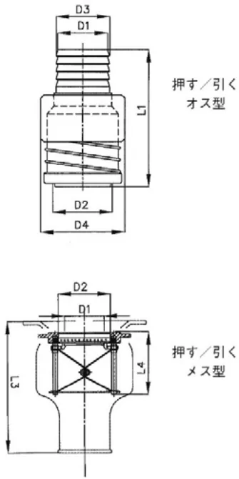</figure>
<div class="tablewrap"><table><tr><td></td><td>D1</td><td>D2</td><td>D3</td><td>D4</td><td>L1</td></tr><tr><td>PP20M
PP20MR
PF20MS
PP15M
PF30M
PF40M
PP125M</td><td>2.0&quot;
1.5&quot;
1.5&quot;
1.5&quot;
1.25&quot;
1.25&quot;
1.25&quot;</td><td>2.5&quot;
2.5&quot;
2.5&quot;
2.0&quot;
1.65&quot;
1.65&quot;
1.75&quot;</td><td>2.25&quot;
1.75&quot;
1.75&quot;
1.45&quot;
1.45&quot;
1.5&quot;</td><td>3.7&quot;
3.7&quot;
3.7&quot;
3.3&quot;
2.68&quot;
2.68&quot;
2.9&quot;</td><td>6.3&quot;
6.3&quot;
6.9&quot;
5.7&quot;
4.64&quot;
4.64&quot;
5.1&quot;</td></tr></table></div>
<div class="tablewrap"><table><tr><td></td><td>D1</td><td>D2</td><td>L3</td><td>L4</td></tr><tr><td>PP20F
PP20FR
PF31F
PF41F
PP15F
PP125F</td><td>2.0&quot;
2.0&quot;
1.75&quot;
1.75&quot;
1.5&quot;
1.25&quot;</td><td>2.5&quot;
2.5&quot;
2.12&quot;
2.12&quot;
2.0&quot;
1.75&quot;</td><td>6.75&quot;
6.75&quot;
5.3&quot;
5.7&quot;
6.75&quot;
6.25&quot;</td><td>3.25&quot;
3.25&quot;
3&quot;
3.38&quot;
3.25&quot;
3.1&quot;</td></tr></table></div>
<p>第３－１図</p>
<figure><span class="pagemark" id="p12">P.12</span>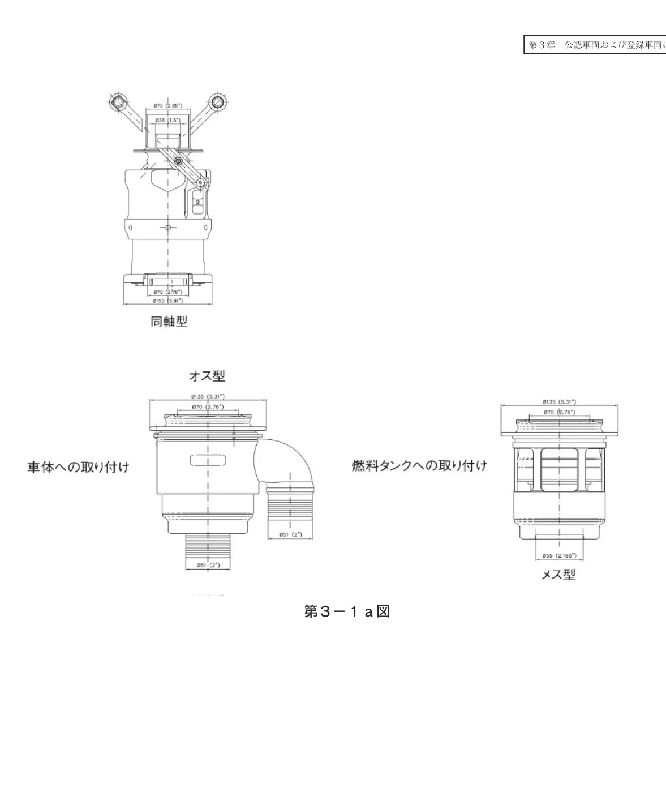</figure>
<figure><span class="pagemark" id="p13">P.13</span>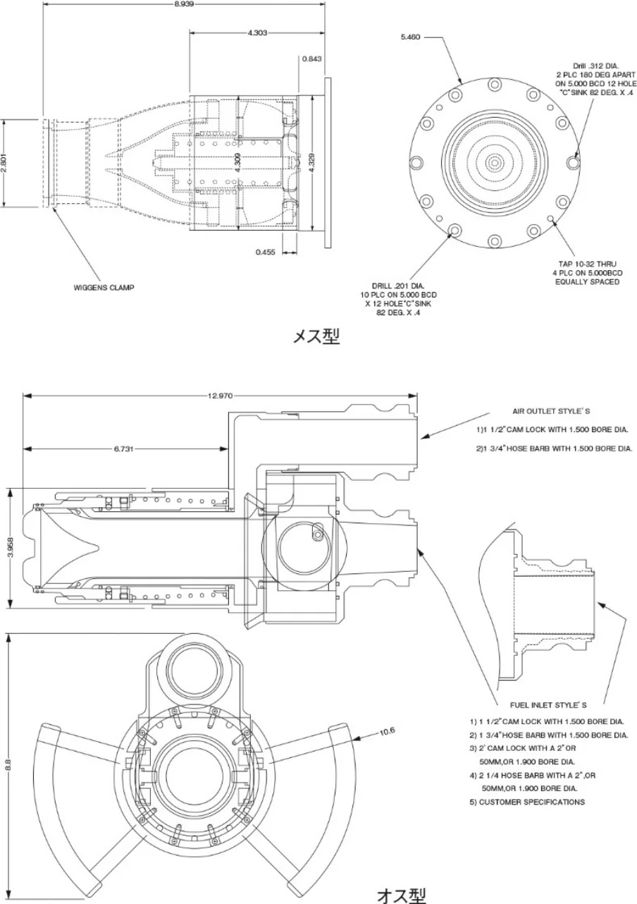</figure>
<p>第３−１ｂ図</p>
<p>‐競技中に燃料補給を伴う競技に参加するすべての車両は、この図に合致した燃料注入口を装備しなければならない。この漏出防止カップリング継ぎ手はデッドマン機構の原理に合致していなければならず、したがって開放状態のときに、いかなる保持装置も組み込まれてはならない（スプリングにより反力を与えられたボール方式、差し込みピン方式等）。</p>
<p>‐空気孔には逆流防止バルブを取り付け、また、バルブは上述の注入口にあるような遮断方式を有し、かつ、直径の寸法も同一でなければならない。</p>
<p>サーキットに集中方式を用意できない場合には、参加者は上記の手順で燃料補給を行うこと。</p>
<h5 id="10-3-2-燃料補給タンク">10.3.2 ）燃料補給タンク</h5>
<p>燃料補給タンクは第3－2図でなければならず（第3－1a図に示された基準のカップリングを用いる場合、それと燃料補給タンクとの接続は第3－2a図の通りでなければならない）、燃料補給中、空気孔の排出口は適切なカップリングで補給タンクの本体に接続すること。</p>
<p>燃料補給タンクには適切な転倒防止策を施すこと。</p>
<p>燃料ブラダーを剥き出しで使用することは認められない。</p>
<p>燃料補給タンク本体は完全な円筒形でなければならない。</p>
<figure><span class="pagemark" id="p14">P.14</span>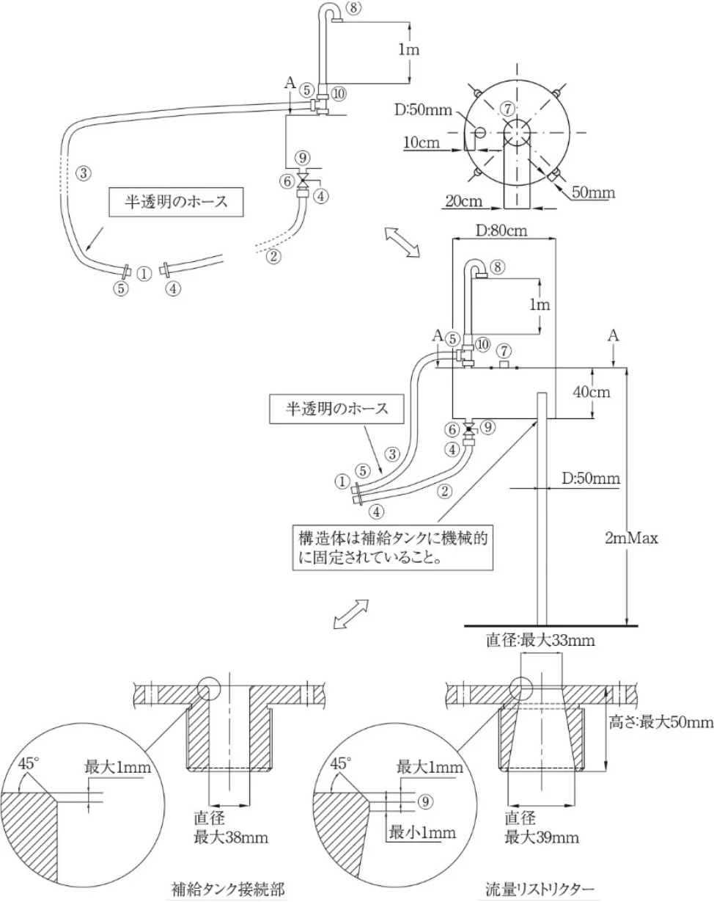</figure>
<p>第３−２図</p>
<p>①オス型給油口（基準のカップリング）②給油ホース内径：38mm（1.5インチ）③ブリーザーホース（半透明）④給油用コネクター　内径：38mm（1.5インチ）⑤ブリーザー用コネクター⑥自動遮断弁　内径：38mm（1.5インチ）⑦給油口キャップ（漏出防止の措置が講じられていること。モンツァキャップは禁止）⑧火炎防止換気口にはフィルターなどの火災防止機能を備えること。⑨流量リストリクター※ ⑩分別バルブ</p>
<p>※「⑨流量リストリクター」は、ＦＩＡイベントのみ適用されます。</p>
<p>１）支柱：太さが50mm以上のものが望ましい。本数は自由。</p>
<p>２）燃料補給タンクの高さ：燃料補給タンク上面は地面から高さ２ｍを超えてはならない。</p>
<p>３）燃料補給タンクの寸法：（１）タンクの深さ：最大40cm</p>
<p>（２）タンクの直径：最大80cm</p>
<p>４）給油ホース：（１）長さ：柔軟性のある部分のみで最小５m（図⑨の流量リストリクター使用時は最小2.5m）</p>
<p>（２）内径：最大38mm（1.5インチ）</p>
<p>５）ブリーザーホース（半透明）：ホースの長さは自由。また、その中間に金属製のパイプ（アルミパイプ等）を使用してもよいが、ホースとの接続はクランプ等を使用することにより確実に漏出防止がなされなければならな</p>
<p><span class="pagemark" id="p15">P.15</span>い。</p>
<p>６）コネクター（図④参照）：図に従い内径38mm（1.5インチ）以下の漏出防止コネクターを装備しなければならない。</p>
<p>７）自動遮断弁（図⑥参照）：燃料補給タンクとコネクター（図④）の間に燃料流入を閉鎖できる内径38mm（1.5インチ）以下の自動遮断弁をとりつけること。</p>
<p>８）給油口キャップ（図⑦参照）：漏出防止の措置が講じられていること（モンツァキャップは禁止）。</p>
<p>９）火炎防止／換気口（図⑧参照）：</p>
<p>（１）分別バルブ（図⑩参照）：上部から換気口先端までの高さは、地面と垂直に計った状態で１ｍなければならない。</p>
<p>（２）火炎防止／換気口と換気パイプの内径寸法は自由。</p>
<p>10）分別バルブ（図⑩参照）：オーバーフローした燃料と気体化したガスを分別できるバルブを図の位置に取り付けなければならない。</p>
<figure>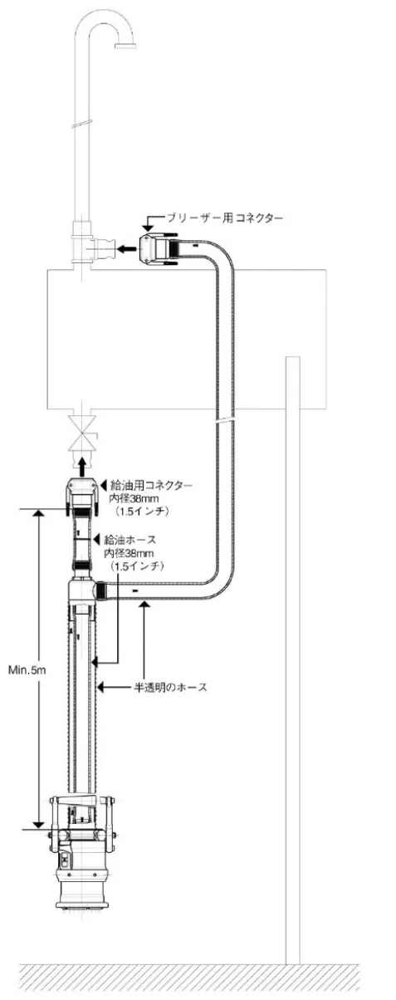</figure>
<p>第３−２ａ図</p>
<h5 id="10-3-3-燃料補給のアース">10.3.3 ）燃料補給のアース</h5>
<p>燃料補給装置のすべての金属部品は電気的にアースされていること。</p>
<p>下記が義務付けられる：</p>
<p>１．各ピットにアースコネクターが２つ備えられていること。（航空機規格が推奨される。）</p>
<p>２．燃料補給装置（塔、タンク、ホース、ノズル、バルブおよびベントボトルを含む）はレースが続行している間を通して、上記のアースコネクターに連結されているものとする。</p>
<p><span class="pagemark" id="p16">P.16</span>３．レース車両は、一時的であっても、ピットで停車した際は、速やかにアースコネクターに連結されるものとする。</p>
<p>４．２および３が実行されなかったり、実行されるまでは、ホース（注入またはガス抜き）を連結してはならない。</p>
<p>５．すべての燃料取扱いピットクルーは静電気防御服の着用が推奨される。</p>
<h5 id="10-4-簡易燃料補給方法">10.4 ）簡易燃料補給方法</h5>
<p>下記の条件を満たした携行缶による補給が許される。</p>
<p>１）手元コックによる補給装置</p>
<p>（１）耐圧性の金属性携行缶で容量が20ℓ以下であること。</p>
<p>（２）携行缶が、車両給油口まで内径38mm（1.5インチ）以下の耐油性ホースを接続できる構造となっていること。</p>
<p>（３）バルブ径38mm（1.5インチ）以下でバルブ開閉が90°以内の角度で操作できる手元コックが携行缶から30cm以内の位置に設置されていること。</p>
<p>（４）手元コックから車両の給油口までのホースの内部が目視でき、長さが50c以内であること。</p>
<p>（５）１回のピットインにおける燃料補給が２０ℓ以下であること。</p>
<p>（６）特別規則書に詳細を記載すること。</p>
<p>２）基準のカップリング（継ぎ手）による補給装置</p>
<p>（１）耐圧性の金属性携行缶で容量が２０ℓ以下であること。</p>
<p>（２）簡易燃料補給装置の全長は９５０mm以内であること。</p>
<p>（３）カップリングと金属性携行缶に接続する部品は、給油側、エア抜き側共に内径６０mm以下とし、その寸法はカップリングを取り付けるハンドルプレート背面から３００mm以下でなければならない。</p>
<p>（配管が湾曲している場合は湾曲外側の最大寸法）</p>
<p>（４）エア抜き側配管は満タン時の燃料の戻りが視認できるようになっていなければならない。</p>
<p>（５）１回のピットインで２０ℓ以上燃料補給する場合、別々の給油装置を用いること。</p>
<p>（６）特別規則書に詳細を記載すること。</p>
<p>上記に合致しない条件とする場合は、申請書および詳細を記載した特別規則書草案をＪＡＦに提出し、その承認を得たうえで公告すること。</p>
<h5 id="10-5-サーキット常設の給油所での燃料補給方法">10.5 ）サーキット常設の給油所での燃料補給方法</h5>
<p>下記の条件を満足する場合、サーキット常設の給油所でレース中の給油をすることが認められる。</p>
<p>１）ピットレーンと給油所との車両通行経路がフェンス・三角コーンなどで明確に区分されていること。</p>
<p>２）給油車両の通行経路を他の車両・歩行者が横断しなければならない場合、横断個所を限定し、整理員を配置すること。</p>
<p>３）ピットレーンと給油所との車両通行経路の走行速度は３０km/hを超えない範囲で制限を設けなければならない。</p>
<p>４）給油所での給油作業は、選任された係員（給油担当者）が実施すること。</p>
<p>５）給油所では燃料補給以外の作業は禁止される。</p>
<p>６）給油作業の安全性と公平性を保つよう、ピット最低滞在時間を設定し、ピット滞在時間を管理することが推奨される。</p>
<p>７）特別規則書に詳細を記載すること。</p>
<h5 id="第11条-ブレーキ">第11条　ブレーキ</h5>
<p>カーボン製ブレーキディスクの使用は禁止される。</p>
<h5 id="第12条-障がい者用操作装置">第12条　障がい者用操作装置</h5>
<p>　第５編細則「アクセサリー等の自動車部品」６．に従った障がい者用操作装置を装着することができる。ただし健常者の使用は許されない。</p>
<h3 id="第-4-章-公認車両および登録車両に関する安全規定"><span class="pagemark" id="p17">P.17</span>第 4 章　公認車両および登録車両に関する安全規定</h3>
<p>改造および付加物の取付けなどにより競技会技術委員長が安全でない車両と判断した場合、その指示に従わなければならない。安全確保の見地から、その事例は、ＪＡＦが監修するインターネットサイト（https://motorsports.jaf.or.jp）に掲載される場合がある。</p>
<h5 id="第-1-条-配管類">第 1 条　配管類</h5>
<h5 id="1-1-配管類の保護">1.1 ）配管類の保護</h5>
<p>燃料およびオイルとブレーキ配管は、外部から損傷を受けぬよう（飛石、腐触、機械的損傷等）、すべてを考慮して保護策をとらねばならない。また、室内には絶対に火災および損傷を発生させない配慮を必要とする。</p>
<p>量産車の装備がそのまま維持される場合は追加の防護は任意。防音材および防振材等を取り除くことにより配管や配線類が露出する場合には適切なる防護策を講じなければならない。</p>
<p>燃料配管について、金属部品が絶縁部品によってボディシェルから隔離されている場合は、ボディシェルと電気的に接続されていなければならない。</p>
<h5 id="1-2-仕様および取り付け">1.2 ）仕様および取り付け</h5>
<p>量産の装備が保持されない場合は以下の適用が義務付けられる。</p>
<p>１）液体用配管の取り付け：</p>
<p>（１）冷却水または潤滑油を収容する配管：車室外部になくてはならない。</p>
<p>（２）燃料または油圧液を収容する配管：車室を通過してよいが、第4−1図および第4−2図に従った前後の隔壁部分とブレーキ回路およびクラッチ液回路を除き、車室内部にいかなるコネクターも有さないこと。</p>
<p>２）液体用配管の仕様：</p>
<p>燃料配管、潤滑油配管および加圧される油圧液を収容する配管の取り付け具は下記の仕様に従って製造されていなくてはならない。柔軟なものである場合、これらの配管はネジ山のついたコネクター、はめ込み式のコネクター、あるいは自動的に密閉されるコネクターと、摩擦と炎に耐え得る（燃焼しない）外部網材を有していなくてはならない。</p>
<p>（１）燃料配管の仕様（インジェクターおよびタンクへ戻る配管上の冷却ラジエターへの連結部を除く）：135℃ （250゜Ｆ）の最低作動温度で７MPa（70bar／1,000psi）の最低破裂圧力を有していなくてはならない。</p>
<p>（２）潤滑油の配管の仕様：232℃（450゜Ｆ）の最低作動温度で７MPa（70bar／1,000psi）の最低破裂圧力を有していなくてはならない。</p>
<p>（３）加圧下にある油圧液を収容する配管の仕様：232℃（450゜Ｆ）の最低作動温度で最低破裂圧力28MPa （280bar／4,000psi）を有しなくてはならない。</p>
<p>油圧システムの作動圧力が14MPa（140bar／2,000psi）を超える場合は、作動圧力の少なくとも倍の破裂圧力を有していなくてはならない。</p>
<figure>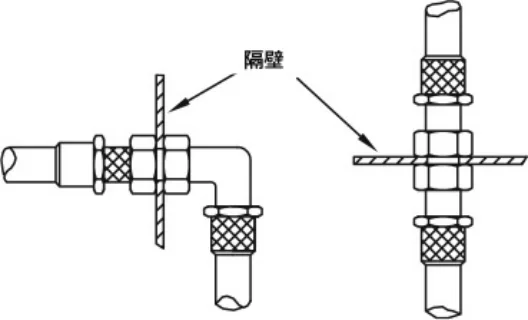</figure>
<p>第４−１図</p>
<figure><span class="pagemark" id="p18">P.18</span>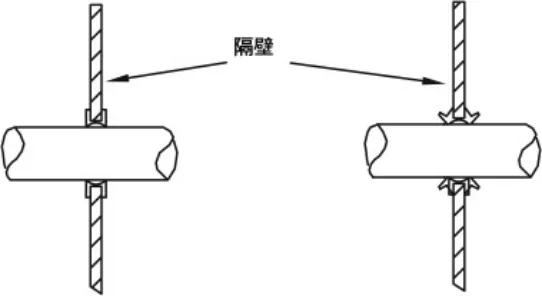</figure>
<p>第４−２図</p>
<h5 id="第-2-条-ブレーキ">第 2 条　ブレーキ</h5>
<h5 id="2-1-ブレーキ">2.1 ）ブレーキ</h5>
<p>同一のペダルによって作動する二重回路。</p>
<p>ペダルは通常、すべてのホイールに作動するものであること。</p>
<p>制動装置のパイプに漏れもしくは欠陥が生じた場合でも、ペダルは少なくとも２つのホイールに作動しなければならない。量産車にこのシステムが取り付けられている場合は変更を必要としない。</p>
<p>ペダルブラケットの安全のための補強は許される。</p>
<h5 id="2-2-駐車ブレーキ">2.2 ）駐車ブレーキ</h5>
<p>駐車ブレーキ装置は左右同時に作動すること。</p>
<h5 id="第-3-条-ファスナーの追加">第 3 条　ファスナーの追加</h5>
<p>　フロントおよびリアボンネットとトランクリッドには、少なくとも２個のファスナーを可能な限り離れた位置に取り付けること。ファスナーは、赤（もしくは対照的に目立つ色）の矢印で明示されていなければならない。元のファスナーおよび開口を維持する装置（ダンパー等）は作動しないように処理するか取り除くこと。</p>
<h5 id="第-4-条-安全ベルト">第 4 条　安全ベルト</h5>
<p>　安全ベルトは、その材質、取り付け方法などを含め「レース競技における安全ベルトに関する細則」に従ったフルハーネスタイプでなければならず、その肩部ストラップは幅75mm以上を有していなければならない（ヘッドアンドネックサポート指定ベルトを除く）。安全ベルトを座席やその支持体に固定することは禁止される。ＦＩＡ国際モータースポーツ競技規則 付則Ｊ項 第253条に定められた取り付け方法も許される。（第4−3図〜第4−4図参照）</p>
<figure>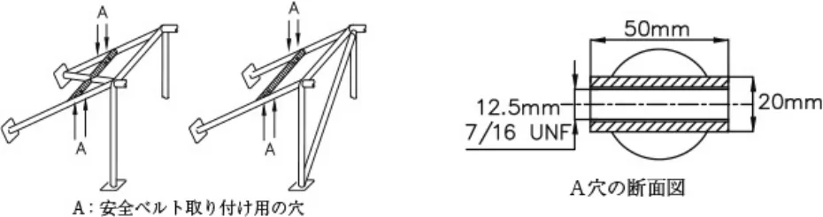</figure>
<p>第４−３図　　　　　　　　　　　　　　第４−４図</p>
<h5 id="第-5-条-消火装置-消火系統">第 5 条　消火装置—消火系統</h5>
<p>すべての車両は手動消火器を装備することが義務付けられる。</p>
<p>手動消火器を自動消火装置に取り替えることができる。</p>
<h5 id="5-1-手動消火器">5.1 ）手動消火器</h5>
<p>手動消火器とは消火器単体をドライバー等が取り外して消火を行うための消火器をいう。</p>
<p>１）取り付け</p>
<p>各々の消火器の取り付けは、クラッシュ時を考慮し、減速度25Ｇがいかなる方向に加えられても耐えられるように取り付けなければならず、取り付け方向は車両の前後方向中心線に対し直角に近い状態であること。（リベット留めは禁止される。）</p>
<p>金属製ストラップの付いたラピッドリリースメタル（ワンタッチ金具）の装着のみ認められる（最低２箇所に装着することが推奨される）。</p>
<p>すべての消火器は充分に保護されていなければならない。</p>
<p>２）取り付け場所・取り外し</p>
<p><span class="pagemark" id="p19">P.19</span>消火器はドライバー等が容易に取り外せる位置に取り付けられなければならない。</p>
<p>３）下記情報を各消火器に明記しなければならない。</p>
<p>−　容器の容量</p>
<p>−　消火剤の種類</p>
<p>−　消火剤の重量もしくは容量</p>
<p>−　消火器の点検日</p>
<p>４）消火器の点検日は、消火剤の充填期日もしくは前回点検期日から２年以内とする。（消火剤の充填期日もしくは前回の点検期日から２年を過ぎて使用してはならない。）ただし、２年毎の点検を継続したとしても消火器の製造者が定めた有効年数あるいは耐用年数を超えて使用することはできない。</p>
<p>−　消火器の製造者が、有効年数あるいは耐用年数を定めていない場合、その使用期限は製造期日（または初回充填期日）から７年間を目処とする。</p>
<p>−　消火剤の充填日もしくは前回検査日の表示が年（月）表示である場合、有効期間の起算日は当該年（月）の末日とする。</p>
<p>５）２年毎に製造者、製造者が指定した工場、あるいは代理店等の有資格者による点検を受けること。外部が損傷している容器等機能／性能に影響を与える恐れがあると判断される場合には、装置を交換しなければならない。</p>
<p>６）仕　様</p>
<p>１つあるいは２つの消火剤容器とする。粉末2.0kg以上の内容量が必要である（または、ＦＩＡ国際モータースポーツ競技規則 付則Ｊ項 第253条に記された消火剤および内容量を装備してもよい）。すべての消火器は耐火性でなければならない。</p>
<h3 id="参考-2025年国際モータースポーツ競技規則-付則-項-第253条">参考）2025年国際モータースポーツ競技規則 付則Ｊ項 第253条</h3>
<p>第７項：消火器　―　消火装置</p>
<h5 id="7-1-7-2-5-略">7.1 ）〜7.2.5 ）（略）</h5>
<h5 id="7-3-手動消火器">7.3 ）手動消火器</h5>
<p>7.3.1 ）すべての車両は、以下の第7項3.2から7項3.5まで、あるいはFIA規格8865-2015に従い（後者の場合には以下の第7項3.2から7項3.5までは適用されない）、消火器を1個あるいは2個装備していること。</p>
<p>2024年1月1日以降のFIA選手権／ラリー車両：</p>
<p>すべての車両には、本規則第7項3.2から第7項3.5まで、またはFIA基準8865-2015に準拠した2つの消火器が取り付けられなければならない（本規則下記第7項3.2から第7項3.5は後者の場合には適用されない。</p>
<p>ラリー１車両に許可されている消火剤：第253条18項23を参照。</p>
<p>2番目の手動消火器の設置：以下の第7項3.6に従う。コックピットや荷物室に設置可能である。</p>
<p>2024年1月1日以降、2つの義務付けられた消火器のうち少なくとも1つは高電圧対応でなければならない（第253条18項23を参照）。</p>
<p>2026年1月1日以降、両方の手動消火器ともに高電圧対応でなければならない（第253条18項23を参照）</p>
<h5 id="7-3-2-認められる消火剤">7.3.2 ）認められる消火剤：</h5>
<p>AFFF、4Fユニバーサル、FX G-TEC、Viro3、粉末消火剤、FIAが公認したその他の消火剤</p>
<h5 id="7-3-3-消火剤の最少容量">7.3.3 ）消火剤の最少容量：</h5>
<p>・AFFF 2.4リットル</p>
<p>・4Fユニバーサル2.4リットル</p>
<p>・FX G-TEC 2.0kg</p>
<p>・Viro3 2.0kg</p>
<p>・Novec1230 2.0kg</p>
<p>・粉末2.0kg</p>
<p>7.3.4 ）すべての消火器は、その内容物によって以下の封入圧力を有さなければならない：</p>
<p>・AFFF製造者の指示に従う。</p>
<p>・4Fユニバーサル製造者の指示に従う。</p>
<p>・FX G-TECおよびViro3製造者の指示に従う。</p>
<p>・Zero360製造者の指示に従う。</p>
<p>・粉末最小8bar、最大13.5bar</p>
<p><span class="pagemark" id="p20">P.20</span>更に、消火剤にAFFFまたは4Fユニバーサルが用いられている場合は、消火器それぞれに封入圧力を確認できる機構を備えていなければならない。</p>
<h5 id="7-3-5-下記情報を各消火器に明記しなければならない">7.3.5 ）下記情報を各消火器に明記しなければならない：</h5>
<p>・容器の容量</p>
<p>・消火剤の種類</p>
<p>・消火剤の重量もしくは容量</p>
<p>・消火器の日付が確認されなければならず、それは消火剤の充填期日もしくは前回の検査期日から2年以内の日付、あるいは有効期限以内の日付でなければならない。</p>
<p>7.3.6 ）すべての消火器は適切に防護されていなければならない。容器の取付けは25Gの減速度に耐え得るものでなければならない。</p>
<p>更に金属製ストラップによるクイックリリース方式の留め金具（最低２つ）のみが認められる。</p>
<p>非分解固定バンドの使用が要求される。</p>
<p>7.3.7 ）消火器は、ドライバーおよびコ・ドライバーの容易に手の届く所に位置すること。</p>
<h5 id="5-2-自動消火装置">5.2 ）自動消火装置</h5>
<p>自動消火装置とは、車両に固定された消火装置が、車室内とエンジンルームに対し起動装置によって同時に作動するものをいう。</p>
<p>１）取り付け</p>
<p>各々の消火装置の容器は、クラッシュを考慮し、減速度25Ｇがいかなる方向に加わってもそれに耐えられるように取り付けられなければならない。</p>
<p>２）操　作　−　起　動</p>
<p>２つの系統は同時に起動しなければならない。</p>
<p>いかなる起動装置も認められる。しかしながら、起動系統が機械式だけでない場合、主要エネルギー源からでないエネルギー源を備えなければならない。</p>
<p>運転席に正常に着座し、安全ベルトを着用したドライバーが起動装置を操作できなければならない。</p>
<p>車両の外部のいかなる者も同時に操作できること。外部からの起動装置はサーキットブレーカーに接して、あるいは、それと組み合わせて位置しなければならない。また、赤色で縁取られた直径が最小10cmの白色の円形内に赤色でＥの文字を描いたマークによって表示されなければならない。</p>
<p>装置はいかなる車両姿勢にあっても、たとえ車両が転倒した場合でも作動しなければならない。</p>
<p>３）下記情報を各消火装置に明記しなければならない。</p>
<p>−　容器の容量</p>
<p>−　消火剤の種類</p>
<p>−　消火剤の重量もしくは容量</p>
<p>−　消火器の点検日</p>
<p>４）消火装置の点検日は、消火剤の充填期日もしくは前回点検期日から２年以内とする。（消火剤の充填期日もしくは前回の点検期日から２年を過ぎて使用してはならない。）ただし、２年毎の点検を継続したとしても消火装置の製造者が定めた有効年数あるいは耐用年数を超えて使用することはできない。</p>
<p>−　消火装置の製造者が、有効年数あるいは耐用年数を定めていない場合、その使用期限は製造期日（または初回充填期日）から７年間を目処とする。</p>
<p>−　消火剤の充填日もしくは前回検査日の表示が年（月）表示である場合、有効期間の起算日は当該年（月）の末日とする。</p>
<p>５）２年毎に製造者、製造者が指定した工場、あるいは代理店などの有資格者による点検を受けること。外部が損傷している容器等機能／性能に影響を与える恐れがあると判断される場合には、装置を交換しなければならない。</p>
<p>６）仕　様</p>
<p>ＦＩＡテクニカルリストNo.16およびNo.52の消火システム、またはＦＩＡ国際モータースポーツ競技規則 付則Ｊ項 253条7項および第259条14項に記された消火剤および内容量を装備すること。</p>
<p>消火装置は耐火性でなければならず、また、充分に防護されていなければならない。消火剤の噴出ノズルは、ドライバーに直接消火剤がかかることのないように取り付けなければならない。（凍傷の危険）</p>
<p>７）放射時間</p>
<p>車室内　：最短30 秒／最長80 秒</p>
<p><span class="pagemark" id="p21">P.21</span>エンジン：最短10 秒／最長40 秒</p>
<p>両方の消火装置が同時に作動しなければならない。</p>
<h3 id="参考-2025年国際モータースポーツ競技規則-付則-項-第253条-2">参考）2025年国際モータースポーツ競技規則 付則Ｊ項 第253条</h3>
<h5 id="7-2-装備するシステム">7.2 ）装備するシステム</h5>
<p>7.2.1 ）すべての車両は、競技車両用配管済消火装置のFIA規格（1999）あるいはFIA規格8865-2015に合致した消火システムを備えていなければならない（第7条1項参照）。</p>
<p>このシステムは製造者の指示に従い、またテクニカルリストNo.16あるいは52に従って使用しなければならない。</p>
<p>ラリーにおいては、テクニカルリストNo.16のシステムの消火器の最少容量は、3kgでなければならない。</p>
<p>7.2.2 ）すべての消火剤容器は適切に防護されなければならず、コクピット内に取り付けられなければならない。</p>
<p>容器は荷物室に設置されても構わないが、すべての水平方向について車体の外端から少なくとも300mm離れていることを条件とする。</p>
<p>消火剤容器は最低2本のネジ留め式の金属製ストラップによって確実に固定されなければならず、固定装置は25Gの減速度に耐え得るものでなければならない。</p>
<p>非分解固定バンドの使用が要求される。</p>
<p>固定具の材質は、-15℃から+80℃の温度範囲で作動しなければならない。</p>
<p>すべての消火装置は配管およびノズルの取り付け部も含めて、耐火性でなければならない。</p>
<p>プラスチック製のパイプは禁止され、金属製のパイプを義務付けとする（ただし、別の規定がない限り）。</p>
<p>7.2.3 ）正規の位置にステアリングホイールを取付け、安全ハーネスを締めて正常に着座したドライバー（および適用される場合はコ・ドライバー）が手動により消火システムを起動することができなければならない。</p>
<p>電気起動装置（電気ボックス）は、搭乗者が通常どおり着座している時に車両構成部品を取り外すことなく、競技役員がステータスライトを視認できる場所に設置するものとする。</p>
<p>座席の下に電気ボックスを取り付けることは許可されていない。</p>
<p>更に、外部からの起動手段はサーキットブレーカースイッチと連動させなければならない。これは最低直径10cmの赤く縁取られた白い円の内部に、赤で“E”と書いた文字により表示されなければならない。</p>
<p>ラリー1、ワールドラリーカータイプの車両では、車両の外部または内部に設置された消火器を起動すると、エンジンおよびバッテリーを強制的にカットオフする機構が備えられていなければならない。</p>
<p>7.2.4 ）当該システムはいかなる状況下でも作動しなければならない。</p>
<p>7.2.5 ）消火器のノズルは使用される消火剤に適したものを用い、直接搭乗者の頭部に向かないように取付けなければならない。</p>
<h5 id="第-6-条-ロールケージ">第 6 条　ロールケージ</h5>
<h5 id="6-1-全-般">6.1 ）全　般</h5>
<p>ロールケージの取り付けが義務付けられる。</p>
<p>ロールケージは以下の何れかであること：</p>
<p>なお、２０２３年１月１日以降に公認または登録された車両に対するロールケージの取り付けは以下のａ）～ｃ）の内、ｂ）またはｃ）を強く推奨する。</p>
<p>ａ）6.2項以降の条項に記された要件に従い製作されたもの</p>
<p>ｂ）ＪＡＦまたは他のＡＳＮが公認あるいは認証したもの（「ロールケージ製造者のロールケージＪＡＦ公認申請手続きに関する細則」に基づきＪＡＦが公認したものを含む）</p>
<p>ＪＡＦまたは他のＡＳＮが承認し、製造者を代表する資格を有する技術者が署名した公認の書類または証明書を、大会の車両検査委員に提出しなければならない。</p>
<p>2003年１月１日より、ＡＳＮによって公認され販売されるすべての新規ケージは、当該製造者が貼付する識別プレートによって識別されなければならない。この識別プレートは複製できたり移動できたりしてはならない（埋め込み、刻印、金属銘板あるいは剥がすと破損するタイプのステッカー等による）。</p>
<p>この識別プレートには製造者の名称、ＡＳＮの公認番号あるいは認証番号、製造者による個別の製造番号の記載がなければならない。</p>
<p>同一の製造番号が記載されている証明書を車両に付帯させ、これを大会の車両検査委員に提出しなければなら</p>
<p><span class="pagemark" id="p22">P.22</span>ない。</p>
<p>ｃ）安全ケージ公認規定に基づきＦＩＡが公認したもの</p>
<p>このロールケージはＦＩＡにより公認された車両の公認書に対する追加公認（ＶＯ）の対象とならなければならない。</p>
<p>1997年1月1日以降に公認され販売されたすべてのケージには、製造者の識別と製造番号がはっきりと視認できるようになっていなければならない。</p>
<p>ロールケージの公認書式には、この情報の記入方法とその場所が特定されていなければならず、購入者は、これに対応した製造番号の付された証明書を受領しなければならない。</p>
<p>公認または認証されたロールケージに対する改造は禁止される。</p>
<p>素材またはロールケージへの恒久的な変更を伴う、ロールケージへの機械加工、溶接によるいかなる工程も改造と見なされる。</p>
<p>事故により損傷を受けた公認あるいは認証されたロールケージに対するすべての補修作業は、当該ロールケージ製造者が実施するか、あるいはその承認の下で実施されなければならない。</p>
<p>ロールケージのパイプには液体またはその他のものを通してはならない。</p>
<p>ロールケージは、搭乗者の乗降を著しく阻害してはならない。</p>
<p>ロールケージの一部あるいは全部へのクロームメッキは禁止される。</p>
<p>コクピット内部において、車体側面の部材とロールケージの間に次のものを通すことは禁止される。</p>
<p>－電気ケーブル</p>
<p>－液体（ウインドウォッシャー液を除く）用配管</p>
<p>－消火器用配管</p>
<p>部材は、ダッシュボードとトリムおよび後部座席を貫通して、搭乗者用の空間へ侵入してもよい。</p>
<p>後部座席は折り畳まれてよい。</p>
<h5 id="6-2-定-義">6.2 ）定　義</h5>
<h5 id="6-2-1-ロールケージ">6.2.1 ）ロールケージ</h5>
<p>コクピット内にボディシェルに近接して取り付けられる複数のパイプによる構造。その機能は、衝撃を受けた際のボディシェル（シャシー）の変形を抑制することである。</p>
<h5 id="6-2-2-ロールバー">6.2.2 ）ロールバー</h5>
<p>２つの取り付け基部を有するフープ状のパイプフレーム。</p>
<h5 id="6-2-3-メインロールバー-第4-6図">6.2.3 ）メインロールバー（第4−6図）</h5>
<p>2009年12月31日以前に公認または登録された車両：</p>
<p>前部座席直後で車両の左右に亘って配置される、横方向で、かつ垂直に近いワンピースのパイプによるフープ。</p>
<p>2010年1月1日から2011年12月31日までに公認または登録された車両：</p>
<p>前部座席直後で車両の左右に亘って配置される、横方向の垂直に対する最大角が±10°のワンピースのパイプによるフープ。</p>
<p>2012年1月1日以降に公認または登録された車両：</p>
<p>前部座席直後で車両の左右に亘って配置される、横方向の垂直に対する最大角が±10°のワンピースのパイプによるフープ。なお、当該パイプの中心線は単一平面上になければならない。</p>
<h5 id="6-2-4-フロントロールバー-第4-6図">6.2.4 ）フロントロールバー（第4−6図）</h5>
<p>メインロールバーと同様に、その形状はウインドスクリーンピラーとスクリーン上端に沿うもの。</p>
<p>2020年１月１日以降に公認または登録された車両：</p>
<p>支柱下部は、ほぼ垂直に近い状態で、後方への垂直に対して最大10°の角度でなければならない。取り付け脚部では、パイプがロールバーの最前点より後方にあってはならない。</p>
<h5 id="6-2-5-サイドロールバー-第4-7図">6.2.5 ）サイドロールバー（第4−7図）</h5>
<p>車両の前後方向中心線にほぼ平行で、垂直に近いワンピースのパイプによるフープで、車両の右側もしくは左側に沿って配置され、そのフロント支柱はウインドスクリーンピラーに沿い、そのリア支柱は垂直に近く、かつ前部座席直後に配置される。</p>
<p>2012年１月１日以降に公認または登録された車両：</p>
<p>当該リア支柱は横から見て直線でなければならない。</p>
<p>2020年1月1日以降に公認または登録された車両：</p>
<p><span class="pagemark" id="p23">P.23</span>リア支柱の垂直に対する最大角は±10°であること。</p>
<p>フロント支柱下部は、ほぼ垂直に近い状態で、後方への垂直に対して最大10°の角度でなければならずかつ前方取り付け脚部では、パイプがロールバーの最前点より後方にあってはならない。</p>
<h5 id="6-2-6-ハーフ・サイドロールバー-第4-8図">6.2.6 ）ハーフ・サイドロールバー（第4−8図）</h5>
<p>リア支柱のないサイドロールバーをいう。</p>
<h5 id="6-2-7-前後方向の部材">6.2.7 ）前後方向の部材</h5>
<p>フロントおよびメインロールバーの上部に接合する車両の前後方向中心線にほぼ平行なシングルピースのパイプ。</p>
<h5 id="6-2-8-横方向の部材">6.2.8 ）横方向の部材</h5>
<p>ハーフ・サイドロールバーまたはサイドロールバーの上部に接合するほぼ横方向のシングルピースのパイプ。</p>
<h5 id="6-2-9-斜行部材">6.2.9 ）斜行部材</h5>
<p>メインロールバーの上部コーナーの一つ、またはサイドロールバーの場合は横方向の部材の端部の一つと、反対側のロールバーの下部取り付け点との間、もしくはバックステー上端ともう一方のバックステーの下部取り付け点との間をつなぐ横方向のパイプ。</p>
<h5 id="6-2-10-取り外し可能な部材">6.2.10 ）取り外し可能な部材</h5>
<p>取り外しが可能でなければならないロールケージの部材。</p>
<h5 id="6-2-11-ケージの補強">6.2.11 ）ケージの補強</h5>
<p>ロールケージの強度を増すために、ケージに追加される部材。</p>
<h5 id="6-2-12-取り付け基部">6.2.12 ）取り付け基部</h5>
<p>通常は補強板の上になるが、ロールバーのパイプをボディシェル／シャシーにボルト留めおよび／または溶接できるようにパイプ端に溶接されるプレート。</p>
<h5 id="6-2-13-補強板">6.2.13 ）補強板</h5>
<p>ロールバーの取り付け基部の下方に、ボディシェル／シャシーへの荷重をより拡散するために、ボディシェル／シャシーに取り付けられる金属板。</p>
<h5 id="6-2-14-ガセット-第4-5図">6.2.14 ）ガセット（第4−5図）</h5>
<p>Ｕ型に湾曲した金属板による湾曲部または連結部の補強（第４−５図）。その厚さは1.0mm以上なければならない。</p>
<p>このガセットの端（Ｅ点）は、角の頂点（Ｓ点）から測って、連結される最も太いパイプ外径の２倍から４倍の距離に位置しなければならない。</p>
<p>2013年１月１日以降に公認または登録された車両については、角（Ｓ点）の頂点に切り抜きが許されるが、その半径は連結される最も太いパイプの外径の1.5倍を超えてはならない。ガセットの平坦な面には穴１つを設けることができるが、その直径は連結される最も太いパイプの外径を超えてはならない。</p>
<figure>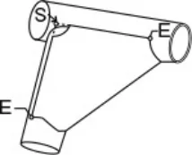</figure>
<p>第４−５図</p>
<h5 id="6-3-仕-様">6.3 ）仕　様</h5>
<h5 id="6-3-1-基本構造">6.3.1 ）基本構造</h5>
<p>基本構造は、以下の設計のうちの一つに従い製作されなければならない：</p>
<p>＊　メインロールバー１本＋フロントロールバー１本＋前後方向の部材２本＋バックステー２本＋取り付け基部６箇所（第４−６図）。</p>
<p>または、</p>
<p>＊　サイドロールバー２本＋横方向の部材２本＋バックステー２本＋取り付け基部６箇所（第４−７図）。</p>
<p>あるいは、</p>
<p>＊　メインロールバー１本＋ハーフ・サイドロールバー２本＋横方向の部材１本＋バックステー２本＋取り付け基部６箇所（第４−８図）。</p>
<figure><span class="pagemark" id="p24">P.24</span>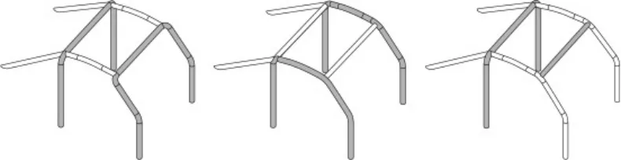</figure>
<p>第４−６図　　　　　　第４−７図　　　　　　第４−８図</p>
<p>メインロールバーのほぼ垂直な部分あるいはサイドロールバーのリア支柱は、ボディシェルの内部輪郭にできるだけ近接したものでなければならず、その下部の垂直部分の湾曲は１箇所以下でなければならない。</p>
<p>オープンカーの場合、メインロールバーの高さは、ドライバーの脊柱に沿って座席の座面からメインロールバーの上部までを測定して少なくとも920mmなければならず、かつ、通常に着座したドライバーのヘルメットから50mm以上上方になければならない。</p>
<p>フロントロールバー（あるいはサイドロールバーまたはハーフサイドロールバーのフロント支柱）は、ウインドスクリーンピラーに可能な限り近く沿わなければならず、2007年１月１日以降に公認または登録された車両については、それがウインドスクリーンピラーに沿うのが終わった所の下でそれ以上追加の湾曲があってはならない。</p>
<p>ロールケージの製作のためになされる横方向の部材のサイドロールバーへの連結、前後方向の部材のフロントおよびメインロールバーへの連結、ならびにハーフ・サイドロールバーのメインロールバーへの連結は、ルーフの高さにて実施されなければならない。</p>
<p>すべての場合において、ルーフの高さに４ヶ所を超えて取り外し可能な連結部を設けないことが推奨され、2008年１月１日以降に公認または登録された車両については、これが義務付けられる。</p>
<p>バックステーは、ルーフラインおよびメインロールバーの外側湾曲頂部に近接して、車両の両側に取り付けられなければならず、取り外し可能な連結を用いてもよい。</p>
<p>2003年１月１日以降に公認または登録された車両については、バックステーの形成する角度は垂直に対して少なくとも30°を有し後方へ延び、まっすぐでなければならず、可能な限りボディシェルの内部側面に近接していなければならない。</p>
<h5 id="6-3-2-設-計">6.3.2 ）設　計</h5>
<p>基本構造が一旦決定したならば、義務付けられる部材と補強を加え完成されなければならない（6.3.2.1項参照）。それに対して任意の部材および補強を追加することができる（6.3.2.2項参照）。</p>
<p>明確に許されていない限り、または6.3.2.4）に従った取り外し可能な連結具が使用されていない限り、すべての部材および補強パイプはシングルピースでなければならない。</p>
<h5 id="6-3-2-1-義務付けの部材と補強">6.3.2.1 ）義務付けの部材と補強</h5>
<h5 id="6-3-2-1-1-斜行部材">6.3.2.1.1 ）斜行部材</h5>
<p>2002年12月31日以前に公認または登録された車両：</p>
<p>ロールケージは、第４−９図、第４−10図、第４−11図、第４−12図、第４−26図、および第４−27図に示される斜行部材のうち、何れか１つに合致しなければならない。</p>
<p>斜行部材の方向が逆になっても構わない。第４−11図の場合には、ボディシェル／シャシー上の２箇所の取り付け点間の距離が300mmを超えてはならない。</p>
<p>部材はまっすぐでなければならないが、取り外し可能であってよい。</p>
<p>2003年1月1日以降に公認または登録された車両：</p>
<p>ロールケージには、第４−12図に従い2本の斜行部材をメインロールバーに取り付けなければならず、交差部をガセットにより補強しなければならない。</p>
<p>部材はまっすぐでなければならないが、取り外し可能であってよい。</p>
<p>斜行部材の下端は、メインロールバー取り付け基部から100mm以内の箇所で連結していなければならない（その計測については第４−58図を参照）。</p>
<p>斜行部材の上端は、バックステーとの連結部から100mm以内のメインロールバーに連結していなければならない。</p>
<figure><span class="pagemark" id="p25">P.25</span>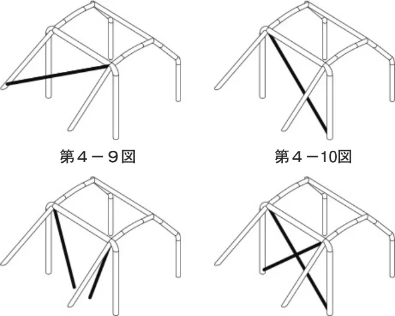</figure>
<p>第４−９図　　　　　　　　　第４−10図</p>
<p>第４−11図　　　　　　　　　　第４−12図</p>
<h5 id="6-3-2-1-2-ドアバー">6.3.2.1.2 ）ドアバー</h5>
<p>１本または複数の前後方向の部材が、第４−13図、第４−14図、第４−15図および第４−16図に従い（2008年1月1日以降に公認または登録された車両については、第４−14図、第４−15図および第４−16図）、車両の運転席側に取り付けなければならず、助手席側に取り付けることも強く推奨される。</p>
<p>各図を組み合わせてもよい。</p>
<p>これらは取り外し可能であってよい。</p>
<p>（１本の前後方向の部材を、第４−14図、第４−15図および第４−16図に示される設計のそれぞれに追加することができる。）</p>
<p>この側面防護はできるだけ高くなければならないが、上部取り付け点はドア開口部の底部より計測しその高さの半分より高くなってはならない。</p>
<p>もし、この上部の取付け点がドア開口部より前もしくは後に位置している場合、この高さの制限は、バーとドア開口部との交差位置に相当する高さにも適用される。</p>
<p>“Ｘ”（クロス−ストラット）形状のドアバーの場合（第４−14図）、クロスストラットの下部取り付け点はボディシェル／シャシーの前後方向のメンバーに直接取り付けられ、“Ｘ”形状のうちの最低１本がシングルピースでなければならない。</p>
<p>ドアバーがフロントロールバーあるいはサイドロールバーのフロントの支柱の補強（第４−20図）へ連結されることも認められる（第４−42A図参照）。</p>
<figure>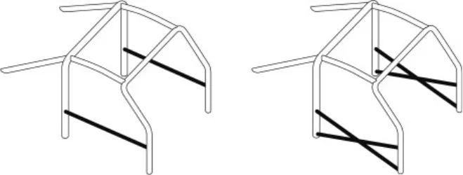</figure>
<p>第４−13図　　　　　　第４−14図</p>
<figure>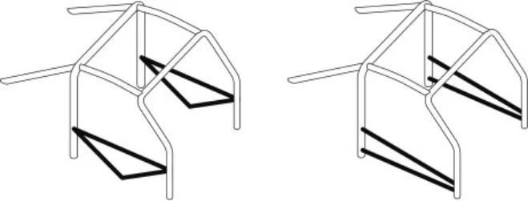</figure>
<p>第４−15図　　　　　　　第４−16図</p>
<h5 id="6-3-2-1-3-ルーフの補強">6.3.2.1.3 ）ルーフの補強</h5>
<p>2006年１月１日以降に公認または登録された車両についてのみ：</p>
<p><span class="pagemark" id="p26">P.26</span>ロールケージの上部は、第４−17図、第４−18図および第４−19図のいずれか１つに合致していなければならない。</p>
<p>この補強はルーフのカーブに沿って構わない。</p>
<p>第４−17図の場合に限り、１本の部材のみを取り付けることが許されるが、その前部の接続はドライバー側になければならない（第４−17A図および第４−17B図参照）。</p>
<p>この補強の端は、ロールバーと部材との連結部から100mm未満でなければならない（第４−18図と第４−19図の補強におけるＶ字型の頂点には適用されない）。</p>
<p>2014年１月１日以降に公認または登録された車両についてのみ：</p>
<p>Ｖ字型の頂点のパイプの交差部：</p>
<p>パイプ同士がお互いに接合していない場合、それらのパイプの間の距離は、ロールバーあるいは横方向の部材との接合部において、100mmを超えてはならない。</p>
<figure>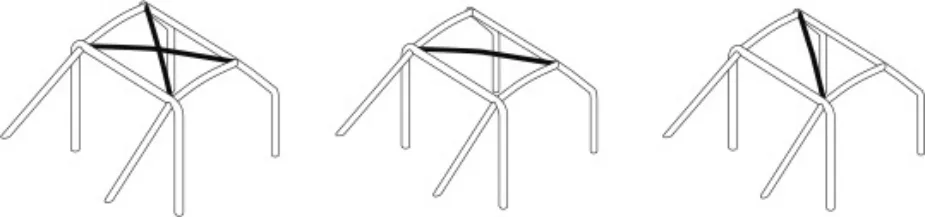</figure>
<p>第４−17図　　　　  　　第４−17A図　　　　　  　第４−17B図</p>
<p>※この場合、運転席が</p>
<p>※この場合、運転席が</p>
<p>右側になければならない。</p>
<p>左側になければならない。</p>
<figure>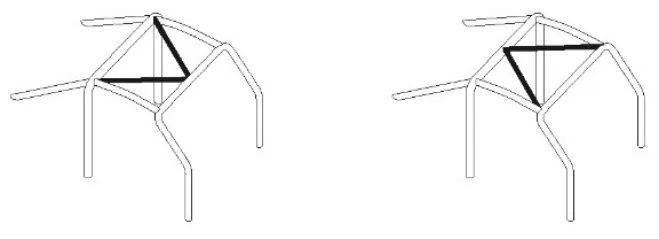</figure>
<p>第４−18図　　　　　　　　第４−19図</p>
<p>6.3.2.1.4 ）フロントロールバーあるいはサイドロールバーのフロントの支柱の補強</p>
<p>2008年１月１日以降に公認または登録された車両についてのみ：</p>
<p>寸法&lt;A&gt;（第４−20図参照）が200mmを超える場合は、フロントロールバーあるいはサイドロールバーのフロントの支柱の補強をフロントロールバーの左右に取り付けなければならない。</p>
<p>この補強は曲げてよいが、横から見てまっすぐであり、その曲げ角度は20°を超えてはならない。</p>
<p>その上端は、フロント（サイド）ロールバーと前後方向（横方向）部材の連結部から100mm未満でなければならない（その計測については第４−42A図を参照）。</p>
<p>その下端は、フロント（サイド）ロールバーの（前部）取り付け基部より100mm未満でなければならない（その計測については第４−58図を参照）。</p>
<p>2020年１月１日以降に公認または登録された車両についてのみ：</p>
<p>この補強がドアバーと交差する場合は、複数の部分に分割されなければならない。</p>
<figure>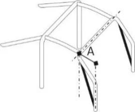</figure>
<p>第４−20図</p>
<h5 id="6-3-2-1-5-コーナーと交差部の補強">6.3.2.1.5 ）コーナーと交差部の補強</h5>
<p>2007年１月１日以降に公認または登録された車両についてのみ：</p>
<p>以下の交差部：</p>
<p>−　メインロールバーの斜行部材同士</p>
<p><span class="pagemark" id="p27">P.27</span>−　ルーフの補強（第４−17図の構成で、かつ2008 年１月１日以降に公認または登録された車両についてのみ）</p>
<p>−　ドアバー同士（第４−14図の構成）</p>
<p>−　ドアバーとフロントロールバーあるいはサイドロールバーのフロントの支柱の補強（第４−42A図）</p>
<p>は、6.2.14項に合致する最低２つの相対するガセットにより補強されなければならない。</p>
<p>ドアバーとフロントロールバーあるいはサイドロールバーのフロントの支柱の補強とが同一面上にない場合、</p>
<p>6.2.14項の寸法に合致することを条件に、金属板を組み合わせて補強することができる（第４−42A図参照）。</p>
<h5 id="6-3-2-2-任意の部材と補強">6.3.2.2 ）任意の部材と補強</h5>
<p>6.3.2.1項に規定されている指示事項を除き、第４−17図〜第４−26図および第４−28図〜第４−38図に示される部材と補強は任意であり、自由に取り付けできる。</p>
<p>これらは、溶接されるか、取り外し可能な連結具により取り付けされなければならない。</p>
<p>上述のすべての部材および補強は、個別に使用されるか、あるいは互いに組み合わせて使用することができる。</p>
<figure>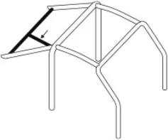</figure>
<p>第４−23A図</p>
<figure>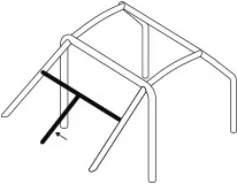</figure>
<p>第４−33A図</p>
<p>6.3.2.2.1 ）ルーフの補強（第4−17図〜第4−19図、第4−28図、第4−29図）</p>
<p>2005年12月31日以前に公認または登録された車両についてのみ任意。</p>
<p>第４−17図の場合に限り、１本の部材のみを取り付けることが許されるが、その前部の接続はドライバー側になければならない（第４−17A図および第４−17B図参照）。</p>
<p>6.3.2.2.2 ）フロントロールバーあるいはサイドロールバーのフロントの支柱の補強（第4−20図）</p>
<p>2007年12月31日以前に公認または登録された車両についてのみ任意。</p>
<p>この補強は曲げてよいが横から見てまっすぐであり、その曲げ角度は20°を超えてはならない。</p>
<p>6.3.2.2.3 ）バックステーの斜行部材（第4−25図および第4−26図）</p>
<p>ルーフの補強が第４−19図に合致したものであるならば、第４−26図の構成を第４−27図に置き換えることができる。</p>
<p>2014年１月１日以降に公認または登録された車両についてのみ：</p>
<p>第４－19図に従ったルーフの補強が使用されている場合、第４－27図の構成が義務付けられる。</p>
<p>6.3.2.2.4 ）フロントサスペンション取り付け点（第4−30図）</p>
<p>延長部分は、フロントサスペンションの頂部取り付け点に連結しなければならない。</p>
<p>6.3.2.2.5 ）横方向の部材（第4−31図〜第4−35図）</p>
<p>メインロールバー内、あるいはバックステー同士の間に取り付けられた横方向の部材は、安全ベルトの取り付けに使用することができる（取り外し可能な連結具の使用は禁止される）。</p>
<p>第４−31図および第４−32図に示される部材については、中央の上下方向の部材と垂直の成す角度が30°以上でなければならない。</p>
<p>フロントロールバーに取り付けられる横方向の部材は、搭乗者のための空間を侵害してはならない。</p>
<p>これはできるだけ高い位置に設けることができるが、その下端はダッシュボードの頂点より高い位置にあってはならない。</p>
<p>2008年1月1日以降に公認または登録された車両については、フロントロールバーに取り付けられる横方向の部材は、ステアリングコラムより下に位置してはならない。</p>
<p><span class="pagemark" id="p28">P.28</span>6.3.2.2.6 ）コーナーと連結部の補強（第4−5図、第4−36図〜第4−38図）</p>
<p>補強は、パイプあるいは6.2.14に合致したＵ型に湾曲した金属板によって実施されなければならない。補強材の厚さは1.0mm以上なければならない。</p>
<p>このパイプによる補強の端は、それらが取り付けられる部材の半分より下になったり、これに沿ったりしてはならない。ただし、フロントロールバーの連結部の補強の端はこの限りではなく、ドアバー／フロントロールバーの連結部を結んでよい。</p>
<figure>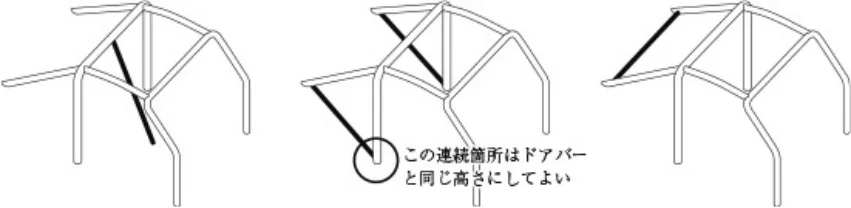</figure>
<p>第４－21図　　　　　　第４－22図　　　　　第４－23図</p>
<figure>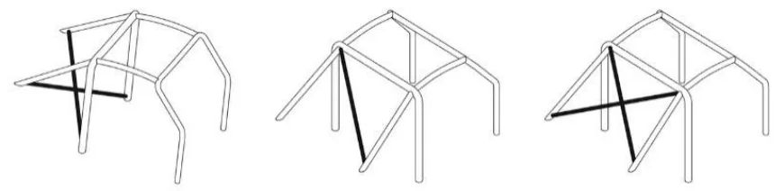</figure>
<p>第４－24図　　　　　　第４－25図　　　　　第４－26図</p>
<figure>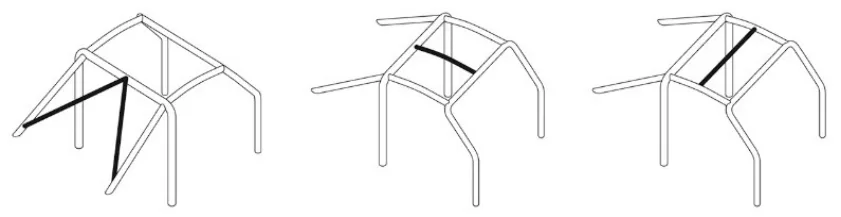</figure>
<p>第４－27図　　　　　　第４－28図　　　　　第４－29図</p>
<figure>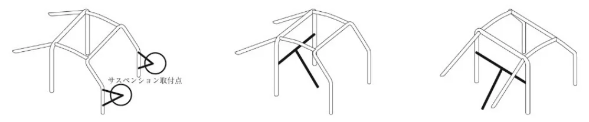</figure>
<p>第４－30図　　　　　　　　第４－31図　　　　　　　第４－32図</p>
<figure>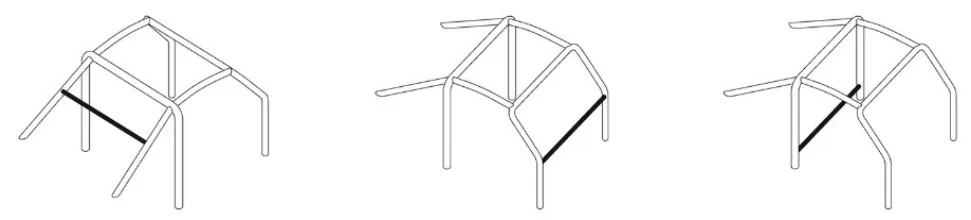</figure>
<p>第４－33図　　　　　　　　第４－34図　　　　　　　第４－35図</p>
<figure>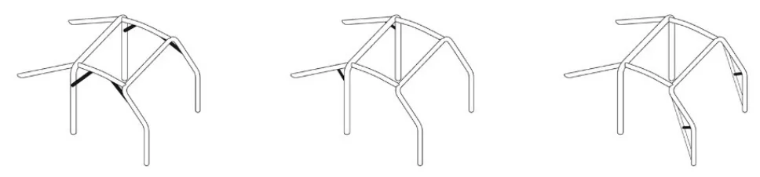</figure>
<p>第４－36図　　　　　　　　第４－37図　　　　　　　第４－38図</p>
<h5 id="6-3-2-3-ロールケージの最低限の構成"><span class="pagemark" id="p29">P.29</span>6.3.2.3 ）ロールケージの最低限の構成</h5>
<p>ロールケージの最低限の構成は、以下の通り定義される：</p>
<div class="tablewrap"><table><tr><th>車両公認・登録時期</th><th>最低限の構成</th></tr><tr><td>2002年12月31日以前</td><td>第４－39図またはその左右対称
（ただし、斜行部材は第４−９図〜第４−12図、
あるいは第４−26図〜第４−27図の方式も可）</td></tr><tr><td>2003年1月1日〜
2005年12月31日</td><td>第４−40図またはその左右対称</td></tr><tr><td>2006年1月1日〜
2007年12月31日</td><td>第４−41図またはその左右対称</td></tr><tr><td>2008年1月1日以降</td><td>第４－42図またはその左右対称-</td></tr></table></div>
<p>ドアバーおよびルーフの補強は、6.3.2.1.2項および6.3.2.1.3項に従い異なる構成でもよい。</p>
<figure>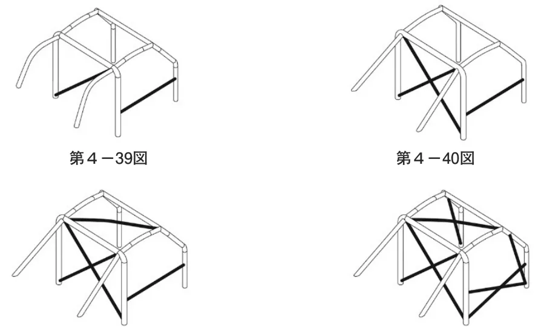</figure>
<p>第４－41図　　　　　　　　　　　　　　　　第４－42図</p>
<figure>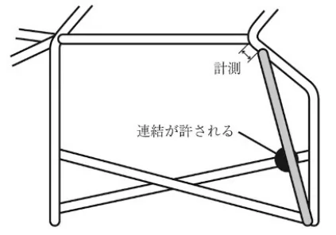</figure>
<p>第４－42A図</p>
<h5 id="6-3-2-4-取り外し可能な部材">6.3.2.4 ）取り外し可能な部材</h5>
<p>取り外し可能な部材が、本規則に従い、安全ケージの構造の中に用いられている場合には、使用される取り外し可能な連結具はＦＩＡにより承認された方式に従っていなければならない（第４−43図〜第４−53図を参照）。</p>
<p>それらは一旦組み立てられたならば、溶接されてはならない。</p>
<p>ネジおよびボルトは、最低限ISO規格の8.8以上の品質でなければならない。</p>
<p>第４−46図、第４−49図および第４−53図に合致する取り外し可能な連結具は、6.3.2.2項に規定される任意の部材と補強の取り付けのみに使用され、メインロールバー、フロントロールバー、ハーフ・サイドロールバーおよびサイドロールバーの上部を連結するために使用することは禁止される。同様に、2008年１月１日以降に公認または登録された車両については、第４−43図および第４−52図に示される連結具についても上述の連結のために使用することが禁止される。（本条項は、2002年１月１日以降に公認または登録された車両に対して適用される。それ以前に公認または登録された車両については、2001年国内競技車両規則の第１編第４章第６条3.3.5.6項を適用してよいが、新規にロールケージを製作する場合には、本条項に従った取り外し可能な連結具を用いることが推奨される。）</p>
<figure><span class="pagemark" id="p30">P.30</span>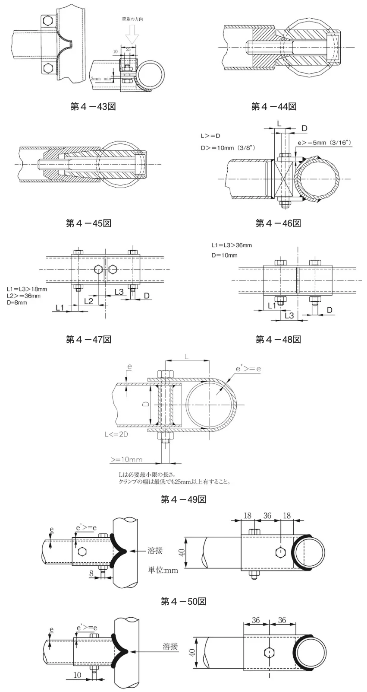</figure>
<p>第４－51図</p>
<figure><span class="pagemark" id="p31">P.31</span>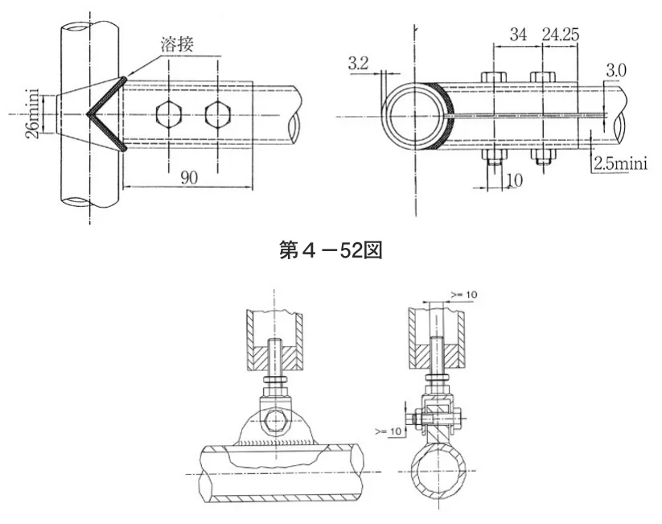</figure>
<p>第４－53図</p>
<h5 id="6-3-2-5-追加の制約">6.3.2.5 ）追加の制約</h5>
<p>前後方向に見て、ロールケージは、垂直方向の荷重を支えるフロントサスペンションおよびリアサスペンション部品（スプリングおよびショックアブソーバー）の取り付け点の範囲内に全体が収まっていなければならない。</p>
<p>ロールケージとリア・アンチロールバーのボディシェル／シャシーへの取り付け点との間には、上記制限を超えた補強を追加することが認められる。</p>
<p>これらの各取り付け点と安全ケージとは、30×1.5mmの単一のパイプで接続することができる。</p>
<p>2003年1月1日以降に公認または登録された車両のロールケージについて：</p>
<p>ドア開口部に侵入するケージの補強は、下記の基準を満たしていなければならない（第４−55図）。</p>
<p>− 寸法A：300mm以上</p>
<p>− 寸法B：250mm以下</p>
<p>− 寸法C：300mm以下</p>
<p>− 寸法E：ドア開口部（H）の高さの半分以下</p>
<p>2008年1月1日以降に公認または登録された車両のロールケージについて：</p>
<p>前面投影面において、フロントロールバーの上部コーナーの湾曲部と連結部の補強は、フロントウインドスクリーンの第４−54図に示す部分にのみ見えるように設けなければならない。</p>
<figure>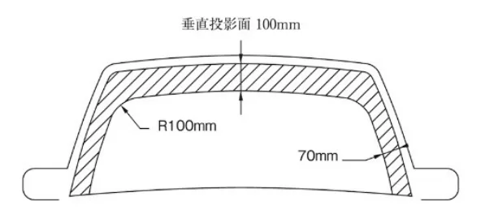</figure>
<p>第４－54図</p>
<figure>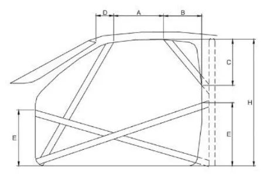</figure>
<p>第４－55図</p>
<p><span class="pagemark" id="p32">P.32</span>6.3.2.6 ）ロールケージのボディシェル／シャシーへの取り付け</p>
<p>最少取り付け点数は：</p>
<p>−　フロントロールバーの各支柱につき１箇所</p>
<p>−　サイドロールバーまたはハーフ・サイドロールバーの各支柱につき１箇所</p>
<p>−　メインロールバーの各支柱につき１箇所</p>
<p>−　各バックステーにつき１箇所</p>
<p>−　斜行部材が第４−11図の方式である場合には、その支柱１本につき１箇所</p>
<p>ボディシェルへの取り付けを効果的に実施するために、当初の内装トリムは、ロールケージおよびその取り付け点の周囲を切除したり、曲げることにより改造できる。</p>
<p>しかしながら、この改造は室内装飾やトリムを完全に取り除くことを認めるものではない。</p>
<p>必要に応じてヒューズボックスをロールケージの取り付けが可能となるように移動させることができる。</p>
<p>特殊な場合：</p>
<p>非鋼鉄製のボディシェル／シャシーの場合、ロールケージとボディシェル／シャシーとの溶接は一切禁止され、ボディシェル／シャシー上に補強板を接着することのみ許される。</p>
<p>6.3.2.6.1 ）2007年12月31日以前に公認または登録された車両</p>
<p>１）各支柱側の最少取り付け点における車体への取り付け基部は、面積60cm</p>
<p>2、板厚2.5mm以上を有すること。この</p>
<p>取り付け基部は支柱に溶接されていなければならない。</p>
<p>2、厚さ3.0mm以上を有し、第４−56図〜第４−58図に示すように取り付けること。</p>
<p>２）車体側の補強板は、面積120cm</p>
<p>ただし、第４−56図、第４−58図については、補強板を必ずしもボディシェルへ溶接しなくともよい。</p>
<p>３）各支柱と車体との結合は、下記のいずれかの方法によること。</p>
<p>①直径８mm以上（４Ｔ以上）のボルトを３本以上使用し、緩み止め効果のあるナット（ワッシャー／セルフロッキング等）で、支柱の周辺に分散して取り付ける。（第４−56図〜第４−62図を参照）</p>
<p>第４−60図の場合は、取り付け部の側部を溶接プレートで塞ぐことができる。</p>
<p>②溶接により取り付ける場合、車体あるいは骨組み（フレーム）に溶接して取り付ける。ロールバーの取り付け基部は、補強板無しで、直接ボディシェルに溶接してはならない。</p>
<p>①および②の取り付け方法は最少限を示すものである。ボルトの数を増加することや取り付け点の数を増やすことは許される。</p>
<p>6.3.2.6.2 ）2008年1月1日から2009年12月31日までに公認または登録された車両</p>
<p>フロント、メイン、サイドロールバーまたはハーフ・サイドロールバーの取り付け点：</p>
<p>各取り付け基部は、最低３mmの厚みを有する鋼鉄製の板により構成されていなければならない。</p>
<p>各取り付け基部は、最低厚さ３mmで最小表面積120cm</p>
<p>2のボディシェルに溶接された鋼鉄製補強板に、最低３本</p>
<p>以上のボルトで固定されなければならない。120cm</p>
<p>2の面積は、補強板とボディシェルとの接触面でなければなら</p>
<p>ない。</p>
<p>第４−56図〜第４−62図に例示される。</p>
<p>第４−56図と第４−58図については、補強板は必ずしもボディシェルに溶接されなくともよい。</p>
<p>第４−60図の場合は、取り付け部の側部を溶接プレートで塞ぐことができる。</p>
<p>取り付けボルトは、最小直径がＭ８で、最低限ISO規格の8.8以上の品質を有していなければならない。</p>
<p>ボルトの留め具は、セルフロック式あるいはロックワッシャーでなければならない。</p>
<p>バックステーの取り付け点：</p>
<p>2を有する取り付け基部によって固定されるか</p>
<p>各バックステーは、少なくとも２本のＭ８ボルトで、最小60cm</p>
<p>（第４−63図）、1本の二面せん断のシングルボルトにより固定されなければならない（第４−64図）。</p>
<p>ただし、後者は、ボルトが適当な断面積と強度を有し、カラーがバックステーの中に溶接されることを条件とする。</p>
<p>以上は最低要件である。</p>
<p>さらに、使用する留め具の数を増やすことができ、取り付け基部のプレートを補強板に溶接したり、ロールケージ（6.3.1項で定義されたもの）を、ボディシェル／シャシーに溶接することができる。</p>
<p>6.3.2.6.3 ）2010年1月1日以降に公認または登録された車両</p>
<p>フロント、メイン、サイドロールバーまたはハーフ・サイドロールバーの取り付け点：</p>
<p><span class="pagemark" id="p33">P.33</span>各取り付け基部は、最低３mmの厚みを有する鋼鉄製の板により構成されていなければならない。</p>
<p>2のボディシェルに溶接された鋼鉄製補強板に、最低３本</p>
<p>各取り付け基部は、最低厚さ３mmで最小表面積120cm</p>
<p>2の面積は、補強板とボディシェルとの接触面でなければなら</p>
<p>以上のボルトで固定されなければならない。120cm</p>
<p>ない。</p>
<p>第４−56図〜第４−62図に例示される。</p>
<p>第４−58図については、補強板は必ずしもボディシェルに溶接されなくともよい。</p>
<p>第４−60図の場合は、取り付け部の側部を溶接プレートで塞ぐことができる。</p>
<p>取り付けボルトは、最小直径がＭ８で、最低限ISO規格の8.8以上の品質を有していなければならない。</p>
<p>ボルトの留め具は、セルフロック式あるいはロックワッシャーでなければならない。</p>
<p>２つのボルトの間の角度（取り付け基部の高さでパイプ軸から計測して。第４−56A図参照）は60°未満となってはならない。</p>
<p>バックステーの取り付け点：</p>
<p>2を有する取り付け基部によって固定されるか</p>
<p>各バックステーは、少なくとも２本のＭ８ボルトで、最小60cm</p>
<p>（第４−63図）、1本の二面せん断のシングルボルトにより固定されなければならない（第４−64図）。</p>
<p>ただし、後者は、ボルトが適当な断面積と強度を有し、カラーがバックステーの中に溶接されることを条件とする。</p>
<p>以上は最低要件である：</p>
<p>さらに、使用する留め具の数を増やすことができ、取り付け基部のプレートを補強板に溶接したり、ロールケージ（6.3.1項で定義されたもの）を、ボディシェル／シャシーに溶接することができる。</p>
<figure>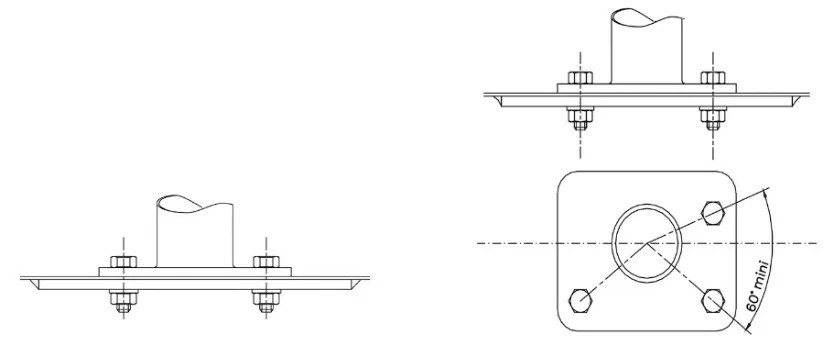</figure>
<p>第４－56図　　　　　　　　　　　　第４－56Ａ図</p>
<figure>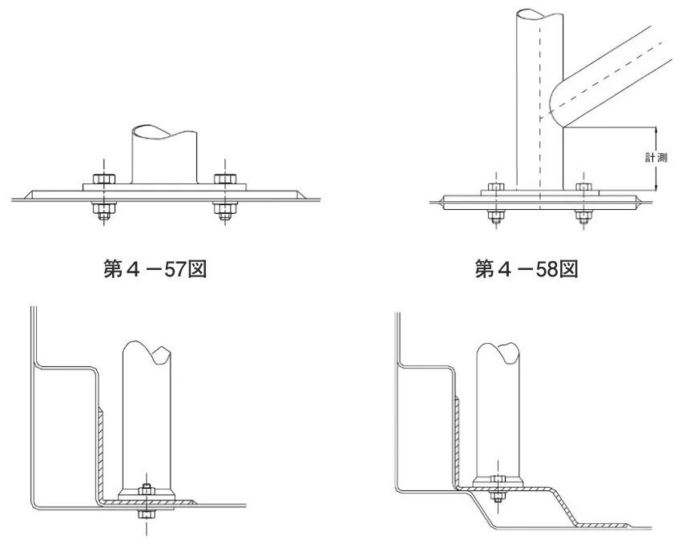</figure>
<p>第４－59図　　　　　　　　　　　　　第４－60図</p>
<figure><span class="pagemark" id="p34">P.34</span>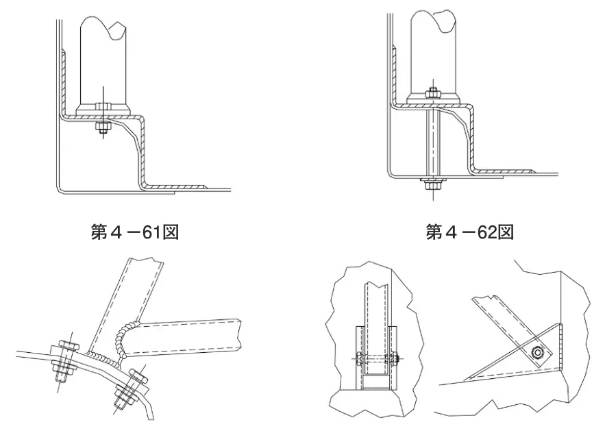</figure>
<p>第４－63図　　　　　　　　　　　　　　第４－64図</p>
<h5 id="6-3-3-材質の仕様">6.3.3 ）材質の仕様</h5>
<p>円形の断面を有するパイプのみが認められる。</p>
<p>使用されるパイプの仕様：</p>
<div class="tablewrap"><table><tr><th>材 質</th><th>最小引張強度</th><th>最小寸法（mm）</th><th>用 途</th></tr><tr><td>冷間引抜
継ぎ目無し
純炭素鋼</td><td>350N/mm2</td><td>45×2.5
または
50×2.0</td><td>メインロールバー（第４－６図および第４－８図）または、
構造によってはサイドロールバーおよび後部横方向の部材
（第４－７図）</td></tr><tr><td></td><td></td><td>38×2.5
または
40×2.0</td><td>ハーフ・サイドロールバーおよび安全ケージのその他の部分</td></tr></table></div>
<p>※2008年1月1日以降に公認または登録された車両については、認められる添加物の最大量は、炭素0.3%、マンガンが1.7%、その他の物質については0.6%である。</p>
<p>鋼材を選ぶにあたっては、伸びが大きいことと、溶接に適した質のものであることに注意を払わなければならない。</p>
<p>2004年12月31日以前に公認または登録された車両については2004年国内競技車両規則の同条項を適用してもよい。</p>
<p>2003年１月１日以降に公認または登録された車両については、パイプを曲げる場合は冷間加工処理によるものでなければならず、曲げの中心線の半径は、少なくともパイプの直径の３倍でなければならない。</p>
<p>曲げる間にパイプが楕円形になる場合には、長い方の直径に対して、短い方の直径が0.9かそれ以上の割合となっていなければならない。</p>
<p>湾曲箇所にある表面は、波状や亀裂がなく、滑らかで均一でなければならない。</p>
<h5 id="6-3-4-溶接についての指示">6.3.4 ）溶接についての指示</h5>
<p>溶接は管の端の全周に沿って施されなければならない。</p>
<p>すべての溶接は可能な限り高品質のものであり、全体的な溶融を施さなければならず、できればガス被包アーク溶接を用いることが望ましい。</p>
<p>溶接の外観が良好だからといって、その品質が必ずしも保証されるものではないが、貧相な溶接は決して良い品質のものではない。熱処理を施した鋼鉄を使用する時には、製造者が特に指示した内容に従わなければならない（特別な溶接棒、ガス被包溶接）。</p>
<h5 id="6-3-5-防護のための被覆">6.3.5 ）防護のための被覆</h5>
<p>搭乗者の身体がロールケージに接触する可能性がある箇所には、防護のための難燃性の被覆が施されていなければならない。</p>
<p>搭乗者のヘルメットがロールケージに接触する可能性がある箇所については、ＦＩＡ基準8857-2001タイプＡに</p>
<p><span class="pagemark" id="p35">P.35</span>合致したものが推奨される。</p>
<p>2020年１月１日以降に公認または登録された車両：</p>
<p>第４－65図に示されるケージのすべてのパイプ、およびすべての屋根の補強は、ＦＩＡ基準8857－2001タイプＡ （テクニカルリストNo.23参照）に合致するパッドをドライバーの側にのみ装着していなければならない。各パッドはパイプから動くことのないように固定されなければならない。</p>
<figure>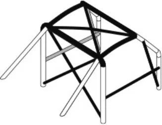</figure>
<p>第４−65図</p>
<h5 id="第-7-条-後方視界">第 7 条　後方視界</h5>
<p>　後方視界は、２つの室外ミラー(左右に１つずつ)によって確保されなければならない。これらの室外ミラーは標準装備のものでもよい。各室外ミラーには、９０㎠以上の反射面積がなければならない。デジタルアウターミラーの使用については、基本車両に採用されている場合に限り、そのシステムを流用することができるが、一切の改造は許されない。室内ミラーは任意とする。また、室内ミラーを別途有効な後方視界を得る装置（室内ミラーと同等の効果を得られる装置）に代えることが許される。</p>
<h5 id="第-8-条-けん引用穴あきブラケット">第 8 条　けん引用穴あきブラケット</h5>
<p>　すべての車両はすべての競技に際し、前後にけん引用穴あきブラケットを備えなければならない。このけん引用穴あきブラケットは、車両をけん引して移動するのに取り付け部分も含め十分な強度を有していなければならない。車両が砂地に停車したときでも使用が可能な位置に取り付けられていなければならない。また、これらは明確に視認でき、黄色、オレンジ色、あるいは赤色に塗装されていること。</p>
<p>金属製のけん引用穴あきブラケットは下記の要件を満たすこと。</p>
<p>①材質は、スチール製でなければならない。</p>
<p>②最小内径：50mm（車両に装着した状態で直径50mmおよび長さ50mmの丸棒が通ること）。</p>
<p>③内径の角部はＲを付けて滑らかにすること。</p>
<p>④板製の場合、最小断面積（取り付け部分も含む）：100mm</p>
<p>2</p>
<p>⑤丸棒の場合、最小直径：10mm</p>
<p>なお、可倒式、およびケーブルフープ式（上記②を満たすこと）も許される。</p>
<h5 id="第-9-条-ウインドシールド">第 9 条　ウインドシールド</h5>
<p>前面ガラスは合わせガラスを常に備えていなければならない。</p>
<p>その外側表面には、１枚あるいは複数枚の無色透明なフィルムを取り付けることができる。</p>
<p>上端からガラス面に沿って10cmの幅で眩惑防止処置を施すことは許される。</p>
<p>　サイドウインドウとリアウインドウに、着色ガラスおよび/または安全フィルムを使用することができる。このような場合、車両から5m離れた人間が、ドライバーおよび車両の内部を視認できなければならない。</p>
<h5 id="第-10-条-ウインドシールドの安全固定装置">第 10 条　ウインドシールドの安全固定装置</h5>
<p>ウインドシールドの安全固定装置を自由に設けてよい。</p>
<h5 id="第-11-条-サーキットブレーカー-主電源回路開閉装置">第 11 条　サーキットブレーカー（主電源回路開閉装置）</h5>
<p>　イグニッションスイッチおよび燃料ポンプスイッチは、その位置が確認できるよう黄色で明示しなければならない。イグニッションスイッチおよび燃料ポンプスイッチを変更する場合、ＯＮの位置が上、ＯＦＦの位置が下になければならない。</p>
<p>　電子的に制御されないインジェクターを有するディーゼルエンジンに関しては、サーキットブレーカーは、エンジンに吸入される空気を遮断する装置に連動するようになっていなければならない。</p>
<p>　また、運転席および車外から操作できるすべての回路を遮断する各々独立した放電防止型のサーキットブレーカー（主電源回路開閉装置）を装備しなければならない。これらはすべての電気回路を遮断できるものであり、エンジンを停止することができるものであること。その場所は外部から容易に確認できる位置とし、赤色のスパークを底辺が最小12cmの青色の三角形で囲んだ記号で表示すること。引くことにより機能する車外操作部を持つサーキットブレーカー</p>
<p><span class="pagemark" id="p36">P.36</span>をフロントウインドシールド支持枠の下方付近に設置すること。ただし、車両の構造上フロントウインドシールド支持枠の下方付近に設置することが不可能な場合、センターピラーあるいはクォーターピラーの外部から操作可能な位置に装着することが許される。</p>
<h5 id="第-12-条-安全燃料タンク">第 12 条　安全燃料タンク</h5>
<h5 id="12-1-安全燃料タンク">12.1 ）安全燃料タンク</h5>
<p>安全燃料タンクを使用する場合、ＦＩＡ公認の安全燃料タンクの使用が義務付けられる。安全燃料タンクは約５年を経過した後に強度が急速に低下するため、ブラダーは製造者が検査し、次の２年間までの使用を保証しない限り、製造年月日から５年以上経過したものを使用してはならない。ただし、その場合でも製造年月日から７年を超えて使用してはならない。</p>
<p>取り付けは各車両定義の分類による改造規定に従うこと。コレクタータンクを別に装着する場合は最大容量２ℓまでとする。</p>
<p>安全燃料タンク本体（燃料ブラダー）が、当初から耐火／耐浸透性のケース（コンテナ）に収納されていない場合、コンテナに収納してから車体に取り付けねばならない。</p>
<p>コンテナは、厚さ1.0mm以上のスチール、または厚さ1.6mm以上のアルミニウム、あるいはそれらと同等以上の強度を有することを証明できる不燃／不浸透性の材質で作られており、燃料ブラダーに記載されている表示項目（製造者名、型式、製造に用いられた基準、製造年月日、製造番号）を判読できる窓または表示項目内容の証明書類を備えていなければならない。なお、ブラダーの表示項目内容の証明書類を備えられない場合に、ブラダーの表示項目を判読するためのコンテナの窓が車体により直接確認できない状態に限って、車体に穴をあけて表示項目を確認するための窓を設ける必要最小限の改造は許される。</p>
<p>摩擦や異物混入による燃料ブラダーの損傷を避けるため、コンテナと燃料ブラダーとが密接していなければならず（付属品取り付け部を除く）、コンテナの内側に突起や鋭利な箇所があってはならない。</p>
<p>コンテナの車体への取り付けは暫定的であってはならず、また、取り付けによりコンテナが変形するようなことがあってはならない。</p>
<p>安全燃料タンクは当初の位置あるいは荷物室に取り付けることが許される。Ｎ２およびＪＡＦ−ＧＴの車両についてはホイールベース間に搭載することが推奨される。</p>
<p>漏出した燃料が車室内に滞留しない構造であること。また、荷物室に設置した場合、難燃性材料による隔壁を取り付けなければならない。燃料タンクの位置の変更に伴い軽量化、補強が生じてはならない。</p>
<p>当初の燃料タンクの移動によって生じた空間部をはめ板でふさぐことは許されるが、空気力学的効果が生じてはならない。</p>
<p>－難燃性材料による隔壁について：</p>
<p>車両用不燃性ＦＲＰやゲルコート等などによる不燃系の処理がなされたＦＲＰ材は難燃性と見なす。ただし、競技会車両検査等では目視等確認ができるものではないので、当該コート材に関する説明を求められた際に提示ができるような資料を予め準備する必要がある。</p>
<p>安全燃料タンクへの隔壁設置について、少なくとも安全燃料タンクとフィラーホース、配管の全てをカバーするものであれば、隔壁そのものを全面形成する必要はない。</p>
<p>給油口の位置、寸法ならびに給油口のキャップは車体の表面を超えて突出することなく、また、車内に燃料が漏れて流出することが防止されるならば変更してもよい。この給油口は窓枠に位置してもよい。燃料の給油口には、燃料供給ホースに適合する漏出防止カップリングが取り付けられていること。ただし、レース競技中に燃料補給を行わない車両については適用が除外される（第３章“公認車両および登録車両に関する一般規定”10.3）、参照）。</p>
<p>いかなる場合にも、結果的に燃料がこぼれても、燃料が排気管の上に落ちることはない位置になければならない。 排気管出口の最後点を通る垂直線から少なくとも後方300mmに位置（後部出口の場合には適用されない）にあることが推奨される。</p>
<h5 id="12-2-自動燃料遮断装置">12.2 ）自動燃料遮断装置</h5>
<p>エンジンにつながるすべての燃料補給パイプには自動の遮断弁がついていることを推奨する。</p>
<p>これら遮断弁は燃料タンクに直接位置し、燃料装置中の圧力のかかった配管の１つが破損したり漏れたりした場合に、すべての燃料配管を自動的に閉じ、さらに通気管路は、重力で始動するロールオーバーバルブを備えていなければならない。</p>
<p>始動の最中を除き、すべての燃料ポンプはエンジンの稼動中にのみ作動すること。</p>
<h5 id="12-3-燃料遮断バルブ"><span class="pagemark" id="p37">P.37</span>12.3 ）燃料遮断バルブ</h5>
<p>燃料タンク給油口が直接タンクに連結していない場合、タンクの頂点にはバルブが設置されていることが望ましい。バルブはタンク製造者によって供給され、事故のとき万一給油口が外れ落ちてしまった場合に密閉するものとする。給油口と安全燃料タンクを結ぶ配管が車室を通過する場合、配管のタンク側に燃料遮断バルブを備えなければならない。</p>
<h5 id="12-4-ブリーザー">12.4 ）ブリーザー</h5>
<p>１）燃料タンクにブリーザーを設置することができる。ブリーザー回路にはワンウェイバルブを設け燃料の車外への排出を防止しなければならない。</p>
<p>２）設置するブリーザー回路の配管は、燃料配管と同じ仕様（1.2項参照）でなければならない。</p>
<p>３）車両のルーフにブリーザー装置の排出口を設けたタンクを装備することは認められる。</p>
<h5 id="第-13-条-座-席">第 13 条　座　席</h5>
<p>１）当初の座席を変更する場合、ＦＩＡ基準8855-1999、8855-2021またはＦＩＡ基準8862-2009に従ったものの使用が強く推奨される。なお、座席にヘッドレストが含まれていること。</p>
<p>２）前部座席は後方に移動できる。しかし、当初の後部座席の前端によって区切られた垂直面を越えてはならない。ただし、ヘッドレスト部分は考慮されない。</p>
<p>３）助手席ならびに後部座席は、（それらのバックレストを含めて）取り外すことができる。</p>
<p>４）当初の座席の取り付け具または支持具が変更される場合、支持具は以下のいずれかに取り付けられなければならない。</p>
<p>−座席を固定するために使用されている当初の固定点</p>
<p>−付則Ｊ項第253−65図に合致する座席固定用の固定点</p>
<p>座席支持具は第４−66図に従って、最小直径８mmのボルトを使用し、１座席につき少なくとも４箇所で座席固定用の固定点に取り付けられなければならない。</p>
<p>各取り付け点について、支持具、車体／シャシーと当て板の接触面積は最低40cm</p>
<p>2であること。</p>
<p>５）座席は、直径が最低８mmのボルトを使用し、座席の前部２ヶ所、後部２ヶ所の４ヶ所の支持具で固定され、補強部は座席に結合されていなくてはならない。</p>
<p>６）支持具と当て板の最低の厚さは鋼鉄の場合は３mm、軽合金の場合は５mmを有さなければならない。各支持具の前後方向の長さは、最低でも60mmを有さねばならない。</p>
<p>７）座席を調整するレールが使用される場合、当初から車両に設定されているもの、または座席とともに設定されているものを使用しなければならない。</p>
<p>８）運転席とドアロールバーの間には機械装置の設置は許可されない。</p>
<p>９）座席とドライバーの間にクッションを置く場合、このクッションの厚さは50mm以下でなければならない。</p>
<figure>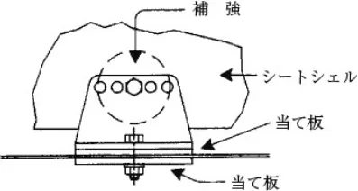</figure>
<p>第４−66図</p>
<h5 id="第-14-条-ライト">第 14 条　ライト</h5>
<p>ガラス製のライト類に無色透明の飛散防止対策を施さなければならない。</p>
<h5 id="第-15-条-床">第 15 条　床</h5>
<p>防音材および防振材は取り外すことが許される。カーペットは取り外さなければならない。</p>
<h5 id="第-16-条-内-張">第 16 条　内　張</h5>
<p>　運転席と助手席のドアの内張り、および、車体のドア開口部のプロテクターを除き、内張りを取り外すことは許される。天井の内張りは、それが難燃材の場合を除き、取り外さなければならない。</p>
<h5 id="第-17-条-火災に対する防護">第 17 条　火災に対する防護</h5>
<p>　火災の場合、火炎の直接の通過を防止するため、エンジンと搭乗者席の間に有効な防護遮へい物を取り付けなければならない。</p>
<h5 id="第-18-条-ステアリングホイール"><span class="pagemark" id="p38">P.38</span>第 18 条　ステアリングホイール</h5>
<p>ステアリングホイールに切れ目があってはならない。</p>
<p>　スイッチやメーター等を装着する場合、それらは突起した形状（トグルスイッチ等）であってはならず、トグルスイッチ以外のスイッチやメーターを装着する場合は、ドライバーと対面するステアリングホイールリムの全体で形成される平面よりもドライバーに近いところに位置してはならない。</p>
<p>緩衝パッドの装着を推奨する。</p>
<h5 id="第-19-条-オイルキャッチ装置">第 19 条　オイルキャッチ装置</h5>
<p>　オイルがコースに流出することを防ぐための確実な装置を備えなければならない。その装置の取り付け方法は、針金やテープなどによる暫定的なものであってはならない。</p>
<p>　エンジンオイルキャッチタンクを使用する場合、気筒容積が2,000㎤までの車両に対しては２ℓ、気筒容積が2,000㎤を超える車両に対しては３ℓの容積がなければならない。この容器はプラスチック、あるいは透明な窓を備えたものでなければならない。キャッチタンク取り付けに伴うブリーザーバブルおよびホース類の変更は認められる。回収されたオイルを重力によりエンジンへ還流させるシステムの取り付けは認められる。この目的のためオイルパン、またはヘッドカバーに最小限の改造が認められる。</p>
<p>エンジンオイル以外のオイルキャッチ装置を備えることが許される。</p>
<h5 id="第-20-条-圧力制御バルブ">第 20 条　圧力制御バルブ</h5>
<p>ホイール上の圧力制御バルブは禁止される。</p>
<h5 id="第-21-条-その他">第 21 条　その他</h5>
<p>車両に搭載する部品等（スペアホイール、工具類）は、確実に固定されなければならない。</p>
<p>ステアリングロック／オートドアロックは取り外さなければならない。</p>
<h5 id="第-22-条-ネット">第 22 条　ネット</h5>
<p>　事故等生じた場合に、運転者側窓の開口部から外部に突出することを防ぐため、サーキット競技においては、下記仕様に従ったネットをロールケージに取り付けて使用しなければならない。</p>
<p>帯の最小幅：19mm</p>
<p>網目の最小寸法：25×25mm</p>
<p>網目の最大寸法：60×60mm</p>
<p>範囲：ステアリングホイール中心より後方のフロントサイドウィンドウを覆うものとする。</p>
<p>もしくは、ＦＩＡ規格8863-2013（テクニカルリストNo.48）に記載しているものを使用しなければならない。</p>
<h3 id="第-5-章-量産ツーリングカー-1"><span class="pagemark" id="p39">P.39</span>第 5 章　量産ツーリングカー（Ｎ1）</h3>
<h5 id="第-1-条-車-両">第 1 条　車　両</h5>
<h5 id="1-1-定義">1.1 ）定義</h5>
<p>量産ツーリングカー</p>
<h5 id="1-2-資格">1.2 ）資格</h5>
<p>車両はＦＩＡグループＮ、Ａ（ただし、1992年までに公認されたスポーツ進化を除く）、ＪＡＦ量産ツーリングカーとして公認されているか、またはＪＡＦ登録車両として登録されていなければならず、少なくとも2個の座席を備えていなければならない。</p>
<h5 id="1-3-基本車両">1.3 ）基本車両</h5>
<p>公認あるいは登録された同一車両型式。</p>
<h5 id="1-4-基本車両の資料">1.4 ）基本車両の資料</h5>
<p>公認書あるいは当該自動車製造者発行の国内向けカタログ、仕様書等。</p>
<h5 id="第-2-条-許可される-もしくは義務付けられる変更と付加物">第 2 条　許可される、もしくは義務付けられる変更と付加物</h5>
<p>本章によって許されていないすべての変更および調整仕上げは厳禁される。</p>
<p>　車両に対して行うことのできる作業は、通常の整備に必要な作業または使用による摩耗、事故によって損傷した部品の交換に必要な作業のみである。許可されている変更および付加物の制限については、後記で規定される。これら以外に、使用による摩耗、事故によって損傷した部品は、いずれも、損傷した部品と全く同一の日本国内で販売されている部品によってのみ交換が許される。</p>
<p>本車両は厳密に量産車であり、基本車両の資料と同一でなければならない。</p>
<p>　オートマチック車両の車体への、基本車両に設定されたマニュアルミッションの搭載、および搭載のための最小限の改造が許される。</p>
<p>　本章の規定にかかわらず、第2章“レース車両の排気音量規制”、第3章“公認車両および登録車両に関する一般規定”、第4章“公認車両および登録車両に関する安全規定”を守らなければならない。</p>
<p>ただし、上記規定より本章の規定が厳しい場合は、本章を守らなければならない。</p>
<p>本章に許される改造範囲を超える場合、第6章“特殊ツーリングカー（Ｎ2）”に編入される。</p>
<h5 id="第-3-条-エンジン">第 3 条　エンジン</h5>
<h5 id="3-1-気筒容積">3.1 ）気筒容積</h5>
<p>変更は許されない。</p>
<h5 id="3-2-サーモスタット">3.2 ）サーモスタット</h5>
<p>自由。</p>
<h5 id="3-3-クーリングファンおよびファンシュラウド">3.3 ）クーリングファンおよびファンシュラウド</h5>
<p>取り外しおよび変更が許される。クーリングファンの変更に伴うファンシュラウドの最小限の変更は許される。</p>
<h5 id="3-4-エアクリーナー">3.4 ）エアクリーナー</h5>
<p>エアフィルターは自由。ただし、エアフィルターボックスは当初のままでなければならない。フィルターボックス前部に位置するボルトあるいはバンド等により装着されたパイプ、ダクトおよびフィルターボックスとキャブレター、あるいはスロットルボディ間のホースに補助的に取り付けられている装置（吸気音防止レゾネーター、ブローバイガス循環ホース等）を取り外すことができる。ただし、取り外した後の穴は完全に塞がなくてはならない。</p>
<h5 id="3-5-オイルポンプ">3.5 ）オイルポンプ</h5>
<p>シムおよびスペーサーによる油圧の調整機構に限り変更が許される。</p>
<h5 id="3-6-オイルフィルター">3.6 ）オイルフィルター</h5>
<p>自由。ただし、取り付け位置の著しい変更は許されない。</p>
<h5 id="3-7-キャブレターおよびインジェクションシステム">3.7 ）キャブレターおよびインジェクションシステム</h5>
<p>ベンチュリーの直径あるいはスロットル開口部を変更することはできない。</p>
<p>インジェクションシステムは、当初の形式が保持され、かつ機能していなければならない。</p>
<p>エンジンに供給される燃料の量を調整しているキャブレターの部品、もしくは、フューエルインジェクション装置の部品（エンジンコントロールユニット、インジェクター、コネクター、プレッシャーレギュレーター、エアフローメーター等を含む）は流入する空気の量に影響がなければ、改造または交換することが許される。</p>
<h5 id="3-8-燃料ポンプ"><span class="pagemark" id="p40">P.40</span>3.8 ）燃料ポンプ</h5>
<p>安全燃料タンクを装着した場合に限り、燃料ポンプを変更することが認められ、元のポンプを取り除くことが許される。</p>
<h5 id="3-9-バルブスプリング">3.9 ）バルブスプリング</h5>
<p>バルブスプリングは自動車製造者の定めた数と取り付け部を変更することなく取り付けられることを条件に他のものと交換することができる。</p>
<h5 id="3-10-バルブおよびバルブシート">3.10 ）バルブおよびバルブシート</h5>
<p>バルブガイド、バルブシートは基本車両に設定されている純正部品への変更は許される。</p>
<h5 id="3-11-カムシャフト">3.11 ）カムシャフト</h5>
<p>基本車両に設定されている純正部品への変更は許される。</p>
<h5 id="3-12-ピストンおよびコンロッド">3.12 ）ピストンおよびコンロッド</h5>
<p>ピストンおよびコンロッドはバランス調整のみ許されるが、それぞれ1個が未加工品であること。</p>
<h5 id="3-13-ヘッドガスケット">3.13 ）ヘッドガスケット</h5>
<p>ヘッドガスケットの変更は許される。</p>
<h5 id="3-14-オイルパン">3.14 ）オイルパン</h5>
<p>オイルパンの外観変更は許されない。ただし、エンジンオイルの片寄り防止、および温度センサー取り付けのための追加加工は許される。また、エンジンへの取り付け位置および取り付け方法／作動原理を変えなければ、オイルストレーナーの位置を変更することも許される。</p>
<h5 id="3-15-フライホイール">3.15 ）フライホイール</h5>
<p>基本車両に設定されている純正部品への変更は許される。</p>
<h5 id="3-16-電気系統">3.16 ）電気系統</h5>
<p>●電気的に諸装置を調整できる調整装置（エンジンコントロールユニット等のすべてのコンピューター類のコントローラーを含む）は当初から装着されているものを除き運転中にドライバーが操作可能な位置に設置されてはならない。</p>
<p>●点火装置は、装着ブラケットを含み、改造が許される。</p>
<p>ディストリビューター方式を同時点火方式（マルチコイル方式等）に変更することは許される。</p>
<p>●取り付け位置を除き、バッテリーは自由。</p>
<p>ただし、リアバッテリー搭載車で、安全燃料タンクを装着するための最小限の取り付け位置の変更は許される。</p>
<p>取り付けブラケット、ボルトの変更も許される。</p>
<h5 id="3-17-吸・排気系統">3.17 ）吸・排気系統</h5>
<p>吸気、排気マニホールドは国内向けの当初の部品と同一な純正部品との交換が許される。</p>
<p>ただし、ポート内面に段付修正を行う場合、取り付け面より垂直に5mmの奥行の範囲に限り、シリンダーヘッド側を含み許される。</p>
<h5 id="3-17-1-吸気系統">3.17.1 ）吸気系統</h5>
<p>取り付け位置について、取り付け穴の修正によりポート合わせを行うことも許される。</p>
<p>インタークーラーのホースの変更は許される。</p>
<h5 id="3-17-2-排気系統">3.17.2 ）排気系統</h5>
<p>排気マニホールドは防熱措置を施すことは許されるが、確認作業のため全面的に覆うことはできない。排気マニホールド後方（過給装置付の場合、過給装置の後方）の部分は材質を除き自由とするが、取り外した場合、第3章“公認車両および登録車両に関する一般規定”4.6.1）、4.6.2）に従って処理されていなければならない。ただし、2010年1月1日以降に公認または登録された車両については、触媒装置を装着しなければならない。</p>
<h5 id="3-17-2-1-排気口">3.17.2.1 ）排気口</h5>
<p>排気口はホイールベースの中央を通る垂直面の後方になければならない。</p>
<h5 id="3-17-2-2-消音器を取り付ける場合">3.17.2.2 ）消音器を取り付ける場合</h5>
<p>ブラケットの取り付けを除き、車体の改造は許されない。</p>
<h5 id="3-18-ウォーターラジエター">3.18 ）ウォーターラジエター</h5>
<p>車体側取り付け部の変更がなければ容量およびラジエターキャップ圧力の変更が許される。</p>
<p>ホース類の変更は許される。</p>
<h5 id="3-19-エンジンオイルクーラー"><span class="pagemark" id="p41">P.41</span>3.19 ）エンジンオイルクーラー</h5>
<p>オイルクーラーの取り付けおよび変更は許される。</p>
<p>元のオイルクーラーを取り外すことも許される。ただし、車体外部への取り付けは認められない。</p>
<h5 id="第-4-条-シャシー">第 4 条　シャシー</h5>
<h5 id="4-1-クラッチ">4.1 ）クラッチ</h5>
<p>取り付け方法および枚数の変更を行わなければ、クラッチカバー、クラッチディスク、クラッチスプリングの変更は許される。</p>
<h5 id="4-2-トランスミッション-ディファレンシャル">4.2 ）トランスミッション、ディファレンシャル</h5>
<p>基本車両に設定されている純正部品への変更は許される。シフトレバーはボルトオンでのみ取り付けられる変更および改造が許される。</p>
<p>リミテッドスリップデフは、いかなる改造も伴わずボルトオンでの取り付けのみが許される。</p>
<h5 id="4-2-1-オイルクーラー">4.2.1 ）オイルクーラー</h5>
<p>空冷式オイルクーラーおよび電動オイルポンプを取り付けることができる。その取り付け具は当該装置に対して最小限にとどめること。ただし、車体外部への取り付けは認められない。</p>
<h5 id="4-3-タイヤ">4.3 ）タイヤ</h5>
<p>公道走行の許される一般市販ラジアルタイヤとする。</p>
<p>4.3.1 ）装着できるタイヤの幅は基本車両の資料に記載されているサイズを最大とする。偏平率を変更してもよい。</p>
<p>4.3.2 ）タイヤには、いかなる場合も、リグルーブを含み一切の加工も許されない。</p>
<p>4.3.3 ）ＪＡＦは、競技会オーガナイザーからの申請に基づき、上記4.3.1）に適合した競技専用タイヤの使用を許可する。</p>
<p>※使用許可願いおよび競技専用タイヤを使用する旨を記載した特別規則書草案をＪＡＦに提出し、その承認を得たうえで公告すること。</p>
<h5 id="4-4-ホイール">4.4 ）ホイール</h5>
<p>4.4.1 ）基本車両の資料に記載された以外への径の変更は許されない。</p>
<p>ただし、上記4.3）で選択したタイヤサイズのJATMA YEAR BOOK（日本自動車タイヤ協会規格）に許容された範囲におけるリムの幅が適用される。</p>
<p>直径の異なるホイールは同時に装着できない。</p>
<p>4.4.2 ）ホイールの材質は、スチール製以外のものはアルミ合金製とし、ＪＷＬまたはＶＩＡマークの有るものとする。</p>
<p>4.4.3 ）タイヤおよびホイールは、いかなる場合も車両の他の部分と接触してはならない。ホイールのオフセットは自由。ただし、スペーサーは禁止される。</p>
<h5 id="4-5-ストラットおよびショックアブソーバー">4.5 ）ストラットおよびショックアブソーバー</h5>
<p>車体への取り付け位置と取り付け方法、数および作動原理を変えなければストラットおよびショックアブソーバーの変更は許される。</p>
<p>当初から取り付けられているものを除き、シェルケースの別タンクシステムは許されない。また、シェルケースの材質の変更は許されない。</p>
<p>走行中に減衰力を変更できるシステムの搭載は許されない。</p>
<p>ストラットとナックルアームが一体構造となっている場合は、当初のナックルアームのタイロッドとの連結点の座標および材質が保持されていることを条件に、ナックルアームの変更が許される。</p>
<h5 id="4-6-ストラットタワーバー">4.6 ）ストラットタワーバー</h5>
<p>車体への取り付け位置、取り付け方法および数を変えなければ変更することが許される。</p>
<p>ストラットタワーバーが当初から取り付けられていない車両の場合、ストラットタワーバーを、ストラットアッパー取り付けボルトのみを利用して取り付けることが許される。</p>
<h5 id="4-7-スプリング">4.7 ）スプリング</h5>
<p>車体への取り付け位置、取り付け方法、作動原理、およびスプリングの数を変えなければ、変更は許される。</p>
<p>車高調整式への変更に伴うスプリングシートの変更、および挿入物の追加も許される。</p>
<h5 id="4-8-スタビライザーおよびスタビライザーブッシュ">4.8 ）スタビライザーおよびスタビライザーブッシュ</h5>
<p>スタビライザーは、径の変更が許される。また、連結を含みその取り外しも許される。ただし、可変式スタビライザーへの変更は認められない。</p>
<p>スタビライザーが当初から取り付けられていない車両については、基本車両に設定されている場合に限り、取り</p>
<p><span class="pagemark" id="p42">P.42</span>付けが許される。</p>
<p>形状および寸法の変更が無ければ、スタビライザーブッシュは、金属以外の他の材質に変更することが許される。</p>
<p>スタビライザーの径の変更に伴うブッシュ内径の変更は許される。</p>
<h5 id="4-9-ブレーキ">4.9 ）ブレーキ</h5>
<p>4.9.1 ）ブレーキシュー、ライニングパッドおよびブレーキホースの交換、変更は許される。</p>
<p>4.9.2 ）標準で冷却ダクトが装着されていない場合、または標準で装着されている冷却ダクトを取り外した場合、以下に従い冷却ダクトを装着することが許される。</p>
<p>標準の開口部を使用し、フロントのみフレキシブルダクトによる冷却ダクトの装着が許される。ただし、車体の外観形状に変更があってはならない。左右のダクトの各々の内径は50mm以下とし、その数は各々1本とする。</p>
<p>4.9.3 ）ディスクブレーキのバックプレートの取り外しは許される。サーボブレーキとの接続を外すことはできるが、取り外してはならない。</p>
<p>4.9.4 ）アンチロック装置との接続を外すこと、およびアンチロック装置を取り外すことは許される。プロポーショニングバルブを取り外すことも許される。また、取り外しに伴うパイプの修正、変更が許される。</p>
<p>運転者が走行中に調整不可能なプロポーショニングバルブの追加は許される。</p>
<p>4.9.5 ）電動パーキングブレーキのシステムを機械式パーキングブレーキに変更することは許される。機械式に変更する場合、設置に必要な最小限のボディ加工は許される。</p>
<h5 id="4-10-ステアリングホイールおよびステアリング">4.10 ）ステアリングホイールおよびステアリング</h5>
<p>ステアリングシャフトの変更または改造を行うことなく取り付けられるステアリングホイールとボスは自由。</p>
<p>クイックリリースシステムに変更する場合、クイックリリース機構は、ステアリングホイール軸と同中心のフランジにより構成されていなければならず、フランジは陽極処理にて黄色く着色されるか、その他の耐久性のあるコーティングにより黄色く着色され、ステアリングホイール裏側のステアリングコラムに取り付けられなければならず、ステアリングの軸に沿ってフランジを引くことによりリリースが行われなければならない。</p>
<p>ステアリングホイールの上下位置の調整は許される。</p>
<p>パワーステアリングのポンプと配管の接続を外すこと、およびそれらを取り外すことは許される。</p>
<p>ステアリングロックは機能を解除しなければならない。しかし、当該機能部分以外は変更されてはならない。</p>
<h5 id="4-11-ペダル類">4.11 ）ペダル類</h5>
<p>安全性、操作性を向上させる目的でペダルパッドを変更することは許される。ペダル剛性向上のため、マスターシリンダーまたはマスターバックに対してのみ、ロッドおよびプレートをボディ構造部へ連結するという簡易補強が許され、ストラットタワーバーと一体化することも許される。</p>
<h5 id="4-12-ラバーマウントおよびブッシュ類">4.12 ）ラバーマウントおよびブッシュ類</h5>
<p>形状および寸法を変えなければ、金属への変更を除き、材質および硬度の変更が許される。また、スグリタイプのものをソリッドタイプに変更することが許される。</p>
<h5 id="4-13-ドライブシャフト">4.13 ）ドライブシャフト</h5>
<p>ドライブシャフトブーツの材質を変更することが認められる。</p>
<h5 id="第-5-条-車-体">第 5 条　車　体</h5>
<h5 id="5-1-外観-形状">5.1 ）外観、形状</h5>
<p>車体の外観や形状を変更することは許されない。ただし、安全燃料タンクを搭載するために必要な最低限の車体の改造（切除は不可）、および漏出防止カップリング取り付けに伴う部材の付加および切除は認められる。</p>
<p>アンダーカバーを取り外すことは許される。</p>
<h5 id="5-2-板厚">5.2 ）板厚</h5>
<p>車両のすべての車体パネルは常に基本車両の当初の材質および厚さと同一でなければならない。（±10％の許容公差を認める。計測は平面もしくは大きな半径を有する部分で行われる。）</p>
<h5 id="5-3-座席">5.3 ）座席</h5>
<p>ドライビングポジションを改善する目的で運転席を交換してもよい。座席を交換する場合、第4章第13条に従うこと。</p>
<h5 id="5-4-後方視界">5.4 ）後方視界</h5>
<h3 id="第4章第7条に従うこと">第4章第7条に従うこと。</h3>
<h5 id="5-5-窓ガラス"><span class="pagemark" id="p43">P.43</span>5.5 ）窓ガラス</h5>
<h5 id="5-5-1-フロントウィンドウ">5.5.1 ）フロントウィンドウ</h5>
<p>フロントウインドシールドは第4章“公認車両および登録車両に関する安全規定”第9条に適合しなければならない。</p>
<h5 id="5-5-2-サイドウィンドウ">5.5.2 ）サイドウィンドウ</h5>
<p>変更は許されない。サイドウィンドウに対し無色透明なフィルム等での飛散防止対策を施すことを推奨する。ただし、既存車両によるワンメイクレースは、競技会特別規則により、材質の変更を認めることができる。</p>
<h5 id="5-6-ドア">5.6 ）ドア</h5>
<p>防音材を取り外すことは許される。ただし、取り外すことにより、ドアの形状に変更をもたらすものであってはならない。</p>
<p>ウェザーストリップ等の保護材を取り除くことは許されない。また、ボルトオンであってもサイドドアビームを取り外してはならない。</p>
<p>ドア内部に衝撃吸収のため難燃性の衝撃吸収材を充填することが許される。</p>
<p>電気式巻き上げ装置を手動式巻き上げ装置に取り替えることが許され、取り付けのための最小限の改造は認められる。</p>
<h5 id="5-7-ライト">5.7 ）ライト</h5>
<p>前照灯、尾灯、制動灯、方向指示灯および非常点滅表示灯は正常に作動しなければならない。ガラス製のライト類は無色透明のガラス飛散防止策を必ず実施すること。</p>
<h5 id="5-8-補助前照灯">5.8 ）補助前照灯</h5>
<p>補助前照灯の追加、変更、交換または取り外しが許される。取り外す場合、装着部は当初のものを残さなければならない。</p>
<h5 id="5-8-1-補助前照灯を装着するための穴">5.8.1 ）補助前照灯を装着するための穴</h5>
<p>補助前照灯のブラケットのために車体前部に穴を開けることは許されるが、その目的は「装着のため」に限定される。</p>
<h5 id="5-9-補-強">5.9 ）補　強</h5>
<p>車体の補強は、使用される材料が当初の形状に沿いそれと接触していれば許される。複合材料による補強は第5 −1図のように片面にのみ許される。また、車体（排気系を含み）、ならびにサイドシル・各メンバー等の空洞部を第5−2図のように充填することにより補強することができる。</p>
<p>補強によって標準部品の取り付けに影響があってはならない。</p>
<figure>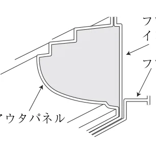</figure>
<figure>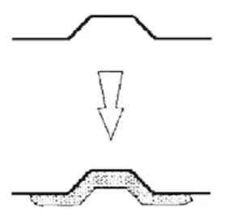</figure>
<p>フロントフロアサイドシルインナ</p>
<p>補強部分</p>
<p>フロントフロアパン</p>
<p>サイドアウタパネル</p>
<p>第5−1図　　　　　　　　　　　　　　第5−2図</p>
<h5 id="5-10-補助的付加物">5.10 ）補助的付加物</h5>
<p>補助的付加物の取り外しは、その配線も含み許される（例えば、マッドガード、アンダーガード、ストーンガード、オープン車両の幌およびその取り付け具、室内照明、ラジオ、ヒーター、エアコン、モール類、エアバッグ、ホーン、リアワイパー等）。</p>
<p>エアコンレス仕様の車両にエアコンを設置することは許され、設置に必要な最小限のボディ加工は許される。</p>
<p>計器類（データロガー、センサー、配線を含む）の取り付け、または取り外しが認められる。</p>
<p>絶縁材を車両の床下、エンジン室、トランク内やホイール格納アーチ部から除去することは許される。シャシー／車体部にあって、ボルトオンで取り付けてある使用していない支持体は取り外すことができる。</p>
<p>ヒールレストや消火器の取り付けブラケットおよび類似目的の部品、後部隔壁を新たに室内に設置することは許されるが、難燃材質であることおよびボルトなどで確実に車体に固定されていなければならない。</p>
<p>5.10.1 ）性能等への影響を及ぼさず、競技走行に使用する上では支障のない範囲で、基本車両に標準装備されている先進運転支援システム等のドライバー支援・安全技術に係る各種機能（衝突被害軽減ブレーキ、ブレーキホールド</p>
<p><span class="pagemark" id="p44">P.44</span>システム、など）および係るセンサー類を取り外すことは許される。</p>
<h5 id="5-11-エアジャッキ">5.11 ）エアジャッキ</h5>
<p>エアジャッキの使用は許される。ただし、圧搾気体の容器を搭載することは許されない。</p>
<h5 id="第-6-条-配管・他">第 6 条　配管・他</h5>
<h5 id="6-1-配-管">6.1 ）配　管</h5>
<p>オイルキャッチタンク等の取り付けに伴う最小限の変更のみ許される。</p>
<h5 id="6-2-安全燃料タンク">6.2 ）安全燃料タンク</h5>
<p>第4章“公認車両および登録車両に関する安全規定”第12条に基づく安全燃料タンクに交換することが許される。</p>
<p>取り付けのための車体の改造は、第5条5.1）で認められた改造を除き禁止される。タンク下部の最低地上高は10cm以上であること。</p>
<p>取り付けに伴う燃料配管の変更は許される。</p>
<h5 id="6-3-室内冷却用ダクト">6.3 ）室内冷却用ダクト</h5>
<p>ドライバーおよび室内補機類のための冷却ダクトを設置してもよい。ただし、外観形状の変更を伴うものは許されない。フレキシブルダクトをピラー等に簡易的に固定することなどは、外観形状の変更とはみなされない。</p>
<h3 id="第-6-章-特殊ツーリングカー"><span class="pagemark" id="p45">P.45</span>第 6 章　特殊ツーリングカー（Ｎ２）</h3>
<h5 id="第-1-条-車両の資格">第 1 条　車両の資格</h5>
<h5 id="1-1-定義-2">1.1 ）定義</h5>
<p>特殊ツーリングカー。</p>
<h5 id="1-2-資格-2">1.2 ）資格</h5>
<p>車両はＦＩＡグループＮ、Ａ（スポーツ進化を含む）、Ｂ、ＪＡＦ量産ツーリングカーまたは特殊ツーリングカーとして公認されているか、もしくはＪＡＦ登録車両として登録されていなければならない。</p>
<h5 id="第-2-条-許される改造">第 2 条　許される改造</h5>
<p>すでに量産ツーリングカー（Ｎ１）に対して許されている改造限度に次の項目が加えられる。</p>
<p>　本章の規定にかかわらず、第２章“レース車両の排気音量規制”、第３章“公認車両および登録車両に関する一般規定”、第４章“公認車両および登録車両に関する安全規定”を守らなければならない。</p>
<p>ただし、上記規定より本章の規定が厳しい場合は、本章を守らなければならない。</p>
<h5 id="2-1-材質の制限">2.1 ）材質の制限</h5>
<p>以下に示す材質は、各条項で認められているものを除き、使用することは許されない。ただし、当該車両に標準で使用されている場合は当該部分にのみ使用が許される。</p>
<p>チタニウム、マグネシウム、カーボン、アラミド繊維。</p>
<h5 id="2-2-制御機能">2.2 ）制御機能</h5>
<p>以下に示す制御機能を使用することは許されない。ただし、当該車両に標準で使用されている場合は当該機能のみ使用が許される。</p>
<p>トラクションコントロール、オートマチック／セミオートマチックギアボックス、アクティブサスペンション、アンチロックブレーキシステム、シーケンシャルミッション。</p>
<h5 id="第-3-条-エンジン-2">第 3 条　エンジン</h5>
<p>　車両と同一製造者の他の公認車両または登録車両の生産エンジンであれば、別車種のエンジンを搭載することができる。</p>
<p>　エンジンの位置とその取り付けは、車体に対する当初のエンジンの方位と方向が保持されているならば、エンジンルーム内で自由。</p>
<h5 id="3-1-気筒容積-2">3.1 ）気筒容積</h5>
<p>気筒容積は、搭載しているエンジンが所属する第３章“公認車両および登録車両に関する一般規定”1.9）の気筒容積別クラス限度まで変更してよい（過給装置付エンジンは、各々の係数を乗じ、それによって得られた値に相当するクラスの限度まで変更することができる）。</p>
<h5 id="3-2-シリンダーブロック">3.2 ）シリンダーブロック</h5>
<p>改造は自由。ただし、シリンダーブロックは当初のものを使用すること。</p>
<h5 id="3-3-シリンダーヘッドおよびバルブ">3.3 ）シリンダーヘッドおよびバルブ</h5>
<p>リフターを含み自由。ただし、シリンダーヘッドは当初のものを使用すること。</p>
<h5 id="3-4-ヘッドガスケット">3.4 ）ヘッドガスケット</h5>
<p>自由。</p>
<h5 id="3-5-カムシャフトおよび動弁系-バルブスプリングを含む">3.5 ）カムシャフトおよび動弁系（バルブスプリングを含む）</h5>
<p>自由。ただし、カムシャフトの位置、個数および駆動方式は変更できない。</p>
<p>材質の変更は禁止される。</p>
<h5 id="3-6-ピストン-ピストンピンおよびピストンリング">3.6 ）ピストン、ピストンピンおよびピストンリング</h5>
<p>自由。</p>
<h5 id="3-7-クランクシャフト-コンロッド">3.7 ）クランクシャフト、コンロッド</h5>
<p>自由。ただし、チタニウム合金の使用は許されない。</p>
<h5 id="3-8-フライホイール">3.8 ）フライホイール</h5>
<p>自由。ただし、材質はスチールに限定される。</p>
<h5 id="3-9-ベアリング">3.9 ）ベアリング</h5>
<p>プレーンベアリング、ローラーベアリングなどベアリングは同種の他のものに変更してもよい。</p>
<h5 id="3-10-吸気装置"><span class="pagemark" id="p46">P.46</span>3.10 ）吸気装置</h5>
<p>吸気系統は自由。ただし、可変吸気トランペットは禁止される。</p>
<p>過給装置の装着は数に変更がなければ自由。（非装着エンジンに取り付ける場合、シングルに限られる。）</p>
<h5 id="3-11-燃料供給装置">3.11 ）燃料供給装置</h5>
<p>自由。ただし、インジェクターは各シリンダーにつき基本車両の数を最大とする。</p>
<h5 id="3-12-点火系統">3.12 ）点火系統</h5>
<p>自由。</p>
<h5 id="3-13-潤滑系統">3.13 ）潤滑系統</h5>
<p>オイルポンプを変更してもよい。オイルパンの変更および改造は自由。オイルクーラーは、車両の輪郭から突出するものであってはならない。</p>
<h5 id="3-14-ウォーターラジエター">3.14 ）ウォーターラジエター</h5>
<p>自由。</p>
<h5 id="3-15-その他の要素">3.15 ）その他の要素</h5>
<h5 id="3-15-1-ウォーターポンプおよび燃料ポンプ">3.15.1 ）ウォーターポンプおよび燃料ポンプ</h5>
<p>自由。ただし、車室内に燃料ポンプを取り付けることは許されない。</p>
<h5 id="3-15-2-プーリー類-ベルト">3.15.2 ）プーリー類、ベルト</h5>
<p>自由。</p>
<h5 id="3-16-排気系統">3.16 ）排気系統</h5>
<p>排気系統は材質を含み自由。ただし、2010年1月1日以降に公認または登録された車両については、触媒装置を装着しなければならない。</p>
<p>側方排気車両の排気口の高さは次の通り：</p>
<p>１）最低高：排気口の最低点は最低地上高を確保しなければならない。</p>
<p>２）最大高：排気口の最高点は前後車輪回転軸を結ぶ線より高くなってはならない。</p>
<h5 id="3-17-マウント方法">3.17 ）マウント方法</h5>
<p>自由。</p>
<h5 id="第-4-条-シャシー-2">第 4 条　シャシー</h5>
<h5 id="4-1-クラッチ-2">4.1 ）クラッチ</h5>
<p>自由。ただし、ツインプレートを最大とする。</p>
<h5 id="4-2-トランスミッションおよびコントロールレバー">4.2 ）トランスミッションおよびコントロールレバー</h5>
<p>同一製造者のミッションの搭載、および搭載のための最小限の改造が許される。ギアレシオの変更およびオイルクーラー、オイルポンプの取り付けは自由。</p>
<h5 id="4-3-最終減速機と差動装置">4.3 ）最終減速機と差動装置</h5>
<p>同一製造者のディファレンシャルの搭載、および搭載のための最小限の改造が許される。</p>
<p>駆動方式の変更は許されない。</p>
<p>トランスミッションと最終減速機との間のシャフトは自由。</p>
<p>ギアレシオは自由。</p>
<p>オイルクーラー、オイルポンプの取り付けは自由。</p>
<h5 id="4-4-アクスル">4.4 ）アクスル</h5>
<p>スピンドルを含み自由。</p>
<p>センターロック方式への変更は許されない。</p>
<h5 id="4-5-スプリングおよびスタビライザー">4.5 ）スプリングおよびスタビライザー</h5>
<p>自由。ただし、主要な形式は変更してはならない。</p>
<p>補助スプリングの付加は許される。</p>
<p>走行中にスタビライザーを運転席からコントロールすることは許されない。</p>
<h5 id="4-6-ショックアブソーバー">4.6 ）ショックアブソーバー</h5>
<p>自由。運転席から減衰力を調整することは許されない。</p>
<h5 id="4-7-サスペンションの要素">4.7 ）サスペンションの要素</h5>
<p>当初の形式を保つならば変更、改造は自由。当初の形式とはストラット方式、ウイッシュボーン方式、トレーリングアーム方式、スウィングアクスル方式、リジッドアクスル方式の５つをいう。</p>
<h5 id="4-8-ステアリングおよびステアリングギア"><span class="pagemark" id="p47">P.47</span>4.8 ）ステアリングおよびステアリングギア</h5>
<p>自由。</p>
<h5 id="4-9-ホイールおよびタイヤ">4.9 ）ホイールおよびタイヤ</h5>
<p>ホイールスペーサーを含み自由。</p>
<h5 id="4-10-ブレーキシステム">4.10 ）ブレーキシステム</h5>
<p>自由。ただし、１輪につき４ピストン以下のキャリパーを１個とする。</p>
<p>ブレーキの冷却は空気による場合のみ認められ、各ブレーキには空気を送り込むフレキシブルダクトを設置する</p>
<p>2以下であり、上から見た車両の輪郭から突出せず、バンパーより上</p>
<p>ことが許される。冷却用ダクトの断面は80cm</p>
<p>の車体に変更を生じない条件で付加することができる。</p>
<p>駐車ブレーキは自由。駐車ブレーキを装着する場合、左右同時に、かつ確実に作動しなくてはならない。</p>
<h5 id="第-5-条-車-体-2">第 5 条　車　体</h5>
<h5 id="5-1-車体の外部">5.1 ）車体の外部</h5>
<h5 id="5-1-1-バンパー-ステーを含む">5.1.1 ）バンパー（ステーを含む）</h5>
<p>基本車両の全長の±３cm以内であれば、バンパーは自由。またバンパーの幅は1,850mmまで拡張が許されるが、フェンダーと滑らかに接続すること。</p>
<h5 id="5-1-2-ボンネット-トランクリッド">5.1.2 ）ボンネット、トランクリッド</h5>
<p>ボンネット、トランクリッドは形状、主要構成要素を変えない限り合成樹脂、または軽金属への交換が許される。ただし、これらの部分は、十分な強度を満足し、走行中に開かないようにすること。</p>
<p>エンジンクーリングのため、内部構造が見えないことを条件にナカダクトおよび最大突出量が20mmのルーバーを設置することができる。</p>
<h5 id="5-1-3-前部空力装置">5.1.3 ）前部空力装置</h5>
<p>可動式でなく、基本車両の全長の±３cm以内であれば、前部空力装置は自由であるが、上から見た車体輪郭に対する突出量は最大３cmまでに制限される。</p>
<p>前部空力装置をバンパーと一体に成形することができる。前車軸の中心より前方のアンダーパネルは自由。</p>
<h5 id="5-1-4-フェンダー">5.1.4 ）フェンダー</h5>
<p>車両の全幅を最大幅1,850mmまで広げることができる。</p>
<p>タイヤは真上から見て、車輪回転の中心を通過する垂直線の前後に、回転の中心から計測して前後60°の範囲において、はみだしてはならない。</p>
<p>フェンダーは車体のシルエットから遊離した形状であってはならず、かつ横方向および後方から機械構造物が見えてはならない。</p>
<p>タイヤが容易に取り外せる形状でなければならない。</p>
<h5 id="5-1-5-サイドスカート">5.1.5 ）サイドスカート</h5>
<p>サイドスカートは、車体から遊離した形状でなければ取り付けることができるが、最低地上高はいかなる状態でも確保されなければならない。</p>
<h5 id="5-1-6-後部空力装置">5.1.6 ）後部空力装置</h5>
<p>車両の全長および全高を超えず、基本車両の最大幅以内で、外縁に３mm以上のＲをつけることを条件に形状は自由。</p>
<p>後車軸の中心より後方のアンダーパネルは自由。ただし、上から見た車体輪郭から突出してはならない。</p>
<h5 id="5-1-7-窓ガラス">5.1.7 ）窓ガラス</h5>
<p>サイドウィンドウおよびリアウィンドウを無色透明な他の材質のものに変更することが許される。ただし、取り付け位置および板厚の削減と形状の変更は認められない。取り付け部をタッピング、ビス等で補強することが推奨される。</p>
<h5 id="5-1-8-車体外部の改造">5.1.8 ）車体外部の改造</h5>
<p>フロントピラーおよびルーフドリップ部分の改造、サイドウィンドウガラス取り付け位置の変更、結果として空力持性の改善をもたらす車体の不可視部分の改造、および空力持性の改善をもたらす取り付けおよび切除等による車両の改造は一切許されない。</p>
<p>オープンカーのハードトップは、ソフトトップ、もしくはオプションにハードトップが設定されている場合、形状がそれに近似していなければならない。</p>
<p>外部からの異物混入、内部からの異物放出を防ぐため、車体外部の開口部に網目構造を取り付けることができる。</p>
<h5 id="5-2-車体の内部"><span class="pagemark" id="p48">P.48</span>5.2 ）車体の内部</h5>
<p>5.2.1 ）ダッシュボード（インストルメントパネル）の変更および交換は許されるが取り外しは許されない。</p>
<p>5.2.2 ）燃料タンクの容量は第３章“公認車両および登録車両に関する一般規定”10.2）に規定された限界以内ならば自由。</p>
<p>5.2.3 ）排気管取り付けのためのサイドシルおよびフロアの最小限の改造は許される。</p>
<p>5.2.4 ）ＦＩＡ基準8855-1999またはＦＩＡ基準8862-2009に従った座席の使用が推奨される。標準のシートレールフレームの前後の位置を変更してはならない。</p>
<h5 id="第-6-条-電装品および補機">第 6 条　電装品および補機</h5>
<p>6.1 ）ライト類の付加による最小限の変更、および前部霧灯の取り外しは許される。</p>
<p>ただし、ヘッドライトの取り外しは配線を含み許されず、前照灯、尾灯、制動灯、方向指示灯および非常点滅表示灯は正常に作動しなければならない。</p>
<p>リトラクタブルライトの可動システムの変更は許される。</p>
<p>6.2 ）バッテリーの位置は自由。ただし、強固に取り付けられ、ドライバッテリーでない場合には車室から確実に隔離されなければならない。</p>
<h5 id="第-7-条-安全燃料タンク">第 7 条　安全燃料タンク</h5>
<p>第４章“公認車両および登録車両に関する安全規定”第12条に従った安全燃料タンクの装着が義務付けられる。</p>
<p>　ただし、3.16）排気系統、および4.7）サスペンションの要素の各条項が、第５章“量産ツーリングカー（Ｎ１）”の規定の中の相当する条項に従って改造されており、かつ、5.1.1）バンパーについてはステーおよびリインフォースメントを改造しない場合、安全燃料タンクの装着が免除される。</p>
<p>安全燃料タンクの取り付けのための改造は許される。タンク下部の最低地上高は10cm以上であること。</p>
<p>　安全燃料タンクをホイールベース間に搭載するため、安全燃料タンクが荷室および車室にまたがる場合は、次の事項を遵守しなければならない。</p>
<p>１）前部座席の後端より後方に位置していなければならない。</p>
<p>２）タンクの両側は衝撃吸収構造とすることを強く推奨する。</p>
<p>３）隔壁は後方視界を妨げる形状であってはならない。</p>
<p>４）漏出した燃料は滞留してはならず、また車室には浸入しないよう十分配慮されていなければならない。</p>
<h2 id="部門-競技専用車両-ナショナルフォーミュラ-第-章-第12章"><span class="pagemark" id="p50">P.50</span>部門Ⅱ：競技専用車両　　　　（ナショナルフォーミュラ）　　　　（第７章〜第12章）</h2>
<h3 id="第-章-競技専用車両-ナショナルフォーミュラ-に関する定義"><span class="pagemark" id="p52">P.52</span>第７章　競技専用車両（ナショナルフォーミュラ）に関する定義</h3>
<h3 id="第-7-章-競技専用車両-ナショナルフォーミュラ-に関する定義">第 7 章　競技専用車両（ナショナルフォーミュラ）に関する定義</h3>
<h5 id="1-1-フォーミュラ車両">1.1 ）フォーミュラ車両</h5>
<p>サーキットあるいはクローズドコース上で行われるスピードレースのためにのみに設計された４輪自動車をいう。</p>
<h5 id="1-2-自動車">1.2 ）自動車</h5>
<p>直線上に並べられていない少なくとも４つの車輪によって走行し、少なくとも２つの車輪が操舵に、また少なくとも２つの車輪が推進に使用される陸上車両をいう。</p>
<h5 id="1-3-陸上車両">1.3 ）陸上車両</h5>
<p>それ自体の手段によって、地表に対する実際上の支えを常時保持して推進し、その推進および操舵装置は乗車したドライバーの制御下にある移動装置をいう。</p>
<h5 id="1-4-車体">1.4 ）車体</h5>
<p>ロールオーバー構造体ならびにエンジン、トランスミッションおよび走行装置で機械的機構に明らかに関連する部分を除き、外気にさらされている車両のすべての主要懸架部分をいう。エアボックス、ラジエターおよび排気系統（ＳＦは除く）は車体の一部とみなされる。</p>
<h5 id="1-5-空気力学的装置">1.5 ）空気力学的装置</h5>
<p>空気力学的な動作に影響することを基本機能とした車体の部分をいう。</p>
<h5 id="1-6-ホイール">1.6 ）ホイール</h5>
<p>フランジとリムをいう。</p>
<h5 id="1-7-コンプリートホイール">1.7 ）コンプリートホイール</h5>
<p>フランジ、リムおよびタイヤをいう。</p>
<h5 id="1-8-自動車の銘柄">1.8 ）自動車の銘柄</h5>
<p>フォーミュラレーシングカーの場合、自動車の銘柄とは完成車のことをいう。製造者が自身で生産しないエンジンを取り付けた場合、その車両は「合成」とみなされ、エンジン製造者名と車両製造者名が連名となる。車両製造者名が常にエンジン製造者名の前に付く。</p>
<p>合成車が選手権のタイトルのかかったカップ、あるいはトロフィーを獲得した場合には、この賞は車両の製造者に与えられる。</p>
<h5 id="1-9-競技">1.9 ）競技</h5>
<p>競技とは、フリー走行、公式予選およびレースからなる。</p>
<h5 id="1-10-重量">1.10 ）重量</h5>
<p>車両重量とは、レース用装備品をすべて着用した状態のドライバーを含めた競技の行われているすべての期間中の重量をいう（すべての燃料を含まない）。</p>
<h5 id="1-11-レーシング重量">1.11 ）レーシング重量</h5>
<p>すべての燃料タンクを満たし、ドライバーが搭乗し、出走可能な状態の車両重量をいう。</p>
<h5 id="1-12-気筒容積">1.12 ）気筒容積</h5>
<p>エンジンの気筒内でのピストン運動により排出される容積をいう。この容積は、立方センチメートルであらわされる。エンジンの気筒容積を算出する場合のπの数値は3.1416とする。</p>
<h5 id="1-13-過給装置">1.13 ）過給装置</h5>
<p>何らかの方法により、燃焼室に充填される燃料／空気の混合気の重量を増加（インテークおよび／またはエキゾーストシステム内における通常の大気圧、ラム効果および力学的効果によって吸入される重量を超えて増加）させる装置をいう。燃料の加圧噴射は、過給装置とはみなされない。</p>
<h5 id="1-14-主要構造体">1.14 ）主要構造体</h5>
<p>サスペンションまたはスプリングの負荷が伝えられる車両のすべての主要構造体で、シャシー上の前部サスペンション最前部から後部にあるサスペンションの最後部にまで縦方向に延びている部分をいう。</p>
<h5 id="1-15-懸架・サスペンション">1.15 ）懸架・サスペンション</h5>
<p>スプリングを介在して車体／シャシーからすべてのコンプリートホイールを懸架する手段。</p>
<h5 id="1-16-コクピット">1.16 ）コクピット</h5>
<p>ドライバーを収容する容積をいう。</p>
<h3 id="第-章-競技専用車両-ナショナルフォーミュラ-に関する定義-2"><span class="pagemark" id="p53">P.53</span>第７章　競技専用車両（ナショナルフォーミュラ）に関する定義</h3>
<h5 id="1-17-サバイバルセル">1.17 ）サバイバルセル</h5>
<p>すべての燃料タンクとコクピットを収容する連続した閉鎖構造体をいう。</p>
<h5 id="1-18-アクティブサスペンション">1.18 ）アクティブサスペンション</h5>
<p>車両が動いているときにサスペンションのいかなる部分および車高を制御するすべての方式をいう。</p>
<h5 id="1-19-複合構造">1.19 ）複合構造</h5>
<p>一枚の薄板から成る層の集まり、もしくはコアの材質の両側に接着された２枚の外板で構成される断面を有する同質でない材質をいう。</p>
<h5 id="1-20-テレメトリー">1.20 ）テレメトリー</h5>
<p>走行中の車両とその車両の参加に関係しているあらゆる者との間で行われるデータの通信をいう。</p>
<h5 id="1-21-セミオートマチック・ギアボックス">1.21 ）セミオートマチック・ギアボックス</h5>
<p>ドライバーがギアの変更を要した際に、ギアが入るようにするためにエンジン、クラッチ、またはギアセレクターの内の１つ以上を瞬間的に制御するものをいう。</p>
<h5 id="1-22-コクピットのパッド">1.22 ）コクピットのパッド</h5>
<p>ドライバーの居住性の向上と安全性確保のみを目的としたコクピット内部に配置される非構造部品をいう。この材質はすべて工具を使用しなくても即座に取り外せる機構になっていなくてはならない。</p>
<h3 id="第-章-スーパー"><span class="pagemark" id="p54">P.54</span>第 ８ 章　スーパーＦＪ（Ｓ−ＦＪ）</h3>
<h5 id="第-1-条-規-定">第 1 条　規　定</h5>
<h5 id="1-1-改定に関する公表年月日">1.1 ）改定に関する公表年月日</h5>
<p>ＪＡＦは、毎年遅くとも10月にこれらの規定に関する改定内容を発表し、通常、翌年の１月１日から施行する。</p>
<p>ただし、安全上の理由による改定は上記にかかわらず直ちに施行する。</p>
<h5 id="1-2-危険な構造">1.2 ）危険な構造</h5>
<p>自動車が危険とみなされた場合、その車両は競技会の審査委員会によって除外されることがある。</p>
<h5 id="1-3-規則の遵守">1.3 ）規則の遵守</h5>
<p>車両は、競技期間中いかなる時でも、これらの規則に合致していなければならず、第５編細則“Ｓ−ＦＪ車両規定の競技会用実施細則”をも遵守すること。</p>
<h5 id="1-4-測-定">1.4 ）測　定</h5>
<p>すべての測定は、車両が平坦な水平面の上に静止した状態で行われなければならない。</p>
<h5 id="1-5-競技参加者の義務">1.5 ）競技参加者の義務</h5>
<p>競技参加者は競技期間中、いかなる時でも自己のＳ-ＦＪ車両が本規定に合致していることを、車両検査委員および競技会審査委員会に立証する義務がある。</p>
<h5 id="1-6-アクティブサスペンション">1.6 ）アクティブサスペンション</h5>
<p>アクティブサスペンションは禁止される。</p>
<h5 id="1-7-材質規制">1.7 ）材質規制</h5>
<p>以下の材質の使用は禁止される。</p>
<p>マグネシウム／チタニウム／カーボン／アラミド繊維。</p>
<h5 id="1-8-クロームメッキ">1.8 ）クロームメッキ</h5>
<p>サスペンションに対するクロームメッキは禁止される。</p>
<h5 id="第-2-条-車体と寸法">第 2 条　車体と寸法</h5>
<h5 id="2-1-車-幅">2.1 ）車　幅</h5>
<p>ステアリングホイールを直進状態にしたときのコンプリートホイールを含む車体の全幅は、1,700mmを超えてはならない。</p>
<h5 id="2-2-フロントホイールの中心線より前方の幅">2.2 ）フロントホイールの中心線より前方の幅</h5>
<p>フロントホイールの中心線より前方の車体は、幅1,300mmを超えてはならない。</p>
<h5 id="2-3-フロントホイールとリアホイールの間の幅と形状">2.3 ）フロントホイールとリアホイールの間の幅と形状</h5>
<p>フロントホイールの中心線より後方とリアホイールの中心線の前方にある車体の最大幅は、1,300mmを超えてはならない。この中に側面防護体は含まれる。</p>
<p>リアホイールの中心線より前方の車体で、リアコンプリートホイールの高さより上方の車体のいかなる部分も、車両の縦方向軸の中心から450mmを超えてはならない。</p>
<h5 id="2-4-リアホイールの中心線より後方の幅">2.4 ）リアホイールの中心線より後方の幅</h5>
<p>リアホイールの中心線から後方の車体の幅は、900mmを超えてはならない。</p>
<h5 id="2-5-オーバーハング">2.5 ）オーバーハング</h5>
<p>リアホイールの中心線より後方600mm以上の所には、車両のいかなる部分もあってはならない。</p>
<p>フロントホイールの中心線より前方900mm以上の所には、車両のいかなる部分もあってはならない。</p>
<p>ホイールの中心線とは左右のハブセンター間を結ぶ中心線をいう。</p>
<h5 id="2-6-高さ">2.6 ）高さ</h5>
<p>ドライバーが正常に着座し、また正常にレース装備した車両のいかなる部分も、安全ロール構造体を除き、地上から900mmを超えてはならない。</p>
<p>安全ロール構造体のうち、地上高900mmを超える部分は、車両の性能に大きく影響を与えるような空気力学的形状をもってはならない。</p>
<h5 id="2-7-ホイールベース-トレッド">2.7 ）ホイールベース／トレッド</h5>
<p>最小ホイールベース：2,200mm</p>
<p>最小トレッド　　　：1,200mm</p>
<p><span class="pagemark" id="p55">P.55</span>最低地上高　　　　：50mm（レース用装備品をすべて着用したドライバーが正常に着座した状態）</p>
<p>縦350mm×横350mm×高さ50mmの最低地上高測定板に触れることなく通過できなけれ</p>
<p>ばならない。</p>
<h5 id="2-8-フラットボトム">2.8 ）フラットボトム</h5>
<p>2.8.1 ）前部コンプリートホイールの後端と後部コンプリートホイールの前端との間にあって、車両の真下から見える車両のすべての構成部分は、±10mmの許容範囲内で１つの平面上（フラットボトム）に位置しなければならない。</p>
<p>また、フラットボトムの後端はリアコンプリートホイールの前端からリアホイールの中心線の間で終結しなければならない。これらすべての部分は、いかなる状況下にあっても、均一で、固形で、堅固に固定されており（車体／シャシー構成に関していかなる遊びもあってはならない）、水・空気を通さない面であること。これらの部分によって形成される表面の周囲は、最大半径50mmの上向きの湾曲を形成することが許される。フラットボトム後端部の形状は、上向きに平面で立ち上げることが許されるが、その高さはフラットボトムを形成する平面から上方に20mm以内とする。</p>
<p>2.8.2 ）±10mmの許容差が、考えられる製造上の問題点を網羅するために規定に導入されているが、これは“フラットボトム”の精神に反する設計を許すためのものではない。</p>
<p>2.8.3 ）いかなるスキッド、スカートあるいは“フラットボトム”から突出している他の装置（上と同様に導入された±10mmの許容差）も、本条文に関連する規定に抵触するため、フラットボトム区画から取り除かなければならない。</p>
<p>2.8.4 ）車両の底部を保護するため、スキッドをフラットボトム区画の外に配置することができるが、本規則第２条「車体と寸法」は遵守されなければならない。なお、スキッドの端部は半径５mm以上の面を持つこととする。</p>
<p>2.8.5 ）上記フラットボトムの後端より後方において地表と車両の主要部分との間を全面的あるいは部分的に遮断するような空気力学的構造物は一切禁止される。（ディフューザー構造等の禁止）</p>
<p>車両の空気力学的影響を有する特定の部分は：</p>
<p>−車体の主要部分にしっかりと取り付けられていなくてはならず、（しっかりと取り付けるとは、固定されていない部分があってはならないという意味である。）</p>
<p>−車体の突出部と固定されていなくてはならない。</p>
<p>車両の主要部と地表との間隙を連結するいかなる装置あるいは構造体は、あらゆる状況下でも禁止される。</p>
<p>いかなる状況下にあっても本条によって規定される表面によって生ずる幾何学平面より下部に位置してはならない。</p>
<h5 id="2-8-6-エンジンの搭載位置">2.8.6 ）エンジンの搭載位置</h5>
<p>エンジンブロック背面（ベルハウジングと接する面）はリアホイールの中心線より260mm以内とする。</p>
<h5 id="2-9-空気力学的装置">2.9 ）空気力学的装置</h5>
<p>空気力学的装置は前後のウイングおよび翼端板を除き一切禁止される。</p>
<p>ただし、ドライバーが風・飛石等を防ぐため、開口部に沿って最小限のウインドスクリーンを取り付けることは許される。その取り付けは暫定的なものであってはならない。</p>
<p>リアサスペンション・フロントピックアップより後方で、かつアッパーピックアップより下方にカウルを取り付けることは許されない。</p>
<h5 id="2-9-1-ウイング">2.9.1 ）ウイング</h5>
<p>各フロントウイングおよびリアウイングは１枚で構成され、２枚以上で構成することは禁止する。ウイング形状は前方および上方から見て長方形であること。</p>
<p>各翼端板は平板とするが、フロントウイングの翼端板の前側（前から見えるすべての面）は半径５mm以上の面を持つこととする。</p>
<p>前端の角部（上側、下側とも）には最小半径35mmのRを付けることが推奨される。この場合Ｒ形状を形作る範囲に限り平板とならないことは認められる。</p>
<p>リアウイングの取り付け支持方法はセンターマウントとする。</p>
<p>リアウイングの車体への取り付けに関するウイング側固定構造は車両中心線を基準として対称とし、その取り付け構造のすべては300mm以内であること。</p>
<h5 id="2-10-コクピット">2.10 ）コクピット</h5>
<h5 id="2-10-1-コクピット開口部">2.10.1 ）コクピット開口部</h5>
<p>コクピットに入るための開口部は図に示される水平版（テンプレート）が、ステアリングホイールを取り外した</p>
<p><span class="pagemark" id="p56">P.56</span>状態で車両上部から垂直に挿入できるものでなくてはならない。テンプレートをコクピットの開口部の最も低い点から下方へ25mm下げることが可能でなくてはならない。</p>
<p>測定時には、ドライバーサイドパッドは取り外すこと。</p>
<p>ドライバーは、ドアを開けたり、その他の部分を移動させることなく、乗降できなくてはならない。</p>
<figure>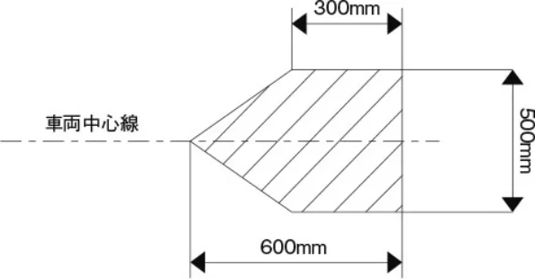</figure>
<p>第10−1図</p>
<h5 id="2-10-2-脱出時間">2.10.2 ）脱出時間</h5>
<p>コクピットは、ドライバーが通常の位置に着座し、すべての運転装置を取り付け、安全ベルトを締めてステアリングホイールが最も不都合な状態にあっても、ドライバーが５秒以内に外に出られるよう設計されていなくてはならない。</p>
<h5 id="2-11-ステアリングホイール">2.11 ）ステアリングホイール</h5>
<p>ステアリングホイールは迅速に取り外せる機構を備えていなくてはならない。その開放（取り外し）方法は、ステアリングホイール後方のステアリングコラムに設置された同心円状のフランジを引く方法によるものでなくてはならない。ステアリングラックは、フロントアクスル軸より前方に取り付けなければならない。</p>
<p>ステアリングホイールに切れ目があってはならない。</p>
<p>スイッチ、メーター、その他の部品等を装着する場合、それらは突起した形状（トグルスイッチ等）であってはならず、ドライバーと対面するステアリングホイールリム全体で形成される平面よりドライバーに近いところに位置してはならない。</p>
<p>緩衝パッドの装着を推奨する。</p>
<h5 id="第-3-条-重-量">第 3 条　重　量</h5>
<h5 id="3-1-最低重量">3.1 ）最低重量</h5>
<p>大会期間中を通じ495kg を下回ってはならない。</p>
<h5 id="3-2-バラスト">3.2 ）バラスト</h5>
<p>バラストはその取り外しに工具を必要とするような方法で固定されるならば使用することが許される。技術委員が封印を施すことができるようなものでなければならない。</p>
<h5 id="第-4-条-エンジン-2">第 4 条　エンジン</h5>
<h5 id="4-1-エンジンの種類">4.1 ）エンジンの種類</h5>
<p>国土交通省の指定を受けた量産車両に搭載されているエンジンを使用しなければならない。</p>
<h5 id="4-2-エンジンの形式">4.2 ）エンジンの形式</h5>
<p>レシプロピストンによるエンジンのみ認められる。</p>
<h5 id="4-3-最大容積">4.3 ）最大容積</h5>
<p>1,500ccを含み1,500ccまでとする。</p>
<h5 id="4-4-シリンダーの最大数">4.4 ）シリンダーの最大数</h5>
<p>最大４とする。</p>
<h5 id="4-5-過給装置は禁止される">4.5 ）過給装置は禁止される。</h5>
<p>4.6 ）シリンダーヘッドのバルブ数はシリンダー当たり４個とする。</p>
<h5 id="4-7-エンジンの改造限度">4.7 ）エンジンの改造限度</h5>
<p>エンジンおよび補機は次の各項目を除き変更してはならない。ただし、シャシーにエンジンを搭載するための最小限の変更は許される。</p>
<p>ピストンは純正部品に限る。</p>
<h5 id="4-8-サーモスタット">4.8 ）サーモスタット</h5>
<p>自由。</p>
<h5 id="4-9-オイルフィルター"><span class="pagemark" id="p57">P.57</span>4.9 ）オイルフィルター</h5>
<p>自由。</p>
<h5 id="4-10-エアフィルター">4.10 ）エアフィルター</h5>
<p>ゴミの進入を防ぐ目的のメッシュやエアクリーナーの取り付けはスロットルボディ端面から200mm以内で自由とする。</p>
<p>エアファンネルはスロットルボディ端面より長さ120mm以下、最大径140mm以下とし、開口部は車両の後方を向いていること。</p>
<p>インダクションボックスまたは走行により吸気圧を上げる構造のダクト、カウル等の取り付けは許されない。</p>
<p>また、リアカウルを取り付けた場合、エアファンネル後端面は横からと後方から見えること。</p>
<h5 id="4-11-燃料ポンプ">4.11 ）燃料ポンプ</h5>
<p>自由。</p>
<h5 id="4-12-点火プラグ">4.12 ）点火プラグ</h5>
<p>自由。</p>
<h5 id="4-13-クラッチディスク">4.13 ）クラッチディスク</h5>
<p>クラッチディスクは当初の枚数を変更しなければ自由。</p>
<p>クラッチカバーは元の取り付け寸法、形状を変えなければ変更は許される。</p>
<h5 id="4-14-ファンベルト">4.14 ）ファンベルト</h5>
<p>自由。</p>
<h5 id="4-15-フライホイール">4.15 ）フライホイール</h5>
<p>軽量加工は許される。ただし、リングギア径寸法は保持されなければならない。</p>
<h5 id="4-16-オルタネーター">4.16 ）オルタネーター</h5>
<p>取り外しは許されない。また、発電機能は正常に機能していなければならない。</p>
<h5 id="4-17-性能の均等化">4.17 ）性能の均等化</h5>
<p>ＪＡＦは性能の均等化のため、事前予告をもって出力制限装置を取り付ける権利を留保する。</p>
<h5 id="4-18-排気管">4.18 ）排気管</h5>
<p>排気マニホールドは防熱措置を施すことは許されるが、確認作業のため全面的に覆うことはできない。排気マニホールド後方部分は自由、ただし、サイレンサーを除き材質は鉄系で磁力に反応すること。</p>
<p>排気管の出口は、それが水平に、かつ後方に向けられている場合、地面から400mm以下の高さでなければならない。走行中の可変装置は禁止される。</p>
<p>触媒装置の装着を義務付ける。装着する触媒装置はＪＡＦに申請し承認を受けたものとする。取付け位置は排気管最後端とし、取外しにより触媒装置内部を前後から容易に視認できる方式としなければならない。</p>
<h5 id="4-19-排気音量測定">4.19 ）排気音量測定</h5>
<p>すべての車両は第２章“レース車両の排気音量規制”に従うこと。</p>
<h5 id="第-5-条-始-動">第 5 条　始　動</h5>
<h5 id="5-1-始動装置">5.1 ）始動装置</h5>
<p>電気エネルギー源による始動装置を車両に搭載しなければならず、ドライバーが正常に着座した状態で作動できなければならない。また、始動装置は常にエンジンを始動できるものでなくてはならない。</p>
<h5 id="5-2-エンジン始動">5.2 ）エンジン始動</h5>
<p>グリッド上およびピットエリアにおいて、補助的に外部よりエネルギー源を、車両に一時的に接続してエンジンを始動することができる。</p>
<h5 id="第-6-条-駆動装置">第 6 条　駆動装置</h5>
<h5 id="6-1-駆-動">6.1 ）駆　動</h5>
<p>車両は２輪でのみ駆動されなければならない。</p>
<h5 id="6-2-ギアボックスの型式">6.2 ）ギアボックスの型式</h5>
<p>前進ギアの最大数は５段とし、シ−ケンシャルシフト方式は禁止される。</p>
<h5 id="6-3-後退ギア">6.3 ）後退ギア</h5>
<p>すべての車両は、競技期間中いかなる時にもエンジンがかかっている間、通常に使用できる後退ギアを備えていなくてはならない。</p>
<p>6.4 ）横置きギアボックスおよびリアアクスル（リアホイールハブセンター）より前方のギアボックスは禁止される。</p>
<h5 id="6-5-ギアボックス"><span class="pagemark" id="p58">P.58</span>6.5 ）ギアボックス</h5>
<p>日本製に限り許される。</p>
<h5 id="6-6-ディファレンシャル">6.6 ）ディファレンシャル</h5>
<p>デフの差動を制限する装置は禁止される。</p>
<h5 id="第-7-条-サスペンション">第 7 条　サスペンション</h5>
<p>7.1 ）コクピットから調整できるスタビライザーは禁止される。</p>
<h5 id="第-8-条-燃料パイプとタンク-ケーブルおよび電気装置">第 8 条　燃料パイプとタンク、ケーブルおよび電気装置</h5>
<h5 id="8-1-ライン-ケーブル-電気装置">8.1 ）ライン／ケーブル／電気装置</h5>
<p>ケーブルラインおよび電気装置が、その取り付け位置／材質または連結方法等に関して航空機工業基準に準拠していない場合、次のことを生じるいかなる漏れもないよう取り付けられなければならない。</p>
<p>−コクピット内の液体たまり</p>
<p>−コクピット内への液体の侵入</p>
<p>−電線または電気装置と液体の接触</p>
<p>もし、ケーブルラインあるいは電気装置がコクピットを通過する、またはコクピット内に取り付けられている場合、それらは防火材でかつ液体の侵入を防ぐ材料によって完全に覆われていなければならない。</p>
<p>電気系、燃料系へのＭＩＬ規格品の使用は禁止される。</p>
<h5 id="8-2-パイプライン">8.2 ）パイプライン</h5>
<p>すべての燃料の配管は最大作動温度135℃で、4.1MPa（41bar）の最低破裂圧力を有していなければならない。</p>
<h5 id="8-3-燃料タンク">8.3 ）燃料タンク</h5>
<p>下記に従い、ＪＡＦ／ＦＩＡ公認の安全燃料タンクの装着が義務付けられる。</p>
<p>Ａ）最大容量20ℓまでのタンクを１個。なお、コレクタータンクの使用は禁止される。</p>
<p>Ｂ）取り付け位置はシートバックと主要ロール構造体のバルクヘッドの間とする。</p>
<p>Ｃ）すべての燃料タンクには、製造者名、タンクの製造に際し適用された仕様（規格）、製造月日が表示されていなければならない。</p>
<h5 id="8-4-燃料タンクの給油キャップ">8.4 ）燃料タンクの給油キャップ</h5>
<p>燃料タンクの給油キャップは車体より突出してはならない。</p>
<p>衝撃の際や不完全なロックによりキャップが緩まないように設計されていなければならない。</p>
<p>燃料給油口は衝突により、破損されやすい場所を避けて取り付けなければならない。</p>
<p>空気孔はコクピットの後方250mm以上の場所に位置すること。</p>
<h5 id="8-5-オイルキャッチタンク">8.5 ）オイルキャッチタンク</h5>
<p>車両には最小２ℓのオイルキャッチタンクを装着しなければならない。ブリーザーはこのキャッチタンクに排出しなければならない。</p>
<p>この容器は透明なプラスチック製であるか、透明な窓わくを備えること。</p>
<p>ミッションケースより後方に位置してはならない。</p>
<h5 id="第-9-条-制動装置">第 9 条　制動装置</h5>
<h5 id="9-1-重回路">9.1 ）２重回路</h5>
<p>すべての車両は、同一のペダルによって操作される少なくとも２系統の回路を有する制動装置を装備しなければならない。この装置の１つの回路に漏れ、もしくは欠陥が生じた場合でも、ペダルは少なくとも２輪のホイールを依然として制御できなければならない。</p>
<h5 id="9-2-ブレーキ圧の調整">9.2 ）ブレーキ圧の調整</h5>
<p>アンチロックブレーキおよびパワーブレーキは禁止される。</p>
<h5 id="9-3-材質と加工">9.3 ）材質と加工</h5>
<p>ブレーキディスクは鉄製に限定され、ディスクへの穴あけ、溝切りは禁止される。ベンチレーテッドディスクは禁止される。</p>
<h5 id="9-4-ブレーキキャリパー">9.4 ）ブレーキキャリパー</h5>
<p>すべてのブレーキキャリパーは、同質の金属材で作られていなければならず、最大４ピストンまでとし、各ホイールにつき１個でなければならない。</p>
<h5 id="9-5-ブレーキダクト">9.5 ）ブレーキダクト</h5>
<p>ブレーキを冷却するためのすべてのダクト類および空気力学的付加物はすべて禁止される。</p>
<h5 id="第-10-条-タイヤとホイール"><span class="pagemark" id="p59">P.59</span>第 10 条　タイヤとホイール</h5>
<h5 id="10-1-タイヤ">10.1 ）タイヤ</h5>
<p>競技専用タイヤの装着が許される。ただし、タイヤの径は左右同一でなければならない。</p>
<h5 id="10-2-ホイールの数">10.2 ）ホイールの数</h5>
<p>ホイールの数は４本に限定される。</p>
<h5 id="10-3-ホイールの寸法">10.3 ）ホイールの寸法</h5>
<p>ホイールの幅は６インチを超えてはならない。</p>
<p>ホイールリム径は13インチを超えてはならない。</p>
<h5 id="10-4-材質">10.4 ）材質</h5>
<p>すべてのホイールは、均質の鉄またはアルミ合金で作られていなければならない。（ただし、アルミ合金の場合はＪＷＬまたはＶＩＡ規格に合致していること。）</p>
<h5 id="第-11-条-安全装置">第 11 条　安全装置</h5>
<h5 id="11-1-消火器">11.1 ）消火器</h5>
<p>すべての車両は、内容量２kg以上の粉末消火器、またはＦＩＡ国際モータースポーツ競技規則付則Ｊ項第253条７に記された消火剤および内容量、あるいは同第259条14に記された消火器を、ドライバーが速やかに操作できるように搭載しなければならない。取り付け位置は車体構造の内側とし、コクピット内とエンジンルームに同時に散布する２系統の消火装置でなければならない。</p>
<h5 id="11-2-記載項目">11.2 ）記載項目</h5>
<p>１）以下の情報を各消火器に明記しなければならない：</p>
<p>ａ）容器の容量</p>
<p>ｂ）消火剤の種類</p>
<p>ｃ）消火剤の重量もしくは容量</p>
<p>ｄ）消火器の点検日</p>
<p>２）消火装置の点検日は、消火剤の充填期日もしくは前回点検期日から２年以内とする。（消火剤の充填日もしくは前回の点検期日から２年を過ぎて使用してはならない。）ただし、２年毎の点検を継続したとしても消火装置の製造者が定めた有効年数あるいは耐用年数を超えて使用することはできない。</p>
<p>−消火装置の製造者が、有効年数あるいは耐用年数を定めていない場合、その使用期限は製造期日（または初回充填期日）から７年間を目処とする。</p>
<p>−消火剤の充填日もしくは前回検査日の表示が年（月）表示である場合、有効期間の起算日は当該年（月）の末日とする。</p>
<p>３）２年毎に製造者、製造者が指定した工場、あるいは代理店などの有資格者による点検を受けること。</p>
<h5 id="11-3-電気回路開閉装置-サーキットブレーカー">11.3 ）電気回路開閉装置（サーキットブレーカー）</h5>
<p>ドライバーが安全ベルトを装着し、ステアリングホイールをつけ運転席に着座した状態で操作できる放電防止つきサーキットブレーカーによって、点火装置、燃料ポンプ、および電気回路を遮断することができなくてはならない。</p>
<p>スイッチはコクピットの右側に取り付けられ白い縁どりをした底辺が100mmの青い三角の中に赤色のスパークを描いた標識で表示されていなくてはならない。また、外部からでも容易に操作できるような構造になっていなければならない。</p>
<h5 id="11-4-後方視界用ミラー">11.4 ）後方視界用ミラー</h5>
<p>すべての車両は、ドライバーが後方と車両の両側を見ることができるよう取り付けられた最低２つのミラーを有していなくてはならない。</p>
<p>各ミラーの反射面の最小幅は150mmで、少なくともそれが縦50mmにわたり維持されていなければならない。各コーナー部については最大半径10mmのRが上記寸法内で許される。</p>
<p>技術委員は、通常に着座したドライバーが確実に後方車両を確認できるような検証を実施することができる。</p>
<h5 id="11-5-安全ベルト">11.5 ）安全ベルト</h5>
<p>２本の肩部ストラップ、２本の腰部ストラップおよび２本の脚部ストラップの装着が義務付けられる。</p>
<p>これらのストラップは、車両に確実に固定され、ＦＩＡ基準8853/2016に合致していなければならない。</p>
<h5 id="11-6-尾灯">11.6 ）尾灯</h5>
<p>すべての車両には、競技会中作動する少なくとも白熱球の21ワット相当以上の明るさをもつ赤色警告灯を装備し</p>
<p><span class="pagemark" id="p60">P.60</span>ていなくてはならない。</p>
<p>１）車両の縦方向の中心線に対して90°で後方に面していること。</p>
<p>２）後方からはっきりと見えること。</p>
<p>３）車両の中心線より100mm以上の所に取り付けないこと。</p>
<p>４）地上から最低400mmの所にあること。</p>
<p>５）その表面は最小2,000mm</p>
<p>2の面積を有すること。</p>
<p>６）車両に正常に着座したドライバーによって点灯できるものでなくてはならない。</p>
<h5 id="11-7-ヘッドレスト・サイドパッド">11.7 ）ヘッドレスト・サイドパッド</h5>
<p>すべての車両は、直径50mmのパッドを介し垂直に833Ｎ（85kg）の荷重を加えた時に、50mm以上変形しないヘッドレストを備えていなくてはならない。</p>
<p>ヘッドレストは、40,000mm</p>
<p>2以上の領域にわたり、その厚さが50〜60mmの衝撃吸収材を有しなければならず、</p>
<p>連続的であり、突出した部分があってはならない。</p>
<p>衝撃吸収材は、FIAが指定したCONFOR Form CF45（Blue）でなければならない。</p>
<p>また、正常な着座位置にあるドライバーのヘルメットの両側に直接沿う位置のコックピット両側の、少なくとも25,000mm 2の領域にわたり、その厚さが50〜60mmの衝撃吸収材によるパッドを装備しなくてはならない。</p>
<p>ヘッドレスト、サイドパッドの上面は、少なくともコックピット開口部と同じ高さでなければならず、工具を使用しなくても取り外せるような構造になっていなければならない。</p>
<p>固定具を使用する場合には、黄色による識別、あるいは矢印によりその所在が明確に表示されていなければならない。</p>
<p>ヘッドレスト、サイドパッドは、事故による衝撃がドライバーの頭部に加わった時に、ドライバーのヘルメットが最初に接触する場所になければならない。</p>
<h5 id="第-12-条-安全構造">第 12 条　安全構造</h5>
<h5 id="12-1-車体構造">12.1 ）車体構造</h5>
<p>12.1.1 ）車体の構造は左右対称でなければならない。すなわち、その車を水平にし、計量した場合、いずれの片側半分の重量も全体の重量の半分でなければならないが、その半分の重量の±５％の誤差が許される。車両はすべてのタンクを満たし（燃料、水、オイル）、バラストを除いた状態で計測される。</p>
<p>12.1.2 ）スペースフレーム前端のバルクヘッドから主要ロール構造体のバルクヘッドまでの間は、スペースフレームに厚さ1.6mmの鉄板を溶接で組み合わせた構造でなければならない（フロントバルクヘッド、フロアパネル、サイドパネルの４面に取り付けなければならない）。この鉄板には機能部品の搭載構成上に必要な部分的な開口は許されるが、開口部は最小限の大きさでかつ大きな強度低下がおこらないように考慮されていなければならない。開口部にスペースフレームが存在する部位についてはこの限りではない。</p>
<p>12.1.3 ）スペースフレーム構造とは最低限主要となる４本のパイプを四隅に配置し、バルクヘッドと斜材とによりトラス構造をなすフレーム形式をいう。</p>
<p>12.1.4 ）スペーススレームをウォーターパイプおよびオイルパイプに併用してはならない。</p>
<p>12.1.5 ）主要となる４本のパイプは最外径28mm以上の真円で肉厚1.6mm以上の丸パイプ、最外形の対向する二辺の長さが各々28mm以上で肉厚1.6mm以上の正方形もしくは長方形の角パイプ、短辺28mm以上かつ長辺54mm以上で肉厚1.6mm以上の扁平パイプ（長方形を除く）のいずれかを使用しなければならない。</p>
<p>ドライバーの足部裏面からドライバー座席の背部までの範囲において上記の主要となる４本のパイプは車両の中心線から150mm以上離れた場所に位置しなければならない。</p>
<p>12.1.6 ）フロント・サスペンション・アームの車体側取り付け点は車体構造すなわちスペースフレームの外側に位置しなければならず、取り付け点より車体構造の内部に向かう方向にはスペースフレームを構成するパイプ、または肉厚1.6mm以上の鉄板がなければならない。</p>
<p>12.1.7 ）ドライバーの足部裏面からドライバー座席の背部までのいかなる点でもコクピットの内部断面積は80,000mm</p>
<p>2</p>
<p>以下であってはならず、また最小幅はコクピットの全長を通じ300mm以上で、主要ロール構造体の前部から前方へ600mmの部分については500mm以上を確保しなければならない。ただし、四隅に配置される主要となるパイプ以外でフレーム底面を構成するパイプは上記の最小幅に含まれない。</p>
<p>12.1.8 ）主要ロール構造体バルクヘッドから後方のスペースフレームはベルハウジングで終了してもよい。</p>
<h5 id="12-2-前部衝撃吸収構造体">12.2 ）前部衝撃吸収構造体</h5>
<p>前部衝撃吸収構造体は前部横断隔壁の前方300mmの位置に少なくとも20,000mm</p>
<p>2の断面を有し、前部横断隔壁と</p>
<p><span class="pagemark" id="p61">P.61</span>接する部分の断面は横240mm以上、縦250mm以上でなければならない。</p>
<p>この前部衝撃吸収構造体は前面、上下左右面で構成され、取り付けに際しての最小の曲げ加工（最大曲げ半径10mm）を除き平面板でなければならず、前部衝撃吸収構造体部材はアルミニウム合金5052またはこれと同等以上の強度を有していなければならない。</p>
<p>部材の肉厚は2mmを下回ってはならない。前部衝撃吸収構造体の上面板には穴を開けられるが、元の強度が維持されていなければならない。</p>
<p>ドライバーが通常に着座した状態で、操作されていない位置にあるペダルの上に乗せられた足の裏は、フロントホィール中心線より前方に位置してはならない。</p>
<h5 id="12-3-側面防護体">12.3 ）側面防護体</h5>
<p>ドライバーを防護するために、車両の両側に側面防護体を設けなければならない。</p>
<p>側面防護体の構造は、車両の中心線から最小550mmのところに高さ300mm以上、前後長さは第２ロール構造体の前端から燃料タンク後端までを覆うもので、外径25.4mm以上、肉厚1.2mm以上のパイプで四角い構造とし、角は半径100mm（外Ｒで測定し112.7mmの円弧に対して±５mm）以内で曲げることが出来る。</p>
<p>この四角い構造材とメインフレーム間は、上下各２本の外径25.4mm以上、肉厚1.2mm以上のハイプを水平な配置で繋げなければならない。</p>
<p>この水平に配置されたパイプの取り付け高さは、側面防護体の半径100mm以内とする。</p>
<p>パイプ同士の取付け間隔は上下が最低140mm、上側同士および下側同士は350mm以上離れていなければならない。</p>
<p>側面防護体およびこれを構成する取付け水平パイプは、上面および車体側面から見てすべて側面防護体カウルにて覆われていなければならない。</p>
<p>側面防護体カウルは車体側面から見て側面防護体をすべて覆わねばならず、かつ側面には穴やスリット等の空気が通過できる構造であってはならない。ただし、側面防護体の最後端より後方はこの限りではない。側面防護体カウルの材質はFRPに限定する。</p>
<figure>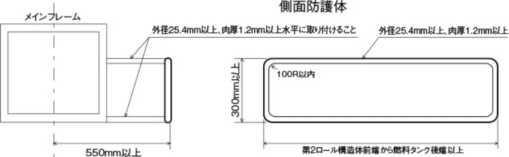</figure>
<p>第10−2図</p>
<h5 id="12-4-ロール構造体">12.4 ）ロール構造体</h5>
<p>12.4.1 ）安全構造の基本目的はドライバーの防護にある。この目的は設計の基本考察である。</p>
<p>12.4.2 ）すべての車両は少なくとも２つのロール構造体を装備しなければならない。</p>
<p>主要ロール構造体は、ドライバーの後方に位置しなければならない。</p>
<p>第２構造体は、ステアリングホイールの前方になければならないが、いかなる地点においてもステアリングホイールのリム上端の前方250mm以上前にあってはならない。</p>
<p>主要ロール構造体は、第２ロール構造体の後方に500mm以上離れていなければならない。</p>
<p>２つのロール構造体は、いかなる時でもそれらの頂点を結ぶ線より、ドライバーが正常に着座し、ヘルメットをかぶり、シートベルトを締めた状態の時、そのドライバーのヘルメットの頂点およびステアリングホイールのリム上端が下に来るような高さがなければならない。</p>
<p>12.4.3 ）第２ロール構造体は外径35mm以上、肉厚２mm以上の冷間仕上継目無鋼管を使用し、曲げはR125mm（外Ｒで測定し142.5mmの円弧に対して±５mm）以上の１回曲げで構成しなければならない。</p>
<p>12.4.4 ）主要ロール構造体の頂点は、コクピット底面から垂直に測定し、少なくとも950mm以上なければならない。</p>
<p>12.4.5 ）主要ロール構造体の頂点は、通常の運転姿勢におけるドライバーのヘルメットの頂点から少なくとも50mm以上、上方になければならない。</p>
<p>12.4.6 ）主要ロール構造体の頂点より50mm低いところを通る水平面上に構成される主要ロール構造体の垂直投影面積は最低10,000mm</p>
<p>2なければならない。</p>
<p>12.4.7 ）主要ロール構造体は、コクピット底面から垂直に高さ500mmの位置で、その全幅は400mm以上なければなら</p>
<p><span class="pagemark" id="p62">P.62</span>ない。主要ロール構造体は外径35mm以上、肉厚２mm以上の冷間仕上継目無鋼管を主材として使用し、その曲げ部はＲ50mm（外Ｒで測定し67.5mmの円弧に対して±５mm）以上の１回曲げで構成しなければならない。円弧の内心角は180°を超えてはならない。</p>
<p>12.4.8 ）主要ロール構造体より後方にのびる後方支持部材は、外径25.4mm以上、肉厚1.6mm以上の冷間仕上継目無鋼管を使用し、取り付けはフレーム構造体に連結されて強固に取り付けられなければならず、その角度は水平より60°以内でなければならない。</p>
<h5 id="12-5-側面ロール構造体">12.5 ）側面ロール構造体</h5>
<p>コクピット両側面には車体下面より最低500mmの高さに側面ロール構造体を取り付けること。</p>
<p>側面ロール構造体は、直径25.4mm以上、肉厚1.6mm以上の鉄パイプで構成され、主要構造体と第２構造体を強固に連結されなければならない。</p>
<h5 id="12-6-ロール構造体の強度">12.6 ）ロール構造体の強度</h5>
<p>主要ロール構造体および第２ロール構造体の頂点に、次の最小荷重が同時に加わっても耐えられるものでなければならない。</p>
<p>−1.5Ｗ横方向</p>
<p>−5.5Ｗ前後方向</p>
<p>−7.5Ｗ垂直方向</p>
<p>Ｗは4.802ＫＮ（490kgf）とする。</p>
<p>参加者は、車体製造責任者またはその設計者による証明書を、競技会の技術委員の求めに応じ提出しなければならない。</p>
<p>証明書には、このロール構造体の図面または写真が添付され、このロール構造体が上記荷重に耐え得ることが明記されていなければならない。</p>
<p>一般考察：</p>
<p>１）ボルト、ナットを使用する場合には、その数に応じて十分な最小寸法を必要とする。</p>
<p>その材質は最上級のものであること（航空機用）。</p>
<p>スクエアヘッドボルト、ナットは使用しないこと。</p>
<p>２）構造の主たる部分には継ぎ目の無い１本のパイプを使用し、曲折部分は滑らかに連続的に曲げられており、ひだ、あるいは壁部に欠損がないこと。</p>
<p>３）溶接は全体にわたって最高の技能を持って行われるべきである（通常アーク溶接、または特別の場合にはヘリアーク溶接が使われる）。</p>
<p>４）スペースフレーム構造に関し、ロール構造体はそれにかかる荷重を広い面積に分散するように車両に取り付けられることが重要である。ロール構造体を単一なパイプ、あるいは継ぎ足されたパイプに付帯させるだけでは不十分である。</p>
<p>それぞれの取り付け部にはガセットを使用しその断面積は使用するパイプの断面積以上の面積であること。</p>
<p>また、これらは強固に補強されていなければならない。</p>
<p>ロール構造体はフレームの延長として設計されるべきで、単なるフレームの付属として考えるべきではない。</p>
<p>基本構造の強度は十分な考慮が払われるべきである。例えば荷重を分散させるため補強バーあるいはプレートを付加すること。</p>
<h5 id="第-13-条-燃-料">第 13 条　燃　料</h5>
<p>第３章“公認車両および登録車両に関する一般規定”第10条10.1）「燃料−燃焼物」に従うこと。</p>
<figure><span class="pagemark" id="p63">P.63</span>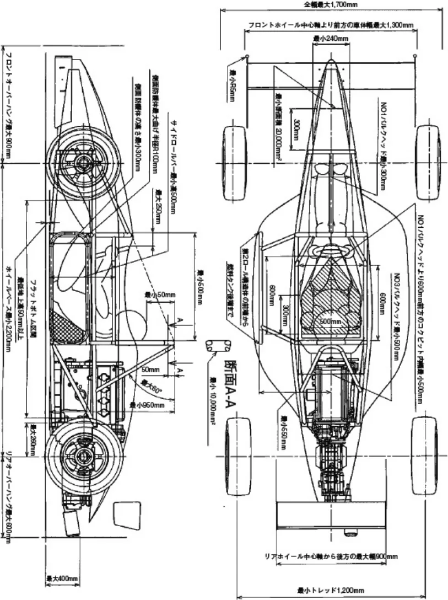</figure>
<p>第10−3図</p>
<figure>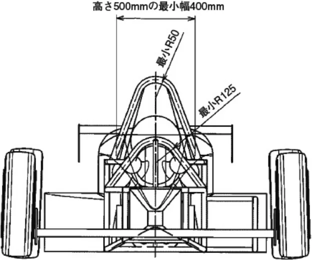</figure>
<p>第10−4図</p>
<h3 id="第-章"><span class="pagemark" id="p64">P.64</span>第９章　ＦＪ１５００（ＦＪ１５００）</h3>
<h5 id="第-条-規-定">第　１　条　規　定</h5>
<h5 id="改定に関する公表年月日">１.１ ）改定に関する公表年月日</h5>
<p>ＪＡＦは、毎年遅くとも１０月にこれらの規定に関する改定内容を発表し、通常、翌年の１月１日から施行する。</p>
<p>ただし、安全上の理由による改定は上記にかかわらず直ちに施行する。</p>
<h5 id="危険な構造">１.２ ）危険な構造</h5>
<p>自動車が危険とみなされた場合、その車両は競技会の審査委員会によって除外されることがある。</p>
<h5 id="規則の遵守">１.３ ）規則の遵守</h5>
<p>車両は、競技期間中いかなる時でも、これらの規則に合致していなければならず、第５編細則“ＦＪ１５００車両規定の競技会用実施細則”をも遵守すること。</p>
<h5 id="測-定">１.４　）測　定</h5>
<p>すべての測定は、車両が平坦な水平面の上に静止した状態で行われなければならない。</p>
<h5 id="競技参加者の義務">１.５　）競技参加者の義務</h5>
<p>競技参加者は競技期間中、いかなる時でも自己のＦＪ１５００車両が本規定に合致していることを、車両検査委員および競技会審査委員会に立証する義務がある。</p>
<h5 id="アクティブサスペンション">１.６　）アクティブサスペンション</h5>
<p>アクティブサスペンションは禁止される。</p>
<h5 id="材質規制">１.７　）材質規制</h5>
<p>以下の材質の使用は禁止される。</p>
<p>マグネシウム／チタニウム／カーボン繊維／アラミド繊維／PBO繊維（ザイロン繊維）。</p>
<h5 id="クロームメッキ">１.８　）クロームメッキ</h5>
<p>サスペンションに対するクロームメッキは禁止される。</p>
<h5 id="車体製造">１.９　）車体製造</h5>
<p>車体製造は、所管団体・協会の承認を得たメーカーによって製造される。</p>
<h5 id="第-条-車体と寸法">第　２　条　車体と寸法</h5>
<h5 id="車-幅">２.１　）車　幅</h5>
<p>ステアリングホイールを直進状態にしたときのコンプリートホイールを含む車体の全幅は、１,７００㎜を超えてはならない。</p>
<h5 id="フロントホイールの中心線より前方の幅">２.２　）フロントホイールの中心線より前方の幅</h5>
<p>フロントホイールの中心線より前方の車体は、幅１,３００㎜を超えてはならない。</p>
<h5 id="フロントホイールとリアホイールの間の幅と形状">２.３　）フロントホイールとリアホイールの間の幅と形状</h5>
<p>フロントホイールの中心線より後方とリアホイールの中心線の前方にある車体の最大幅は、１,３００㎜を超えてはならない。この中に側面防護体は含まれる。</p>
<p>リアホイールの中心線より前方の車体で、リアコンプリートホイールの高さより上方の車体のいかなる部分も、車両の縦方向軸の中心から４５０㎜を超えてはならない。</p>
<h5 id="リアホイールの中心線より後方の幅">２.４　）リアホイールの中心線より後方の幅</h5>
<p>リアホイールの中心線から後方の車体の幅は、９００㎜を超えてはならない。</p>
<h5 id="オーバーハング">２.５　）オーバーハング</h5>
<p>リアホイールの中心線より後方７５０㎜以上の所には、車両のいかなる部分もあってはならない。</p>
<p>後部衝撃吸収構造体、リアライト、およびその構造に取り付けられるジャッキアップポイントを除く、車両のいかなる部分も、リアホイール中心線より後方６００㎜を超えてはならない。（第２-５図）</p>
<p>フロントホイールの中心線より前方９００㎜以上の所には、車両のいかなる部分もあってはならない。</p>
<p>ホイールの中心線とは左右のハブセンター間を結ぶ中心線をいう。</p>
<figure><span class="pagemark" id="p65">P.65</span>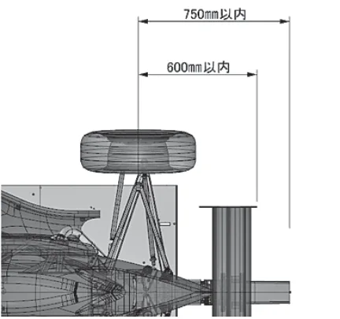</figure>
<p>第２-５図</p>
<h5 id="高-さ">２.６　）高　さ</h5>
<p>ドライバーが正常に着座し、また正常にレース装備した車両のいかなる部分も、安全ロール構造体を除き、地上から９００㎜を超えてはならない。</p>
<p>安全ロール構造体のうち、地上高９００㎜を超える部分は、車両の性能に大きく影響を与えるような空気力学的形状をもってはならない。</p>
<h5 id="ホイールベース-トレッド">２.７　）ホイールベース／トレッド</h5>
<p>最小ホイールベース：２,２００㎜</p>
<p>最小トレッド　　　：１,２００㎜</p>
<h5 id="フラットボトム">２.８　）フラットボトム</h5>
<p>２.８.１　）フロントコンプリートホイール後端とリアコンプリートホイールの後端との間にあって、サスペンション装置および駆動装置を除く車両の真下から見える車両のすべての構成部分は、±１０㎜の許容範囲内で１つの平面上（フラットボトム）に位置しなければならない。</p>
<p>フラットボトムの後端はリアホイール中心線からリアコンプリートホイール後端の間で終結しなければならない。これらすべての部分は、いかなる状況下にあっても、均一で、固形で、堅固に固定されており（車体／シャシー構成に関していかなる遊びもあってはならない）、水・空気を通さない面であること。（第２-８-１-ａ図）</p>
<p>また、フラットボトムの後端部は前方へ最小４０㎜最大８０㎜の範囲は上向きの湾曲面を形成しなければならない。後端部の高さは最小４０㎜最大５０㎜とする。</p>
<p>また、後端部には９０°±５°で１０㎜高さの形状を追加しなければならず、この高さは前文の後端部高さには含まれない。（第２-８-１-ｂ図）</p>
<figure>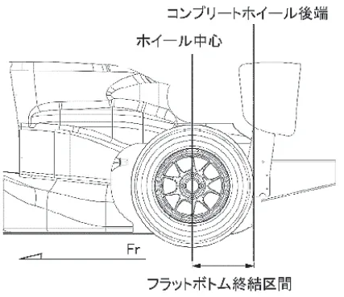</figure>
<figure>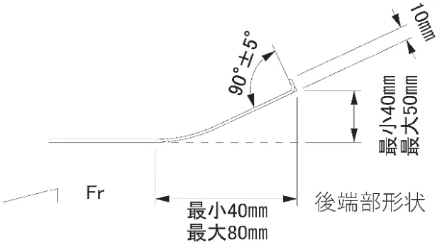</figure>
<p>第２-８-１-ａ図　　　　　　　　　　　　　　　　　　第２-８-１-ｂ図</p>
<p>２.８.２　）±１０㎜の許容差が、考えられる製造上の問題点を網羅するために規定に導入されているが、これは“フラットボトム”の精神に反する設計を許すためのものではない。</p>
<p>２.８.３　）いかなるスカートあるいは“フラットボトム”から突出している他の装置（上と同様に導入された±１０㎜の許容差）も、本条文に関連する規定に抵触するため、フラットボトム区画から取り除かなければならない。</p>
<p>２.８.４　）車両の底部を保護するため、スキッドブロックを配置しなければならない。</p>
<p>スキッドブロックをフラットボトムを構成するソリッドパネルに突出する形で取り付けること。</p>
<p>スキッドブロックは、以下の条件に従うこと。ただし、寸法内で分割を認める。</p>
<p>ａ）スキッドブロックは、フロントコンプリートホイール後端±１０㎜から縦方向にリアホイールの中心線の前方</p>
<p><span class="pagemark" id="p66">P.66</span>２８０㎜±１０㎜までの間に至るものであること。</p>
<p>ｂ）幅は３５０㎜以上で、車体の中心線を軸に左右対称に取り付けること。</p>
<p>ｃ）スキッドブロックは車両供給者によって供給される部品を取り付けること。</p>
<p>ｄ）スキッドブロックの材料は、木材・樹脂・FRPに限る。</p>
<p>ｅ）新しいスキッドブロックの場合、最小５㎜の一定の厚さであること。</p>
<p>ただし、地面との接触状態の確認のため塗布される塗料は寸法には含めない。</p>
<p>ｆ）スキッドブロックは局部的な欠損箇所を除き規定された形状は、競技会期間中常に維持されていること。</p>
<p>ｇ）使用後のスキッドブロックの適合性の検証は、第２-８-４図に示される直径８０㎜の穴３つの周囲のみを使って測定される。このすべての３つの穴の周囲の少なくとも１箇所で最低２㎜の厚さが遵守されていなければならない。</p>
<p>ｈ）スキッドブロックはフラットボトムに堅固に取り付けられていて、走行中の脱落はあってはならない。</p>
<figure>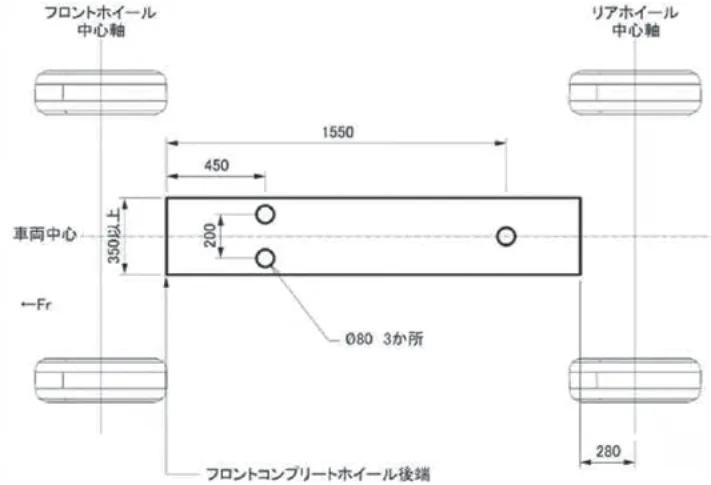</figure>
<p>第２-８-４図</p>
<p>２.８.５　）上記フラットボトムの後端より後方において地表と車両の主要部分との間を全面的あるいは部分的に遮断するような空気力学的構造物は一切禁止される。（ディフューザー構造等の禁止）</p>
<p>車両の空気力学的影響を有する特定の部分は：</p>
<p>－車体の主要部分にしっかりと取り付けられていなくてはならず、（しっかりと取り付けるとは、固定されていない部分があってはならないという意味である。）</p>
<p>－車体の突出部と固定されていなくてはならない。</p>
<p>車両の主要部と地表との間隙を連結するいかなる装置あるいは構造体は、あらゆる状況下でも禁止される。</p>
<p>いかなる状況下にあっても本条によって規定される表面によって生ずる幾何学平面より下部に位置してはならない。</p>
<h5 id="エンジンの搭載位置">２.８.６　）エンジンの搭載位置</h5>
<p>エンジンブロック背面（ベルハウジングと接する面）はリアホイールの中心線より３４０㎜以内とする。</p>
<h5 id="空気力学的装置">２.９　）空気力学的装置</h5>
<p>空気力学的装置は、２.９.１）に定める前後ウイングおよび翼端板であり、さらにドライバーが風・飛石等を防ぐため、開口部に沿って最小限のウインドスクリーンを取り付けることは許される。その取り付けは暫定的なものであってはならない。</p>
<p>リアアクスルセンターより後方で、かつリアアクスルセンターより下方にカウルを取り付けることは許されない。</p>
<h5 id="ウイング">２.９.１　）ウイング</h5>
<p>フロントウイングは１枚以下、リアウイングは２枚以下で構成されること。</p>
<p>ウイングは前方および上方から見て長方形であること。</p>
<p>各翼端板は平板とするが、フロントウイングの翼端板の前側（前から見えるすべての面）は半径５㎜以上の面を持つこととする。</p>
<p>前端の角部（上側、下側とも）には最小半径３５㎜のＲを付けることが推奨される。この場合Ｒ形状を形作る範囲に限り平板とならないことは認められる。</p>
<p>リアウイングを翼端板と車両を結ぶステーとして使用することができるが、前文に規定されるウイングの枚数に含まれる。</p>
<p><span class="pagemark" id="p67">P.67</span>予選／決勝レース時に各ウイングを取り外してはならない。</p>
<p>前後ウイング断面形状は第２-９-１図に規定される長方形のテンプレート内を通過するものとする。</p>
<figure>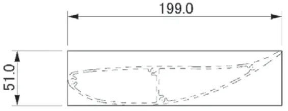</figure>
<p>第２-９-１図</p>
<h5 id="コクピット">２.１０　）コクピット</h5>
<h5 id="コクピット開口部">２.１０.１　）コクピット開口部</h5>
<p>コクピットに入るための開口部は図に示される水平板（テンプレート）が、第３ロール構造体を含まずにステアリングホイールを取り外した状態で車両上部から垂直に挿入できるものでなくてはならない。開口部はテンプレートを側面ロール構造体より下部へ２５㎜下げることが可能でなくてはならない。（第２-１０-１図）</p>
<p>測定時には、ドライバーサイドパッドは取り外すこと。</p>
<p>ドライバーは、ドアを開けたり、その他の部分を移動させることなく、乗降できなくてはならない。</p>
<figure>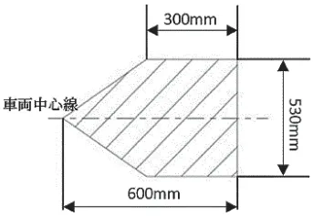</figure>
<p>第２-１０-１図</p>
<h5 id="脱出時間">２.１０.２　）脱出時間</h5>
<p>コクピットは、ドライバーが通常の位置に着座し、すべての運転装置を取り付け、安全ベルトを締めてステアリングホイールが最も不都合な状態にあっても、ドライバーが５秒以内に外に出られるよう設計されていなくてはならない。</p>
<h5 id="ステアリングホイール">２.１１　）ステアリングホイール</h5>
<p>ステアリングホイールは迅速に取り外せる機構を備えていなくてはならない。その開放（取り外し）方法は、ステアリングホイール後方のステアリングコラムに設置された同心円状のフランジを引く方法によるものでなくてはならない。ステアリングラックは、フロントアクスル軸より前方に取り付けなければならない。</p>
<p>ステアリングホイールに切れ目があってはならない。</p>
<p>スイッチ、メーター、その他の部品等を装着する場合、それらは突起した形状（トグルスイッチ等）であってはならず、ドライバーと対面するステアリングホイールリム全体で形成される平面よりドライバーに近いところに位置してはならない。</p>
<p>緩衝パッドの装着を推奨する。</p>
<h5 id="第-条-重-量">第　３　条　重　量</h5>
<h5 id="最低重量">３.１　）最低重量</h5>
<p>大会期間中を通じ５２５㎏を下回ってはならない。</p>
<p>また、最低重量検証時は、搭載燃料を排出されなければならない。</p>
<h5 id="バラスト">３.２　）バラスト</h5>
<p>バラストはその取り外しに工具を必要とするような方法で固定されるならば使用することが許される。技術委員が封印を施すことができるようなものでなければならない。</p>
<h5 id="第-条-エンジン">第　４　条　エンジン</h5>
<h5 id="エンジンの種類">４.１　）エンジンの種類</h5>
<p>国土交通省の指定を受けた量産車両に搭載されているエンジンを使用しなければならない。</p>
<h5 id="エンジンの形式">４.２　）エンジンの形式</h5>
<p>レシプロピストンによるエンジンのみ認められる。</p>
<h5 id="最大容積"><span class="pagemark" id="p68">P.68</span>４.３　）最大容積</h5>
<p>１,５００㏄を含み１,５００㏄までとする。</p>
<h5 id="シリンダーの最大数">４.４　）シリンダーの最大数</h5>
<p>最大４とする。</p>
<p>４.５　）過給装置は禁止されるが、走行風圧によるエンジンの吸気は認められる。</p>
<p>４.６　）シリンダーヘッドのバルブ数はシリンダー当たり４個とする。</p>
<h5 id="エンジンの改造限度">４.７　）エンジンの改造限度</h5>
<p>エンジンおよび補機は次の各項目を除き変更してはならない。ただし、シャシーにエンジンを搭載するための最小限の変更は許される。</p>
<p>ピストンは純正部品に限る。</p>
<h5 id="サーモスタット">４.８　）サーモスタット</h5>
<p>自由。</p>
<h5 id="オイルフィルター">４.９　）オイルフィルター</h5>
<p>自由。</p>
<h5 id="インテーク関連部品">４.１０　）インテーク関連部品</h5>
<p>インテーク部品は、所管団体・協会で管理されている登録部品のみ使用することができる。</p>
<h5 id="燃料ポンプ">４.１１　）燃料ポンプ</h5>
<p>自由。</p>
<h5 id="点火プラグ">４.１２　）点火プラグ</h5>
<p>自由。</p>
<h5 id="クラッチディスク">４.１３　）クラッチディスク</h5>
<p>クラッチディスクは当初の枚数を変更しなければ自由。</p>
<p>クラッチカバーは材質、形状を変えなければ、変更は許される。</p>
<h5 id="ファンベルト">４.１４　）ファンベルト</h5>
<p>自由。</p>
<h5 id="フライホイール">４.１５　）フライホイール</h5>
<p>鉄製に限り変更は許される。ただし、リングギア径寸法は保持されなければならない。</p>
<h5 id="オルタネーター">４.１６　）オルタネーター</h5>
<p>取り外しは許されない。また、発電機能は正常に機能していなければならない。</p>
<h5 id="性能の均等化">４.１７　）性能の均等化</h5>
<p>ＪＡＦは性能の均等化のため、事前予告をもって出力制限装置を取り付ける権利を留保する。</p>
<h5 id="排気管">４.１８　）排気管</h5>
<p>排気マニホールドは所管団体・協会で管理されているＪＡＦで承認された登録部品のみ使用することができる。また、防熱措置を施すことは許されるが、確認作業のため全面的に覆うことはできない。排気マニホールド後方部分はサイレンサーを除きφ５０.８のパイプを使用し、テールエンドはストレート形状とする。</p>
<p>排気管の出口は、それが水平に、かつ後方に向けられている場合、地面から４００㎜以下の高さでなければならない。走行中の可変装置は禁止される。</p>
<p>触媒装置の装着を義務付ける。装着する触媒装置はＪＡＦに申請し承認を受けたものとする。取付け位置は排気管最後端とし、取外しにより触媒装置内部を前後から容易に視認できる方式としなければならない。</p>
<h5 id="排気音量測定">４.１９　）排気音量測定</h5>
<p>すべての車両は第２章“レース車両の排気音量規制”に従うこと。</p>
<h5 id="クラッチ圧力センサー">４.２０　）クラッチ圧力センサー</h5>
<p>クラッチラインに変速機制御用の液圧スイッチを取り付けなければならない。</p>
<h5 id="第-条-始-動">第　５　条　始　動</h5>
<h5 id="始動装置">５.１　）始動装置</h5>
<p>電気エネルギー源による始動装置を車両に搭載しなければならず、ドライバーが正常に着座した状態で作動できなければならない。また、始動装置は常にエンジンを始動できるものでなくてはならない。</p>
<h5 id="エンジン始動">５.２　）エンジン始動</h5>
<p>グリッド上およびピットエリアにおいて、補助的に外部よりエネルギー源を、車両に一時的に接続してエンジン</p>
<p><span class="pagemark" id="p69">P.69</span>を始動することができる。</p>
<h5 id="第-条-駆動装置">第　６　条　駆動装置</h5>
<h5 id="駆-動">６.１　）駆　動</h5>
<p>車両は２輪でのみ駆動されなければならない。</p>
<h5 id="ギアボックスの型式">６.２　）ギアボックスの型式</h5>
<p>前進ギアの最大数は６段とし、使用できる変速ギアおよびデフギアは、ＪＡＦに申請し、承認を受けたもののみである。</p>
<h5 id="後退ギア">６.３　）後退ギア</h5>
<p>すべての車両は、競技期間中いかなる時にもエンジンがかかっている間、通常に使用できる後退ギアを備えていなくてはならない。</p>
<p>６.４　）横置きギアボックスおよびリアアクスル（リアホイールハブセンター）より前方のギアボックスは禁止される。</p>
<h5 id="ギアボックス">６.５　）ギアボックス</h5>
<p>使用できるギアボックスは、ＪＡＦに申請し承認を受けたギアボックスのみである。</p>
<h5 id="ディファレンシャル">６.６　）ディファレンシャル</h5>
<p>デフの差動を制限する装置は禁止される。</p>
<p>６.７　）セミオートマチックギアチェンジシステム（パドルシフトシステム）</p>
<p>６.７.１　）セミオートマチックギアチェンジシステムは所管団体・協会指定の供給業者によって製造されたものでなければいけない。</p>
<h5 id="第-条-サスペンション">第　７　条　サスペンション</h5>
<p>７.１　）コクピットから調整できるスタビライザーは禁止される。</p>
<p>７.２　）ダンパーは、所管団体・協会で承認されたもののみ、使用することができる。</p>
<h5 id="第-条-燃料パイプとタンク-ケーブルおよび電気装置">第　８　条　燃料パイプとタンク、ケーブルおよび電気装置</h5>
<h5 id="ライン-ケーブル-電気装置">８.１　）ライン／ケーブル／電気装置</h5>
<p>ケーブルラインおよび電気装置が、その取り付け位置／材質または連結方法等に関して航空機工業基準に準拠していない場合、次のことを生じるいかなる漏れもないよう取り付けられなければならない。</p>
<p>－コクピット内の液体たまり</p>
<p>－コクピット内への液体の侵入</p>
<p>－電線または電気装置と液体の接触</p>
<p>もし、ケーブルラインあるいは電気装置がコクピットを通過する、またはコクピット内に取り付けられている場合、それらは防火材でかつ液体の侵入を防ぐ材料によって完全に覆われていなければならない。</p>
<p>電気系、燃料系へのＭＩＬ規格品の使用は禁止される。</p>
<h5 id="パイプライン">８.２　）パイプライン</h5>
<p>すべての燃料の配管は最大作動温度１３５℃で、４.１MPa（４１bar）の最低破裂圧力を有していなければならない。</p>
<h5 id="燃料タンク">８.３　）燃料タンク</h5>
<p>下記に従い、ＪＡＦ／ＦＩＡ公認の安全燃料タンクの装着が義務付けられる。</p>
<p>Ａ）最大容量２０ℓまでのタンクを１個。なお、コレクタータンクを装着する場合は最大容量２ℓまでとする。取り付けは暫定的であってはならず、また、取り付けにより変形するようなことがあってはならない。また、漏出した燃料が滞留しない構造であること。</p>
<p>Ｂ）燃料タンクとコレクタータンクの取り付け位置はシートバックと主要ロール構造体のバルクヘッドの間とする。</p>
<p>Ｃ）すべての燃料タンクには、製造者名、タンクの製造に際し適用された仕様（規格）、製造月日が表示されていなければならない。</p>
<h5 id="燃料タンクの給油キャップ">８.４　）燃料タンクの給油キャップ</h5>
<p>燃料タンクの給油キャップは車体より突出してはならない。</p>
<p>衝撃の際や不完全なロックによりキャップが緩まないように設計されていなければならない。</p>
<p>燃料給油口は衝突により破損されないよう、ロール構造体後方に燃料補給のみを目的とした開口部を設けることができるが、エンジンの排気管とは反対側に取り付けなければならない。</p>
<p>空気孔はコクピットの後方２５０㎜以上の場所に位置すること。</p>
<h5 id="オイルキャッチタンク"><span class="pagemark" id="p70">P.70</span>８.５　）オイルキャッチタンク</h5>
<p>車両には最小２ℓのオイルキャッチタンクを装着しなければならない。ブリーザーはこのキャッチタンクに排出しなければならない。</p>
<p>この容器は透明なプラスチック製であるか、透明な窓わくを備えること。</p>
<p>ミッションケースより後方に位置してはならない。</p>
<h5 id="第-条-制動装置">第　９　条　制動装置</h5>
<h5 id="重回路">９.１　）２重回路</h5>
<p>すべての車両は、同一のペダルによって操作される少なくとも２系統の回路を有する制動装置を装備しなければならない。この装置の１つの回路に漏れ、もしくは欠陥が生じた場合でも、ペダルは少なくとも２輪のホイールを依然として制御できなければならない。</p>
<h5 id="ブレーキ圧の調整">９.２　）ブレーキ圧の調整</h5>
<p>アンチロックブレーキおよびパワーブレーキは禁止される。</p>
<h5 id="材質と加工">９.３　）材質と加工</h5>
<p>ブレーキディスクは鉄製に限定され、ディスクへの穴あけ、溝切りは禁止される。ベンチレーテッドディスクは禁止される。</p>
<h5 id="ブレーキキャリパー">９.４　）ブレーキキャリパー</h5>
<p>すべてのブレーキキャリパーは、同質の金属材で作られていなければならず、最大４ピストンまでとし、各ホイールにつき１個でなければならない。</p>
<h5 id="ブレーキダクト">９.５　）ブレーキダクト</h5>
<p>ブレーキを冷却するためのすべてのダクト類および空気力学的付加物はすべて禁止される。</p>
<h5 id="ブレーキ圧力センサー">９.６　）ブレーキ圧力センサー</h5>
<p>フェールセーフ用としてブレーキ配管中に圧力センサーを取り付けなければならない。</p>
<h5 id="第-条-タイヤとホイール">第１０条　タイヤとホイール</h5>
<h5 id="タイヤ">１０.１　）タイヤ</h5>
<p>競技専用タイヤの装着が許される。ただし、タイヤの径は左右同一でなければならない。</p>
<h5 id="ホイールの数">１０.２　）ホイールの数</h5>
<p>ホイールの数は４本に限定される。</p>
<h5 id="ホイールの寸法">１０.３　）ホイールの寸法</h5>
<p>ホイールの幅は６インチを超えてはならない。</p>
<p>ホイールリム径は１３インチを超えてはならない。</p>
<h5 id="材-質">１０.４　）材　質</h5>
<p>すべてのホイールは、均質の鉄またはアルミ合金で作られていなければならない。（ただし、アルミ合金の場合はＪＷＬまたはＶＩＡ規格に合致していること。）</p>
<h5 id="第-条-安全装置">第１１条　安全装置</h5>
<h5 id="消火器">１１.１　）消火器</h5>
<p>すべての車両は、内容量２㎏以上の粉末消火器、またはＦＩＡ国際モータースポーツ競技規則付則Ｊ項第２５３条７に記された消火剤および内容量、あるいは同第２５９条１４に記された消火器を、ドライバーが速やかに操作できるように搭載しなければならない。取り付け位置は車体構造の内側とし、コクピット内とエンジンルームに同時に散布する２系統の消火装置でなければならない。</p>
<h5 id="記載項目">１１.２　）記載項目</h5>
<p>１）以下の情報を各消火器に明記しなければならない：</p>
<p>ａ）容器の容量</p>
<p>ｂ）消火剤の種類</p>
<p>ｃ）消火剤の重量もしくは容量</p>
<p>ｄ）消火器の点検日</p>
<p>２）消火装置の点検日は、消火剤の充填期日もしくは前回点検期日から２年以内とする。（消火剤の充填日もしくは前回の点検期日から２年を過ぎて使用してはならない。）ただし、２年毎の点検を継続したとしても消火装置の製造者が定めた有効年数あるいは耐用年数を超えて使用することはできない。</p>
<p>－消火装置の製造者が、有効年数あるいは耐用年数を定めていない場合、その使用期限は製造期日（または初回</p>
<p><span class="pagemark" id="p71">P.71</span>充填期日）から７年間を目処とする。</p>
<p>－消火剤の充填日もしくは前回検査日の表示が年（月）表示である場合、有効期間の起算日は当該年（月）の末日とする。</p>
<p>３）２年毎に製造者、製造者が指定した工場、あるいは代理店などの有資格者による点検を受けること。</p>
<h5 id="電気回路開閉装置-サーキットブレーカー">１１.３　）電気回路開閉装置（サーキットブレーカー）</h5>
<p>ドライバーが安全ベルトを装着し、ステアリングホイールをつけ運転席に着座した状態で操作できる放電防止つきサーキットブレーカーによって、点火装置、燃料ポンプ、および電気回路を遮断することができなくてはならない。</p>
<p>スイッチはコクピットの右側に取り付けられ白い縁どりをした底辺が１００㎜の青い三角の中に赤色のスパークを描いた標識で表示されていなくてはならない。また、外部からでも容易に操作できるような構造になっていなければならない。</p>
<h5 id="後方視界用ミラー">１１.４　）後方視界用ミラー</h5>
<p>すべての車両は、ドライバーが後方と車両の両側を見ることができるよう取り付けられた最低２つのミラーを有していなくてはならない。</p>
<p>各ミラーの反射面の最小幅は１５０㎜で、少なくともそれが縦５０㎜にわたり維持されていなければならない。各コーナー部については最大半径１０㎜のＲが上記寸法内で許される。</p>
<p>技術委員は、通常に着座したドライバーが確実に後方車両を確認できるような検証を実施することができる。</p>
<h5 id="安全ベルト">１１.５　）安全ベルト</h5>
<p>２本の肩部ストラップ、２本の腰部ストラップおよび２本の脚部ストラップの装着が義務付けられる。</p>
<p>これらのストラップは、車両に確実に固定され、ＦＩＡ基準８８５３／２０１６に合致していなければならない。</p>
<h5 id="尾-灯">１１.６　）尾　灯</h5>
<p>すべての車両には、競技会中作動する少なくとも白熱球の２１ワット相当以上の明るさをもつリアライトを３個装備しなくてはならない。それらは、</p>
<p>１）後方からはっきりと見えること。</p>
<p>２）車両に正常に着座したドライバーによって点灯できるものでなくてはならない。</p>
<p>３）操作スイッチにより点灯した時には常時点滅する構造のものとする。</p>
<p>第１のライトは以下でなければならない。</p>
<p>４）車両の縦方向の中心線に対して９０°で後方に面していること。</p>
<p>５）車両の中心線より１００㎜以上の所に取り付けないこと。</p>
<p>６）地上から最低２７０㎜最高４００㎜のところにライトの中心があること。（第１１-６-６図）</p>
<p>７）その表面は最小２,０００㎟の面積を有すること。</p>
<p>さらに、２つのライトをリアウイング翼端板につけなければならない。</p>
<figure>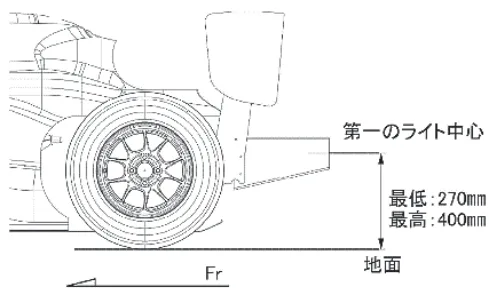</figure>
<p>第１１-６-６図</p>
<h5 id="ヘッドレスト・サイドパッド">１１.７　）ヘッドレスト・サイドパッド</h5>
<p>シャシーと接触することのないすべての領域にわたり、２００gsmの織物を３枚積層相当で作られたFRPのカバーが装着されていること。</p>
<p>すべての車両は、直径５０㎜のパッドを介し垂直に８３３Ｎ（８５㎏）の荷重を加えた時に、５０㎜以上変形しないヘッドレストを備えていなくてはならない。</p>
<p>ヘッドレストは、４０,０００㎟以上の領域にわたり、その厚さが５０～６０㎜の衝撃吸収材を有しなければならず、連続的であり、突出した部分があってはならない。</p>
<p>衝撃吸収材は、ＦＩＡが指定したCONFOR Form CF45（Blue）でなければならない。</p>
<p>また、正常な着座位置にあるドライバーのヘルメットの両側に直接沿う位置のコックピット両側の、少なくとも</p>
<p><span class="pagemark" id="p72">P.72</span>２５,０００㎟の領域にわたり、その厚さが５０～６０㎜の衝撃吸収材によるパッドを装備しなくてはならない。</p>
<p>ヘッドレスト、サイドパッドの上面は、少なくともコックピット開口部と同じ高さでなければならず、工具を使用しなくても取り外せるような構造になっていなければならない。固定具を使用する場合には、黄色による識別、あるいは矢印によりその所在が明確に表示されていなければならない。ヘッドレスト、サイドパッドは、事故による衝撃がドライバーの頭部に加わった時に、ドライバーのヘルメットが最初に接触する場所になければならない。</p>
<h5 id="第-条-安全構造">第１２条　安全構造</h5>
<h5 id="車体構造">１２.１　）車体構造</h5>
<p>１２.１.１　）車体の構造は左右対称でなければならない。すなわち、その車を水平にし、計量した場合、いずれの片側半分の重量も全体の重量の半分でなければならないが、その半分の重量の±５％の誤差が許される。車両はすべてのタンクを満たし（燃料、水、オイル）、バラストを除いた状態で計測される。</p>
<p>１２.１.２　）スペースフレーム前端のバルクヘッドから主要ロール構造体のバルクヘッドまでの間は、スペースフレームに厚さ１.６㎜の鉄板を溶接で組み合わせた構造でなければならない（フロントバルクヘッド、フロアパネル、サイドパネルの４面に取り付けなければならない）。この鉄板には機能部品の搭載構成上に必要な部分的な開口は許されるが、開口部は最小限の大きさでかつ大きな強度低下がおこらないように考慮されていなければならない。開口部にスペースフレームが存在する部位についてはこの限りではない。</p>
<p>１２.１.３　）スペースフレーム構造とは最低限主要となる４本のパイプを四隅に配置し、バルクヘッドと斜材とによりトラス構造をなすフレーム形式をいう。</p>
<p>１２.１.４　）スペースフレームをウォーターパイプおよびオイルパイプに併用してはならない。</p>
<p>１２.１.５　）主要となる４本のパイプは最外径２８㎜以上の真円で肉厚１.６㎜以上の丸パイプ、最外形の対向する二辺の長さが各々２８㎜以上で肉厚１.６㎜以上の正方形パイプのいずれかを使用しなければならない。</p>
<p>ドライバーの足部裏面からドライバー座席の背部までの範囲において上記の主要となる４本のパイプは車両の中心線から１５０㎜以上離れた場所に位置しなければならない。</p>
<p>１２.１.６　）フロント・サスペンション・アームの車体側取り付け点は車体構造すなわちスペースフレームの外側に位置しなければならず、取り付け点より車体構造の内部に向かう方向にはスペースフレームを構成するパイプ、または肉厚１.６㎜以上の鉄板がなければならない。</p>
<p>１２.１.７　）ドライバーの足部裏面からドライバー座席の背部までのいかなる点でもコクピットの内部断面積は８０,０００㎟以下であってはならず、また最小幅はコクピットの全長を通じ３００㎜以上で、主要ロール構造体の前部から前方へ６００㎜の部分については５３０㎜以上を確保しなければならない。ただし、四隅に配置される主要となるパイプ以外でフレーム底面を構成するパイプは上記の最小幅に含まれない。</p>
<p>１２.１.８　）主要ロール構造体バルクヘッドから後方のスペースフレームはベルハウジングで終了してもよい。</p>
<p>１２.１.９　）ドライバーが通常に着座した状態で、操作されていない位置にあるペダルの上に乗せられた足の裏は、フロントホイール中心線より前方に位置してはならない。</p>
<h5 id="衝撃吸収構造体">１２.２　）衝撃吸収構造体</h5>
<h5 id="前部衝撃吸収構造体">１２.２.１　）前部衝撃吸収構造体</h5>
<p>前部衝撃吸収構造体はフロントバルクヘッドの前方３００㎜の位置に少なくとも２０,０００㎟の断面を有し、フロントバルクヘッドと接する部分の断面は横２４０㎜以上、縦２５０㎜以上でなければならない。</p>
<p>この前部衝撃吸収構造体は前面、上下左右面で構成され、取り付けに際しての最小の曲げ加工（最大曲げ半径１０ ㎜）を除き平面板でなければならず、取り付けボルトは６本以上とする。</p>
<p>前部衝撃吸収構造体部材はアルミニウム合金５０５２またはこれと同等以上の強度を有していなければならない。部材の肉厚は３㎜を下回ってはならない。軽量化のための穴とアンチロールバー等を取り付けるための最小限の切り欠きは許されるが、シャシコンストラクターが販売した状態からの改造は許されない。</p>
<p>前部衝撃吸収構造体の中にバッテリーを搭載してはならない。</p>
<h5 id="後部衝撃吸収構造体">１２.２.２　）後部衝撃吸収構造体</h5>
<p>後部衝撃吸収構造体はリアホイール中心線より後方７５０㎜以内に位置し取付けられる。</p>
<p>車両後部中心に６点以上のボルトで強固に固定され、取り付け部面積２４０,０００㎟以上の断面を有すること。取り付け部より後方２５０㎜の位置に少なくとも１３,０００㎟の面積でなければならない。</p>
<p>これらを構成する部材はアルミ合金５０５２、厚み２.０㎜またはこれと同等以上の強度を有していなければならない。</p>
<p>この部分にアンチロールバー、リアウイングステー、テールランプ、ジャッキアップポイントを設置しても良く、取り付けのために最小限の切り欠きは許されるが、シャシコンストラクターが販売した状態からの改造は許されな</p>
<p><span class="pagemark" id="p73">P.73</span>い。</p>
<figure>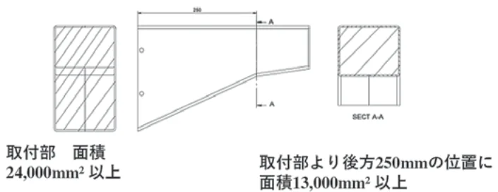</figure>
<p>第１２-２-２図</p>
<h5 id="側面防護体">１２.３　）側面防護体</h5>
<p>ドライバーを防護するために、車両の両側に側面防護体を設けなければならない。</p>
<p>側面防護体の構造は、車両の中心線から最小５６５㎜のところに高さ３５０㎜以上、前後長さは燃料タンク後端から前方６００㎜以上まで覆うもので、外径２５.４㎜以上、肉厚１.２㎜以上のパイプで四角い構造とし、角は半径１００㎜（外Ｒで測定し１１２.７㎜の円弧に対して±５㎜）以内で曲げることが出来る。</p>
<p>四角い構造材のパイプ中央を外径２５.４㎜以上、肉厚１.２㎜以上のパイプで繋ぐものとする。</p>
<p>この四角い構造材とメインフレーム間は、上下各２本の外径２５.４㎜以上、肉厚１.２㎜以上のハイプを水平な配置で繋げなければならない。</p>
<p>この水平に配置されたパイプの取り付け高さは、側面防護体の半径１００㎜以内とする。</p>
<p>パイプ同士の取付け間隔は上下が最低１００㎜、上側同士および下側同士は３００㎜以上離れていなければならない。</p>
<p>側面防護体およびこれを構成する取付け水平パイプは、上面および車体側面から見てすべて側面防護体カウルにて覆われていなければならない。</p>
<p>側面防護体カウルは車体側面から見て側面防護体をすべて覆わねばならず、かつ側面には穴やスリット等の空気が通過できる構造であってはならない。ただし、側面防護体の最後端より後方はこの限りではない。側面防護体カウルの材質はＦＲＰに限定する。</p>
<figure>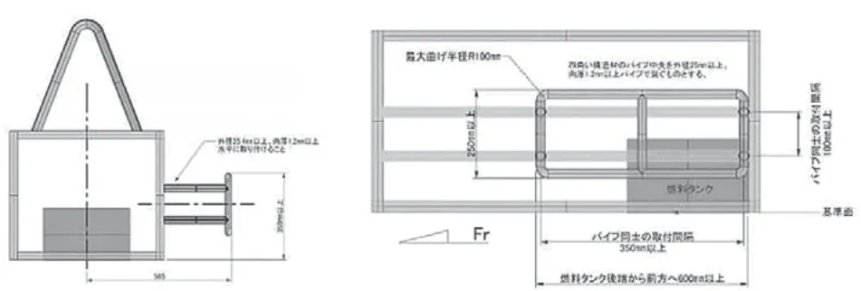</figure>
<p>第１２-３図</p>
<h5 id="ロール構造体">１２.４　）ロール構造体</h5>
<p>１２.４.１　）安全構造の基本目的はドライバーの防護にある。この目的は設計の基本考察である。</p>
<p>１２.４.２　）すべての車両は少なくとも３つのロール構造体を装備しなければならない。</p>
<p>主要ロール構造体は、ドライバーの後方に位置しなければならない。</p>
<p>第２ロール構造体は、ステアリングホイールの前方になければならない。</p>
<p>ステアリングホイールのリム上端は主要ロール構造体の前方６５０㎜より後ろにあってはならない。</p>
<p>主要ロール構造体は、第２ロール構造体の後方に８００㎜以上離れていなければならない。</p>
<p>第３ロール構造体は、第２ロール構造体上部に、後部はスペースフレームに溶接により取付けられる。後方溶接部は側面水平視した際に、コクピット底面に対して垂直に配置された主要ロール構造体の前面部と第３ロール構造体の上面の交点の高さが６７５㎜を通る位置にならなければならない。（第１２-４-２図 線①）</p>
<p>第３ロール構造体の頂点は、コクピット底面に対して垂直に配置された主要ロール構造体の前面部と頂点との交点を基準点とし、基準点から前方に６４０㎜下方に１２０㎜の高さになければならない。（第１２-４-２図 線②）</p>
<p>ドライバーのヘルメットとステアリングホイールは、以下の２本の線の下に来るように配置されなければならない。</p>
<p>・第３ロール構造体の前部取り付け位置と主要ロール構造体の最高点の垂直に７５㎜下の点との間を結ぶ線。</p>
<p><span class="pagemark" id="p74">P.74</span>・第３ロール構造体の最高点の接線で、基準面に対して４.０°±１°となる線</p>
<p>ドライバーの頭部が過度に突き出すことのないよう、また横方向の視界を良好に維持するため、ドライバーが通常に着座し、頭部を可能な限り後方にして真っ直ぐ前を見た時、ドライバーの目は車両の横から見て見えなければならない。</p>
<p>本項で規定する各寸法は、±１０㎜の許容範囲とする。</p>
<figure></figure>
<p>第１２-４-２図</p>
<p>１２.４.３　）第２ロール構造体はφ２８.６、ｔ=２.０以上の継目無鋼管を２本用いて構成し、曲げはＲ１２５㎜（外Ｒで測定し</p>
<p>１４２.５㎜の円弧に対して±５㎜）以上の１回曲げで構成しなければならない。</p>
<p>パイプ間上部は、板厚１.６㎜以上の鉄板を使用する。第３ロール構造体のセントラルパイロン接合部となる頂点の高さはコクピット底面より６００㎜でなければならない。（許容範囲は±１０㎜とする。）</p>
<p>１２.４.４　）主要ロール構造体は、コクピット底面から垂直に測定し、少なくとも９５０㎜以上なければならない。</p>
<p>１２.４.５　）主要ロール構造体の頂点は、通常の運転姿勢におけるドライバーのヘルメットの頂点から少なくとも５０㎜以上、上方になければならない。</p>
<p>１２.４.６　）主要ロール構造体の頂点より３００㎜低いところを通る水平面上に構成される主要ロール構造体の垂直投影面積は最低３８,０００㎟なければならない。</p>
<p>１２.４.７　）主要ロール構造体は、コクピット底面から垂直に高さ５００㎜の位置で、その全幅は４００㎜以上なければならない。主要ロール構造体は外径３５㎜以上、肉厚２mm以上の冷間仕上継目無鋼管を主材として使用し、その曲げ部はＲ ５０㎜（外Ｒで測定し６７.５㎜の円弧に対して±５mm）以上の１回曲げで構成しなければならない。円弧の内心角は１８０°を超えてはならない。</p>
<p>１２.４.８　）主要ロール構造体より後方にのびる後方支持部材は、外径２５.４㎜以上、肉厚１.６㎜以上の冷間仕上継目無鋼管を使用し、取り付けはフレーム構造体に連結されて強固に取り付けられなければならず、主要ロール構造体側面には、板厚１.６㎜以上の鉄板をはらなければならない。</p>
<p>１２.４.９　）第３ロール構造体の主要パイプは所管団体・協会で強度確認を行った部材を使用すること。</p>
<p>第３ロール構造体の外径は４４㎜以上肉厚２.０mm以上の引抜継目無鋼管を主材として使用し、同一曲率半径で構成しなければならない。パイプは頂部中央で突合せ溶接等により接合しても差し支えないが、接合部の外径・肉厚および強度は母材と同等以上とし、周方向全溶接を施すこと。</p>
<p>取り付けは、第２ロール構造体とフレーム構造体に溶接締結とし、強度を確保するための補強部材を必要とする。</p>
<figure><span class="pagemark" id="p75">P.75</span></figure>
<p>第１２-４-９図</p>
<h5 id="側面ロール構造体">１２.５　）側面ロール構造体</h5>
<p>コクピット両側面にはコクピット底面より最低５００㎜の高さに側面ロール構造体を取り付けること。</p>
<p>側面ロール構造体は、直径２８㎜以上、肉厚２.０㎜以上の鉄パイプで構成され、主要構造体と第２ロール構造体を強固に連結されなければならない。</p>
<h5 id="ロール構造体の強度">１２.６　）ロール構造体の強度</h5>
<p>１２.６.１　）主要ロール構造体の頂点に、次の最小荷重を加えた時に、その変形は荷重軸に沿って測定して５０㎜以下でなければならない。</p>
<p>－　　７.７ｋＮ 横方向内向き　（１.５Ｗ）</p>
<p>－２８.３ｋＮ 前後方向後向き（５.５Ｗ）</p>
<p>－３８.６ｋＮ 垂直方向下向き（７.５Ｗ）</p>
<p>※Ｗは５.１５ｋＮ（５２５kgf）とする。</p>
<p>主要ロール構造体と第３ロール構造体は、モノコックフレーム完成状態で試験荷重に耐えられなければならない</p>
<p>１２.６.２　）第３ロール構造体の強度要件として、以下の２つの試験荷重が加わっても耐える物を使用しなければならない。</p>
<p>試験１　５６.６ｋＮ 縦方向後向き　（１１.０Ｗ）</p>
<h5 id="垂直方向下向き">９７.９ｋＮ 垂直方向下向き（１９.０Ｗ）</h5>
<p>その変形は荷重軸に沿って測定して１７.５㎜以下でなければならない。</p>
<p>試験２　７７.３ｋＮ 縦方向後向き　（１５.０Ｗ）</p>
<h5 id="横方向内側向き">８５.０ｋＮ 横方向内側向き（１６.５Ｗ）</h5>
<p>その変形は荷重軸に沿って測定して４５㎜以下でなければならない。</p>
<p>※Ｗは５.１５ｋＮ（５２５kgf）とする。</p>
<p>主要ロール構造体と第３ロール構造体は、モノコックフレーム完成状態で試験荷重に耐えられなければならない</p>
<p>１２.６.３　）車体製造責任者は所管団体・協会に、主要及び第３ロール構造体に対する認可を取らなければならない。所管団体・協会は安全の観点からこれを審査し可否を判断する。</p>
<h5 id="ホイールテザー">１２.７　）ホイールテザー</h5>
<p>ホイールとの結合を保つすべてのサスペション連結部が破損した際にホイールが車両から外れるのを防ぐためにホイールテザーを取り付けなければならない。テザーの素材としての強度要件は破断荷重が１,５００ｋＮ以上であること。両端のループ構造は素材の破断強度以上であること。</p>
<p>テザーの擦れ摩耗を防ぐ為保護カバーをテザーに取り付けること。</p>
<p>テザーの主材質は、ステンレスワイヤーに限る。</p>
<p>一般考察：</p>
<p>１）ボルト、ナットを使用する場合には、その数に応じて十分な最小寸法を必要とする。</p>
<p>その材質は最上級のものであること（航空機用）。</p>
<p>スクエアヘッドボルト、ナットは使用しないこと。</p>
<p>２）構造の主たる部分には継ぎ目の無い１本のパイプを使用し、曲折部分は滑らかに連続的に曲げられており、ひ</p>
<p><span class="pagemark" id="p76">P.76</span>だ、あるいは壁部に欠損がないこと。</p>
<p>３）溶接は全体にわたって最高の技能を持って行われるべきである（通常アーク溶接、または特別の場合にはヘリアーク溶接が使われる）。</p>
<p>４）スペースフレーム構造に関し、ロール構造体はそれにかかる荷重を広い面積に分散するように車両に取り付けられることが重要である。ロール構造体を単一なパイプ、あるいは継ぎ足されたパイプに付帯させるだけでは不十分である。</p>
<p>それぞれの取り付け部にはガセットを使用しその断面積は使用するパイプの断面積以上の面積であること。</p>
<p>また、これらは強固に補強されていなければならない。</p>
<p>ロール構造体はフレームの延長として設計されるべきで、単なるフレームの付属として考えるべきではない。</p>
<p>基本構造の強度は十分な考慮が払われるべきである。例えば荷重を分散させるため補強バーあるいはプレートを付加すること。</p>
<h5 id="第-条-燃-料">第１３条　燃　料</h5>
<p>第３章“公認車両および登録車両に関する一般規定”第１０条１０.１）「燃料−燃焼物」に従うこと。</p>
<figure></figure>
<p>第１０-３図</p>
<figure><span class="pagemark" id="p77">P.77</span></figure>
<p>第１０-４図</p>
<h3 id="第10章"><span class="pagemark" id="p78">P.78</span>第10章　Ｆｏｒｍｕｌａ Ｂｅａｔ（Ｆ−Ｂｅ）</h3>
<h5 id="第-1-条-規-定-2">第 1 条　規　定</h5>
<h5 id="1-1-改定に関する公表年月日-2">1.1 ）改定に関する公表年月日</h5>
<p>ＪＡＦは、毎年遅くとも10月にこれらの規定に関する改定内容を発表し、通常、翌年の１月１日から施行する。</p>
<p>ただし、安全上の理由による改定は上記にかかわらず直ちに施行する。</p>
<h5 id="1-2-エアリストリクターについての変更">1.2 ）エアリストリクターについての変更</h5>
<p>ＪＡＦは性能の均衡化のため、エアリストリクターの寸法を変更することができる。</p>
<h5 id="1-3-危険な構造">1.3 ）危険な構造</h5>
<p>自動車が危険とみなされた場合、その車両は競技会の審査委員会によって除外されることがある。</p>
<h5 id="1-4-規則の遵守">1.4 ）規則の遵守</h5>
<p>車両は、競技期間中いかなる時でも、これらの規則に合致していなければならず、第５編細則“Ｆｏｒｍｕｌａ Ｂｅａｔ車両規定の競技会用実施細則”をも遵守すること。</p>
<h5 id="1-5-測-定">1.5 ）測　定</h5>
<p>すべての測定は、車両が平坦な水平面の上に静止した状態で行われなければならない。</p>
<h5 id="1-6-競技参加者の義務">1.6 ）競技参加者の義務</h5>
<p>競技参加者は競技期間中、いかなる時でも自己のＦ-Be車両が本規定に合致していることを、車両検査委員および競技会審査委員会に立証する義務がある。</p>
<h5 id="1-7-材質-加工規制">1.7 ）材質／加工規制</h5>
<h5 id="1-7-1-材質規制">1.7.1 ）材質規制</h5>
<p>以下の材質は使用を禁止する。</p>
<p>チタニウム／カーボン／アラミド繊維／インコネル。</p>
<p>サバイバルセル、ホイールテザー、ボディカウル、エンジンエアボックスおよびシャシー前部横断隔壁の前方の独立した衝撃吸収構造体、車両最後端下部の独立した衝撃吸収体に関してのみ、カーボン／アラミド繊維を使用することができる。</p>
<h5 id="1-7-2-加工規制">1.7.2 ）加工規制</h5>
<p>DLC加工（類似した加工、表面処理を含む）は禁止する。</p>
<h5 id="1-8-クロームメッキ-2">1.8 ）クロームメッキ</h5>
<p>サスペンションに対するクロームメッキは禁止される。</p>
<h5 id="第-2-条-車体と寸法-2">第 2 条　車体と寸法</h5>
<h5 id="2-1-車-幅-2">2.1 ）車　幅</h5>
<p>2.1.1 ）ステアリングホイールを直進状態にしたときのコンプリートホイールを含む車体の全幅は1,750mmを超えてはならない。</p>
<h5 id="2-1-2-フロントホイールの中心線より前方の幅">2.1.2 ）フロントホイールの中心線より前方の幅</h5>
<p>フロントホイールの中心線より前方の車体の全幅は1,400mmを超えてはならない。</p>
<h5 id="2-1-3-フロントホイールとリアホイールの間の形状">2.1.3 ）フロントホイールとリアホイールの間の形状</h5>
<p>フロントホイールの中心線より後方とリアホイールの中心線の前方にある車体の最大幅は1,400mmを超えてはならない。この中に衝撃吸収構造体は含まれる。</p>
<p>エアボックスを除き、リアホイールの中心線より前方の車体で、リアコンプリートホイールの高さより上方の車体のいかなる部分も、車両の縦方向軸の中心から450mmを超えてはならない。</p>
<h5 id="2-1-4-リアホイールの中心線より後方の幅">2.1.4 ）リアホイールの中心線より後方の幅</h5>
<p>リアホイールの中心線から後方の車体の幅は、900mmを超えてはならない。</p>
<h5 id="2-2-オーバーハング">2.2 ）オーバーハング</h5>
<p>リアホイールの中心線より後方600mm以上の所に車両のいかなる部分もあってはならない。</p>
<p>但し、地上から400mm以下の高さで、車両の縦方向軸の中心から150mm以下の部分に、リアホイールの中心線より後方850mm以下に衝撃吸収体を置くことが出来る。</p>
<p>フロントホイールの中心線より前方1,100mm以上の所には、車両のいかなる部分もあってはならない。</p>
<p>ホイールの中心線とは左右のハブセンター間を結ぶ中心線をいう。</p>
<h5 id="2-3-高-さ"><span class="pagemark" id="p79">P.79</span>2.3 ）高　さ</h5>
<p>ドライバーが正常に着座し、また正常にレース装備した車両のいかなる部分も、安全ロール構造体と安全ロール構造体に接している車体を除き、地上から950mmを超えてはならない。</p>
<p>安全ロール構造体と安全ロール構造体に接している車体のうち、地上高950mmを超える部分は、車両の性能に大きく影響を与えるような空気力学的形状をもってはならず、安全ロール構造体の高さを超えてはならない。</p>
<h5 id="2-4-ホイールベース-トレッド">2.4 ）ホイールベース／トレッド</h5>
<p>最小ホイールベース：2,000mm</p>
<p>最小トレッド　　　：1,200mm</p>
<h5 id="2-5-フラットボトム">2.5 ）フラットボトム</h5>
<p>2.5.1 ）前部コンプリートホイールの後端と後部コンプリートホイールの前端との間にあって、車両の真下から見える車体のすべての構成部分は、±10mmの許容範囲内で１つの平面上（フラットボトム）に位置しなければならない。ただし、後方視界を得るために装備されるミラーとその取り付けステーはこの構造体部分に含まれない。</p>
<p>また、フラットボトムの後端はリアコンプリートホイールの前端より後方でリアコンプリートホイール軸で終結しなければならない。これらすべての部分は、いかなる状況下にあっても、均一で、固形で、堅固で、硬直なソリッドパネルのみが許され（ハニカムサンドイッチ構造は認められる）（車体／シャシー構成部にしっかりと取り付けられていること）不浸透性の表面でなければならず、これらの部分によって形成される表面の周囲は、最大半径50mmの上向きに湾曲させることができる。フラットボトム後端部の形状は、上向きに平面で立ち上げることが許されるが、その高さはフラットボトムを形成する平面から上方に20mm以内とする。</p>
<p>2.5.2 ）±10mmの許容差が、考えられる製造上の問題点を網羅するために規定に導入されているが、これは“フラットボトム”の精神に反する設計を許すためのものではない。</p>
<p>2.5.3 ）いかなるスキッド、スカートあるいは“フラットボトム”から突き出している他の装置（上と同様に導入された±10mmの許容差）も、本条文に関連する規定に抵触するため、フラットボトム区画から取り除かなければならない。</p>
<p>2.5.4 ）車両の底部を防護するため、スキッド板をフラットボトムを構成するソリッドパネルに突出する形で最大４枚まで取り付ける事は許される。このスキッド板は長方形で３００ｍｍ×１,０００ｍｍ以下のサイズで、厚さは６ｍｍ以下である事。周囲に最大Ｒ６の形状を持つ事は許される。スキッド板は車両中心軸に対称に取付けなければならない。スキッド板は連続して取り付けても良い。スキッド板の材質はアルミニウム合金、木材、樹脂のいずれかに限られる。スキッド板はフラットボトムに堅固に取り付けられていて、走行中の脱落はあってはならない。但し、摩滅による形状変化は許容される。取り付けには接着とアルミニウムファスナーの併用が推奨される。</p>
<p>2.5.5 ）フロントホイール軸より前方と車両の縦方向軸の中心線から200mm以上離れたすべての車体構造は、“フラットボトム”により形成される平面より車両上方になければならない。</p>
<p>2.5.6 ）上記フラットボトムの後端より後方において地表と車両の主要部分との間を全面的あるいは部分的に遮断するような空気力学的構造物は一切禁止される。（ディフューザー構造等の禁止）</p>
<h5 id="2-6-空気力学的装置">2.6 ）空気力学的装置</h5>
<p>車両の空気力学的性能に影響する車両の他のすべての特定の部分は、本条文に関連する規定を遵守していなければならない。ウイングは、末端の板状部（翼端部）、その取り付け部品を含め柔軟であってはならず、初期の形状、取り付け位置を走行中の接触などによる変形を除きいかなる場合も維持しなければならない。</p>
<p>車両の空気力学的影響を有する特定の部分は：</p>
<p>‐車体に関する規則に合致していなくてはならず、</p>
<p>‐車体の主要部分に完全に取り付けられていなくてはならず（しっかりと取り付けられるとは、固定されていない部分があってはならないという意味である。）</p>
<p>‐車体の突出部と固定されていなくてはならない。</p>
<p>車両の主要部と地表との間隙を連結するいかなる装置あるいは構造体は、あらゆる状況下でも禁止される。</p>
<p>いかなる状況下にあっても本条によって規定される表面によって生ずる幾何学平面よりスキッド板を除き下部に位置してはならない。</p>
<h5 id="2-7-ウイング">2.7 ）ウイング</h5>
<p>フロントウイングは3枚以下、リアウイングは２枚以下で構成されていること。左右に独立した構成は２枚と数える。ウイングの形状は前方および上方から見て長方形であり、各ウイングは車両の縦方向軸に垂直方向に同一断面形状を維持しなくてはならない。</p>
<p><span class="pagemark" id="p80">P.80</span>各ウイングにガーニーフラップの取り付けが許されるが、外形形状は平板であれば自由、ただし同一断面形状をなすウイングの後端から前後30ｍｍ範囲に限り許される。このガーニーフラップとウイングとの間に隙間を開けてはならない。</p>
<p>各ウイングには平板の翼端板を設ける事ができる。フロントウイングの翼端板の全ての角部（上側、下側共）には車両側方から見て、最小半径35mmのＲを付けなければならない。また、平板の周囲は、半径５mm以上の円弧の断面形状を持つこととする。このＲ形状を形作る範囲は平板とならなくてもよい。</p>
<p>フロントウイングの翼端板と車体を結ぶステーをウイングと平行に設けることができる。ただし、このステーは直線で、その断面形状は真円に限る。また、車両の前方、上方から見て車両の左右のステーは直線に配置されなければならない。リアウイングの翼端板と車両を結ぶステーをウイングと平行に設けることができる。ただし、このステーは直線でその位置はリアホイールセンターより上方であり、このステーをウイングとはみなさない。</p>
<h5 id="2-8-コクピット">2.8 ）コクピット</h5>
<h5 id="2-8-1-コクピット開口部">2.8.1 ）コクピット開口部</h5>
<p>コクピットに入るための開口部は図に示される水平板（テンプレート）がステアリングホイールを取り外した状態で車両上部から垂直に挿入できるものでなくてはならない。テンプレートをコクピットの開口部の最下端より下に25mm下げることが可能でなくてはならない。</p>
<p>測定時には、ドライバーサイドパッドは取り外すこと。</p>
<p>ドライバーは、ドアを開けたり、その他の部分を移動させることなく、乗降できなくてはならない。</p>
<figure></figure>
<p>第11−1図</p>
<h5 id="2-8-2-脱出時間">2.8.2 ）脱出時間</h5>
<p>コクピットは、ドライバーが通常の位置に着座し、すべての運転装置を取り付け、安全ベルトを締めてステアリングホイールが最も不都合な状態にあっても、ドライバーが５秒以内に外に出られるように設計されていなければならない。</p>
<h5 id="第-3-条-重-量-2">第 3 条　重　量</h5>
<h5 id="3-1-車両の最低重量">3.1 ）車両の最低重量</h5>
<p>大会期間中を通じ570kgを下回ってはならない。</p>
<h5 id="3-2-バラスト-2">3.2 ）バラスト</h5>
<p>バラストはその取り外しに工具を必要とするような方法で固定されるならば使用することが許される。技術委員が封印を施すことができるようなものでなければならない。</p>
<h5 id="第-4-条-エンジン-3">第 4 条　エンジン</h5>
<h5 id="4-1-エンジンの種類-2">4.1 ）エンジンの種類</h5>
<p>レシプロピストンによる一般市販エンジンが使用できる。一般市販とは、誰もが容易に購入できるよう、価格と販路が公開される事である。ただし性能の均等化の為、新規に使用するレース用エンジンは吸気系、電気系の補機を含め（エキゾーストパイプを除く）ＪＡＦに申請し、承認を受けなければならない。</p>
<h5 id="4-1-1-最大容積">4.1.1 ）最大容積</h5>
<p>2,000ccを含み2,000ccまでとする。</p>
<h5 id="4-1-2-シリンダーの最大数">4.1.2 ）シリンダーの最大数</h5>
<p>最大４とする。</p>
<h5 id="4-1-3-過給装置は禁止される">4.1.3 ）過給装置は禁止される。</h5>
<h5 id="4-2-吸気系統">4.2 ）吸気系統</h5>
<p>シリンダーヘッドとスロットルリングフランジの外側の間にある吸気系統すべての要素。</p>
<h5 id="4-3-エンジンの改造"><span class="pagemark" id="p81">P.81</span>4.3 ）エンジンの改造</h5>
<p>規定によって許されていないすべての変更および調整、仕上げは厳禁される。</p>
<p>エンジンに対して行うことのできる作業は、エンジン性能の個体差をなくし、性能を向上させると同時に恒久的にコストの削減を目的とした作業のみである。</p>
<p>具体的には鋭角部の除去、角部のＲ作業、シリンダーヘッドポート内の研磨加工、クリアランスの調整作業である。ただし、元の寸法を変更することは許されない。元の寸法とは申請され承認を受けたエンジンの諸元表に記載された寸法のことである。</p>
<p>圧縮比は可変であってはならず、１４：１を超えてはならない。ピストンは鍛造品の使用を認める。ただし、ピストンピン径とリングの本数は一般市販エンジンのピストンと同じであること。</p>
<p>ピストン以外の部品でも一般市販エンジンの部品が製造中止になった場合、ＪＡＦに承認されたＦ-Ｂｅレース用エンジン製造者の指定した部品への交換が許される。ただし、基本寸法は元の一般市販エンジン部品と同じとする。</p>
<p>これら以外に使用による磨耗事故によって損傷した部品は、いずれも損傷した部品と全く同一の日本国内で購入できる（輸出用を含む）部品によってのみ交換が許される。シリンダーヘッドとエアボックスの間の吸気装置は自由とする。</p>
<p>ただし、吸気系の長さを可変できる装置、およびそれに類する装置はすべて禁止する。また空気の量をコントロールするスロットルバルブの径は最小43mm、最大45mmで最大４個までとする。但し、シングルスロットルの場合はこの限りではない。吸／排気ポートの切削による加工は自由。ただし、肉盛り等、材料の付加は方法の如何を問わず許されない。また、ポートに対するインサート等の加工も許されない。</p>
<p>円形断面を有する、長さ３mm、直径25mmの並行孔のエアリストリクターを取り付けること。エンジンに吸入される空気はすべてこのエアリストリクターを通過すること。1.2）に従いエアリストリクター径が変更されることがある。</p>
<p>エアリストリクターは、金属性でなければならない。</p>
<p>但し、4.3）で定めるエアリストリクターはシングルスロットルの場合はこの限りではない。</p>
<p>エアボックスの材質は多孔性でない限り自由とするが容積は最大9.5ℓとする。</p>
<p>また、エアボックスはコンプリートホイールから150mm以上離れていなければならない。</p>
<p>マニホールド、インジェクター、エアボックスおよびエアリストリクターを含む全吸気系は長さ1,000mm、幅500mm、高さ500mmの箱に納まるものでなければならない。ただし、水平対向エンジンについては、エアリストリクターは500mm×500mm×380mmを超えることのないエアボックスに取り付けること。</p>
<p>4.3.1 ）シリンダー径の拡大は0.5mmまで許されるが気筒容積は2,000ccを超えてはならない。ただし、シリンダー径の歪修正の場合は元の寸法に対してトレランスを0.2％まで許容する。また、修正のためのシリンダーライナーの入れ替えは鉄製に限り許される。加工に伴う上面の研磨も許される。</p>
<h5 id="4-3-2-サーモスタット">4.3.2 ）サーモスタット</h5>
<p>サーモスタットは自由。</p>
<h5 id="4-3-3-オイルフィルター">4.3.3 ）オイルフィルター</h5>
<p>オイルフィルターは自由。</p>
<h5 id="4-3-4-ヘッドガスケット">4.3.4 ）ヘッドガスケット</h5>
<p>ヘッドガスケットは自由。</p>
<p>4.3.5 ）カムシャフト、カムギア、バルブスプリング、バルブシート、バルブリフター、ロッカーピポット、バルブクリアランスの調整機構は自由とする。ただし、可変バルブタイミングシステムの使用は自由とする。バルブタイミングシステムを利用しない場合、これに伴う最小限の改造は許される。材質の変更は禁止される。</p>
<p>4.3.6 ）ピストンおよびコンロッドはバランス調整のみ許されるが、それぞれ１個が未加工品であること。ただし、バルブとの接触をさける加工は全ピストンに許される。</p>
<p>コンロッドは交換が許される。ただし、基本寸法は元の一般市販エンジンの純正品と同じとする。重量は一般市販エンジンの純正品より軽くなってはならない。基本寸法とは、中心間距離、大端小端穴径、幅である。</p>
<p>クランクシャフトの最低限のバランス調整は許される。</p>
<p>シリンダーブロックのクランクキャップ部分に対するステフナー（補強材料）の取り付けは、そのボルトを含め許される。ただし、その取り付けは既存のボルト穴を利用しなければならない。</p>
<p>4.3.7 ）ドライサンプ方式への変更は許される。（オイルパン、オイルポンプ駆動用ベルト、プーリーの変更も含む）</p>
<p><span class="pagemark" id="p82">P.82</span>ただし、ドライサンプのスカペンジポンプの数は２個までとする。</p>
<p>ドライサンプ方式への変更に伴い、元のオイルパンと接合する部分の切削加工および溶接等による最小限の加工は許される。</p>
<p>オイルポンフ駆動用ベルト、プーリー等の変更にともない、元のアイドルプーリーやウォーターポンプ等のプーリーを含め、最小限の変更は許される。</p>
<h5 id="4-3-8-フライホイール">4.3.8 ）フライホイール</h5>
<p>フライホイールは自由とする。ただし、材質は鉄製で重量はフライホイールとクラッチアッセンブリーで合計</p>
<h5 id="4-5kg以上とする">4.5kg以上とする。</h5>
<h5 id="4-3-9-インジェクター-燃料ポンプ">4.3.9 ）インジェクター、燃料ポンプ</h5>
<p>インジェクターは、最大４個までとし、一般市販のものとする。燃料ポンプは自由。</p>
<h5 id="4-3-10-シリンダーヘッド">4.3.10 ）シリンダーヘッド</h5>
<p>シリンダーヘッドの平面研磨は自由とする。ただし平面研磨によって生じるフロントカバーの段つきやボルト穴の長穴加工は許される。</p>
<h5 id="4-3-11-スターター">4.3.11 ）スターター</h5>
<p>スターターモーターは電気式であれば自由とする。</p>
<h5 id="4-3-12-オルタネーター">4.3.12 ）オルタネーター</h5>
<p>オルタネーターの容量、形式、取り付け方法は自由とする。オルタネーターの取り外しも許される。取り外しによって生じる補器類駆動のベルトやプーリーの改造、アイドラプーリーの追加は許される。</p>
<p>4.3.13 ）性能の均等化の為、ＥＣＵおよびインテークシステムはＪＡＦに申請し、承認を受けなければならない。</p>
<p>4.3.14 ）シャシーにエンジンを搭載する場合の最小限の変更および改造は許される。</p>
<h5 id="4-4-吸気系統の制御">4.4 ）吸気系統の制御</h5>
<p>Ｆ-Beエンジン吸気系、真空度コントロール器具。シングルスロットルのエンジンにはこの器具は適用しない。</p>
<p>以下に示すコントロール器具は、Ｆ-Be用吸気系の真空度をチェックするための最良の方法であり、控訴の可能性がないものである。すべてのＦ-Beは、レース前後にこれをチェックするため、技術委員の処理により本器具を取り付けなければならない。この器具のねらいは、吸気系の中に人工的に真空をつくることであり、下記のものが含まれる。</p>
<p>‐0.025〜0.028m</p>
<p>3（25〜28ℓ）／minの公称出力を有し、かつ、空気流ゼロに対し73〜86kPa（55〜65cm Hg）の真</p>
<p>空を生ぜしめうるダイヤフラム式真空ポンプ。</p>
<p>‐エアリストリクターに完全にマッチしたゴム製管状ストッパー。</p>
<p>‐ゴム製ストッパーと真空ポンプ間のパイプに接続する真空計。</p>
<p>チェックに際し守らなければならない手順は、次の通りである。</p>
<p>ａ）各シリンダーにおいて少なくとも１個のバルブが閉じる位置になるまでエンジンを回す。</p>
<p>ｂ）噴射スライドまたはキャブレターバタフライを開く。</p>
<p>ｃ）真空ポンプにより20kPa（15cm Hg）あるいは、それ以上の空気低下が吸気系内に生じるかを真空計でチェックする。</p>
<p>ｄ）ａ）の条件が満たされない場合は、すべてのインレットバルブを閉じるためにロッカーアームまたはカムシャフトを取り外す。また、競技中バルブが損傷した場合には、当チェック手順以前にエントラントは技術委員監督下において、それらのバルブを修理してもよい。このような場合、20kPa（15cm Hg）でなく最小限27kPa （20cm Hg）の真空を確保しなければならない。</p>
<h5 id="4-5-始-動">4.5 ）始　動</h5>
<p>電気エネルギー源と始動装置を車両に搭載しなければならず、またドライバー席に通常に着座したドライバーによって作動でき、いかなる時もエンジンをスタートできなければならない。</p>
<p>なお、グリッドおよびピットにおいて、補助的に外部より電気エネルギー源を、車両に一時的に接続してエンジンを始動することができる。</p>
<h5 id="4-6-排気管">4.6 ）排気管</h5>
<p>排気管の出口は、後方に向けなければならず、水平面から60度以内の上方に向けることが許容される。</p>
<p>排気管の高さは、地面から600mmの水平面以下でなければならない。</p>
<p>走行中の可変装置は禁止される。また、1.7.1）で使用が禁止される材質を除き、排気管の材質はサイレンサーを含み自由とする。</p>
<p><span class="pagemark" id="p83">P.83</span>触媒装置の装着を義務付ける。装着する触媒装置は、ＪＡＦに申請し、承認を受けなければならない。</p>
<h5 id="4-7-排気音量規定">4.7 ）排気音量規定</h5>
<p>すべての車両は第２章“レース車両の排気音量規制”に従うこと。</p>
<h5 id="第-5-条-駆動装置">第 5 条　駆動装置</h5>
<h5 id="5-1-トランスミッション">5.1 ）トランスミッション</h5>
<p>5.1.1 ）最大７段のギアボックスとする。ただし、後退ギアは含まれない。</p>
<h5 id="5-1-2-後退ギア">5.1.2 ）後退ギア</h5>
<p>競技に出走したすべての車両は、正常に車両に着座したドライバーによって操作でき、また正常に作動する後退ギアを備えなければならない。</p>
<h5 id="5-1-3-車両は-車輪でのみ駆動すること">5.1.3 ）車両は２車輪でのみ駆動すること。</h5>
<h5 id="5-1-4-横置きギアボックスは許されない">5.1.4 ）横置きギアボックスは許されない。</h5>
<p>動力アクチエータを利用したシフト方式は許可される。シフトスイッチの位置は自由。</p>
<h5 id="5-2-ディファレンシャル">5.2 ）ディファレンシャル</h5>
<p>リミテッドスリップ方式は認められる。</p>
<h5 id="5-3-クラッチ">5.3 ）クラッチ</h5>
<p>クラッチ外径は5．5インチ以上とする。</p>
<h5 id="第-6-条-サスペンション">第 6 条　サスペンション</h5>
<p>6.1 ）走行中にドライバーの操作、電子的・機械的手段により調整できる機構は禁止する。</p>
<p>6.2 ）装備されたショックアブソーバーの複数を関連させて操作、制御する機構は禁止する。</p>
<h5 id="6-3-アクティブサスペンションは禁止する">6.3 ）アクティブサスペンションは禁止する。</h5>
<h5 id="第-7-条-燃料パイプとタンク-ケーブルおよび電気装置">第 7 条　燃料パイプとタンク、ケーブルおよび電気装置</h5>
<h5 id="7-1-ライン-ケーブル-電気装置">7.1 ）ライン／ケーブル／電気装置</h5>
<p>ケーブルラインおよび電気装置が、その取り付け位置／材質または連結方法等に関して航空機工業基準に準拠していない場合、次のことを生じるいかなる漏れもないよう取り付けなければならない。</p>
<p>‐コクピット内に液体のたまり</p>
<p>‐コクピット内への液体の侵入</p>
<p>‐配線または電気装置と液体との接触</p>
<p>もし、ケーブルラインあるいは電気装置がコクピットを通過する、または、コクピット内に取り付けられている場合、それらは防火材でかつ液体の侵入を防ぐ材料によって完全に覆われなければならない。</p>
<p>電気系、燃料系へのＭＩＬ規格品の使用は禁止される。</p>
<h5 id="7-2-パイプライン">7.2 ）パイプライン</h5>
<p>すべての燃料の配管は最大作動温度135℃で、4.1MPa（41bar）の最低破裂圧力を有していなければならない。</p>
<h5 id="7-3-燃料タンク">7.3 ）燃料タンク</h5>
<p>最大容積５ℓのコレクタータンクを除くすべての燃料タンクは、ＦＩＡ／FT3-1999の仕様に合致するか、あるいはそれを上まわる仕様の燃料ブラダーでなければならない。</p>
<h5 id="7-3-1-承認の安全燃料タンク">7.3.1 ）ＪＡＦ／ＦＩＡ承認の安全燃料タンク</h5>
<h2 id="第-編-細則-参照">第５編“細則”参照</h2>
<p>7.3.2 ）燃料タンク容量はコレクタータンクを含み35ℓ以下とする。</p>
<h5 id="7-3-3-タンクの給油口およびキャップ">7.3.3 ）タンクの給油口およびキャップ</h5>
<p>給油口およびそのキャップは、車体外板より突き出してはならない。</p>
<p>給油口は急速燃料補給の際（特に加圧の下に行う場合）空気の排出ができるように十分な直径を有するものとし、かつ、タンクと外気とを結合するブリーザーパイプが必要ならばブリーザーパイプより走行中燃料が漏れてはならない。</p>
<p>また、その排出口はコクピット開口部より後方に250mm以上であること。</p>
<p>すべてのキャップは、燃料補給後、不完全なロックあるいは衝突による衝撃によって偶発的に開く危険を少なくするよう十分なロックを確保するように設計されていなければならない。</p>
<p>レースおよび予選中のガソリン補給は禁止される。</p>
<h5 id="7-4-衝撃吸収構造体">7.4 ）衝撃吸収構造体</h5>
<p>直接外気にさらされる車両の燃料タンクのすべての部分は、後記の仕様に合致した衝撃吸収構造体を組み込まな</p>
<p><span class="pagemark" id="p84">P.84</span>ければならない。</p>
<p>この区画はウォーターラジエター、インレットダクト、風防等のように付加されたものに無関係の車体／モノコック構造より完全に外部の範囲をいう。</p>
<p>ａ）衝撃吸収構造体は最小180kPa（18N/cm</p>
<p>2）の衝撃強度をもつ耐火性のコアを用いたサンドイッチ構造である</p>
<p>こと。このコアの中を水パイプを通すことは許されるが、燃料、オイル、配線を通してはならない。</p>
<p>サンドイッチ構造は225MPa（225N/mm</p>
<p>2）の引っ張り強度と５％の最小伸張度をもつ厚さ1.5mmの２枚で、</p>
<p>どちらか１枚はアルミニウムの合金板で包含されなければならない。代替として、サンドイッチ構造体は、225MPa（225N/mm 2）の引っ張り強度を有する厚さ1.5mmの２枚の板で包含することができる。</p>
<p>ｂ）サンドイッチ構造体の厚さは最小10mmなければならない。</p>
<p>燃料タンクの位置する前後の部分は製造者の設計による最も幅の広い点は最小100mmの厚さをもち、長さが350mm以上あり、また次第に10mmまで薄くなった衝撃吸収構造体で防備されなければならない。</p>
<p>上記の衝撃吸収構造体の取り付けを強く推奨する。</p>
<h5 id="第-8-条-潤滑系統">第 8 条　潤滑系統</h5>
<h5 id="8-1-オイルタンク">8.1 ）オイルタンク</h5>
<p>車両の主要構造体の外部に位置するすべてのオイルタンクは厚さ10mmの衝撃吸収構造体で防護されなければならない。ベルハウジング内にエンジンオイルを収容する場合はこの限りでない。</p>
<p>オイルを収容している車両のいかなる部分もギアボックスあるいはファイナルドライブケーシングの後方に位置してはならない。</p>
<p>レース中、オイルの補給は許されない。</p>
<h5 id="8-2-オイルライン">8.2 ）オイルライン</h5>
<p>エンジンに常設されているパイプラインを除き、コクピットの外部にあるすべてのオイルパイプラインは補強構造でなければならない。</p>
<p>これらは、次の圧力に耐えられなくてはならない：</p>
<p>‐圧力の下でこれらラインの作動について6.86MPa（70kg／cm</p>
<p>2）</p>
<p>2）</p>
<p>‐その他について686kPa（７kg／cm</p>
<h5 id="8-3-オイルキャッチタンク">8.3 ）オイルキャッチタンク</h5>
<p>車両には最小２ℓのオイルキャッチタンクを装着しなければならない。ブリーザーはこのキャッチタンク内に排出しなければならない。</p>
<p>この容器は透明なプラスチック製であるか、透明な窓を備えること。</p>
<p>ミッションケースより後方に搭載してはならない。</p>
<h5 id="第-9-条-制動装置-2">第 9 条　制動装置</h5>
<h5 id="9-1-制動装置">9.1 ）制動装置</h5>
<p>すべての車両は、同一のペダルによって操作される少なくとも２系統の回路を有する制動装置を装備しなければならない。この装置は１つの回路に漏れ、もしくは欠陥が生じた場合でも、ぺダルは少なくとも２輪のホイールを依然として制御できなければならない。</p>
<p>9.1.1 ）ブレーキディスクは鉄製に限る。また、パッド摺動面に溝切り加工をされたディスクの使用は許される。ただし、パッド摺動面への穴あけは禁止する。</p>
<p>9.1.2 ）ブレーキキャリパーは最大４ピストンまでとし、各ホイールにつき１個とする。</p>
<p>9.1.3 ）ブレーキを冷却するためのエアダクトを取り付けることが許される。</p>
<p>ただし、フロントブレーキを冷却するためのエアダクトは下記を超えてはならない。</p>
<p>‐ホイールの水平中心線上140mmの位置にあって、地面と平行な面。</p>
<p>‐ホイールの水平中心線下140mmの位置にあって、地面と平行な面。</p>
<p>‐フロントリムの内側面に平行に車両の中心線に向かって120mm移動した面。</p>
<p>‐車両の側面から見た時、前方についてはタイヤの周囲、後方についてはホイールリムの周囲。</p>
<h5 id="第10条-ホイールとタイヤ">第10条　ホイールとタイヤ</h5>
<h5 id="10-1-ホイールの最大数">10.1 ）ホイールの最大数</h5>
<p>ホイールの数は４本に限定される。</p>
<h5 id="10-2-位-置">10.2 ）位　置</h5>
<p>後部空気力学的装置を取り外した車両を平面的に見た場合、コンプリートホイールはエアボックスを除く車体の</p>
<p><span class="pagemark" id="p85">P.85</span>外側になければならない。</p>
<h5 id="10-3-寸-法">10.3 ）寸　法</h5>
<p>ａ）コンプリートホイールの幅は11.5インチを超えてはならない。</p>
<p>ホイールリム径：13インチとする。</p>
<p>タイヤの径は左右同一とする。</p>
<p>ｂ）幅の測定は、タイヤを通常の走行状態の圧力下で、コンプリートホイールをドライバーが搭乗した走行状態の地上に静止している車両に装備して実施する。幅の測定はハブの高さより上部で、コンプリートホイールの最も広い点で行うこと。</p>
<h5 id="10-4-材-質">10.4 ）材　質</h5>
<p>ホイールの材質は鉄またはアルミを主成分とする軽合金とする。</p>
<p>最低重量をフロントホイールは3.3㎏、リアホイールは3.9㎏とする。</p>
<h5 id="第-11-条-安全装置-2">第 11 条　安全装置</h5>
<h5 id="11-1-消火装置">11.1 ）消火装置</h5>
<p>すべての車両には、内容量２kg以上の粉末消火器、またはＦＩＡ国際競技規則付則Ｊ項第253条７に記された消火剤および内容量、あるいは同第259条14に記された消火器を、ドライバーが速やかに操作できるように搭載しなければならない。</p>
<p>取り付け位置は車体構造の内側とし、コクピット内とエンジンルームに同時に散布する２系統の消火装置でなければならない。その起動装置は、赤く縁取られた最低直径１００㎜の白色の円形内に“Ｅ”の文字を赤字で描いたマークで表示されなければならない。</p>
<h5 id="11-2-記載項目-2">11.2 ）記載項目</h5>
<p>１）以下の情報を各消火器に明記しなければならない：</p>
<p>ａ）容器の容量</p>
<p>ｂ）消火剤の種類</p>
<p>ｃ）消火剤の重量もしくは容量</p>
<p>ｄ）消火器の点検日</p>
<p>２）消火装置の点検日は、消火剤の充填期日もしくは前回点検期日から２年以内とする。（消火剤の充填日もしくは前回の点検期日から２年を過ぎて使用してはならない。）ただし、２年毎の点検を継続したとしても消火装置の製造者が定めた有効年数あるいは耐用年数を超えて使用することはできない。</p>
<p>−消火装置の製造者が、有効年数あるいは耐用年数を定めていない場合、その使用期限は製造期日（または初回充填期日）から７年間を目処とする。</p>
<p>−消火剤の充填日もしくは前回検査日の表示が年（月）表示である場合、有効期間の起算日は当該年（月）の末日とする。</p>
<p>３）２年毎に製造者、製造者が指定した工場、あるいは代理店などの有資格者による点検を受けること。</p>
<h5 id="11-3-後方視界">11.3 ）後方視界</h5>
<p>すべての車両は、その両側にドライバーが後方を見ることができるように少なくとも２つのミラーを装備しなければならない。</p>
<p>各ミラーの反射面の最小幅は150mmで、少なくともそれが縦50mmにわたり維持されていなければならない。各コーナー部については最大半径10mmのRが上記寸法内で許される。</p>
<h5 id="11-4-ステアリングホイール">11.4 ）ステアリングホイール</h5>
<p>ステアリングホイールは迅速に取り外せる機構を備えていなければならない。その取り外しはステアリングホイール裏側のステアリングコラムに設置された同心円状のフランジを引く方法であること。</p>
<p>スイッチ、メーター、その他の部品等を装着する場合、それらは突起した形状（トグルスイッチ等）であってはならず、ドライバーと対面するステアリングホイールリム全体で形成される平面よりドライバーに近いところに位置してはならない。</p>
<p>緩衝パッドの装着を推奨する。</p>
<h5 id="11-5-安全ベルト-2">11.5 ）安全ベルト</h5>
<p>２本の肩部ストラップ、２本の腰部ストラップおよび２本の脚部ストラップの装着が義務づけられる。</p>
<p>これらのストラップは、車両に確実に固定され、ＦＩＡ基準8853/2016に合致していなければならない。</p>
<h5 id="11-6-電気回路開閉装置-サーキットブレーカー"><span class="pagemark" id="p86">P.86</span>11.6 ）電気回路開閉装置（サーキットブレーカー）</h5>
<p>ドライバーが安全ベルトを装着し、ステアリングホイールをつけ運転席に着座した状態で、操作できる放電防止つきサーキットブレーカーによって、点火装置、燃料ポンプ、および電気回路を遮断することができなければならない。</p>
<p>スイッチはコクピットの前側に取り付けられ、その位置が明確に分かるよう白い縁どりをした青い三角の中に赤色のスパークを描いた標識で表示されていなくてはならない。また、このスイッチはコクピット左右の外部からでも容易に操作できるような構造、位置になっていなければならない。</p>
<p>外部のスイッチは引く事により操作するもので、主要ロール構造体の基部の右側に取り付けられ、救急要員が離れた所からフックにより操作できるものでなくてはならず、底辺が１００㎜の青い三角の中に赤色のスパークを描いた標識で表示されていなくてはならない。</p>
<h5 id="11-7-尾-灯">11.7 ）尾　灯</h5>
<p>すべての車両には、競技中作動する赤色灯を装備していなくてはならない。</p>
<p>１）ＪＡＦに申請し、承認を受けたモデル、又は、ＦＩＡの承認を受けたモデルであること。</p>
<p>２）車両の中心線に対して90°の角度で後方に向けられていること。</p>
<p>３）後方から明確に認知できること。</p>
<p>４）車両の中心線より100mm以内に設置されなければならない。</p>
<p>５）地上から400mm以上の位置に設置すること。</p>
<p>６）取り付け位置は尾灯表面の中心で定義されるものとする。</p>
<p>７）車両に正常に着座したドライバーによって点灯できるものでなくてはならない。</p>
<p>８）操作スイッチにより点灯した時には常時点滅する構造のものとする。</p>
<h5 id="11-8-ヘッドレスト・サイドパッド">11.8 ）ヘッドレスト・サイドパッド</h5>
<p>すべての車両は、直径50mmのパッドを介し垂直に833N（85kg）の荷重を加えた時に、50mm以上変形しないへッドレストを備えていなくてはならない。</p>
<p>ヘッドレストは、40,000mm</p>
<p>2以上の領域にわたり、その厚さが50〜60mmの衝撃吸収材を有しなければならず、</p>
<p>連続的であり、突出した部分があってはならない。</p>
<p>また、正常な着座位置にあるドライバーのヘルメットの両側に直接沿う位置のコックピット両側の、少なくとも25,000mm 2の領域にわたり、その厚さが50〜60mmの衝撃吸収材によるパッドを装備しなくてはならない。</p>
<p>ヘッドレスト、サイドパッドの上面は、少なくともコックピット開口部と同じ高さでなければならず、工具を使用しなくても取り外せるような構造になっていなければならない。</p>
<p>固定具を使用する場合には、黄色による識別、あるいは矢印によりその所在が明確に表示されていなければならない。</p>
<p>ヘッドレスト、サイドパッドは、事故による衝撃がドライバーの頭部に加わった時に、ドライバーのヘルメットが最初に接触する場所になければならない。</p>
<p>ヘッドレスト、サイドパッドの衝撃吸収材は、ＦＩＡが指定したCONFOR Form CF45（Blue）、またはそれと同等の性能を有するとＪＡＦが認めた材質を強く推奨する。</p>
<p>ドライバーの快適性のみを目的として、本体ヘッドレストと同一の素材の追加パッドを以下の寸法にてヘッドレストに取り付けることが認められる。</p>
<p>ヘルメット後方：厚さは１０㎜以下とする。</p>
<p>両側面：厚さ２０㎜以下、最小寸法は直径１００mmもしくは１辺が１００㎜とする。</p>
<h5 id="11-9-安全構造">11.9 ）安全構造</h5>
<h5 id="11-9-1-サバイバルセル">11.9.1 ）サバイバルセル</h5>
<p>１）シャシー構造体は連続した２つの構造部材をドライバーの両側に１つずつ包含すること。</p>
<p>２）それぞれの構造部材は、燃料タンクの背面から作動していない位置にあるペダルより前方まで延長され、そして横断隔壁で終結する。</p>
<p>このペダル軸はフロントホイール中心の垂直面より後方に位置しなければならない。</p>
<p>３）それぞれの構造部材を構成する強度部材は、最小引っ張り強度225MPa（225N/mm</p>
<p>2）以上で、その全長を通</p>
<p>2の断面積を有すること。ハニカム材、発泡材等の空隙を含む材料は強度部材として断面積には</p>
<p>じ最小1,000mm</p>
<p>含まない。</p>
<p>４）その全長を通じそれぞれの構造部材は、金属材料製の場合最小15,000mm</p>
<p>2の構造断面積（空隙を含む）を有し</p>
<p><span class="pagemark" id="p87">P.87</span>なければならない。カーボン／アラミド繊維製の場合はこの限りではないが、金属材料製と同等かそれ以上の強度を有し、その証明をＪＡＦに提出し、承認を得なければならない。</p>
<p>また、ＦＩＡの基準を満たし、ＦＩＡの承認を受けているサバイバルセルはその使用が認められる。ただし、このサバイバルセルを使用する場合、参加者ならびに利用者は当初の安全性能を有することを自ら検査確認しなければならない。損傷がある場合には性能が満足すように補修すること。</p>
<p>５）ボックスすべての孔部あるいは切り抜き部は、強固に補強し、またこれら孔部を通るすべての断面の材質は最低材質・領域の要求条件に合致していること。</p>
<p>2以</p>
<p>６）ドライバーの足部裏面からドライバー座席の背部までいかなる点でもコクピットの内部断面積は70,000mm</p>
<p>下であってはならず、また最小幅はコクピットの全長を通じ250mm以上なければならない。</p>
<p>この部分に侵入してよい唯一の物はステアリングコラムとドライバーの居住性のためのパッドのみである。</p>
<p>７）前部と後部ロールオーバーバー構造体の間の構造部材の最小高は300mm以上あること。</p>
<p>8.1）シャシーは前部横断隔壁の前方に独立した衝撃吸収構造体を包含すること。</p>
<p>ラジエターをこの構造体に組み込むことは許される。もし、この構造体が取り外しできる場合にはしっかりと取り付けられなければならない。</p>
<p>8.2）構造体は前部横断隔壁の前方300mmの位置に最小20,000mm</p>
<p>2の断面を有すること。</p>
<h5 id="8-3-部材は最小引っ張り強度225MPa-225N-mm">8.3）部材は最小引っ張り強度225MPa（225N/mm</h5>
<p>2）以上のアルミニウム材料とし、部材の厚さは最小1.5mmでな</p>
<p>ければならない。</p>
<p>カーボン／アラミド繊維製の場合は、金属材料と同等かそれ以上の安全性能を有すること。</p>
<p>しっかり取り付けられたラジエターは、これら主要条件に合致していると考察される。孔部あるいは切り抜き部分は元の強度を保有するよう強固に補強されていなければならない。</p>
<h5 id="11-9-2-側面防護体">11.9.2 ）側面防護体</h5>
<p>側面防護体は高さ150mm以上あること。それらは、車両の縦の中心線から最小550mmの両側にあり、ステアリ</p>
<p>2）</p>
<p>ングホイールから燃料タンク背面まで連続して設置されなくてはならない。側面防護体は、180kPa（18N/cm</p>
<p>以上の衝撃強度をもつコアを用いたサンドイッチ構造であること。</p>
<p>2）の引っ張り強度と５％の最小伸張度をもつ表裏の合計厚</p>
<p>サンドイッチ構造の表面板には225MPa（225N/mm</p>
<p>さ2.0mm以上のアルミニウムの合金板あるいは同等の強度を持つ材料で構成されなければならない。それぞれの防護体は最小2,000mm</p>
<p>2の断面積を有すること。側面防護体は側面衝撃の緩和を有効にするため車体横断して堅固に</p>
<p>連結すること。ラジエターをこれら構造体に取り入れることができる。このコアの中に水パイプを通すことは許されるが、燃料、オイル、配線を通してはならない。</p>
<p>２０２２年ＦＩＡ国際競技規則付則Ｊ項「ARTICLE274 FORMULA4 - 1st GEN TECHNICAL REGULATIONS」の基準を満たし、ＦＩＡの承認を受けているサバイバルセルを持つ車両はこの側面防護体を備えなくても良い。</p>
<h5 id="11-9-3-ロール構造体">11.9.3 ）ロール構造体</h5>
<p>１）安全構造の基本目的はドライバーの防護にある。この目的は設計の基本考察である。</p>
<p>２）すべての車両は少なくとも２つのロール構造体を装備しなければならない。チタニウム材の使用は禁止される。サバイバルセルがカーボン／アラミド繊維製でロール構造体が一体の場合、カーボン／アラミド繊維の使用は認められる。</p>
<p>第２ロール構造体は、ステアリングホイールの前方にあり、ステアリングホイールの前方250mm以上にあってはならず、また少なくともステアリングホイールの項点と同じ高さでなければならない。</p>
<p>主要ロール構造体は、第２ロール構造体の後方500mm以上離れていなければならず、ドライバーが通常に車両に着座し、へルメットをかぶり、シートベルトを締めた状態のとき、そのドライバーのヘルメットは、第２ロール構造体の頂点と主要ロール構造体の頂点を結ぶ線を超えてはならない。</p>
<p>座席の背部にある主要ロール構造体は、車両の縦方向の中心線に対し左右対称であり、また次の項目に合致しなければならない。</p>
<p>‐高さはコクピット底面から垂直に測定し、ロール構造体の頂点までの間が少なくとも950mmなければならない。</p>
<p>但し、11.9.1）「サバイバルセル」 ４）基づきＦＩＡの承認を受けているサバイバルセルを使用する場合は、ロール構造体最低寸法950mmの規則適用を免除する。</p>
<p>‐ロール構造体の頂点は、通常の運転姿勢におけるドライバーのへルメットから少なくとも50mm上方になければならない。</p>
<p><span class="pagemark" id="p88">P.88</span>‐主要ロール構造体の上部より50mm低いところを通る水平面上に構成された主要ロール構造体の垂直投影面積</p>
<p>2はなければならない。</p>
<p>は少なくとも10,000mm</p>
<figure></figure>
<p>第11−2図</p>
<p>３）サイドロールバー：</p>
<p>コクピット両側面には車体下面より最低500mmの高さにサイドロールバーを取り付けること。</p>
<p>サイドロールバーは第２ロール構造体と主要ロール構造体を連結すること。</p>
<p>サイドロールバー構造体は直径25mm以上で肉厚1.6mm以上の鉄パイプであること。ただし、これをサバイバルセルで代用してもよい。</p>
<p>４）ロール構造体の強度：</p>
<p>第２ロール構造体および主要ロール構造体の頂点に、次の最小荷重が同時に加わっても耐えられるものでなければならない。</p>
<p>‐1.5Ｗ横方向</p>
<p>‐5.5Ｗ車の前後方向</p>
<p>‐7.5Ｗ垂直方向</p>
<p>Ｗは5.733kN（585kgf）とする。</p>
<p>参加者は、コンストラクター責任者またはその設計者による証明書を、競技会の技術委員の求めに応じ提出しなければならない。証明書には、このロール構造体の図面または写真が添付され、このロール構造体が上記荷重に耐え得ることが明記されていなければならない。</p>
<p>一般考察：</p>
<p>１）ボルト、ナットを使用する場合には、その数に応じて十分な最小寸法を必要とする。その材質は最上級のものであること（航空機用）。スクエアヘッドボルト、ナットは使用しないこと。</p>
<p>２）構造の主たる部分には継ぎ目の無い１本のパイプを使用し、曲折部分は滑らかに連続的に曲げられており、ひだ、あるいは壁部に欠損がないこと。</p>
<p>３）溶接は全体にわたって最高の技能をもって行われるべきである（通常はアーク溶接、または特別の場合にはへリアーク溶接が使われる）。</p>
<p>４）スペースフレーム構造に関し、ロール構造体はそれにかかる荷重を広い面積に分散するように車両に取り付けられることが重要である。</p>
<p>ロール構造体を単一なパイプ、あるいは継ぎ足されたパイプに付帯させるだけでは不十分である。</p>
<p>ロール構造体はフレームの延長として設計されるべきで、単にフレームの付属として考えるべきでない。</p>
<p>基本構造の強度は十分な考慮が払われるべきである。例えば適宜に荷重を分散させるため補強バーあるいはプレートを付加すること。</p>
<p>５）モノコック構造には車両の内部に360°の完全な輪状のロール構造体を装備することが考えられ、また、適切な取り付け板をもって取り付けられる。この種のロール構造体はフレームに代わるものである。</p>
<h5 id="11-10-ホイールテザー">11.10 ）ホイールテザー</h5>
<p>ホイールと車両との結合を保つすべてのサスペンション連結部が破損した際にホイールが車両から外れるのを防ぐために、ホイールテザーの装着が認められる。テザーの強度要件は引っ張り強度70kNであることが望ましい。ホイールテザーを装着する場合は、車両の主要構造体と各ホイール／アップライトアッセンブリを、断面積が75mm 2を上回る柔軟性のあるケーブルで連結しなければならない。</p>
<p><span class="pagemark" id="p89">P.89</span>ホイールテザーを保持するカバーをサスペンションアームに取り付けることが許される。ただし、空力的な影響を及ぼさない形状に限る。このカバーにブレーキラインを取り込むことは認められる。</p>
<h5 id="第-12-条-燃-料">第 12 条　燃　料</h5>
<p>第３章“公認車両および登録車両に関する一般規定”第10条10.1）「燃料−燃焼物」に従うこと。</p>
<figure></figure>
<p>第11−3図</p>
<h3 id="第11章-スーパーフォーミュラ・ライツ"><span class="pagemark" id="p90">P.90</span>第11章　スーパーフォーミュラ・ライツ（ＳＦＬ）</h3>
<h5 id="第-1-条-規-定-3">第 1 条　規　定</h5>
<h5 id="1-1-規定の発行">1.1 ）規定の発行</h5>
<p>スーパーフォーミュラ・ライツ（SFL）車両の構造を規定する以下の技術規定はJAFによって発行される。</p>
<h5 id="1-2-規定の改定">1.2 ）規定の改定</h5>
<p>JAFは、毎年遅くとも10月にこれらの規定に関する改定内容を発表し、通常、翌年の１月１日から施行する。</p>
<p>ただし、安全上の理由による改定は上記にかかわらず直ちに施行する。</p>
<h5 id="1-3-規則の遵守-2">1.3 ）規則の遵守</h5>
<p>すべてのスーパーフォーミュラ・ライツ（SFL）車両は、競技期間中および公式テスト期間中のいかなる時でも、これら規則に合致していなければならない。</p>
<h5 id="1-4-適合車両">1.4 ）適合車両</h5>
<p>1.4.1 ）本規定の以下の条項に合致した車両で、JAFが認めたスーパーフォーミュラ・ライツ（SFL）車両供給者から供給される車両。</p>
<p>1.4.2 ）本規定で個別に認められた改造、および、スーパーフォーミュラ・ライツ（SFL）車両供給者が指定した改造以外にいかなる改造も許されない。</p>
<p>1.4.3 ）シャシーの一部として取替えが可能な部品は、本規則で個別に認められているものと、別途発行の車両規則運用要項記載のものを除き、すべてスーパーフォーミュラ・ライツ（SFL）車両供給者が供給するものに限られる。</p>
<h5 id="1-5-測-定-2">1.5 ）測　定</h5>
<p>すべての測定は、車両を平坦な水平面の上に静止させた状態で行われる。</p>
<p>車両の製造上生じた個体差、経時変化等による諸元寸法の変動により適用せざるを得ない公差範囲は、車両供給者によるJAFへの申告と承認により認められる。</p>
<h5 id="1-6-競技参加者の義務-2">1.6 ）競技参加者の義務</h5>
<p>競技参加者は競技期間中、自己のスーパーフォーミュラ・ライツ（SFL）車両がいかなる時でも本規定に合致していることを、車両検査委員および競技会審査委員会に立証する義務がある。</p>
<h5 id="1-7-テクニカルパスポート">1.7 ）テクニカルパスポート</h5>
<p>すべての競技参加者は、公式登録申請に基づき、JAFが競技参加者の個々の車両に対して発行するテクニカルパスポートを所持し、常に車両に付帯していなければならない。</p>
<p>いかなる車両も、車両検査でテクニカルパスポートが有効でない場合、競技に出場することは許されない。</p>
<h5 id="第-2-条-車体と寸法-3">第 2 条　車体と寸法</h5>
<p>カメラ、カメラハウジング、エンジンおよびトランスミッションと走行装置の機械的機能に限定して関連する部分を除き、外気にさらされている車両の全ての懸架部分は車体と定義され、エアボックス、ラジエターおよびエンジンの排気装置は車体の一部とみなされる。</p>
<h5 id="2-1-ホイールの中心線">2.1 ）ホイールの中心線</h5>
<p>ホイールの中心線とは、いずれも床面に垂直に静止している車両のタイヤトレッドの中心を基準にしてコンプリートホイールの相対的な側面の２つの垂線の中間をいう。</p>
<h5 id="2-2-高さの測定">2.2 ）高さの測定</h5>
<p>すべての高さは基準となる面（以下、基準面：第2－10－2図に示す、直径80mmの穴４箇所の車体下面により定義される）を基準として、そこから計測されるものとする。</p>
<h5 id="2-3-車体の幅">2.3 ）車体の幅</h5>
<p>2.3.1 ）車体の全幅は、操舵される車輪を直進位置に向け、コンプリートホィールを含み1,875mmを超えてはならない。</p>
<p>2.3.2 ）リアホイールの中心線とフロントホイールの中心線との間にある車体の幅は、1,460mmを超えてはならない。</p>
<figure><span class="pagemark" id="p91">P.91</span></figure>
<p>第2−3図</p>
<p>2.3.3 ）リアホイールの中心線より後方の車体の幅は、915mmを超えてはならない。</p>
<figure></figure>
<p>第2−3−3図</p>
<h5 id="2-4-車体の高さ">2.4 ）車体の高さ</h5>
<p>いかなる車体部分も、基準面から上方960mmを超えて位置してはならない。</p>
<h5 id="2-5-フロント車体部分">2.5 ）フロント車体部分</h5>
<p>車両中心線から650mm以上でフロントホイール中心線の前方360mmから935mmを超えて車体部分が有ってはならない。</p>
<p>車両中心線から650mmの間にあるすべての車体部分は基準面より上方40mm以上でなければならず、650mmを超える所にある車体部分は基準面より上方40mm以上345mm以下でなければならない。</p>
<p>フロントホイール中心線の後方280mmの所より前方にある車体の最大幅は、1600mmまでに制限される。</p>
<figure></figure>
<p>第2−5図</p>
<p>2.5.1 ）車体上面視で、フロントホイールの中心線の後方1,150mm以上で、車両中心線から250mmに平行する２本の線により形成される領域内および、フロントホイールの中心線の後方350mmから1,150mm間で両中心線から</p>
<p><span class="pagemark" id="p92">P.92</span>460mmの平行する２本の線により形成される領域内に有る懸架部分を除き車両の下から見ることができるすべての懸架部分は、基準面から高さ25mm以上になくてはならない。</p>
<p>これらの領域の構造体は基準面より下に構成されていてはならない。</p>
<figure></figure>
<p>第2−5−1図</p>
<h5 id="2-6-リア車体部分">2.6 ）リア車体部分</h5>
<p>2.6.1 ）エンジンカバーを除き、リアホイールの中心線から後方の、基準面からの高さ500mm以上にある車体はリアホイール中心線から215mm以上後方になくてはならない。</p>
<figure></figure>
<p>第2−6−1図</p>
<p>2.6.2 ）リアホイールの中心線から310mm以上後方で、車両中心線からそれぞれ430mmの間にある車体部分は、車両を側面から見た場合に基準面上方650mmと870mmの間で、リアホイール中心線後方310mm以上と630mmの間に位置する領域に収まっていなければならない。</p>
<figure></figure>
<p>第2−6−2図</p>
<h5 id="2-7-オーバーハング">2.7 ）オーバーハング</h5>
<p>すべてのオーバーハングの測定は、すべて基準面に対して平行に行われる。</p>
<h5 id="2-7-1-フロントオーバーハング">2.7.1 ）フロントオーバーハング</h5>
<p>車両のいかなる部分もフロントホイール中心線の前方1,110mmを超えてはならず、車両の縦方向の中心線から200mm以上離れた所にある車体のいかなる部分も、フロントホイール中心線の前方935mmを超えてはならない。</p>
<figure><span class="pagemark" id="p93">P.93</span></figure>
<p>第2−7−1図</p>
<h5 id="2-7-2-リアオーバーハング">2.7.2 ）リアオーバーハング</h5>
<p>車両のいかなる部分もリアホイール中心線の後方985mmを超えてはならない。</p>
<p>後部衝撃吸収構造体、リアライト、およびその構造に取り付けられるすべてのジャッキアップポイントを除く、車両のいかなる部分も、リアホイール中心線より後方680mmを超えてはならない。</p>
<figure></figure>
<p>第2−7−2図</p>
<h5 id="2-8-コクピット-2">2.8 ）コクピット</h5>
<h5 id="2-8-1-コクピット開口部-2">2.8.1 ）コクピット開口部</h5>
<p>コクピット開口部の寸法が適切であることを確認するため、第２−８−１図に示される型板が、サバイバルセルおよび車体に挿入されるものとする。</p>
<figure></figure>
<p>第2−8−1図</p>
<p>この試験を行うときは、第２ロール構造体、ステアリングホイール、ステアリングコラム、シート、および規定により必要とされるすべてのパッド（取り付け具を含む）は外しても良いが、次の条件が満たされていなければならない。</p>
<p>‐型板の下端が基準面から高さ525mmの位置になるまでは、車両上方から挿入され水平を保って垂直に下げられなければならず、第2－8－1図に基づき、c-d線上にある型板の縁端部は第2－8－1－2図に示されるA-A線の後方1,800mm以上になければならない 。</p>
<p><span class="pagemark" id="p94">P.94</span>コクピット入口の型板による測定もすべて型板がこの位置に保持されている間に測定されなければならない。</p>
<p>（2.8.2）、13.4）、13.6）、16.2）、16.5）、および16.6）に示される場合）</p>
<figure></figure>
<p>第2−8−1−2図</p>
<p>2.8.2 ）コクピット開口部最前端は、サバイバルセルの構造または一部分であったとしてもステアリングホイールの少なくとも50mm前方になくてはならず、ドライバーのヘルメットの後端部がコクピット入口の型板後端より125mm以内でなければならない。</p>
<h5 id="2-9-コクピット内部">2.9 ）コクピット内部</h5>
<h5 id="2-9-1-内部断面">2.9.1 ）内部断面</h5>
<p>第2－9－1図に示す外部型板を、コクピットに挿入し、作動していない状態の最後部ペダルの正面から100mm後方の地点まで垂直に通すことができるような垂直断面積がコクピット全体に確保されていなければならない。</p>
<p>この部分に侵入してもよいのは、ステアリングホイールおよび12.6.4）で要求されるパッドのみである。</p>
<figure></figure>
<p>第2−9−1図</p>
<h5 id="2-9-2-ドライバーの足の位置">2.9.2 ）ドライバーの足の位置</h5>
<p>FORMULA ONE Technical Regulations 2018 Art13.4 ドライバーの足の位置に準拠する。</p>
<p>2.9.3 ）許されるオリジナル仕様の改造、取り付けおよび変更は、以下が認められる。</p>
<p>１）ペダル</p>
<p>２）ペダルブレース</p>
<p>３）ペダルマウントベース</p>
<p>４）スクリーン</p>
<p><span class="pagemark" id="p95">P.95</span>５）フットレスト</p>
<p>ただし、上記１）〜５）については、改造、取り付けおよび変更後もオリジナル仕様と同等、あるいはそれ以上の強度信頼性を維持すること。</p>
<p>６）ドリンク装置</p>
<h5 id="2-10-地面に面した車体部分">2.10 ）地面に面した車体部分</h5>
<p>2.10.1 ）フロントホイールの中心線より後方360mmからリアホイール中心線の前方635mm以上の間にある車両の下から見える懸架部分は、いずれも均一で、重厚で、堅く、連続していて、固定され（車体／シャシーに関していかなる遊びもないこと）、不浸透性の表面となっていなくてはならない。</p>
<p>基準面とステップ面は、35mmの段差で構成され、その表面形状に対して±５mmの垂直公差が認められ、車両の真下からこれらの面の視認時には、左右に５mmの水平公差が認められる。</p>
<h5 id="2-10-2-スキッドブロック">2.10.2 ）スキッドブロック</h5>
<p>基準面上のすべての部品で形成される面の下に、スキッドブロックを取り付けなければなない。スキッドブロックは複数でもよいが以下の条件に従うこと。</p>
<p>ただし、</p>
<p>ａ）スキッドブロックはフロントホイール中心線の後方360±10mmから縦方向にリアホイールの中心線の前方145 ±10mm迄の間に至るものであること。</p>
<p>ｂ）スキッドブロックを構成する材質と異なる材質の物体を貼付、装着等してはならない。</p>
<p>ｃ）スキッドブロックは車両供給者によって供給される部品を取り付けることとし、形状および寸法については第2−10−2図に示す。</p>
<p>ｄ）新しい場合は、最小５mmの一定の厚さであること。ただし、地面との接触状態の確認のため塗付される塗料は寸法には含めない。</p>
<p>ｅ）局部的な欠損箇所を除き規定された形状は、競技会期間中常に維持されていること。</p>
<p>ｆ）2.10.3）で認められている留め金具を固定する際に必要な穴や、下記ｇ）に指定されている穴以外の穴や切り取りがあってはならない。</p>
<p>ｇ）使用後のスキッドブロックの適合性の検証は、第2−10−2図に示される直径80mmの４つの穴、各々の周囲において、少なくとも１箇所で最小２mmの厚さが遵守されていなければならない。計測は1/100mmまで測定し、1/100mmの位を四捨五入する。</p>
<p>ｈ）スキッドブロックは、ブロックと基準面上の部品で形成される面の間に空気を通さぬよう、車体の中心線を軸として左右対称に取り付けること。</p>
<figure></figure>
<p>第2−10−2図</p>
<p>2.10.3 ）スキッドブロックを車両に取り付ける際に使用する留め金具は、次の条件を満たしていなければならない。</p>
<p>ａ）留め金具は、最少10箇所。</p>
<p>ｂ）下から直接見たときの総面積は40,000mm</p>
<p>2を超えてはならない。</p>
<p>2を超えてはならない。</p>
<p>ｃ）下から直接見たときの各部分の面積は2,000mm</p>
<p>ｄ）底面全体が車両の下から直接見えるように取り付けること。</p>
<p>留め金具は底面と同一面あるいはそれより上方に設置されること。</p>
<p>2.10.4 ）ブロックの周囲の下端の縁を、斜角30°、深さ３mmまで切削することが認められ、前後縁は長さ50mmにわたり深さ３mmまで面取りすることができる。</p>
<h5 id="2-11-空気力学的装置"><span class="pagemark" id="p96">P.96</span>2.11 ）空気力学的装置</h5>
<p>空気力学的影響を持つ構造部分および車体は、基準面より下に位置してはならならず、以下に許される以外の如何なる装置あるいは構造体を有することは禁止される。</p>
<p>‐車体に関するすべての規定に準拠していなければならない。</p>
<p>‐車両の懸架部分全体に堅固に固定して取り付けられていなければならない（一切の遊びがなく固定されているものとする）。</p>
<p>‐ラバー等弾性のあるものを用いてはならず、剛体結合されていること。</p>
<p>‐懸架部分との連結において動きが一切ないものとする。</p>
<p>‐9.5.2 ）に規定されるホイールテザーを保護する目的のみのため単独で使用されている非構造のシュラウド。</p>
<p>‐10.4）に規定されるエアダクト。</p>
<p>‐車両の懸架部分と地面間にあるスキッドブロック。</p>
<p>‐ガーニータイプのトリムタブ。</p>
<p>フロントの車体部分に、折り目から5mmと10mmの車両製造者が供給する純正品のガーニータイプのトリムタブの追加。</p>
<h5 id="2-12-車体の柔軟性">2.12 ）車体の柔軟性</h5>
<p>車体は、フロントホイール中心線から700mm前方で、車両中心線から575mmの所（この点は下記アダプターの中心となる）に50kgの負荷が垂直にかけられた場合に、垂直方向に5mm以上歪んではならない。</p>
<p>その負荷は、長さ300mmで幅150mmの長方形のアダプターを使用し、300mmの辺が車両中心線と平行になるようにして、フロントウイングメインプレーンの両側に同時に下方にかけられる。このアダプターは上記で規定された範囲においてフロントウイング形状に沿っていなければならず、車両供給者は、この試験が必要と見なされた場合にアダプターを提供しなければならない。試験の間、車両はスキッドブロックの上に静止していなければならず、歪みはフロントウイングメインプレーンの両側および車両中心線で計測され、車両中心線の計測結果数値は左側</p>
<p>（LHS）および右側（RHS）の値から差し引かれる。</p>
<p>2.13 ）許されるオリジナル仕様の改造、取り付けおよび変更。</p>
<p>本規定の遵守、ならびに構成部品の正規の取り付け位置および寸法の確保を目的とした各部品の切削、調整およびシムの追加が認められ、以下の仕様への改造が認められる。</p>
<p>１）車載カメラ、無線、ＥＣＵ、データロガー、センサー、アンテナ、通信コネクター、配線、スイッチ、セミオートマチックシステム、およびパワーステアリングシステムの取り付け。（ヘッドレスト部は除く）</p>
<p>２）ラジエター前面の冷却ダクトにセミオートマチックシステムのコンプレッサー冷却のみを目的としたダクトの設置。</p>
<p>３）接合部、留め具、または、任意の傷つきやすい部分の先端部に限り車体にテープの貼付。（ヘッドレスト部は除く）</p>
<p>４）車体（衝撃吸収装置を含む）の塗装。</p>
<h5 id="第-3-条-重-量-3">第 3 条　重　量</h5>
<h5 id="3-1-最低重量-2">3.1 ）最低重量</h5>
<p>車両重量は、605kg未満であってはならない。</p>
<p>※なお、本項記載の数値については、年度途中に変更を行う可能性があることを予め通知します。</p>
<p>最低重量の検証にかかわるすべての搭載燃料は、車載の燃料ポンプにより排出されなければならない。ただし、車載の燃料ポンプを使用することが出来ない場合は、補助的な外部ポンプを一時的に接続して使用することができる。</p>
<h5 id="3-2-バラスト-3">3.2 ）バラスト</h5>
<p>バラストは、その取り付けを目的とした位置に取り外しに工具を必要とするような方法で固定されるならば使用することは許される。車両検査委員によって必要とみなされた場合に封印を施すことが可能でなければならない。</p>
<h5 id="3-3-レース中の追加">3.3 ）レース中の追加</h5>
<p>窒素と圧搾された空気を除き、いかなる物質もレース中車両に追加してはならない。</p>
<p>レース中に車両のいずれかの部品の交換が必要となった場合、新たに取り付ける交換部分の重量が元の部分の重量を超えてはならない。</p>
<h5 id="第-4-条-エンジン-4">第 4 条　エンジン</h5>
<p>4.1 ）ＪＡＦが認めたスーパーフォーミュラ・ライツ（ＳＦＬ）エンジン供給者から供給される指定エンジン。</p>
<p><span class="pagemark" id="p97">P.97</span>4.2 ）スーパーフォーミュラ・ライツ（ＳＦＬ）エンジン供給者が指定した改造以外いかなる改造も許されない。</p>
<h5 id="4-3-排気系統">4.3 ）排気系統</h5>
<p>全ての排気ガスが通過する、少なくとも１つの触媒装置が設置されなければならない。触媒装置はＪＡＦに申請し承認されなければならない。</p>
<h5 id="4-4-エンジンコントロールコンピュータ">4.4 ）エンジンコントロールコンピュータ</h5>
<p>ＪＡＦの指定するエンジンコントロールコンピュータを使用しなければならない。</p>
<h5 id="第-5-条-燃料システム">第 5 条　燃料システム</h5>
<h5 id="5-1-燃料タンク">5.1 ）燃料タンク</h5>
<p>5.1.1 ）燃料タンクは、FIA/FT5-1999の仕様に合致するか、あるいはそれを上回る単一の燃料ブラダーでなければならない。</p>
<p>また、仕様以外については、第５編“細則”「JAF/FIA公認の安全燃料タンク」を参照のこと。</p>
<p>5.1.2 ）車載されるすべての燃料は、側面から見てエンジンの前面とドライバーの背中の間に貯蔵されていなくてはならない。さらに、いかなる燃料もドライバーの背中が座席と接触する最も高い点より300mm以上前方に貯蔵することはできない。ただし、最大で２ℓの燃料をサバイバルセルの外側には貯蔵することができるが、これはエンジンの通常の作動にのみ必要とされるもののみとする。</p>
<p>5.1.3 ）燃料は車両の縦方向軸から400mm以上離れた所に貯蔵してはならない。</p>
<h5 id="5-2-取り付けと配管">5.2 ）取り付けと配管</h5>
<p>5.2.1 ）燃料タンクのすべての開口部は、ブラダーの内側に金属製または複合材質のボルトリングによって接合されたハッチまたは取り付け具によって閉鎖されていなければならず、ボルト穴の縁はボルトリング、ハッチまたは取り付け部の端から５mm以上離れていなければならない。</p>
<p>すべてのハッチおよび取り付け具は、燃料タンクに付属のガスケットまたは“Ｏ”リングで密閉されなければならない。</p>
<p>5.2.2 ）燃料タンクとエンジンの間にあるすべての燃料配管は、自動閉鎖・分離バルブを備えなければならない。このバルブは、燃料タンクから燃料配管取り付け具を引き抜いたり、燃料配管取り付け具を破損するのに必要な荷重の50％以下の負荷で分離するものでなければならない。</p>
<p>5.2.3 ）すべての配管は、それが曲げられるものである場合、ネジ山のついたコネクターおよび摩擦と炎に耐え得る外部網材を有していなくてはならない。</p>
<p>5.2.4 ）すべての燃料の配管は最大作動温度135℃で、4.1MPa（41bar）の最低破裂圧力を有していなければならない。</p>
<h5 id="5-3-衝撃吸収構造体">5.3 ）衝撃吸収構造体</h5>
<p>燃料タンクは、サバイバルセルの一部分を形成しており、16.2）および16.3）に規定する試験により要求される荷重に耐え得る衝撃吸収構造体で完全に覆われていなければならない 。</p>
<h5 id="5-4-燃料タンクの給油口">5.4 ）燃料タンクの給油口</h5>
<p>5.4.1 ）燃料給油口は車体より突き出してはならない。燃料タンクと外気とを結ぶブリーザーパイプは走行時に液体の漏れがないように設計されていなければならず、その排気口はコクピットの開口部より250mm以上離されていなければならない。</p>
<p>すべてのタンク給油口は、燃料補給後の不完全なロックや衝突による衝撃によって偶発的に開く危険を少なくするために、十分なロックを確保するよう設計されていなければならない。</p>
<p>5.4.2 ）すべての車両には、車両検査委員がタンクから燃料を取り出すことができる自動閉鎖コネクターを備えていなければならない。</p>
<p>コネクターはFIAまたはJAFで認可されたタイプのものでなければならない。</p>
<p>5.4.3 ）ロール構造体後方に燃料補給のみを目的とした開口部を設けることができ、その開口部は取り外し式あるいは開閉式いずれの方式にも改造することができる。</p>
<h5 id="5-5-燃料補給">5.5 ）燃料補給</h5>
<h5 id="5-5-1-レース中の燃料補給は禁止される">5.5.1 ）レース中の燃料補給は禁止される。</h5>
<p>5.5.2 ）大気温より10℃を超える低い温度で車両へ燃料を搭載することは禁止される。</p>
<p>5.5.3 ）燃料の温度を大気温より下げるための特別な装置の使用は、車載の如何を問わず禁止される。</p>
<p>5.6 ）燃料システムにおけるオリジナル仕様の改造、取り付けおよび変更は、配管および取り付け具がオリジナルと同等、あるいはそれ以上の最低破裂圧力を有している事により以下が認められる。</p>
<p>１）燃料配管</p>
<p><span class="pagemark" id="p98">P.98</span>２）燃料タンク内部（燃料ブラダーを除く）</p>
<p>３）水配管（ラジエターキャップを含む）</p>
<p>４）燃料ポンプ</p>
<h5 id="第-6-条-オイルとウォーターシステム">第 6 条　オイルとウォーターシステム</h5>
<h5 id="6-1-オイルタンクの位置">6.1 ）オイルタンクの位置</h5>
<p>オイルを貯蔵するすべてのタンクは、車両を縦方向に見てフロントホイール軸とギアボックスケーシングの最後部との間に設置されなければならず、サバイバルセル両端（横方向）より外に位置してはならない。</p>
<h5 id="6-2-オイルシステムの縦方向の位置">6.2 ）オイルシステムの縦方向の位置</h5>
<p>オイルを収容する車両のすべての部分は、リアコンプリートホイールの後方に設けられてはならない。</p>
<h5 id="6-3-キャッチタンク">6.3 ）キャッチタンク</h5>
<p>オープン方式のサンプブリーザーを含む潤滑系統の車両では、このブリーザーは、最少容積2,000ccのキャッチタンク内に排出しなければならない。</p>
<h5 id="6-4-オイルシステムの横方向の位置">6.4 ）オイルシステムの横方向の位置</h5>
<p>オイルを収容するすべての部分は、車両の縦方向の中心線から620mm以上離れてはならない。</p>
<h5 id="6-5-オイルおよび水の配管">6.5 ）オイルおよび水の配管</h5>
<p>6.5.1 ）水または潤滑油を収容する配管は、コクピットを通過してはならない。</p>
<p>6.5.2 ）すべての配管は、いかなる漏れが生じても、コクピット内に液が滞留しない様に取り付けられていなければならない。</p>
<p>6.5.3 ）油圧液配管の取り外し可能なコネクターは、コクピット内にあってはならない。</p>
<p>6.5.4 ）すべての潤滑油の配管は作動温度135℃で4.1MPa（41bar）の最低破裂圧力をしていなければならない。</p>
<p>6.6 ）オイルとウォーターシステムにおけるオリジナル仕様の改造、取り付けおよび変更は、配管および取り付け具がオリジナルと同等、あるいはそれ以上の最低破裂圧力が有している事により以下が認められる。</p>
<p>１）配管および取り付け具。（オイルタワーを含む）</p>
<p>２）オイルまたはウォーターラジエターの前部にストーンガードの設置。</p>
<p>３）オイルまたはウォーターラジエターの前部に設置したストーンガードの部分的閉鎖。</p>
<h5 id="6-7-レース中のオイルの補給は許されない">6.7 ）レース中のオイルの補給は許されない。</h5>
<p>6.8 ）車両の冷却システムに認められるのは、大気、水、不凍液およびオイルのみである。</p>
<h5 id="第-7-条-電気系統">第 7 条　電気系統</h5>
<h5 id="7-1-エンジン始動装置">7.1 ）エンジン始動装置</h5>
<p>7.1.1 ）電気あるいはその他の動力源を有する始動装置を車両に搭載しなければならず、また運転席に通常に着座したドライバーによって作動できなければならない。始動装置は常にエンジンを始動できるものでなければならない。</p>
<p>7.1.2 ）グリッド、ピットエリアにおいてエンジンを始動させるために、補助的な装置を一時的に車両に接続して使用することができる。</p>
<h5 id="7-2-データ集計装置">7.2 ）データ集計装置</h5>
<p>7.2.1 ）データ記録装置、ダッシュボードおよび／あるいはステアリングホイール表示装置は、JAF指定の供給業者によって製造されなければならない。</p>
<h5 id="7-2-2-各種センサー類">7.2.2 ）各種センサー類</h5>
<p>各種センサーの取り付けは2.13）に従い、JAF指定の供給業者によって製造されなければならない。以下のセンサーのみが使用できる。</p>
<p>−クランクシャフト回転</p>
<p>−カムシャフト回転</p>
<p>−スロットル位置</p>
<p>−ラムダ</p>
<p>−ノッキング</p>
<p>−油温</p>
<p>−水温</p>
<p>−燃料温度</p>
<p>−排気温度</p>
<p>−マニフォールド空気温度</p>
<p><span class="pagemark" id="p99">P.99</span>−油圧</p>
<p>−燃料低圧</p>
<p>−燃料レール高圧</p>
<p>−空気圧</p>
<p>−大気圧</p>
<p>−クランクケース圧</p>
<p>−クラッチ圧</p>
<p>−ギア位置</p>
<p>−ギアボックスシャフト速度</p>
<p>−ラップマーカー・ビーコン</p>
<p>−前輪速度</p>
<p>−操舵角度</p>
<p>−ブレーキ圧</p>
<p>−加速度計（横方向、前後方向および上下方向）</p>
<p>−ダンパー動程ポテンショメーター</p>
<p>−プッシュロッド荷重</p>
<p>−外気温度</p>
<p>−吸気温度</p>
<h5 id="7-3-事故データ記録装置-ADR">7.3 ）事故データ記録装置（ADR）</h5>
<p>事故データ記録装置は、車両供給者から供給されるものを以下の通りに取り付けられ機能しなければならない。</p>
<p>a）既存の取付け用の穴を用い、サバイバルセルに強固に取り付けられること。</p>
<p>b）ADR製造者の指示に従うこと。</p>
<p>c）車両の中心線に左右対称で頂部を上方に向けること。</p>
<p>d）12個の各端部を車両の軸に平行に配すること。</p>
<p>e）基準面上方50mm未満であること。</p>
<p>f）スキッドブロックまたは床を取り外すことなく、コクピット内部から常に容易にアクセスできるコクピット内に位置すること。</p>
<p>g）競技のスタート時と終了時に通常にアクセスできる位置にあること。</p>
<p>h）装置全体が車両のホイールベースの40％と60％の間となるように置くこと。</p>
<p>i）主要コネクターが前方を向くこと。</p>
<p>j）遠隔のステータスライトはドライバーがコクピット内にいる状態で見えること。</p>
<p>k）ダウンロードコネクターは、車体を取り外すことなく容易にアクセスできること。</p>
<h5 id="7-4-無線装置">7.4 ）無線装置</h5>
<p>無線装置は、本章により許される場合を除き、ピットとドライバー間との音声による通信のみが許される。</p>
<p>7.5 ）電気系統におけるオリジナル仕様の改造、取り付けおよび変更は、以下が認められる。</p>
<p>１）ドライバーの通信装置の取り付け。</p>
<p>２）データ集計装置の集計データのダウンロード用配線の取り付け。</p>
<h5 id="7-6-車両バッテリー">7.6 ）車両バッテリー</h5>
<p>車両バッテリーはサバイバルセル内のドライバー座席後方の床面上に搭載されなければならない。車両規則運用要項に含まれているもののみ、選手権シーズンに使用することができる。</p>
<h5 id="第-8-条-駆動装置">第 8 条　駆動装置</h5>
<h5 id="8-1-四輪駆動">8.1 ）四輪駆動</h5>
<p>四輪駆動車両は禁止される。</p>
<h5 id="8-2-ディファレンシャル">8.2 ）ディファレンシャル</h5>
<p>ディファレンシャルの機構は機械式に限定される。</p>
<h5 id="8-3-ギアボックス">8.3 ）ギアボックス</h5>
<p>8.3.1 ）ギアボックスは車両製造者が供給した仕様に従い使用せねばならない。</p>
<p>8.3.2 ）すべての車両は６段より多い前進ギアを有してはならない。</p>
<p>8.3.3 ）すべての競技会および公式テストの間、車両には以下のギアレシオのみの取り付けが認められる：</p>
<p><span class="pagemark" id="p100">P.100</span>1st 12/31</p>
<p>Hub 2nd 13/30</p>
<p>Hub 2nd 15/33</p>
<p>Hub 2nd 15/31</p>
<p>Hub 2nd 15/30</p>
<p>Hub 2nd 15/29</p>
<p>Standard 16/30</p>
<p>Standard 17/31</p>
<p>Standard 17/30</p>
<p>Standard 17/29</p>
<p>Standard 15/25</p>
<p>Standard 16/26</p>
<p>Standard 17/27</p>
<p>Standard 17/26</p>
<p>Standard 17/25</p>
<p>Standard 19/27</p>
<p>Standard 17/23</p>
<p>Standard 19/25</p>
<p>Standard 18/23</p>
<p>Standard 20/25</p>
<p>Standard 19/23</p>
<p>Standard 23/27</p>
<p>Standard 21/24</p>
<p>Standard 19/21</p>
<p>Standard 24/26</p>
<p>Standard 18/19</p>
<p>Standard 25/26</p>
<p>Standard 24/24</p>
<p>Standard 25/24</p>
<p>Standard 26/24</p>
<h5 id="8-4-後退ギア">8.4 ）後退ギア</h5>
<p>すべての車両は競技期間中のいかなる場合においても、ドライバーが通常にコクピットに着座しエンジンを作動した状態で選択し、使用できる後退ギアを装備していなくてはならない。</p>
<h5 id="8-5-トラクションコントロール">8.5 ）トラクションコントロール</h5>
<p>トラクションコントロール機構の使用は禁止される。</p>
<h5 id="8-6-ドライブシャフト">8.6 ）ドライブシャフト</h5>
<p>ドライブシャフトは鋼鉄製でなければならない。その外径は24mm以上で内径は12.2mm以下でなければならない。CVジョイントアッセンブリはドライブシャフトアッセンブリと一体構造であってはならない。</p>
<p>8.7 ）セミオートマチックギアチェンジシステム（パドルシフトシステム）</p>
<p>8.7.1 ）セミオートマチックギヤチェンジシステムは、JAF指定の供給業者によって製造されなければならない。</p>
<p>8.7.2 ）エンジンが停止し、車両が静止状態になった際にもトランスミッションのギア位置をニュートラルにするための手段を備えていなければならない。</p>
<p>8.8 ）駆動装置におけるオリジナル仕様の改造、取り付けおよび変更は、以下が認められる。</p>
<p>１）車輪回転センサーの取り付け。</p>
<p>２）マスターシリンダー</p>
<p>３）リザーバータンク</p>
<p>４）フルード</p>
<p>５）配管</p>
<p>６）フィッティング</p>
<h5 id="第-9-条-サスペンションとステアリング"><span class="pagemark" id="p101">P.101</span>第 9 条　サスペンションとステアリング</h5>
<h5 id="9-1-懸架・サスペンション">9.1 ）懸架・サスペンション</h5>
<p>車両は懸架・サスペンションを装備しなければならない。</p>
<h5 id="9-2-アクティブサスペンション">9.2 ）アクティブサスペンション</h5>
<p>以下のサスペンション機能は、制御機能の一環と見なし使用は禁止される。</p>
<p>（１）ホイールに対する荷重の変化以外の外部信号入力による機能の付加、反応、あるいは、制御するシステム。</p>
<p>（２）走行中にサスペンションシステムを調整する機能</p>
<p>9.3 ）フロントとリアの相互接続サスペンションシステム（FRIC）</p>
<p>フロントとリアの相互接続サスペンションシステム（FRIC）は禁止される。</p>
<h5 id="9-4-クロームメッキ">9.4 ）クロームメッキ</h5>
<p>鋼鉄サスペンションのクロームメッキは禁止される。</p>
<h5 id="9-5-サスペンション部材">9.5 ）サスペンション部材</h5>
<p>9.5.1 ）すべてのサスペンション部材は均質の金属材で造られていなくてはならない。</p>
<p>9.5.2 ）各サスペンション構成部品の個々の部材は、断面の縦横比（9.5.5）で規定するホイールテザーを保護する目的のため、単独で使用されている非構造のシュラウドを含む）が3.5：1以下で、しかも断面の主軸に対して対称でなければ ならない。ただし、すべてのサスペンション構成部品は、内側および外側アタッチメントに隣接しており、関連する部材のアタッチメント間の合計距離に対して占める割合が25％以下であれば、断面の縦横比が3.5：1を超えても、また、対称でなくてもよい。</p>
<p>測定はすべて、関連する部材の内側アタッチメントと外側アタッチメントの間に引いた直線に対して垂直に行われる。</p>
<p>9.5.3 ）すべてのサスペンション部材の断面の主軸は、車両の中心線に平行に測定したときに、基準面に対して５°を超える角度（±迎角）がついていてはならない。</p>
<h5 id="9-5-4-サスペンション部材の非構造部分は車体とみなす">9.5.4 ）サスペンション部材の非構造部分は車体とみなす。</h5>
<h5 id="9-5-5-ホイール拘束ケーブル">9.5.5 ）ホイール拘束ケーブル</h5>
<p>車両とホイールの連結を保つすべてのサスペンションメンバーが破損した場合にホイールが外れるのを防ぐ一助として、断面積がそれぞれ110mm</p>
<p>2を上回る柔軟性のあるテザーを取り付けなければならない。このテザーの唯一</p>
<p>の目的は、ホイールが車両から離脱するのを防ぐことであり、それ以外の機能があってはならない。</p>
<p>それらのテザーおよびその取付部も、事故の際のホイールとドライバー頭部との接触防止に役立つよう設計されていなければならない。</p>
<p>各ホイールに、最小エネルギー吸収力6kJのFIA基準8864-2013（テクニカルリストNo.37）に合致する2本のテザーが取り付けられなければならない。</p>
<p>各テザーには、以下仕様のそれぞれ別個の取付部を有していなければならない。</p>
<p>a）70kNの最低引っ張り強度を有する。</p>
<p>b）最小内径15mmのテザーの端部の取付具を据え付けられること。</p>
<p>各テザーは、長さが最低450mmで、取り付け時のテザーの屈曲半径が7.5mmを上回る端部取付具を使用しなければならない。</p>
<p>9.5.6 ）サスペンション部材のシュラウドおよびカバーは、非構造部分でなければならず、ホイールテザーとブレーキラインを保護する目的にのみ許可される。</p>
<p>シュラウドとカバーは、サスペンション部材に恒久的に取り付けられていなくてもよい。従って、それは工具を使用せずに取り外すことが可能でなければならない。</p>
<p>9.5.7 ）サスペンションダンパーは、従来型の油圧式で最大２ウェイ調整式で、ピストンが１つのシングルチューブダンパーのみが、いかなる位置であっても認められる。</p>
<h5 id="9-5-8-ダンパー液は加圧されていてもよい">9.5.8 ）ダンパー液は加圧されていてもよい。</h5>
<p>9.5.9 ）ダンパーは、車両規則運用要項に含まれているもののみ、選手権シーズンに使用することができる。</p>
<h5 id="9-6-ステアリング">9.6 ）ステアリング</h5>
<p>9.6.1 ）ステアリングはドライバーとホイールの間を機械的に連結するように構成されクイックリリースシステムを備えていなければならない。</p>
<p>その操作方式は、ステアリングホイールの後方のステアリングコラム上に設置された同心円上のフランジを引く方法によるものでなければならない。</p>
<p><span class="pagemark" id="p102">P.102</span>また、パワーステアリングは、プログラム可能な制御を備えていない単一のシステムである場合に限り使用することができる。</p>
<p>9.6.2 ）ステアリングホイールはあらゆる角度、位置でヘルメット自由空間と交差するように配置しなければならない。</p>
<p>9.6.3 ）ステアリングホイール、ステアリングコラムおよびステアリングラックアッセンブリーは、衝突試験に合格しなければならない。試験手順の詳細は14.5）で説明される。</p>
<p>9.6.4 ）衝突試験に合格したステアリングホイール、ステアリングコラム、ステアリングラックアッセンブリーおよびクイックリリース機構、ステアリングメカニズムを変更、改造してはならない。</p>
<p>9.6.5 ）ドライバーは通常に着座すると進行方向に直面する様になっていなければならず、ステアリングホイール以外の部品を取り外さなくても乗降できなければならない。</p>
<p>また、すべての安全ベルトを締め、運転に必要な装備をつけ、通常に着座した状態から、ステアリングホイールを取り外して、７秒以内で車両から脱出できなければならない。その後、ステアリングホイールを取り付けることが、合計12秒以内でできなければならない。</p>
<p>ステアリングホイールが取り付けられた後は、操舵制御が維持されなければならない。</p>
<h5 id="9-6-6-四輪操舵は禁止される">9.6.6 ）四輪操舵は禁止される。</h5>
<p>9.7 ）サスペンションとステアリングにおけるオリジナル仕様の改造、取り付けおよび変更は、以下が認められる。</p>
<p>１）センサーの取り付け、接続を目的としたステー、ブラケット、サポートの取り付け。</p>
<p>２）ダンパー （9.5.9）を参照。）</p>
<p>３）キャンバーシム</p>
<p>４）ステアリングポジションセンサーおよび配線の取り付け。</p>
<p>５）ステアリングホイール位置の移動を目的としたスペーサーの追加。</p>
<p>６）スプリング</p>
<p>７）サードエレメントとブラケット</p>
<p>ただし、これらオリジナル仕様の改造、取付けおよび変更によって、サスペンション構成部材の強度／機能に影響を与えてはならず、オリジナルと同等、あるいはそれ以上の強度信頼性が維持されていなければならない。</p>
<h5 id="第10条-制動装置">第10条　制動装置</h5>
<h5 id="10-1-制動回路">10.1 ）制動回路</h5>
<p>すべての車両は、少なくとも２系統の同一ペダルによって操作される回路を有するブレーキを装備しなければならない。このブレーキは１つの回路に漏れ、もしくは欠陥が生じた場合でもペダルは少なくとも２つのホイールを制御できなければならない。システムは、ブレーキの１つの回路に欠陥が生じた場合でもペダルがもう１つの回路でブレーキを制御できるよう設計されていなければならない。</p>
<p>ペダルによって操作されるブレーキ回路に、ブレーキペダル以外の操作で作用する機能、効果を設けることは、その手段（機械、電気、油圧、空気圧、およびその複合）にかかわらず禁止される。</p>
<h5 id="10-2-ブレーキディスクとブレーキパッド">10.2 ）ブレーキディスクとブレーキパッド</h5>
<p>10.2.1 ）すべてのブレーキディスクは鉄製でなければならない。</p>
<p>10.2.2 ）ブレーキディスクは穴を開けてはならない。更にソリッドディスクは新品時点で、少なくとも厚さ9.5mm、ベンチレーテッドディスクは新品時点で少なくとも厚さが15.0mmなければならない。</p>
<p>10.2.3 ）ブレーキディスクの重量は1,900g以上でなければならない。コンプリートであるが、使用されたブレーキディスクアッセンブリ—の重量は2,300g以上でなければならない。</p>
<p>10.2.4 ）ブレーキディスクとブレーキパッドは、車両規則運用要項記載のもののみ使用できる。</p>
<h5 id="10-3-ブレーキキャリパー">10.3 ）ブレーキキャリパー</h5>
<p>10.3.1 ）すべてのブレーキキャリパーは、同質の金属材で造られていなくてはならない。</p>
<p>10.3.2 ）各ホイールに装着されるブレーキキャリパー・ピストンの数は４つまでとする。</p>
<p>10.3.3 ）ブレーキキャリパーの重量は1,200g以上でなければならない。</p>
<h5 id="10-4-エアダクト">10.4 ）エアダクト</h5>
<p>エアダクトを使用する場合は、車両製造者が供給したもののみ使用することできる。</p>
<h5 id="10-5-液体冷却">10.5 ）液体冷却</h5>
<p>ブレーキの液体冷却は禁止される。</p>
<h5 id="10-6-ブレーキ圧の調整">10.6 ）ブレーキ圧の調整</h5>
<p>アンチロックブレーキおよびパワーブレーキは禁止される。</p>
<p><span class="pagemark" id="p103">P.103</span>10.7 ）制動装置オリジナル仕様の改造、取り付けおよび変更は、配管、フィッティングがオリジナルと同等、あるいはそれ以上の最低破裂圧力を有している事を条件に以下が認められる。</p>
<p>１）ブレーキ周辺のエアダクト</p>
<p>（１）エアダクト吸気口の一部閉鎖。</p>
<p>（２）エアダクト吸気口の前部にストーンガードの設置。</p>
<p>２）マスターシリンダー</p>
<p>３）リザーバータンク</p>
<p>４）フルード</p>
<p>５）配管</p>
<p>６）フィッティング</p>
<p>７）ブレーキ圧力センサーおよび配線の取り付け。</p>
<p>８）ディスクベルおよびディスク固定のための付属品。</p>
<h5 id="第11条-ホイールとタイヤ">第11条　ホイールとタイヤ</h5>
<h5 id="11-1-位置">11.1 ）位置</h5>
<p>後部空力装置を取り外した車両を平面に見た場合、ホイールは車体の外側に位置していなければならない。</p>
<h5 id="11-2-寸法および重量">11.2 ）寸法および重量</h5>
<h5 id="11-2-1-コンプリートホイールの最大幅-295mm">11.2.1 ）コンプリートホイールの最大幅：295mm</h5>
<p>コンプリートホイールの最大直径：330mm</p>
<p>ホイール本体の直径：13.0インチ</p>
<p>11.2.2 ）コンプリートホイールの幅と直径の測定は、1.4barに膨張させた新しいタイヤを装着し、ホイールを垂直位置に保った状態で車軸の高さで水平に行われる。</p>
<p>11.2.3 ）フロントリムの重量は3,700g以上でなければならない。</p>
<p>リアリムの重量は4,200g以上でなければならない。</p>
<h5 id="11-3-ホイールの材質">11.3 ）ホイールの材質</h5>
<p>すべてのホイールは均質の金属材で造られていなくてはならない。</p>
<h5 id="11-4-ホイールの数">11.4 ）ホイールの数</h5>
<p>ホイールの数は４本に限定される。</p>
<h5 id="11-5-ホイールアッセンブリー">11.5 ）ホイールアッセンブリー</h5>
<p>１）タイヤに加えてホイールに物理的に取り付けることのできる部品は、ホイールの表面処理および保護材、タイヤガス充填および排出のためのバルブ、ホイールナット、バランスウェイト、ホイールスペーサー。</p>
<p>ただし、11.2.1）に規定される最大幅を超えないことを条件とする。</p>
<p>２）機械、器具、用具等（ジェットヒーター等）の使用によるタイヤの加熱は認められない。</p>
<h5 id="11-6-ホイールの固定">11.6 ）ホイールの固定</h5>
<p>競技中、ホイールナット上にセーフティスプリングが付けられていなければならず、各ホイールの交換毎に取り付けられなければならない。これらのスプリングは、“デイグロ”（螢光塗料を含む印刷用インク）の赤または橙色で塗装されていなければならない。車両製造者が供給するセルフロック式セーフティスプリングの使用も認められる。</p>
<h5 id="11-7-空力的影響">11.7 ）空力的影響</h5>
<p>ホイールを経由して空気流を導くあるいは影響を及ぼす目的で設計された、あるいはその目的が負荷をタイヤからホイールハブへと伝える以外にもある、一切の装置、構造あるいはホイールの部分は禁止される。</p>
<h5 id="第12条-安全装置">第12条　安全装置</h5>
<h5 id="12-1-消火装置">12.1 ）消火装置</h5>
<p>12.1.1 ）すべての車両はコクピットとエンジンコンパートメントに散布される消火装置を備えなければならない。</p>
<p>12.1.2 ）ＦＩＡテクニカルリストNo.16に記載されたFIA公認消火システムの使用が義務付けられる。</p>
<p>12.1.3 ）コクピットおよびエンジンコンパートメント内のノズルの数は、取り付けマニュアルに記載された数と同数でなければならない。</p>
<p>また、すべての部品はマニュアルに従って使用、取り付けを行わなければならない。（マニュアルはFIAウェブサイトより入手可能）。</p>
<p>12.1.4 ）各圧力容器には、圧力をチェックする機能が備わっていなければならない。</p>
<p><span class="pagemark" id="p104">P.104</span>12.1.5 ）下記の情報が、消火剤が入っている各コンテナに記載されていなければならない。</p>
<p>ａ）消火剤の種類</p>
<p>ｂ）消火剤の重量または容量</p>
<p>ｃ）容器の日付が検査されなければならず、消火剤を充填した日付から２年を過ぎて使用してはならない。</p>
<p>12.1.6 ）消火装置のすべての部品はサバイバルセル内に置かれなければならず、すべての消火装置は耐火性でなければならない。</p>
<p>12.1.7 ）車両の主要電気回路に故障が生じた場合でも、すべての消火システムを作動させることができるならば、システム自体に動力源を有する放出起動システムが許される。</p>
<p>ドライバーが安全ベルトを装着し、ステアリングホイールをつけ運転席に通常に 着座した状態で、消火システムを手動により起動させることができなければならず、外部起動システムは12.2.1）に規定されるサーキットブレーカースイッチに組み込まれていなければならない。</p>
<p>それらは、最低線幅４mmで赤く縁取られた最低直径100mmの白色の円形内に、最低高さ80mmで最低線幅８ mmの“E”の文字を赤字で描いたマークで表示されなければならない。</p>
<figure></figure>
<p>第12−1−7図</p>
<p>12.1.8 ）装置は、どのような状態であっても、たとえ車両が転倒した場合でも作動しなければならない。</p>
<p>12.1.9 ）消火ノズルは使用する消火剤に適したものを用い、ドライバーに直接向けられないよう取り付けられていなくてはならない。</p>
<h5 id="12-2-マスタースイッチ">12.2 ）マスタースイッチ</h5>
<p>12.2.1 ）ドライバーが、安全ベルトを装着し、ステアリングホイールをつけ運転席に着座した状態で操作できる放電防止つきサーキットブレーカーを設けなければならず、操作することによって、イグニッション、すべての燃料ポンプおよびリアライトへの電気回路を遮断できなければならない。</p>
<p>このスイッチは、最低50mmの白い縁取りをした青の三角形の中に赤のスパークを描いた標識で表示されていなければならない。</p>
<figure></figure>
<p>12.2.2 ）離れた場所からフックにより操作されることができる２つの水平ハンドルを持つ外部スイッチを設けなくてはならない。これらのハンドルは、車両片側の主要ロールオーバー構造体の基部に設けられ、12.2.1）に記載のスイッチと同じ機能を有していなければならない。</p>
<h5 id="12-3-後方視界用ミラー">12.3 ）後方視界用ミラー</h5>
<p>12.3.1 ）ドライバーが後方および車両の両側を見ることができるよう、車両の両側に各々１つ以上のミラーを装備しなければならない。</p>
<p>12.3.2 ）各ミラーの反射面の最小幅は150mmで、少なくともそれが縦50mmにわたり維持され、各コーナーの半径は10mmを超えてはならない。</p>
<p>各ミラーは、車両に装着した状態でそれらの全ての取り付け部も含み、平面および前面に見て16,000mm</p>
<p>2、側面</p>
<p>2を超える面積を有してはならない。</p>
<p>に見て14,000mm</p>
<p>12.3.3 ）反射面のいかなる部分も車両の中心線から250mm以内にあってはならず、かつコクピット入口の型板の後部</p>
<p><span class="pagemark" id="p105">P.105</span>から830mmを超える位置にあってはならない。</p>
<p>後方視界用ミラーのハウジングおよび取付部を含めたすべての部品は、車両中心線から550mm以下になければならない。</p>
<p>12.3.4 ）ドライバーは、下記の指示に従った方法によって、車両の後ろに据えられたボード上に、任意に表示される高さ150mm幅100mmの文字や数字の識別を要求されるものとする。</p>
<p>高さ：地表から400mm以上1,000mm以下</p>
<p>幅　：車両の中心線のいずれかの側で2,000mm</p>
<p>位置：車両のリア車軸から10ｍ後方</p>
<h5 id="12-4-安全ベルト">12.4 ）安全ベルト</h5>
<p>２本の肩部ストラップ、２本の腰部ストラップ、および２本の脚部ストラップの装着が義務付けられる。これらのストラップは、車両に確実に固定され、FIA基準8853/2016に合致していなければならない。</p>
<h5 id="12-5-リアライト">12.5 ）リアライト</h5>
<p>すべての車両には競技中作動する赤色灯を装備しなければならない。</p>
<p>この赤色灯は；</p>
<p>‐FIAまたはJAFが特定したモデルであること。</p>
<p>‐車両の中心線に対し90°の角度で後方に向けられていること。</p>
<p>‐後方から明確に認知できること。</p>
<p>‐車両の中心線から100mm以内に設置されていなければならない。</p>
<p>‐基準面より上方210mm〜370mm迄の位置に取り付けること。</p>
<p>‐リアホイール中心線からレンズ表面までを基準面に平行に計測するときに、リアホイール中心線より950mm以上後ろに位置すること。</p>
<p>‐車両に正常に着座したドライバーによって点灯できるものでなくてはならない。</p>
<p>‐操作スイッチを起動した時には、常時点滅すること。</p>
<p>上記３つの測定はリアライト後面の中心で行われるものとする。</p>
<h5 id="12-6-コックピットパッド">12.6 ）コックピットパッド</h5>
<p>12.6.1 ）すべての車両には、FORMULA ONE Technical Regulations 2018 Art14.6.1〜14.6.6に準拠する３つのドライバー頭部保護のパッドエリアが装備されていなければならない。</p>
<p>保護パッドは、車両供給者により供給される指定部品を必ず使用し、一切の改造は認めない。</p>
<p>パッドはいずれも、事故発生時にドライバーの頭部が押し付けられるあらゆる方向を想定し、万一フォームが完全に圧縮される部分があっても、ヘルメットが車両の構造部分に触れることがないように取り付けなければならない。さらに、レスキュー作業を考慮し、取り外し方法を明確に表示されていなければならない。</p>
<p>取り外すための２つの固定具は、「黄色」による識別、あるいは矢印（赤色）によりその位置を明確にすること。</p>
<h5 id="12-6-2-追加のパッド">12.6.2 ）追加のパッド</h5>
<p>ドライバーの快適性のみを目的として、本体ヘッドレストと同一の素材（“Blue Foam” CONFOR CF45 或いはCF45M）の追加パッドを以下の寸法にてヘッドレストに取り付けることが認められる。</p>
<p>ヘルメット後方：厚さは10mm以下とする。</p>
<p>両側面：厚さ20mm以下、最小寸法は直径100mm もしくは１辺が100mmとする。</p>
<figure></figure>
<p>第12−6−2図</p>
<p>12.6.3 ）保護パッドエリアのいかなる部分も、ドライバーが通常に着座した状態で車両の上から直接見たときに、ド</p>
<p><span class="pagemark" id="p106">P.106</span>ライバーのヘルメットからの視界を一切妨げてはならない。</p>
<p>12.6.4 ）事故時の足のけがを最小限に抑えるため、ドライバーの足の両側や上にはFORMULAONE Technical Regulations 2018 Art14.6.7に準拠したパッドを取り付けなければならない。</p>
<h5 id="12-7-シートの固定-および取り外し">12.7 ）シートの固定 および取り外し</h5>
<p>12.7.1 ）事故によりドライバーが怪我をした場合に、座席ごと車両から救出できるようにするために、車両にシートを取り付けるときは２本以下のボルトにより固定できなければならない。</p>
<p>ボルトを使用する場合は、次の指示に従わなければならない。</p>
<p>‐レスキュークルーがすぐにわかり、簡単に取り外せるようにすること。</p>
<p>‐垂直に取り付けること。</p>
<p>‐すべてのレスキュークルーに配付されている全チームに共通の工具で取り外しが可能であること。</p>
<p>‐ボルトは、黄色による識別、あるいは矢印（赤色）によりその所在が明確に表示されていること。</p>
<p>12.7.2 ）シートには、ドライバーを安全に固定するためのベルトを取り付けることができ、ネックサポートの取り付けが可能なベルトガイドが装備されていなければならない。</p>
<p>‐ＦＩＡレスキューパック内に装備されている頭部安定化装置の受け側スロットの入口断面は、黄色による識別、あるいは矢印によりその所在が明確に表示されていなければならない。</p>
<p>12.7.3 ）シートは、シートベルトのどの部分をも切断したりすることなく、取り外せなければならない。</p>
<p>上述の工具、ベルトガイドおよびネックサポートに関する詳細は、FIA発行の次の資料に記述されている。</p>
<p>「RECOMMENDED SPECIFICATION FOR EXTRACTABLE SEATS IN SINGLESEATER AND SPORTS CARS Version301-20-2005」</p>
<p>12.8 ）サーキット上での停止車両の撤去を速やかに行うため、主要ロールオーバー構造体には車両を持ち上げるためのストラップが通せる構造になっていなければならない。</p>
<h5 id="12-9-頭部および頸部の保護装置">12.9 ）頭部および頸部の保護装置</h5>
<p>12.9.1 ）FIAテクニカルリストNo.29に従ったものであること。</p>
<p>12.9.2 ）ドライバーが通常に着座した状態において、いかなる車両の構造部分からも25mm未満であってはならない。</p>
<p>12.10 ）安全装置におけるオリジナル仕様の改造、取り付けおよび変更は、以下が認められる。</p>
<p>１）消火装置</p>
<p>２）後方視界用ミラー</p>
<p>但し、車体への当初の取り付け位置を維持しなければならない。</p>
<p>３）安全ベルト</p>
<p>４）リムーバブルシート</p>
<p>但し、改造、取り付けおよび変更後も12.1）、12.3）、12.4）、および12.7）を満足していなければならない。</p>
<h5 id="第13条-車両の構造">第13条　車両の構造</h5>
<p>FORMULA ONE Technical Regulations 2018 Art 車両機構15.1），15.1.1）， 15.1.2）規則に準拠し以下を適用する。</p>
<p>ただし、車両構造に許される材質に以下の使用が認められる。</p>
<p>Poly（p-phenylenediamine terephthalamidee） fibers （e.g.“Dyneema”）</p>
<p>13.1 ）サバイバルセルまたはノーズボックスの一切の修理は、製造者によって認可された修理工場で、製造者の仕様書に従って行われなければならない。</p>
<p>13.2 ）テクニカルパスポートが完全に整うまでは、車両は別の競技で使用されてはならない。</p>
<h5 id="13-3-トランスポンダーの位置">13.3 ）トランスポンダーの位置</h5>
<p>トランスポンダーは第13－3図に示す位置になければならない。</p>
<figure></figure>
<p>第13−3図</p>
<h5 id="13-4-ロール構造体"><span class="pagemark" id="p107">P.107</span>13.4 ）ロール構造体</h5>
<p>FORMULA ONE Technical Regulations 2018 Art 車両構造15.2）ロール構造体15.2.1）〜15.2.6）規則に準拠し車両供給者により提供されるFIAスタンダード8869-2018に適合した第２構造体（HALO）を装着しなければならない。</p>
<figure></figure>
<p>第13−4図</p>
<h5 id="13-5-ドライバーの後部の構造体">13.5 ）ドライバーの後部の構造体</h5>
<p>FORMULA ONE Technical Regulations 2018 Art15.3） 規則に準拠する。</p>
<h5 id="13-6-サバイバルセルの仕様">13.6 ）サバイバルセルの仕様</h5>
<p>FORMULA ONE Technical Regulations 2018 Art15.4） サバイバルセル仕様15.4.1）〜15.4.7）規則に準拠し以下を適用する。</p>
<h5 id="13-6-1-サバイバルセルの前に設置される衝撃構造体は">13.6.1 ）サバイバルセルの前に設置される衝撃構造体は</h5>
<p>a）車両中心線に垂直に、その最前端の後方50mmの点で6,000mm</p>
<p>2を超える単一の外部垂直断面積を有していなけ</p>
<p>ればならない。この横断面のいかなる部分も基準面の上方135mm未満となることはできず、その全幅は140mmを超えてはならない。</p>
<p>2を超える単一の外部垂直断面積を有して</p>
<p>b）車両中心線に対して垂直に、その最前端後方150mmの点で19,000mm</p>
<p>いなければならない。この断面の全幅は330mmを超えてはならない。</p>
<p>13.6.2 ）FORMULA ONE Technical Regulations 2018 Art 15.4.7に規定されるサバイバルセルに恒久的に取り付けられなければならないパネルは、当該規定と同等以上の強度を維持する材料を使用する場合に限り3.0mm以上の厚みが確保され、 前後方向におけるB-B線と第2−8−1図に示されるa-b-c線後方との間の領域を（a-b-c線に垂直に計測した時に）覆う場合も認められる。</p>
<p>13.6.3 ）FORMULA ONE Technical Regulations 2018 Art 15.4.7 に規定される厚さ6.2mm以上の16層のザイロンと２層のカーボンにより製作された２枚のパネルと同等の性能を持つ18層のカーボン製Dyneemaパネル、厚さ3.0mm以上の７層のザイロンと２層のカーボンにより製作されたパネルと同等の性能を持つ９層のカーボン製Dyneemaパネルを使用することができる。</p>
<h5 id="13-7-サバイバルセルの安全要件">13.7 ）サバイバルセルの安全要件</h5>
<p>FORMULA ONE Technical Regulations 2018 Art15.5） サバイバルセル安全要件15.5.1）〜15.5.6）規則に準拠する。</p>
<h5 id="第14条-衝突試験">第14条　衝突試験</h5>
<h5 id="14-1-すべての衝突試験に適用される条件">14.1 ）すべての衝突試験に適用される条件</h5>
<p>FORMULA ONE Technical Regulations 2018 Art16.1） すべての衝突試験に適用される条件16.1.1）〜16.1.2）規則に準拠する。</p>
<h5 id="14-2-前部試験">14.2 ）前部試験-１</h5>
<p>FORMULA ONE Technical Regulations 2018 Art16.2） 前部試験１規則に準拠する。</p>
<h5 id="14-3-前部試験-2">14.3 ）前部試験-2</h5>
<p>FORMULA ONE Technical Regulations 2018 Art16.3） 前部試験２規則に準拠する。</p>
<h5 id="14-4-後部試験">14.4 ）後部試験</h5>
<p>FORMULA ONE Technical Regulations 2018 Art16.4） 後部試験１規則に準拠する。</p>
<h5 id="14-5-ステアリングコラムの試験">14.5 ）ステアリングコラムの試験</h5>
<p>FORMULA ONE Technical Regulations 2018 Art16.5） ステアリングコラム試験規則に準拠する。</p>
<h5 id="第15条-ロール構造体の試験"><span class="pagemark" id="p108">P.108</span>第15条　ロール構造体の試験</h5>
<h5 id="15-1-主要ロール構造体試験">15.1 ）主要ロール構造体試験</h5>
<p>FORMULA ONE Technical Regulations 2018 Art17.1） 主要ロール構造体試験規則に準拠する。</p>
<h5 id="15-2-第-ロール構造体試験">15.2 ）第２ロール構造体試験</h5>
<p>FORMULA ONE Technical Regulations 2018 Art17.2）第２ロール構造体試験規則に準拠する。</p>
<h5 id="第16条-静荷重試験">第16条　静荷重試験</h5>
<h5 id="16-1-すべての静的試験に適用される条件">16.1 ）すべての静的試験に適用される条件</h5>
<p>FORMULA ONE Technical Regulations 2018 Art18.1）すべての静的試験に適用される条件　18.1）〜18.1.9）規則に準拠する。</p>
<h5 id="16-2-サバイバルセル側方試験">16.2 ）サバイバルセル側方試験</h5>
<p>FORMULA ONE Technical Regulations 2018 Art18.2）サバイバルセル側方試験　18.2.1）〜18.2.2）　規則に準拠する。</p>
<h5 id="16-3-サバイバルセル床試験">16.3 ）サバイバルセル床試験</h5>
<p>FORMULA ONE Technical Regulations 2018 Art18.3）サバイバルセル床試験　規則に準拠する。</p>
<h5 id="16-4-コクピット床試験">16.4 ）コクピット床試験</h5>
<p>FORMULA ONE Technical Regulations 2018 Art18.4）コクピット床試験規則に準拠する。</p>
<h5 id="16-5-コクピットリム試験">16.5 ）コクピットリム試験</h5>
<p>FORMULA ONE Technical Regulations 2018 Art18.5） コクピットリム床試験　規則に準拠する。</p>
<h5 id="16-6-ノーズ部プッシュオフ試験">16.6 ）ノーズ部プッシュオフ試験</h5>
<p>FORMULA ONE Technical Regulations 2018 Art18.6） ノーズ部のプッシュオフ試験 規則に準拠する。</p>
<h5 id="16-7-側方貫通試験">16.7 ）側方貫通試験</h5>
<p>FORMULA ONE Technical Regulations 2018 Art18.7） 側方貫通試験18.7.1）〜18.7.2） 規則に準拠する。</p>
<h5 id="16-8-後部衝撃吸収構造体プッシュオフ試験">16.8 ）後部衝撃吸収構造体プッシュオフ試験</h5>
<p>FORMULA ONE Technical Regulations 2018 Art18.8） 後部衝撃吸収構造体プッシュオフ試験 規則に準拠する。</p>
<h5 id="16-9-側部衝撃吸収構造体プッシュオフ試験">16.9 ）側部衝撃吸収構造体プッシュオフ試験</h5>
<p>FORMULA ONE Technical Regulations 2018 Art18.9） 側部衝撃吸収構造体プッシュオフ試験　18.9.1）〜</p>
<h5 id="18-9-2-規則に準拠する">18.9.2） 規則に準拠する。</h5>
<h5 id="16-10-側部衝撃吸収構造体圧潰試験">16.10 ）側部衝撃吸収構造体圧潰試験</h5>
<p>FORMULA ONE Technical Regulations 2018 Art18.10） 側部衝撃吸収構造体圧潰試験 規則に準拠する。</p>
<h5 id="第17条-燃料">第17条　燃料</h5>
<h5 id="17-1-燃料">17.1 ）燃料</h5>
<p>一般市販燃料に限定され、 供給された燃料には何も加えてはならない。</p>
<h5 id="17-2-空気">17.2 ）空気</h5>
<p>燃料に混入することができる酸化剤は空気に限る。</p>
<h5 id="第18条-車載カメラ">第18条　車載カメラ</h5>
<p>18.1 ）車載カメラシステム搭載の有無にかかわらず、最低重量（3.1）参照）を満たさなければならない。</p>
<p>18.2 ）車載カメラシステムを搭載しない車両は、その重量に相当するダミーウェイトを搭載しなければならない。</p>
<p>18.3 ）車載カメラシステムは、車体寸法規定の対象とはならない。</p>
<p>18.4 ）車両（主要ロール構造体を含む）への取り付けは、指定された場所、治具、方法、寸法に限定される。</p>
<h3 id="第12章-スーパーフォーミュラ"><span class="pagemark" id="p109">P.109</span>第12章　スーパーフォーミュラ（ＳＦ）</h3>
<h5 id="第-1-条-規-定-4">第 1 条　規　定</h5>
<h5 id="1-1-規定の発行-2">1.1 ）規定の発行</h5>
<p>スーパーフォーミュラ（ＳＦ）車両の構造を規定する以下の技術規定はＪＡＦによって発行される。</p>
<h5 id="1-2-規定の改定-2">1.2 ）規定の改定</h5>
<p>ＪＡＦは、毎年遅くとも10月にこれらの規定に関する改定内容を発表し、通常、翌年の１月１日から施行する。</p>
<p>ただし、安全上の理由による改定は上記にかかわらず直ちに施行する。</p>
<h5 id="1-3-規則の遵守-3">1.3 ）規則の遵守</h5>
<p>すべてのスーパーフォーミュラ（ＳＦ）車両は、競技期間中および公式テスト期間中いかなる時でも、これら規則に合致していなければならない。</p>
<h5 id="1-4-適合車両-2">1.4 ）適合車両</h5>
<p>1.4.1 ）本規定の以下の条項に合致した車両で、ＪＡＦが認めたスーパーフォーミュラ（ＳＦ）車両供給者から供給される車両。</p>
<p>1.4.2 ）本規定で個別に認められた改造、および、スーパーフォーミュラ（ＳＦ）車両供給者が許可した改造以外にいかなる改造や取り付け、取り外しも許されない。</p>
<h5 id="1-5-純正部品">1.5）純正部品</h5>
<p>1.5.1 ）純正部品とは、車両供給者もしくは車両供給者により指定された製造者によって供給される部品である。</p>
<p>1.5.2 ）シャシーの一部として取替えが可能な部品は、本規則で個別に認められているものを除き、すべて純正部品に限られる。</p>
<h5 id="1-6-測-定">1.6 ）測　定</h5>
<p>すべての測定は、車両を平坦な水平面の上に静止させた状態で行われる。</p>
<p>車両の製造上生じた個体差、経時変化等による諸元寸法の変動により適用せざるを得ない公差範囲は、車両供給者によるＪＡＦへの申告と承認により認められる。</p>
<h5 id="1-7-競技参加者の義務">1.7 ）競技参加者の義務</h5>
<p>競技参加者は競技期間中、自己のスーパーフォーミュラ（ＳＦ）車両がいかなる時でも本規定に合致していることを、車両検査委員および競技会審査委員会に立証する義務がある。</p>
<h5 id="1-8-テクニカルパスポート">1.8 ）テクニカルパスポート</h5>
<p>すべての競技参加者は、公式登録申請に基づき、ＪＡＦが競技参加者の個々の車両に対して発行するテクニカルパスポートを所持し、常に車両に付帯していなければならない。</p>
<p>いかなる車両も、車両検査でテクニカルパスポートが有効でない場合、競技に出場することは許されない。</p>
<h5 id="第-2-条-車体と寸法-4">第 2 条　車体と寸法</h5>
<p>カメラ、カメラハウジング、エンジンおよびトランスミッションと走行装置の機械的機能に限定して関連する部分を除き、外気にさらされている車両の全ての懸架部分は車体と定義され、エアボックス、ラジエター、オイルクーラー、インタークーラーおよびエンジンの排気装置は車体の一部とみなされる。</p>
<h5 id="2-1-ホイールの中心線-2">2.1 ）ホイールの中心線</h5>
<p>ホイールの中心線とは、いずれも床面に垂直に静止している車両のタイヤトレッドの中心を基準にしてコンプリートホイールの相対的な側面の２つの垂線の中間をいう。</p>
<h5 id="2-2-高さの測定-2">2.2 ）高さの測定</h5>
<p>すべての高さは基準となる面（以下、基準面：第2－10－2図に示す、直径80mmの穴３箇所の車体下面により定義される）を基準として、そこから計測されるものとする。</p>
<h5 id="2-3-車体の幅-2">2.3 ）車体の幅</h5>
<p>2.3.1 ）車体の全幅は、操舵される車輪を直進位置に向け、タイヤを除いて計測され1,910mmを超えてはならない。</p>
<p>2.3.2 ）リアホイールの中心線とフロントホイールの中心線との間にある車体の幅は、1,720mmを超えてはならない。</p>
<figure><span class="pagemark" id="p110">P.110</span></figure>
<p>第2−3図</p>
<p>2.3.3 ）リアホイールの中心線より後方の車体の幅は、1,160mmを超えてはならない。</p>
<p>基準面から650mm以上の高さに位置する車体部分の幅は、リアホイール中心線とその後方700mm間では1,100mmを超えてはならず、700mm以上後方は、1,160mmを超えてはならない。</p>
<figure></figure>
<p>第2−3−3図</p>
<h5 id="2-4-車体の高さ-2">2.4 ）車体の高さ</h5>
<p>いかなる車体部分も、基準面から上方960mmを超えて位置してはならない。</p>
<h5 id="2-5-フロント車体部分-2">2.5 ）フロント車体部分</h5>
<p>車両中心線から800mm以上でフロントホイール中心線の前方500mmから1,025mmを超えて車体部分が有ってはならない。</p>
<p>車両中心線から800mmの間にあるすべての車体部分は基準面より上方45mm以上でなければならず、800mmを超える所にある車体部分は基準面より上方50mm以上305mm以下でなければならない。</p>
<figure><span class="pagemark" id="p111">P.111</span></figure>
<p>第2−5図</p>
<p>2.5.1 ）車体上面視で、フロントホイールの中心線の後方1,150mm以上で、車両中心線から260mmに平行する２本の線により形成される領域内および、フロントホイールの中心線の後方350mmから1,150mm間で両中心線から460mmの平行する２本の線により形成される領域内に有る懸架部分を除き車両の下から見ることができるすべての懸架部分は、基準面から高さ25mm以上になくてはならない。</p>
<p>これらの領域の構造体は基準面より下に構成されていてはならない。</p>
<figure></figure>
<p>第2−5−1図</p>
<p>2.5.2 ）フロントホイールの中心線の前後330mm、車両中心線から550mm以上で、基準面とフロントホイールの中心線の高さ迄の領域にバージボード（ディフレクター）を設置する事ができる。ただし、当該機構構成は車両供給者により提供されるものに限られる。</p>
<figure><span class="pagemark" id="p112">P.112</span></figure>
<p>第2−5−2図</p>
<h5 id="2-6-リア車体部分-2">2.6 ）リア車体部分</h5>
<p>2.6.1 ）リアホイールの中心線から後方の、基準面からの高さ650mm以上にある車体はリアホイール中心線から230mm以上後方になくてはならない。</p>
<figure></figure>
<p>第2−6−1図</p>
<p>2.6.2 ）基準面から650ｍｍ以上の高さに位置し、リアホイールの中心線から340ｍｍ以上後方で車両中心線からそれぞれ500ｍｍの間にある車体部分は、車両を側面から見た場合に基準面上方680ｍｍと950ｍｍの間で、リアホイール中心線後方340ｍｍ以上と765ｍｍの間に位置する領域に収まっていなければならない。</p>
<p>第2−6−2図</p>
<figure></figure>
<h5 id="2-7-オーバーハング-2">2.7 ）オーバーハング</h5>
<p>すべてのオーバーハングの測定は、すべて基準面に対して平行に行われる。</p>
<h5 id="2-7-1-フロントオーバーハング-2">2.7.1 ）フロントオーバーハング</h5>
<p>車両のいかなる部分もフロントホイール中心線の前方1,257mmを超えてはならず、車両の縦方向の中心線から200mm以上離れた所にある車体のいかなる部分も、フロントホイール中心線の前方1,130mmを超えてはならない。</p>
<figure><span class="pagemark" id="p113">P.113</span></figure>
<p>第2−7−1図</p>
<h5 id="2-7-2-リアオーバーハング-2">2.7.2 ）リアオーバーハング</h5>
<p>車両のいかなる部分もリアホイール中心線の後方880mmを超えてはならない。</p>
<h5 id="2-8-コクピット-3">2.8 ）コクピット</h5>
<h5 id="2-8-1-コクピット開口部-3">2.8.1 ）コクピット開口部</h5>
<p>コクピット開口部の寸法が適切であることを確認するため、第2−8−1図に示される型板が、サバイバルセルおよび車体に挿入されるものとする。</p>
<figure></figure>
<p>第2−8−1図</p>
<p>この試験を行うときは、第２ロール構造体、ステアリングホイール、ステアリングコラム、シート、および規定により必要とされるすべてのパッド（取り付け具を含む）は外しても良いが、次の条件が満たされていなければならない。</p>
<p>‐型板の下端が基準面から高さ525mmの位置になるまでは、車両上方から挿入され水平を保って垂直に下げられなければならず、第2−8−1図に基づき、c−d線上にある型板の縁端部は第2−8−1−2図に示されるA-A線の後方1,800mm以上になければならない。</p>
<p>コクピット入口の型板による測定もすべて型板がこの位置に保持されている間に測定されなければならない。</p>
<p>（2.8.2）、13.4）、13.6）、16.2）、16.5）、および16.6）に示される場合）</p>
<figure><span class="pagemark" id="p114">P.114</span></figure>
<p>第2−8−1−2図</p>
<p>2.8.2 ）コクピット開口部最前端は、サバイバルセルの構造または一部分であったとしてもステアリングホイールの少なくとも50mm前方になくてはならず、ドライバーのヘルメットの後端部がコクピット入口の型板後端より125mm以内でなければならない。</p>
<h5 id="2-9-コクピット内部-2">2.9 ）コクピット内部</h5>
<h5 id="2-9-1-内部断面-2">2.9.1 ）内部断面</h5>
<p>第2−9−1図に示す外部型板を、コクピットに挿入し、作動していない状態の最後部ペダルの正面から100mm後方の地点まで垂直に通すことができるような垂直断面積がコクピット全体に確保されていなければならない。</p>
<p>この部分に侵入してもよいのは、ステアリングホイールおよび12.6.4）で要求されるパッドのみである。</p>
<figure></figure>
<p>第2−9−1図</p>
<h5 id="2-9-2-ドライバーの足の位置-2">2.9.2 ）ドライバーの足の位置</h5>
<p>FORMULA ONE Technical Regulations 2017 Art13.4 ドライバーの足の位置に準拠する。</p>
<p>2.9.3 ）許される純正部品の改造、取り付けおよび変更は、以下が認められる。</p>
<p>１）ペダル</p>
<p>２）ペダルブレース</p>
<p>３）ペダルマウントベース</p>
<p>４）スクリーン</p>
<p>５）フットレスト</p>
<p>ただし、上記１）〜５）については、改造、取り付けおよび変更後も純正部品と同等、あるいはそれ以上の強度信頼性を維持すること。</p>
<p>６）ドリンク装置</p>
<h5 id="2-10-地面に面した車体部分-2">2.10 ）地面に面した車体部分</h5>
<p>2.10.1 ）フロントホイールの中心線より後方330mmからリアホイール中心線の前方330mm以上の間にある車両の下から見える懸架部分は、いずれも均一で、重厚で、堅く、連続していて、固定され（車体／シャシーに関していかなる遊びもないこと）、不浸透性の表面となっていなくてはならない。</p>
<p>基準面とステップ面の表面形状に対して±５mmの垂直公差が認められ、車両の真下からこれらの面の視認時に</p>
<p><span class="pagemark" id="p115">P.115</span>は、左右に５mmの水平公差が認められる。</p>
<h5 id="2-10-2-スキッドブロック-2">2.10.2 ）スキッドブロック</h5>
<p>基準面上のすべての部品で形成される面の下に、各前面角部に半径50mm（±２mm）の丸みをつけた状態で長方形のスキッドブロックを取り付けなければなない。スキッドブロックは複数でもよいが以下の条件に従うこと。</p>
<p>ただし、</p>
<p>ａ）スキッドブロックはフロントホイール中心線の後方325±５mmから縦方向にリアホイールの中心線の前方350 ±５mm迄の間に至るものであること。</p>
<p>ｂ）スキッドブロックを構成する材質と異なる材質の物体を貼付、装着等してはならない。</p>
<p>ｃ）スキッドブロックは車両供給者によって供給される部品を取り付けることとし、形状および寸法については第</p>
<h5 id="2-10-2図に示す">2－10－2図に示す。</h5>
<p>ｄ）新しい場合は、最小６mmの一定の厚さであること。ただし、地面との接触状態の確認のため塗付される塗料は寸法には含めない。</p>
<p>ｅ）局部的な欠損箇所を除き規定された形状は、競技会期間中常に維持されていること。</p>
<p>ｆ）2.10.3）で認められている留め金具を固定する際に必要な穴や、下記ｇ）に指定されている穴以外の穴や切り取りがあってはならない。</p>
<p>ｇ）使用後のスキッドブロックの適合性の検証は、第2－10－2図に示される直径80mmの３つの穴、各々の周囲において、少なくとも１箇所で最小３mmの厚さが遵守されていなければならない。計測は1/100mmまで測定し、1/100mmの位を四捨五入する。</p>
<p>ｈ）スキッドブロックは、ブロックと基準面上の部品で形成される面の間に空気を通さぬよう、車体の中心線を軸として左右対称に取り付けること。</p>
<figure></figure>
<p>第2−10−2図　面取り寸法詳細（A-A断面、B-B断面）</p>
<p>2.10.3 ）スキッドブロックを車両に取り付ける際に使用する留め金具は、次の条件を満たしていなければならない。</p>
<p>ａ）留め金具は、最少10箇所。</p>
<p>ｂ）下から直接見たときの総面積は40,000mm</p>
<p>2を超えてはならない。</p>
<p>2を超えてはならない。</p>
<p>ｃ）下から直接見たときの各部分の面積は2,000mm</p>
<p>ｄ）底面全体が車両の下から直接見えるように取り付けること。</p>
<p>留め金具は底面と同一面あるいはそれより上方に設置されること。</p>
<p>2.10.4 ）ブロックの周囲の下端の縁を、斜角30°、深さ４mmまで切削することが認められ、後縁は長さ100mmにわたり深さ４mmまで面取りすることができる。</p>
<h5 id="2-11-空気力学的装置-2">2.11 ）空気力学的装置</h5>
<p>空気力学的影響を持つ構造部分および車体は、基準面より下に位置してはならず、以下に許される以外の如何なる装置あるいは構造体を有することは禁止される。</p>
<p>‐車体に関するすべての規定に準拠していなければならない。</p>
<p>‐車両の懸架部分全体に堅固に固定して取り付けられていなければならない。</p>
<p><span class="pagemark" id="p116">P.116</span>（一切の遊びがなく固定されているものとする）。</p>
<p>‐ラバー等弾性のあるものを用いてはならず、剛体結合されていること。</p>
<p>‐懸架部分との連結において動きが一切ないものとする。</p>
<p>‐2.5.2）によるバージボード（ディフレクター）。</p>
<p>‐9.5.2）に規定されるホイールテザーを保護する目的のみのため単独で使用されている非構造のシュラウド。</p>
<p>‐10.4）に規定されるエアダクト。</p>
<p>‐車両の懸架部分と地面間にあるスキッドブロック。</p>
<p>‐ガーニータイプのトリムタブ</p>
<h5 id="2-12-車体の柔軟性-2">2.12 ）車体の柔軟性</h5>
<p>FORMULA ONE Technical Regulations 2017 Art 3.9）車体の柔軟性 規則に準拠する。競技参加者はこのテストが必要と見なされた場合に必要なアダプター、パッドを提供しなければならない。</p>
<p>2.13 ）許される純正部品の改造、取り付け、取り外しおよび変更。</p>
<p>本規定の遵守、ならびに構成部品の正規の取り付け位置および寸法の確保を目的とした各部品の切削、調整およびシムの追加が認められ、以下の仕様への改造が認められる。</p>
<p>１）車載カメラ、無線、アンテナ、ＥＣＵ、データロガー、各種センサー、ピトー管、通信コネクター、および配線の取り付け。（ヘッドレスト部は除く）</p>
<p>２）接合部、留め具、または、任意の傷つきやすい部分の先端部に限り車体にテープの貼付。（ヘッドレスト部は除く）</p>
<p>３）車体（衝撃吸収装置を含む）の塗装。</p>
<p>４）各種センサー防護用カバーの設置。</p>
<p>（１）進行方向に対しカバー開口部より気流が抜ける構造でないこと。</p>
<p>（２）センサーの形状より乖離しないこと。</p>
<h5 id="第-3-条-重-量-4">第 3 条　重　量</h5>
<h5 id="3-1-最低重量-3">3.1 ）最低重量</h5>
<p>車両重量は、677kg未満であってはならない。</p>
<p>最低重量の検証にかかわるすべての搭載燃料は、車載の燃料ポンプにより排出されなければならない。ただし、車載の燃料ポンプを使用することが出来ない場合は、補助的な外部ポンプを一時的に接続して使用することができる。</p>
<h5 id="3-2-バラスト-4">3.2 ）バラスト</h5>
<p>バラストは、その取り付けを目的とした位置に取り外しに工具を必要とするような方法で固定されるならば使用することは許される。車両検査委員によって必要とみなされた場合に封印を施すことが可能でなければならない。</p>
<h5 id="3-3-レース中の追加-2">3.3 ）レース中の追加</h5>
<p>燃料、窒素と圧搾された空気を除き、いかなる物質もレース中車両に追加してはならない。</p>
<p>レース中に車両のいずれかの部品の交換が必要となった場合、新たに取り付ける交換部分の重量が元の部分の重量を超えてはならない。</p>
<h5 id="第-4-条-エンジン-5">第 4 条　エンジン</h5>
<h5 id="4-1-1-エンジンの型式および排気量">4.1.1 ）エンジンの型式および排気量</h5>
<p>認められるエンジンはＪＡＦに申請し承認を受けた過給器付き筒内直接噴射の直列４気筒で、排気量2,000ccを超えることの無いエンジンのみである。</p>
<p>当該エンジンを使用して初めて参加する競技会の２ヶ月前までに申請しなければならない。</p>
<p>申請は１シーズンに１回に限られる。</p>
<p>4.1.2 ）クランク軸は車両前後方向に配され、シリンダーは直立に配置しなければならない。</p>
<h5 id="4-1-3-シリンダーにつき-インジェクターとする">4.1.3 ）１シリンダーにつき１インジェクターとする。</h5>
<p>4.1.4 ）１シリンダーにつき吸気２バルブ、排気２バルブとする。</p>
<h5 id="4-1-5-バルブスプリングはコイル式とする">4.1.5 ）バルブスプリングはコイル式とする。</h5>
<h5 id="4-1-6-カムシャフトは最大-本とする">4.1.6 ）カムシャフトは最大２本とする。</h5>
<h5 id="4-1-7-可変バルブタイミング機構は禁止される">4.1.7 ）可変バルブタイミング機構は禁止される。</h5>
<h5 id="4-1-8-可変圧縮比機構は禁止される">4.1.8 ）可変圧縮比機構は禁止される。</h5>
<h5 id="4-1-9-デッキハイトは制限しない">4.1.9 ）デッキハイトは制限しない。</h5>
<h5 id="4-1-10-ボア径は88-2-0mmとする"><span class="pagemark" id="p117">P.117</span>4.1.10 ）ボア径は88±2.0mmとする。</h5>
<p>4.1.11 ）クランクシャフトのピン径およびメインジャーナル径は自由。</p>
<p>4.1.12 ）クランクシャフトベアリングは、プレーンベアリングとする。</p>
<p>4.1.13 ）クランク中心からサンプ底面までの距離は最小100mmとする。</p>
<p>4.1.14 ）エンジン全長（エンジン前後のマウンティング面間）は500±0.5mmとする。</p>
<p>4.1.15 ）エンジン重量は最低85kgとする。ただし、下記部品は含まない。</p>
<p>オルタネーター、フライホイール及びスタッドボルト、オイル、水、ＥＣＵ、排気管及びそのガスケット（ヘッド−排気管間）、エアフィルタ、クラッチ一式、遮熱版、オイルタンク、インタークーラ〜エンジン間パイプ、ターボ、ウェストゲートバルブ</p>
<h5 id="4-1-16-材料の規制">4.1.16 ）材料の規制</h5>
<p>各部品の材料規制は以下の通りとする。</p>
<p>ａ）アルミ合金または鉄合金に制限される部品 シリンダーヘッドカバー、シリンダーヘッド、シリンダーブロック・サンプ、フロントカバー、リアカバー、シリンダーライナ（スリーブ）</p>
<p>ｂ）チタン合金、鉄合金またはニッケル合金に制限される部品</p>
<p>バルブ、バルブスプリングリテーナ、バルブコッタ、ターボセンターハウジグ</p>
<p>ｃ）鉄合金に制限される部品</p>
<p>カムシャフト、バルブスプリング、ピストンピン、クランクシャフト、コンロッド、フライホイール</p>
<p>ｄ）アルミ合金に制限される部品</p>
<p>ピストン</p>
<p>ｅ）コバルト、鉄またはニッケルをベースとした合金に制限される部品</p>
<p>ボルト、ナット類</p>
<p>ｆ）セラミックを使用して良い部品</p>
<p>点火プラグ、センサー類</p>
<p>ｇ）金属間化合物、マグネシウム合金</p>
<p>禁止（ターボコンプレッサーハウジングのみマグネシウム合金可）</p>
<p>ｈ）ダイヤモンドライクカーボンコーティング（ＤＬＣ）の禁止</p>
<p>ピストン、シリンダーライナ（スリーブ）</p>
<h5 id="4-1-17-過給装置">4.1.17 ）過給装置</h5>
<p>過給装置は、ＪＡＦに申請し承認された１仕様のみとする。</p>
<h5 id="4-2-エンジンの改造">4.2 ）エンジンの改造</h5>
<h5 id="4-2-1-燃料系統">4.2.1 ）燃料系統</h5>
<p>１）燃料ポンプ</p>
<p>ＪＡＦに申請し承認された高圧燃料ポンプおよびポンプカムプロフィールの使用が義務付けられる。</p>
<p>車室内、車体外部への設置を禁止される。</p>
<p>２）燃圧</p>
<p>減速時を除き、高圧側200bar、低圧側８barを上限とする。</p>
<p>３）燃料インジェクター</p>
<p>ＪＡＦに申請し承認された燃料インジェクターの使用が義務付けられる。</p>
<p>１個／シリンダーとする。</p>
<h5 id="4-2-2-点火系統">4.2.2 ）点火系統</h5>
<p>点火プラグは１気筒当り１本とする。</p>
<h5 id="4-2-3-潤滑系統">4.2.3 ）潤滑系統</h5>
<p>オイルクーラーは上方から見て、車両の輪郭から突出するものであってはならない。</p>
<h5 id="4-3-吸気系統">4.3 ）吸気系統</h5>
<p>可変インレットポート、調整式吸気装置、可変吸気トランペットは許されない。</p>
<h5 id="4-3-1-インタークーラー">4.3.1 ）インタークーラー</h5>
<p>吸入空気冷却のためのインタークーラーは１個で、インタークーラー以外のエンジンに供給される空気の温度を下げる目的または効果を持ついかなる装置、システム、手続き、構造もしくは設計はすべて禁止される。</p>
<h5 id="4-4-冷却">4.4 ）冷却</h5>
<p><span class="pagemark" id="p118">P.118</span>4.4.1 ）ウォーターラジエターのコアは１体（１個）のみが認められる。</p>
<p>競技中（ピットボックス内での作業を除き）のウォーターラジエター、オイルクーラー、インタークーラーおよびエンジン各部の冷却は、空気のみが認められ、空気以外のいかなる物質の噴射、または噴霧による方法は禁止される。サイドポット内にインタークーラーへの導風のみを目的とした単一な平面または断面変化の少ない面で構成される導風板は認められる。</p>
<p>※「断面変化の少ない面」とは、その面を構成する断面が、ほとんど変化せず、同じ形状を繰り返すような面のことを指す。つまり、その面は、断面に沿って観察しても、形状やサイズがほとんど変わらないという特徴をもっているもの。</p>
<h5 id="4-5-排気系統">4.5 ）排気系統</h5>
<p>排気系統は自由。ただし、</p>
<p>１）すべての排気ガスが通過する、少なくとも１つの触媒装置が設置されなければならない。触媒装置はＪＡＦに申請し承認されなければならない。</p>
<p>２）いかなる可変排気装置も禁止される。</p>
<p>３）FAS（Fresh Air System）パス（アンチラグシステムの配管）は禁止される。</p>
<h5 id="4-6-エンジン制御">4.6 ）エンジン制御</h5>
<p>4.6.1 ）エンジン出力性能の同等性維持のためＪＡＦに申請し承認を得た燃料流量制限機構を装着し競技会期間中維持しなければならない。</p>
<p>ＪＡＦは、車両供給者からの新たな申請により制限機構を変更することがある。</p>
<h5 id="4-6-1-1-燃料流量制限機構">4.6.1.1 ）燃料流量制限機構</h5>
<p>エンジンに供給される燃料流量規制回路と一時的な増量のための短絡回路から構成される制御機構で4.2.1）燃料系統に装着され短絡回路が動作している場合を除き、エンジンに供給されるすべての燃料が通過しなければならない。</p>
<h5 id="4-6-2-エンジンコントロールコンピューター">4.6.2 ）エンジンコントロールコンピューター</h5>
<p>ＪＡＦの指定するエンジンコントロールコンピューターを使用しなければならない。</p>
<h5 id="4-6-3-エンジンアンチストールシステム">4.6.3 ）エンジンアンチストールシステム</h5>
<p>ドライバーが車両の制御を失った場合にエンジンがストールするのを防ぐアンチストールシステムを装着しなければならない。</p>
<h5 id="第-5-条-燃料システム-2">第 5 条　燃料システム</h5>
<h5 id="5-1-燃料タンク-2">5.1 ）燃料タンク</h5>
<p>5.1.1 ）燃料タンクは、ＦＩＡ/FT5-1999の仕様に合致するか、あるいはそれを上回る単一の燃料ブラダーでなければならない。</p>
<p>また、仕様以外については、第５編細則「ＪＡＦ/ＦＩＡ公認の安全燃料タンク」を参照のこと。</p>
<p>5.1.2 ）車載されるすべての燃料は、側面から見てエンジンの前面とドライバーの背中の間に貯蔵されていなくてはならない。さらに、いかなる燃料もドライバーの背中が座席と接触する最も高い点より300mm以上前方に貯蔵することはできない。ただし、最大で２ℓの燃料をサバイバルセルの外側には貯蔵することができるが、これはエンジンの通常の作動にのみ必要とされるもののみとする。</p>
<p>5.1.3 ）燃料は車両の縦方向軸から400mm以上離れた所に貯蔵してはならない。</p>
<h5 id="5-2-取り付けと配管-2">5.2 ）取り付けと配管</h5>
<p>5.2.1 ）燃料タンクのすべての開口部は、ブラダーの内側に金属製または複合材質のボルトリングによって接合されたハッチまたは取り付け具によって閉鎖されていなければならず、ボルト穴の縁はボルトリング、ハッチまたは取り付け部の端から５mm以上離れていなければならない。</p>
<p>すべてのハッチおよび取り付け具は、燃料タンクに付属のガスケットまたは“Ｏ”リングで密閉されなければならない。</p>
<p>5.2.2 ）燃料タンクとエンジンの間にあるすべての燃料配管は、自動閉鎖・分離バルブを備えなければならない。このバルブは、燃料タンクから燃料配管取り付け具を引き抜いたり、燃料配管取り付け具を破損するのに必要な荷重の50％以下の負荷で分離するものでなければならない。</p>
<p>5.2.3 ）すべての配管は、それが曲げられるものである場合、ネジ山のついたコネクターおよび摩擦と炎に耐え得る外</p>
<p><span class="pagemark" id="p119">P.119</span>部網材を有していなくてはならない。</p>
<p>5.2.4 ）すべての燃料の配管は最大作動温度135℃で、4.1MPa（41bar）の最低破裂圧力を有していなければならない。</p>
<h5 id="5-3-衝撃吸収構造体-2">5.3 ）衝撃吸収構造体</h5>
<p>燃料タンクは、サバイバルセルの一部分を形成しており、16.2）および16.3）に規定する試験により要求される荷重に耐え得る衝撃吸収構造体で完全に覆われていなければならない。</p>
<h5 id="5-4-燃料タンクの給油口-2">5.4 ）燃料タンクの給油口</h5>
<p>5.4.1 ）すべての車両は燃料タンク給油口と通気口を備えなければならない。これは結合されているか、シングルユニットでなければならず、車両の両側もしくは片側に取り付けられていること（ＦＩＡ国際モータースポーツ競技規則付則J項第252条第９項第252－6図または、ＪＡＦ国内競技車両規則第１編レース車両規定 第３章10.3.1）第3 －1図、第3－1a図に準拠する）。</p>
<p>5.4.2 ）燃料タンクの給油口および通気口は、デッドマン機構の原理に合致した、基準の漏出防止ドライブレイクカップリングを備えなければならず、開放状態のときに、いかなる保持装置も組み込んではならない。</p>
<p>5.4.3 ）燃料タンクの給油口および通気口は、車体より突き出してはならない。</p>
<p>5.4.4 ）燃料タンクの給油口および通気口が燃料タンクに直接取り付けられ、給油口および通気口が燃料タンクの最上部に位置しない構造を有する場合、給油口および通気口にダクト（シュノーケル）を設けることは禁止される。</p>
<p>5.4.5 ）燃料タンクの給油口、通気口およびブリーザーは、事故の際に破損しやすいような場所を避けて取り付けられなくてはならない。</p>
<p>5.4.6 ）燃料タンクと外気とを結ぶブリーザーパイプは走行時に液体の漏れがないように設計されていなければならず、その排気口はコクピットの開口部より250mm以上離れていなくてはならない。</p>
<p>5.4.7 ）燃料タンク内と外気を連結しているすべての通気口またはブリーザーパイプは車体の外側に開口していなければならず、逆流防止バルブを備え、車両が転倒したとき、または燃料補給中に燃料の漏出を防ぐ様に設計されていなくてはならない。</p>
<p>5.4.8 ）すべての車両には、燃料タンクから車両検査委員により燃料を取り出すことができる自動閉鎖コネクターを備えていなければならない。このコネクターはＦＩＡで認可されたタイプのものでなければならない。</p>
<p>コネクターの仕様、その装着ダイアグラムはＦＩＡテクニカルリストNo.５に従うこと。</p>
<h5 id="5-5-燃料補給-2">5.5 ）燃料補給</h5>
<p>5.5.1 ）レース中のすべての燃料補給は、ＦＩＡ国際モータースポーツ競技規則付則J項第252条第９項第252－7図または、ＪＡＦ国内競技車両規則第１編レース車両規定第３章10.3.2）「燃料補給タンク」に従った装置を使用しなければならない。</p>
<p>5.5.2 ）レース中の燃料補給ホースには、車両に装着された基準の給油口と通気口に適合する基準の漏洩防止カップリングを取り付けなければならない。</p>
<p>5.5.3 ）燃料補給を開始する前に、車両および給油装置は地面に電気的にアースされていなければならない。</p>
<p>5.5.4 ）補給タンクからカップリングまでの補給装置のすべての金属部分も同様にアースされていなければならない。</p>
<h5 id="5-5-5-燃料の冷却">5.5.5 ）燃料の冷却</h5>
<p>‐大気温度より摂氏10℃以上低い温度で燃料を車両へ搭載することは禁止される。</p>
<p>‐燃料の温度を大気温度より下げるための装置の使用は、車載の如何を問わず禁止される。</p>
<p>‐車載の燃料供給配管系統に、燃料の温度を下げるための冷却装置を設けることができるが、その冷却は外気の自然流による空冷式に限定される。</p>
<p>5.6 ）燃料システムにおける純正部品の改造、取り付けおよび変更は、配管および取り付け具が純正部品と同等、あるいはそれ以上の最低破裂圧力を有している事により以下が認められる。</p>
<p>１）オイル配管（オイルタワーを含む）</p>
<p>２）燃料配管</p>
<p>３）燃料タンク内部（燃料ブラダーを除く）</p>
<p>４）水配管（ラジエターキャップを含む）</p>
<p>５）燃料ポンプ</p>
<h5 id="第-6-条-オイルとウォーターシステム-2">第 6 条　オイルとウォーターシステム</h5>
<h5 id="6-1-オイルタンクの位置-2">6.1 ）オイルタンクの位置</h5>
<p>オイルを貯蔵するすべてのタンクは、車両を縦方向に見てフロントホイール軸とギアボックスケーシングの最後部との間に設置されなければならず、サバイバルセル両端（横方向）より外に位置してはならない。</p>
<h5 id="6-2-オイルシステムの縦方向の位置-2"><span class="pagemark" id="p120">P.120</span>6.2 ）オイルシステムの縦方向の位置</h5>
<p>オイルを収容する車両のすべての部分は、リアコンプリートホイールの後方に設けられてはならない。</p>
<h5 id="6-3-キャッチタンク-2">6.3 ）キャッチタンク</h5>
<p>オープン方式のサンプブリーザーを含む潤滑系統の車両では、このブリーザーは、最少容積2,000ccのキャッチタンク内に排出しなければならない。</p>
<h5 id="6-4-オイルシステムの横方向の位置-2">6.4 ）オイルシステムの横方向の位置</h5>
<p>オイルを収容するすべての部分は、車両の縦方向の中心線から780mm以上離れてはならない。</p>
<h5 id="6-5-オイルおよび水の配管-2">6.5 ）オイルおよび水の配管</h5>
<p>6.5.1 ）水または潤滑油を収容する配管は、コクピットを通過してはならない。</p>
<p>6.5.2 ）すべての配管は、いかなる漏れが生じても、コクピット内に液が滞留しない様に取り付けられていなければならない。</p>
<p>6.5.3 ）油圧液配管の取り外し可能なコネクターは、コクピット内にあってはならない。</p>
<p>6.5.4 ）すべての潤滑油の配管は作動温度135℃で4.1MPa（41bar）の最低破裂圧力をしていなければならない。</p>
<p>6.5.5 ）急激な圧力変化を受けることのないすべての油圧液配管は、重力による負圧を利用する配管を除き、スチール製コネクターを使用したときの最大作動温度は204℃、アルミニウム製コネクターを使用したときは135℃で、各々が最低破裂圧力40.8Mpa（408bar）を有していなければならない。</p>
<p>6.5.6 ）急激な圧力変化のかかる油圧液の配管はすべて最大作動温度204℃で最低破裂圧力81.6MPa（816bar）を有さなければならない。</p>
<p>6.6 ）オイルとウォーターシステムにおける純正部品の改造、取り付けおよび変更は、配管および取り付け具が純正部品と同等、あるいはそれ以上の最低破裂圧力が有している事により以下が認められる。</p>
<p>１）配管および取り付け具。</p>
<p>２）オイルまたはウォーターラジエターのインテーク開口部の部分的閉鎖。</p>
<p>３）オイルまたはウォーターラジエターの前部にストーンガードの設置。</p>
<h5 id="第-7-条-電気系統-2">第 7 条　電気系統</h5>
<h5 id="7-1-エンジン始動補助装置">7.1 ）エンジン始動補助装置</h5>
<p>グリッド、ピットエリアにおいてエンジンを始動させるために、補助的な装置を一時的に車両に接続して使用することができる。</p>
<h5 id="7-2-データ集計装置-2">7.2 ）データ集計装置</h5>
<p>7.2.1 ）競技参加者は、競技の行われているすべての期間中、次のデータを集計しなければならない。</p>
<p>‐エンジン回転数</p>
<p>‐車両速度</p>
<p>‐変速ギア位置</p>
<p>7.2.2 ）7.2.1）の集計データをダウンロードできるようなコネクターを車体に設けなければならない。</p>
<p>7.2.3 ）すべてのプラクティスセッションの途中および終了後ならびにレース終了後、7.2.1）で規定する集計データが競技会技術委員によりダウンロードされる。また、競技会技術委員より集計データ（他のすべての集計データを含む）の提出を求められた場合、競技参加者はこれを提出しなければならない。</p>
<h5 id="7-2-4-各種センサー類">7.2.4 ）各種センサー類</h5>
<p>各種センサーの取り付けは2.13）に従い車体輪郭の内側に設置することができる。</p>
<p>ただし、タイヤサーモセンサーをアンダーフロア上面に取り付けることは許されるが、この場合は上面視で目視可能範囲内に限られる。</p>
<h5 id="7-3-事故データ記録装置-ADR-2">7.3 ）事故データ記録装置（ADR）</h5>
<p>事故データ記録装置は、車両供給者から供給されるものを以下の通りに取り付けられ機能しなければならない。</p>
<p>ａ）既存の取付け用の穴を用い、サバイバルセルに強固に取り付けられること。</p>
<p>ｂ）ＡＤＲ製造者の指示に従うこと。</p>
<p>ｃ）車両の中心線に左右対称で頂部を上方に向けること。</p>
<p>ｄ）12個の各端部を車両の軸に平行に配すること。</p>
<p>ｅ）基準面上方50mm未満であること。</p>
<p>ｆ）スキッドブロックまたは床を取り外すことなく、コクピット内部から常に容易にアクセスできるコクピット内に位置すること。</p>
<p><span class="pagemark" id="p121">P.121</span>ｇ）競技のスタート時と終了時に通常にアクセスできる位置にあること。</p>
<p>ｈ）装置全体が車両のホイールベースの40％と60％の間となるように置くこと。</p>
<p>ｉ）主要コネクターが前方を向くこと。</p>
<p>ｊ）遠隔のステータスライトはドライバーがコクピット内にいる状態で見えること。</p>
<p>ｋ）ダウンロードコネクターは、車体を取り外すことなく容易にアクセスできること。</p>
<h5 id="7-4-無線装置-2">7.4 ）無線装置</h5>
<p>無線装置は、本章により許される場合を除き、ピットとドライバー間との音声による通信のみが許される。</p>
<h5 id="7-4-1-テレメトリーシステム">7.4.1 ）テレメトリーシステム</h5>
<p>テレメトリーシステムとは走行中の車両から測定したデータをピット、もしくはその他の場所から相互通信により遠隔監視、操作ができるシステムのことをさし、車両供給者が供給するシステム、または車両供給者が認めたシステムの搭載が許される。</p>
<p>7.5 ）電気系統における純正部品の改造、取り付けおよび変更は、以下が認められる。</p>
<p>１）ドライバーの通信装置の取り付け。</p>
<p>２）データ集計装置の集計データのダウンロード用配線の取り付け。</p>
<h5 id="第-8-条-駆動装置-2">第 8 条　駆動装置</h5>
<h5 id="8-1-ニュートラルスイッチ">8.1 ）ニュートラルスイッチ</h5>
<p>8.1.1 ）エンジンが停止し、車両が静止状態になった際にもトランスミッションのギア位置をニュートラルにするための手段を備えていなければならない。</p>
<p>8.1.2 ）そのスイッチ、あるいはボタンは外部から容易に操作できるように見易い位置に設置され、明確に表示されていなければならない。</p>
<h5 id="8-2-四輪駆動">8.2 ）四輪駆動</h5>
<p>四輪駆動車両は禁止される。</p>
<h5 id="8-3-ディファレンシャル">8.3 ）ディファレンシャル</h5>
<p>ディファレンシャルの機構は機械式に限定される。</p>
<h5 id="8-4-前進ギア">8.4 ）前進ギア</h5>
<p>すべての車両は６段より多い前進ギアを有してはならない。</p>
<h5 id="8-5-後退ギア">8.5 ）後退ギア</h5>
<p>すべての車両は競技期間中のいかなる場合においても、ドライバーが通常にコクピットに着座しエンジンを作動した状態で選択し、使用できる後退ギアを装備していなくてはならない。</p>
<h5 id="8-6-トラクションコントロール">8.6 ）トラクションコントロール</h5>
<p>トラクションコントロール機構の使用は禁止される。</p>
<h5 id="8-7-車両速度リミッター">8.7 ）車両速度リミッター</h5>
<p>雨天用リアライト作動時と異なる周波数で点滅させる車両速度リミッターを搭載すること。</p>
<p>制御方式は自由、点滅周波数は任意とする。また、車両速度リミッターを作動させた時、天候にかかわらず常にリアライトが点滅し、車両が停止状態であっても、操作スイッチを起動した時には点滅すること。</p>
<p>8.8 ）駆動装置における純正部品の改造、取り付けおよび変更は、以下が認められる。</p>
<p>１）車輪回転センサーの取り付け。</p>
<p>２）CVブーツ</p>
<p>３）クラッチ</p>
<p>エンジン供給者が指定したものでなければならない。</p>
<p>４）クラッチ周辺にカバーの取り付け。</p>
<p>５）マスターシリンダー</p>
<p>６）リザーバータンク</p>
<p>７）フルード</p>
<p>８）配管</p>
<p>９）フィッティング</p>
<h5 id="第-9-条-サスペンションとステアリング-2">第 9 条　サスペンションとステアリング</h5>
<h5 id="9-1-サスペンションシステム">9.1 ）サスペンションシステム</h5>
<p>車両にはサスペンションシステムを装備しなければならない。各ホイールに１つの純正ダンパー、フロントホイ</p>
<p><span class="pagemark" id="p122">P.122</span>ールとリヤホイールに１つずつの純正サードエレメントのみが認められる。</p>
<h5 id="9-2-アクティブサスペンション-2">9.2 ）アクティブサスペンション</h5>
<p>以下のサスペンション機能は、制御機能の一環と見なし使用は禁止される。</p>
<p>（１）ホイールに対する荷重の変化以外の外部信号入力による機能の付加、反応、あるいは、制御するシステム。</p>
<p>（２）走行中にサスペンションシステムを調整する機能</p>
<p>9.3 ）フロントとリアの相互接続サスペンションシステム（FRIC）</p>
<p>フロントとリアの相互接続サスペンションシステム（FRIC）は禁止される。</p>
<h5 id="9-4-クロームメッキ-2">9.4 ）クロームメッキ</h5>
<p>鋼鉄サスペンションのクロームメッキは禁止される。</p>
<h5 id="9-5-サスペンション部材-2">9.5 ）サスペンション部材</h5>
<p>9.5.1 ）すべてのサスペンション部材は均質の金属材で造られていなくてはならない。</p>
<p>9.5.2 ）各サスペンション構成部品の個々の部材は、断面の縦横比が3.5：１以下で、しかも断面の主軸に対して対称でなければならない。ただし、すべてのサスペンション構成部品は、内側および外側アタッチメントに隣接しており、関連する部材のアタッチメント間の合計距離に対して占める割合が25％以下であれば、断面の縦横比が3.5： １を超えても、また、対称でなくてもよい。</p>
<p>測定はすべて、関連する部材の内側アタッチメントと外側アタッチメントの間に引いた直線に対して垂直に行われる。</p>
<p>9.5.3 ）すべてのサスペンション部材の断面の主軸は、車両の中心線に平行に測定したときに、基準面に対して５°を超える角度（±迎角）がついていてはならない。</p>
<h5 id="9-5-4-サスペンション部材の非構造部分は車体とみなす-2">9.5.4 ）サスペンション部材の非構造部分は車体とみなす。</h5>
<h5 id="9-5-5-ホイール拘束ケーブル-2">9.5.5 ）ホイール拘束ケーブル</h5>
<p>FORMULA ONE Technical Regulations 2017 Art10.3.6に準拠する。</p>
<p>車両供給者により供給される指定部品を必ず使用すること。</p>
<p>このケーブルの保護を目的とする純正のカバー（フェアリング）を供給されている部位に装着することができる。</p>
<h5 id="9-6-ステアリング-2">9.6 ）ステアリング</h5>
<p>9.6.1 ）ステアリングはドライバーとホイールの間を機械的に連結するように構成されクイックリリースシステムを備えていなければならない。</p>
<p>その操作方式は、ステアリングホイールの後方のステアリングコラム上に設置された同心円上のフランジを引く方法によるものでなければならない。</p>
<p>また、パワーステアリングは、プログラム可能な制御を備えていない単一のシステムである場合に限り使用することができる。</p>
<p>9.6.2 ）ステアリングホイールは、どのような回転角度においても、折りたたみ可能なステアリングコラム後方のステアリングホイールアッセンブリーが、サバイバルセルおよび車体から少なくとも50mm離れていなければならない。</p>
<p>9.6.3 ）ステアリングホイール、ステアリングコラムおよびステアリングラックアッセンブリーは、衝突試験に合格しなければならない。試験手順の詳細は14.5）で説明される。</p>
<p>9.6.4 ）衝突試験に合格したステアリングホイール、ステアリングコラム、ステアリングラックアッセンブリーおよびクイックリリース機構、ステアリングメカニズムを変更、改造してはならない。</p>
<p>9.6.5 ）ドライバーは通常に着座すると進行方向に直面する様になっていなければならず、ステアリングホイール以外の部品を取り外さなくても乗降できなければならない。</p>
<p>また、すべての安全ハーネスを締め、運転に必要な装備をつけ、通常に着座した状態から、ステアリングホイールを取り外して、７秒以内で車両から脱出できなければならない。その後、ステアリングホイールを取り付けることが、合計12秒以内でできなければならない。</p>
<p>ステアリングホイールが取り付けられた後は、操舵制御が維持されなければならない。</p>
<h5 id="9-6-6-四輪操舵は禁止される-2">9.6.6 ）四輪操舵は禁止される。</h5>
<p>9.7 ）サスペンションとステアリングにおける純正部品の改造、取り付けおよび変更は、以下が認められる。</p>
<p>１）サスペンション構成部材への、センサー、歪ゲージの貼り付けおよび配線の取り付け。</p>
<p>２）センサーの取り付け、接続を目的としたステー、ブラケット、サポートの取り付け。</p>
<p>但し、センサー、歪ゲージ、ステー、ブラケット、サポートがサスペンション構成部材の強度／機能に影響を与えてはならず、純正部品と同等、あるいはそれ以上の強度信頼性が維持されていなければならない。</p>
<p><span class="pagemark" id="p123">P.123</span>３）アクスルキャップの取り付け。</p>
<p>４）ダンパースプリング、バンプラバー、パッカー（スペーサー）</p>
<p>５）キャンバーシム</p>
<p>６）ステアリングポジションセンサーおよび配線の取り付け。</p>
<p>７）ステアリングホイール位置の移動を目的としたスペーサーの追加。</p>
<h5 id="第-10-条-制動装置">第 10 条　制動装置</h5>
<h5 id="10-1-制動回路-2">10.1 ）制動回路</h5>
<p>すべての車両は、少なくとも２系統の同一ペダルによって操作される回路を有するブレーキを装備しなければならない。このブレーキは１つの回路に漏れ、もしくは欠陥が生じた場合でもペダルは少なくとも２つのホイールを制御できなければならない。システムは、ブレーキの１つの回路に欠陥が生じた場合でもペダルがもう１つの回路でブレーキを制御できるよう設計されていなければならない。</p>
<p>ペダルによって操作されるブレーキ回路に、ブレーキペダル以外の操作で作用する機能、効果を設けることは、その手段（機械、電気、油圧、空気圧、およびその複合）にかかわらず禁止される。</p>
<h5 id="10-2-ブレーキディスク">10.2 ）ブレーキディスク</h5>
<p>すべてのブレーキディスクは、最大厚さが30mmで、最大外径は300mmでなければならない。</p>
<h5 id="10-3-ブレーキキャリパー-2">10.3 ）ブレーキキャリパー</h5>
<p>10.3.1 ）すべてのブレーキキャリパーは、同質の金属材で造られていなくてはならない。</p>
<p>10.3.2 ）各ホイールに装着されるブレーキキャリパー・ピストンの数は６つまでとする。</p>
<h5 id="10-4-エアダクト-2">10.4 ）エアダクト</h5>
<p>フロントおよびリアのブレーキ周辺のエアダクトは、制動装置の一部分と見なされ純正部品の使用のみが認められる。</p>
<h5 id="10-5-液体冷却-2">10.5 ）液体冷却</h5>
<p>ブレーキの液体冷却は禁止される。</p>
<h5 id="10-6-ブレーキ圧の調整-2">10.6 ）ブレーキ圧の調整</h5>
<p>アンチロックブレーキおよびパワーブレーキは禁止される。</p>
<p>10.7 ）制動装置純正部品の改造、取り付けおよび変更は、配管、フィッティングが純正部品と同等、あるいはそれ以上の最低破裂圧力を有している事を条件に以下が認められる。</p>
<p>１）ブレーキ周辺のエアダクト</p>
<p>（１）エアダクト吸気口の一部または全閉鎖。</p>
<p>（２）エアダクト吸気口の前部にストーンガードの設置。</p>
<p>２）マスターシリンダー</p>
<p>３）リザーバータンク</p>
<p>４）フルード</p>
<p>５）配管</p>
<p>６）フィッティング</p>
<p>７）ブレーキ圧力センサーおよび配線の取り付け。</p>
<h5 id="第-11-条-ホイールとタイヤ">第 11 条　ホイールとタイヤ</h5>
<h5 id="11-1-位-置">11.1 ）位　置</h5>
<p>後部空力装置を取り外した車両を平面に見た場合、ホイールは車体の外側に位置していなければならない。</p>
<h5 id="11-2-寸-法">11.2 ）寸　法</h5>
<h5 id="11-2-1-コンプリートホイールの最大幅-18-0インチ">11.2.1 ）コンプリートホイールの最大幅：18.0インチ</h5>
<p>コンプリートホイールの最大直径：26.5インチ</p>
<p>ホイール本体の直径：13.0インチ</p>
<p>ホイールのリム幅：フロント／10.5 J　リア／15.0 J</p>
<p>11.2.2 ）コンプリートホイールの幅と直径の測定は、1.4barに膨張させた新しいタイヤを装着し、ホイールを垂直位置に保った状態で車軸の高さで水平に行われる。</p>
<h5 id="11-3-ホイールの材質-2">11.3 ）ホイールの材質</h5>
<p>すべてのホイールは均質の金属材で造られていなくてはならない。</p>
<h5 id="11-4-ホイールの数-2"><span class="pagemark" id="p124">P.124</span>11.4 ）ホイールの数</h5>
<p>ホイールの数は４本に限定される。</p>
<h5 id="11-5-ホイールカバー">11.5 ）ホイールカバー</h5>
<p>ホイールカバーは禁止される。</p>
<h5 id="11-6-ホイールアッセンブリー">11.6 ）ホイールアッセンブリー</h5>
<p>１）タイヤに加えてホイールに物理的に取り付けることのできる部品は、ホイールの表面処理および保護材、タイヤガス充填および排出のためのバルブ、ホイールナット、バランスウェイト、ドライブペグ、タイヤ圧力および温度監視装置およびホイールスペーサーに限定される。</p>
<p>２）機械、器具、用具等（ジェットヒーター等）の使用によるタイヤの加熱は認められない。</p>
<h5 id="第-12-条-安全装置">第 12 条　安全装置</h5>
<h5 id="12-1-消火装置-2">12.1 ）消火装置</h5>
<p>12.1.1 ）すべての車両はコクピットとエンジンコンパートメントに散布される消火装置を備えなければならない。</p>
<p>12.1.2 ）ＦＩＡテクニカルリストNo.16もしくはNo.52に記載されたＦＩＡ公認消火システムの使用が義務付けられる。</p>
<p>12.1.3 ）消火装置は、消火装置製造者のマニュアルもしくは車両供給者より提供されたマニュアルに従って使用、取り付けを行わなければならない。</p>
<p>12.1.4 ）消火装置の点検は消火剤の充填期日もしくは前回点検期日から２年毎に製造者、製造者が指定した工場、あるいは代理店などの有資格者による点検を受けること。</p>
<p>12.1.5 ）消火装置のすべての部品はサバイバルセル内に置かれなければならず、すべての消火装置は耐火性でなければならない。いかなる場合でも、容器の取り付けは減速度25Ｇに耐え得るものでなければならない。</p>
<p>12.1.6 ）車両の主要電気回路に故障が生じた場合でも、すべての消火システムを作動させることができるならば、システム自体に動力源を有する放出起動システムが許される。</p>
<p>ドライバーが安全ハーネスを装着し、ステアリングホイールをつけ運転席に通常に着座した状態で、消火システムを手動により起動させることができなければならず、外部起動システムは12.2.1）に規定されるサーキットブレーカースイッチに組み込まれていなければならない。</p>
<p>それらは、最低線幅４mmで赤く縁取られた最低直径100mmの白色の円形内に、最低高さ80mmで最低線幅８ mmの“Ｅ”の文字を赤字で描いたマークで表示されなければならない。</p>
<figure></figure>
<p>第12−1−8図</p>
<p>12.1.7 ）装置は、どのような状態であっても、たとえ車両が転倒した場合でも作動しなければならない。</p>
<p>12.1.8 ）消火ノズルは使用する消火剤に適したものを用い、ドライバーに直接向けられないよう取り付けられていなくてはならない。</p>
<h5 id="12-2-マスタースイッチ-2">12.2 ）マスタースイッチ</h5>
<p>12.2.1 ）ドライバーが、安全ハーネスを装着し、ステアリングホイールをつけ運転席に着座した状態で操作できる放電防止つきサーキットブレーカーを設けなければならず、操作することによって、イグニッション、すべての燃料ポンプおよびリアライトへの電気回路を遮断できなければならない。</p>
<p>このスイッチは、白い縁取りをした青の三角形の中に赤のスパークを描いた標識で表示されていなければならない。</p>
<figure></figure>
<p>12.2.2 ）離れた場所からフックにより操作されることができる２つの水平ハンドルを持つ外部スイッチを設けなくては</p>
<p><span class="pagemark" id="p125">P.125</span>ならない。これらのハンドルは、車両両側の主要ロールオーバー構造体の基部に設けられ、12.2.1）に記載のスイッチと同じ機能を有していなければならない。</p>
<h5 id="12-3-後方視界用ミラー-2">12.3 ）後方視界用ミラー</h5>
<p>12.3.1 ）ドライバーが後方および車両の両側を見ることができるよう、車両の両側に各々１つ以上のミラーを装備しなければならない。</p>
<p>12.3.2 ）各ミラーの反射面の最小幅は150mmで、少なくともそれが縦50mmにわたり維持され、各コーナーの半径は10mmを超えてはならない。</p>
<p>2、側面</p>
<p>各ミラーは、車両に装着した状態でそれらの全ての取り付け部も含み、平面および前面に見て16,000mm</p>
<p>2を超える面積を有してはならない。</p>
<p>に見て14,000mm</p>
<p>12.3.3 ）反射面のいかなる部分も車両の中心線から250mm以内にあってはならず、かつコクピット入口の型板の後部から830mmを超える位置にあってはならない。</p>
<p>12.3.4 ）ドライバーは、下記の指示に従った方法によって、車両の後ろに据えられたボード上に、任意に表示される高さ150mm幅100mmの文字や数字の識別を要求されるものとする。</p>
<p>高さ：地表から400mm以上1,000mm以下</p>
<p>幅　：車両の中心線のいずれかの側で2,000mm</p>
<p>位置：車両のリア車軸から10ｍ後方</p>
<h5 id="12-4-安全ハーネス">12.4 ）安全ハーネス</h5>
<p>テクニカルリストNo.57 に記載されているFIA 基準8853-2016 で公認された安全ハーネスの着用が義務付けられる。安全ハーネスは、安全ハーネス製造者の指示に従い使用し、車両にしっかりと固定されなければならない。</p>
<h5 id="12-5-リアライト-2">12.5 ）リアライト</h5>
<p>すべての車両には競技中作動する赤色灯を装備しなければならない。</p>
<p>この赤色灯は；</p>
<p>‐ＦＩＡが特定したモデルであること。</p>
<p>‐車両の中心線に対し90°の角度で後方に向けられていること。</p>
<p>‐後方から明確に認知できること。</p>
<p>‐車両の中心線から100mm以内に設置されていなければならない。</p>
<p>‐基準面より上方210mm〜370mm迄の位置に取り付けること。</p>
<p>‐リアホイール中心線からレンズ表面までを基準面に平行に計測するときに、リアホイール中心線より800mm以上後ろに位置すること。</p>
<p>‐車両に正常に着座したドライバーによって点灯できるものでなくてはならない。</p>
<p>‐操作スイッチを起動した時には、常時点滅すること。</p>
<p>上記３つの測定はリアライト後面の中心で行われるものとする。</p>
<h5 id="12-6-コックピットパッド-2">12.6 ）コックピットパッド</h5>
<p>12.6.1 ）すべての車両には、FORMULA ONE Technical Regulations 2017 Art14.6.1、〜14.6.5に準拠する３つのドライバー頭部保護のパッドエリアが装備されていなければならない。</p>
<p>保護パッドは、車両供給者により供給される指定部品を必ず使用し、一切の改造は認めない。</p>
<p>パッドはいずれも、事故発生時にドライバーの頭部が押し付けられるあらゆる方向を想定し、万一フォームが完全に圧縮される部分があっても、ヘルメットが車両の構造部分に触れることがないように取り付けなければならない。</p>
<p>さらに、レスキュー作業を考慮し、取り外し方法を明確に表示されていなければならない。</p>
<h5 id="12-6-2-追加のパッド-2">12.6.2 ）追加のパッド</h5>
<p>ドライバーの快適性のみを目的として、本体ヘッドレストと同一の素材（&quot;Blue Foam&quot; CONFOR CF45 或いはCF45M）の追加パッドを以下の寸法にてヘッドレストに取り付けることが認められる。</p>
<p>ヘルメット後方：厚さは10mm以下とする。</p>
<p>両側面：厚さ20mm以下、最小寸法は直径100mmもしくは１辺が100mmとする。</p>
<figure><span class="pagemark" id="p126">P.126</span></figure>
<p>第12−6−2図</p>
<p>12.6.3 ）保護パッドエリアのいかなる部分も、ドライバーが通常に着座した状態で車両の上から直接見たときに、ドライバーのヘルメットからの視界を一切妨げてはならない。</p>
<p>12.6.4 ）事故時の足のけがを最小限に抑えるため、ドライバーの足の両側や上にはFORMULAONE Technical Regulations 2017 Art14.6.7に準拠したパッドを取り付けなければならない。</p>
<h5 id="12-7-シートの固定および取り外し">12.7 ）シートの固定および取り外し</h5>
<p>12.7.1 ）事故によりドライバーが怪我をした場合に、座席ごと車両から救出できるようにするために、車両にシートを取り付けるときは２本以下のボルトにより固定できなければならない。</p>
<p>ボルトを使用する場合は、次の指示に従わなければならない。</p>
<p>‐レスキュークルーがすぐにわかり、簡単に取り外せるようにすること。</p>
<p>‐垂直に取り付けること。</p>
<p>‐すべてのレスキュークルーに配付されている全チームに共通の工具で取り外しが可能であること。</p>
<p>‐ボルトは、黄色による識別、あるいは矢印によりその所在が明確に表示されていること。</p>
<p>12.7.2 ）シートには、ドライバーを安全に固定するためのベルトを取り付けることができ、ネックサポートの取り付けが可能なベルトガイドが装備されていなければならない。</p>
<p>‐ＦＩＡレスキューパック内に装備されている頭部安定化装置の受け側スロットの入口断面は、黄色による識別、あるいは矢印によりその所在が明確に表示されていなければならない。</p>
<p>12.7.3 ）シートは、シートベルトのどの部分をも切断したりすることなく、取り外せなければならない。</p>
<p>上述の工具、ベルトガイドおよびネックサポートに関する詳細は、ＦＩＡ発行の次の資料に記述されている。</p>
<p>「RECOMMENDED SPECIFICATION FOR EXTRACTABLE SEATS  IN SINGLESEATER AND SPORTS CARS Version301-20-2005」</p>
<p>12.7.4 ）発泡フォームで作られた一切の座席は、難燃性および不燃性素材で覆われていなければならない。</p>
<p>12.8 ）サーキット上での停止車両の撤去を速やかに行うため、主要ロールオーバー構造体には車両を持ち上げるためのストラップが通せ、それらが落下しないような構造で確認が容易で遮るもののない断面60mm×30mmの開口部を装備しなければならない。</p>
<p>開口部は、赤色または黄色の矢印でその所在が示されていなければならない。</p>
<figure></figure>
<p>第12−8図</p>
<h5 id="12-9-頭部および頸部の保護装置-2">12.9 ）頭部および頸部の保護装置</h5>
<p>12.9.1 ）ＦＩＡテクニカルリストNo.29に従ったものであること。</p>
<p>12.9.2 ）ドライバーが通常に着座した状態において、いかなる車両の構造部分からも25mm未満であってはならない。</p>
<p>12.10 ）安全装置における純正部品の改造、取り付けおよび変更は、以下が認められる。</p>
<p>１）消火装置</p>
<p>２）安全ハーネス</p>
<p>３）リムーバブルシート</p>
<p>但し、改造、取り付けおよび変更後も12.1）、12.3）、12.4）、および12.7）を満足していなければならない。</p>
<h5 id="12-11-LEDライト"><span class="pagemark" id="p127">P.127</span>12.11 ）LEDライト</h5>
<p>両側のリアウィングエンドプレートには、純正のLEDライトを取付けなくてはならない。このライトを装着した状態で、第２条に規定される寸法に適合していなくてはならない。</p>
<h5 id="第-13-条-車両の構造">第 13 条　車両の構造</h5>
<p>FORMULA ONE Technical Regulations 2017 Art 車両構造5.1）,15.1.1）, 15.1.2）規則に準拠し以下を適用する。</p>
<p>ただし、車両構造に許される材質に以下の使用が認められる。</p>
<p>Poly（p-phenylenediamine terephthalamidee）fibers（e.g.“Dyneema”）</p>
<p>13.1 ）サバイバルセルまたはノーズボックスの一切の修理は、製造者によって認可された修理工場で、製造者の仕様書に従って行われなければならない。</p>
<p>13.2 ）テクニカルパスポートが完全に整うまでは、車両は別の競技で使用されてはならない。</p>
<h5 id="13-3-トランスポンダーの位置-2">13.3 ）トランスポンダーの位置</h5>
<p>トランスポンダーは第13－3図に示す位置になければならない。</p>
<figure></figure>
<p>第13−3図</p>
<h5 id="13-4-ロール構造体-2">13.4 ）ロール構造体</h5>
<p>FORMULA ONE Technical Regulations 2018Art15 車両構造15.2）ロール構造体15.2.1）〜15.2.6），規則に準拠し車両供給者により提供されるFIAスタンダード8869-2018に適合した第２構造体（HALO）を装着しなれればならない。</p>
<figure></figure>
<p>第13−4図</p>
<h5 id="13-5-ドライバーの後部の構造体-2">13.5 ）ドライバーの後部の構造体</h5>
<p>FORMULA ONE Technical Regulations 2017 Art15.3）規則に準拠する。</p>
<h5 id="13-6-サバイバルセルの仕様-2">13.6 ）サバイバルセルの仕様</h5>
<p>FORMULA ONE Technical Regulations 2017 Art15.4）サバイバルセル仕様15.4.1）〜15.4.8）規則に準拠し以下を適用する。</p>
<h5 id="13-6-1-サバイバルセルの前に設置される衝撃構造体は-2">13.6.1 ）サバイバルセルの前に設置される衝撃構造体は</h5>
<p>ａ）車両中心線に垂直に、その最前端の後方50mmの点で6,000mm</p>
<p>2を超える単一の外部垂直断面積を有していなけ</p>
<p>ればならない。この横断面のいかなる部分も基準面の上方135mm未満となることはできず、その全幅は140mmを超えてはならない。</p>
<p>2を超える単一の外部垂直断面積を有して</p>
<p>ｂ）車両中心線に対して垂直に、その最前端後方150mmの点で19,000mm</p>
<p>いなければならない。この断面の全幅は330mmを超えてはならない。</p>
<p>13.6.2 ）FORMULA ONE Technical Regulations 2017 Art 15.4.7に規定されるサバイバルセルに恒久的に取り付けられなければならないパネルは、当該規定と同等以上の強度を維持する材料を使用する場合に限り3.0mm以上の厚みが確保され、前後方向におけるB-B線と第2−6−1図に示されるa-b-c線後方との間の領域を（a-b-c線に垂直に計測した時に）覆う場合も認められる。</p>
<p>13.6.3 ）FORMULA ONE Technical Regulations 2017 Art 15.4.7 c）に規定される材質と同等の性能を持つ18層のカーボン製Dyneemaを使用することが出来る。また、同15.4.8 e）に規定される材質と同等の性能を持つ９層のカー</p>
<p><span class="pagemark" id="p128">P.128</span>ボン製Dyneemaを使用することが出来る。</p>
<h5 id="13-7-サバイバルセルの安全要件-2">13.7 ）サバイバルセルの安全要件</h5>
<p>FORMULA ONE Technical Regulations 2017Art15.5）サバイバルセル安全要件15.5.1）〜15.5.5）規則に準拠する。</p>
<h5 id="第-14-条-衝突試験">第 14 条　衝突試験</h5>
<h5 id="14-1-すべての衝突試験に適用される条件-2">14.1 ）すべての衝突試験に適用される条件</h5>
<p>FORMULA ONE Technical Regulations 2017 Art16.1）すべての衝突試験に適用される条件16.1.1）〜46.1.2）規則に準拠する。</p>
<h5 id="14-2-前部試験-2">14.2 ）前部試験-１</h5>
<p>FORMULA ONE Technical Regulations 2016 Art16.2）前部試験１規則に準拠する。</p>
<h5 id="14-3-前部試験">14.3 ）前部試験-２</h5>
<p>FORMULA ONE Technical Regulations 2016 Art16.3）前部試験２規則に準拠する。</p>
<h5 id="14-4-後部試験-2">14.4 ）後部試験</h5>
<p>FORMULA ONE Technical Regulations 2017 Art16.4）後部試験１規則に準拠する。</p>
<h5 id="14-5-ステアリングコラムの試験-2">14.5 ）ステアリングコラムの試験</h5>
<p>FORMULA ONE Technical Regulations 2017 Art16.5）ステアリングコラム試験規則に準拠する。</p>
<h5 id="第-15-条-ロール構造体の試験">第 15 条　ロール構造体の試験</h5>
<p>FORMULA ONE Technical Regulations 2017 Art17.1）ロール構造体試験17.1）〜17.1.4）規則に準拠する。</p>
<h5 id="15-1-主要ロール構造体試験-2">15.1 ）主要ロール構造体試験</h5>
<p>FORMULA ONE Technical Regulations 2017 Art17.2）主要ロール構造体試験規則に準拠する。</p>
<h5 id="15-2-第-ロール構造体試験-2">15.2 ）第２ロール構造体試験</h5>
<p>FORMULA ONE Technical Regulations 2017 Art17.3）第2ロール構造体試験規則に準拠する。</p>
<h5 id="第-16-条-静荷重試験">第 16 条　静荷重試験</h5>
<h5 id="16-1-すべての静的試験に適用される条件-2">16.1 ）すべての静的試験に適用される条件</h5>
<p>FORMULA ONE Technical Regulations 2017 Art18.1）すべての静的試験に適用される条件18.1）〜18.1.8）規則に準拠する。</p>
<h5 id="16-2-サバイバルセル側方試験-2">16.2 ）サバイバルセル側方試験</h5>
<p>FORMULA ONE Technical Regulations 2017 Art18.2）サバイバルセル側方試験18.2.1）〜18.2.2）規則に準拠する。</p>
<h5 id="16-3-燃料タンク床試験">16.3 ）燃料タンク床試験</h5>
<p>FORMULA ONE Technical Regulations 2016 Art18.3）燃料タンク床試験規則に準拠する。</p>
<h5 id="16-4-コクピット床試験-2">16.4 ）コクピット床試験</h5>
<p>FORMULA ONE Technical Regulations 2017 Art18.4）コクピット床試験規則に準拠する。</p>
<h5 id="16-5-コクピットリム試験-2">16.5 ）コクピットリム試験</h5>
<p>FORMULA ONE Technical Regulations 2017 Art18.5）コクピットリム床試験規則に準拠する。</p>
<h5 id="16-6-ノーズ部プッシュオフ試験-2">16.6 ）ノーズ部プッシュオフ試験</h5>
<p>FORMULA ONE Technical Regulations 2016 Art18.6）ノーズ部のプッシュオフ試験規則に準拠する。</p>
<h5 id="16-7-側方貫通試験-2">16.7 ）側方貫通試験</h5>
<p>FORMULA ONE Technical Regulations 2017 Art18.7）側方貫通試験18.7.1）〜18.7.2）規則に準拠する。</p>
<h5 id="16-8-後部衝撃吸収構造体プッシュオフ試験-2">16.8 ）後部衝撃吸収構造体プッシュオフ試験</h5>
<p>FORMULA ONE Technical Regulations 2017 Art18.8）後部衝撃吸収構造体プッシュオフ試験規則に準拠する。</p>
<h5 id="16-9-側部衝撃吸収構造体プッシュオフ試験-2">16.9 ）側部衝撃吸収構造体プッシュオフ試験</h5>
<p>FORMULA ONE Technical Regulations 2017 Art18.9）側部衝撃吸収構造体プッシュオフ試験18.9.1）〜18.9.2）規則に準拠する。</p>
<h5 id="16-10-側部衝撃吸収構造体圧潰試験-2">16.10 ）側部衝撃吸収構造体圧潰試験</h5>
<p>FORMULA ONE Technical Regulations 2017 Art18.10）側部衝撃吸収構造体圧潰試験規則に準拠する。</p>
<h5 id="第-17-条-燃-料">第 17 条　燃　料</h5>
<h5 id="17-1-燃-料">17.1 ）燃　料</h5>
<p>供給された燃料には何も加えてはならない。</p>
<h5 id="17-2-空-気"><span class="pagemark" id="p129">P.129</span>17.2 ）空　気</h5>
<p>燃料に混入することができる酸化剤は空気に限る。</p>
<h5 id="第-18-条-車載カメラ">第 18 条　車載カメラ</h5>
<p>18.1 ）車載カメラシステム搭載の有無にかかわらず、最低重量（3.1）参照）を満たさなければならない。ただし、車両供給者から提供される公式車載カメラシステムは最低重量に含まれる。</p>
<p>18.2 ）公式車載カメラシステムを搭載しない車両は、その重量に相当するダミーウェイトを搭載しなければならない。</p>
<p>18.3 ）公式車載カメラシステムは、車体寸法規定の対象とはならない。</p>
<p>18.4 ）車両（主要ロール構造体を含む）への取り付けは、指定された場所、治具、方法、寸度に限定される。</p>
<h3 id="第13章-リブレ-その他の車両"><span class="pagemark" id="p130">P.130</span>第13章　リブレ（その他の車両）（ＮＥ）</h3>
<h3 id="第13章-リブレ-その他の車両-2">第13章　リブレ（その他の車両）（ＮＥ）</h3>
<p>本規則第１編レース車両規定、もしくは国際モータースポーツ競技規則付則Ｊ項のグループのいずれにも属さない車両で競技会を開催する場合、オーガナイザーは、特別規則書に車両規則を明記しなければならず、ＦＩＡの承認を受けている場合（ＦＩＡ国際スポーツカレンダーに登録されたインターナショナルシリーズ等適用車両規則）を除き、下記に従いＪＡＦの許可を得なければならない。</p>
<p>ただし、第４編カーボンニュートラルに関する共通規定に合致する電気自動車および水素自動車については、本章リブレの申請対象とはならず、オーガナイザーは特別規則にてその使用ならびに出場クラス区分等を規定することができる。</p>
<p>なお、上記ＦＩＡの承認を受けている車両規則ならびに他承認済リブレ車両規則については、オーガナイザーまたは申請者の責任においてその実施もしくは申請に先立ち使用許諾を得ているものとする。</p>
<p>１）車両規定およびその仕様の詳細をＪＡＦに申請し、その承認を得たうえで公告すること。</p>
<p>２）承認された車両規定および仕様は競技会特別規則書に明記すること。</p>
<p>３）部門Ⅰ（量産車両）、部門Ⅱ（競技専用車両）のどちらに相当するか、もしくはどちらにも相当しないかにより、下記の条項に合致しなければならない。（第１章参照）</p>
<p>ただし、ＪＡＦが安全であると認めた時はその限りではない。</p>
<p>部門Ⅰ（量産車両）に相当する車両……………１</p>
<p>部門Ⅱ（競技専用車両）に相当する車両………２</p>
<p>その他の形式………………………………………３</p>
<p>４）すべての車両は、第２章“レース車両の排気音量規制”に従っていなければならない。</p>
<p>５）気筒容積の制限はオーガナイザーが任意に定めることができる。</p>
<p>６）ＪＡＦにより、2009年１月１日より新車と見なされるすべてのクローズドカーは、コクピットへの出入りおよびその乗員へのアクセスが可能なように、左右両側にそれぞれ少なくとも１つの開口部を有していなければならない。</p>
<p>７）コクピットは、正常に着座したドライバーがドライバー側の開口部を使って７秒以内に、同乗者側の開口部を使って９秒以内で脱出できるよう設計されていなければならない。</p>
<div class="tablewrap"><table><tr><th>触媒装置：</th><th>１</th><th>第5章3条3.17.2）</th></tr><tr><td></td><td>２</td><td>2011年１月１日以降に新たに申請される車両については触媒装置の装着が義務付けられ
る。</td></tr><tr><td></td><td>３</td><td></td></tr><tr><td>制動安全装置：</td><td>１</td><td>第4章2条2.1）</td></tr><tr><td></td><td>２</td><td></td></tr><tr><td></td><td>３</td><td></td></tr><tr><td>サーキットブレーカー：</td><td>１</td><td>第4章11条</td></tr><tr><td></td><td>２</td><td></td></tr><tr><td></td><td>３</td><td></td></tr><tr><td>安全燃料タンク：</td><td>１</td><td>第6章7条</td></tr><tr><td></td><td>２</td><td>付則Ｊ項259.6.3</td></tr><tr><td></td><td>３</td><td></td></tr><tr><td>燃料配管、ポンプ、フィルター：</td><td>１</td><td>第4章1条1.1）および1.2）</td></tr><tr><td></td><td>２</td><td>付則Ｊ項259.6.2</td></tr><tr><td></td><td>３</td><td></td></tr><tr><td>燃料補給用開口部とキャップ：</td><td>１</td><td>第3章10条10.3）</td></tr><tr><td></td><td>２</td><td>付則Ｊ項259.6.4</td></tr><tr><td></td><td>３</td><td></td></tr><tr><td>オイルキャッチタンク：</td><td>１</td><td>第4章19条
ただし、1000cc以下のエンジンを使用する場合、１ℓ以下でも良い</td></tr><tr><td></td><td>２</td><td>付則Ｊ項259.7.4</td></tr><tr><td></td><td>３</td><td></td></tr><tr><td>電気ケーブル：</td><td>１</td><td></td></tr><tr><td></td><td>２</td><td>付則Ｊ項259.8.5</td></tr><tr><td></td><td>３</td><td></td></tr></table></div>
<h3 id="第13章-リブレ-その他の車両-3"><span class="pagemark" id="p131">P.131</span>第13章　リブレ（その他の車両）（ＮＥ）</h3>
<div class="tablewrap"><table><tr><td>安全ベルト：</td><td>１</td><td>第4章4条</td></tr><tr><td></td><td>２</td><td>付則Ｊ項259.14.2.1</td></tr><tr><td></td><td>３</td><td></td></tr><tr><td>オイルシステムの縦方向の位置：</td><td>１</td><td></td></tr><tr><td></td><td>２</td><td>付則Ｊ項275.7.2</td></tr><tr><td></td><td>３</td><td></td></tr><tr><td>後退ギア：</td><td>１</td><td>付則Ｊ項275.9.3</td></tr><tr><td></td><td>２</td><td></td></tr><tr><td></td><td>３</td><td></td></tr><tr><td>サスペンションアーム：</td><td>１</td><td></td></tr><tr><td></td><td>２</td><td>付則Ｊ項275.10.3.1</td></tr><tr><td></td><td>３</td><td></td></tr><tr><td>ホイールの材質：</td><td>１</td><td>付則Ｊ項275.12.2</td></tr><tr><td></td><td>２</td><td></td></tr><tr><td></td><td>３</td><td></td></tr><tr><td>消火器</td><td>１</td><td>第4章5条5.1）および5.2）</td></tr><tr><td></td><td>２</td><td>付則Ｊ項275.14.1</td></tr><tr><td></td><td>３</td><td></td></tr><tr><td>後方視界用ミラー：</td><td>１</td><td>第4章7条</td></tr><tr><td></td><td>２</td><td>付則Ｊ項275.14.3</td></tr><tr><td></td><td>３</td><td></td></tr><tr><td>ライト：</td><td>１</td><td>第5章5条5,7</td></tr><tr><td></td><td>２</td><td>付則Ｊ項275.14.5</td></tr><tr><td></td><td>３</td><td></td></tr><tr><td>ヘッドレスト：</td><td>１</td><td>第4章13条</td></tr><tr><td></td><td>２</td><td>付則Ｊ項275.14.6</td></tr><tr><td></td><td>３</td><td></td></tr><tr><td>牽引用穴あきブラケット：</td><td>１</td><td>第4章８条</td></tr><tr><td></td><td>２</td><td>付則Ｊ項259.14.6</td></tr><tr><td></td><td>３</td><td></td></tr><tr><td>防火壁：</td><td>１</td><td>第4章17条</td></tr><tr><td></td><td>２</td><td>付則Ｊ項259.15.3</td></tr><tr><td></td><td>３</td><td></td></tr><tr><td>座席：</td><td>１</td><td>第4章13条</td></tr><tr><td>ステアリング：</td><td>１</td><td>第4章18条</td></tr><tr><td></td><td>２</td><td></td></tr><tr><td></td><td>３</td><td></td></tr></table></div>
<p>安全構造：</p>
<p>部門Ⅰ（量産車両）に相当する車両は、第4章第6条「ロールケージ」に合致しなければならず、“その他の車両（クラシック、ヒストリック）”に相当する車両は付則Ｊ項259条15.1に合致しなければならない。部門Ⅱ（競技専用車両）に相当する車両は、それらの形式により、下記の規定に合致しなければならない。</p>
<p>・クロスカントリー型：付則Ｊ項283条8</p>
<p>・２つ以上の座席を備えたサーキット車両型：付則Ｊ項259条15.1</p>
<p>・シングルシーター型：最低２つのロールオーバー構造</p>
<p>シングルシーターの寸法と位置：</p>
<p>第２ロール構造体はステアリングホイールの前になくてはならず、ステアリングホイールリムの頂点より250mm前方まで、また少なくとも同じ高さになくてはならない。</p>
<p>主要ロール構造体は、第２ロール構造体より少なくとも500mm後方になくてはならず、主要ロール構造体の頂点から第２ロール構造体の頂点に延びる線が、ヘルメットを着用してシートベルトを締め、通常に着座したドライバーのヘルメットの上方50mmの位置を通るよう、十分高い位置になくてはならない。</p>
<h3 id="第13章-リブレ-その他の車両-4"><span class="pagemark" id="p132">P.132</span>第13章　リブレ（その他の車両）（ＮＥ）</h3>
<p>この主要ロール構造体の最低高はドライバーの脊柱に沿って座席のシェルからロール構造体の頂点までを測定し最低920mmなければならない。側面の２つの直立支柱の間にあるロール構造体の内側で測定し、その幅は少なくとも380mmなければならない。それはドライバーの脊柱に沿って座席のシェルから垂直に高さ600mmの位置で測定すること。</p>
<p>シングルシーターの強度：</p>
<p>ロール構造体に関する十分な強度を製造者が得るために、２つの方法がある。</p>
<p>ａ）ロール構造体の規格については全く自由であるが、付則Ｊ項第275条15.2.3に示された最小強度に耐え得るものでなければならない。当該強度要件を満たすことを証明する書類をＪＡＦへ提出すること。</p>
<p>ｂ）チューブとブレース（支柱）の直径は少なくとも35mmで、肉厚は少なくとも２mmなければならない。その材質は、モリブデンクロムSAE4130またはSAE4125（あるいは、ＤＩＮ、ＮＦ等と同等なもの）。</p>
<p>ロール構造体の頂点から水平に対し60°を超えない角度で後方に少なくとも１本の支柱を取り付けること。この支柱の直径および材質はロール構造体と同じでなければならない。２本の支柱を取り付ける場合は、外径26mmで肉厚３mmのパイプを用いてもよい。メインフープと支柱との間の取り外し可能な連結部は付則Ｊ項第253－37図から第253－46図に合致していなくてはならない。支柱は前方に取り付けてもよいが、転倒した際、ドライバーが脱出できる構造とすること。</p>
<p>シングルシーターの安全構造：</p>
<p>パワーウェイトレシオに応じた車両カテゴリーの安全構造の条件に配慮すること。</p>
<h2 id="インターナショナルシリーズ-適用車両規則"><span class="pagemark" id="p133">P.133</span>ＦＩＡインターナショナルシリーズ　　　  ＳＵＰＥＲ ＧＴ 適用車両規則</h2>
<p><span class="pagemark" id="p134">P.134</span>ＦＩＡインターナショナルシリーズ ＳＵＰＥＲ ＧＴ 適用車両規則</p>
<h4 id="インターナショナルシリーズ-適用車両規則-2">ＦＩＡインターナショナルシリーズ ＳＵＰＥＲ ＧＴ 適用車両規則</h4>
<p>ＪＡＦ申請のＦＩＡインターナショナルシリーズとして開催されるＳＵＰＥＲ ＧＴシリーズは、ＦＩＡ国際競技規則</p>
<h5 id="第-条-項に基づき-クラス毎にそれぞれ以下の車両規定が適用される">第２条４項に基づき、クラス毎にそれぞれ以下の車両規定が適用される。</h5>
<p>（１）ＧＴ５００：シリーズオーガナイザー（公認団体：株式会社ＧＴアソシエイション）が定めるクラス１（class1）</p>
<p>（２）ＧＴ３００：①シリーズオーガナイザー（公認団体：株式会社ＧＴアソシエイション）が定めるＧＴ３００</p>
<p>（GT300）</p>
<p>②シリーズオーガナイザー（公認団体：株式会社ＧＴアソシエイション）が定めるＧＴ３００ ＭＣ</p>
<p>（GT300MC）</p>
<p>③ＦＩＡグループＧＴ３（FIA-GT3）</p>
<footer class="docfoot">自動変換のため誤りが含まれる可能性があります。競技における判断は必ず <a href="https://motorsports.jaf.or.jp/-/media/1/3375/3379/3400/3462/3464/3482/2026_jaf_01_kitei_race_tech_reg_20260101.pdf" rel="nofollow">JAF の原本 PDF</a> をご確認ください。<br>原本: 第1編レース車両規定_20260101（JAF） ／ 自動変換 2026-09-09 ／ パイプライン 0.2.0 ／ <a href="/">検索して読む</a></footer>
</article></body></html>